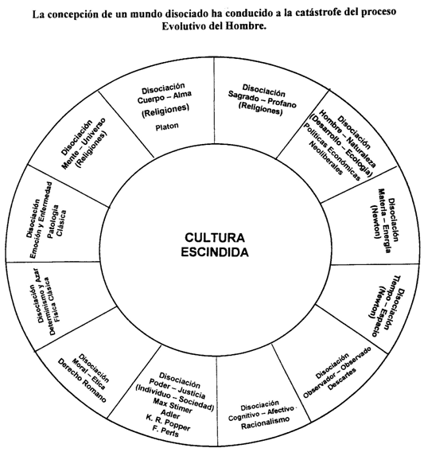
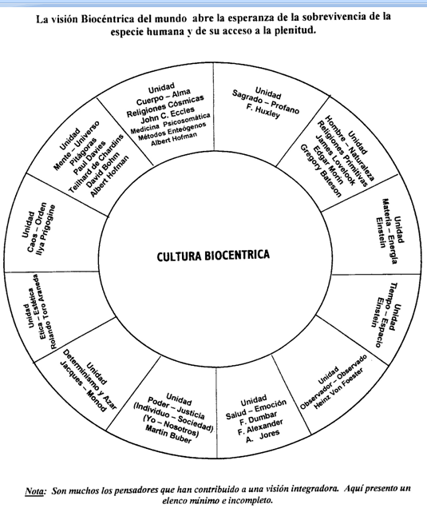
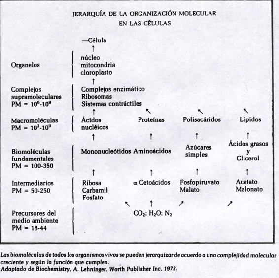
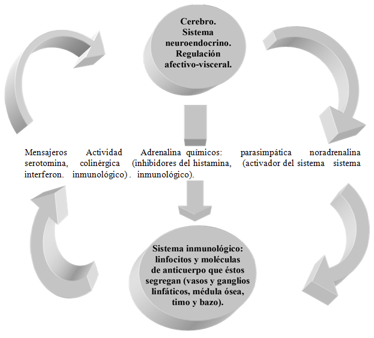
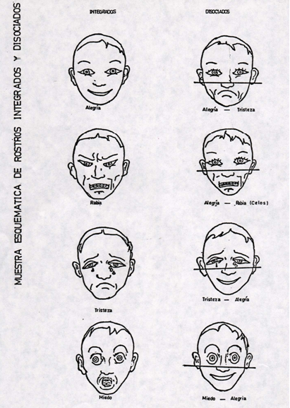
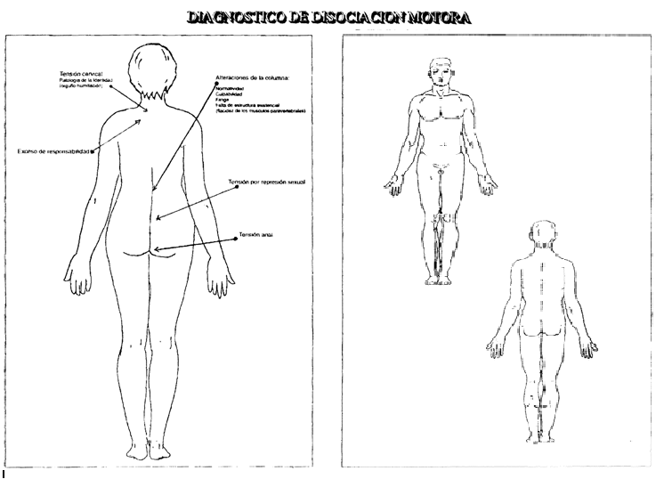

INTERNATIONAL BIOCENTRIC FOUNDATION
Escuela Modelo de Biodanza Sistema Rolando Toro
Curso de Formación para Profesores de Biodanza

Enlace para acceder a la I. B. F.
CAPITULO I: DEFINICIÓN DE BIODANZA
La base conceptual de Biodanza proviene de una meditación sobre la vida, del deseo de renacer de nuestros gestos despedazados, de nuestra vacía y estéril estructura de represión. Podríamos decirlo con certeza: es la nostalgia de amor.
El primer conocimiento del mundo, anterior a la palabra, es el conocimiento del movimiento. La danza es, por lo tanto, un modo de ser-en-el-mundo, es ‘la expresión de la unidad orgánica de la especie humana con el universo’. Esta noción de la danza, como cenestesia integrativa, es muy antigua y tiene, a través de la historia, numerosas expresiones culturales, tales como las danzas primitivas, las danzas órficas, las ceremonias tántricas o las danzas giratorias del sufismo.
El poeta Jala-od- Din Rumi (siglo XIII) exclamaba:
“¡Oh día, levántate... los átomos danzan, las almas, arrebatadas de éxtasis, danzan, la bóveda celeste, a causa de ese Ser, la danza. Te diré al oído hacia dónde conduce su danza: todos los átomos que hay en el aire y en el desierto -compréndelo bien- están enamorados como nosotros y cada uno de ellos, feliz o desdichado, se encuentra deslumbrado por el sol del alma incondicionada.”
Una sesión de Biodanza es una invitación a participar en la danza cósmica, de la que habla el poeta sufí. Esta afirmación tal vez resulte sorprendente dentro del melancólico panorama socio-político de nuestro tiempo. En un mundo como el nuestro, de hambre, genocidio, tortura, delación y abandono infinito ¿cómo es posible ponerse a bailar? A primera vista parece una inconsecuencia. Sin embargo, mi propuesta no consiste sólo en danzar, sino en activar, mediante ciertas danzas, potenciales afectivos y de comunicación que nos conecten con nosotros mismos, con el semejante y con la naturaleza. Más ¿cómo podríamos cambiar el mundo sin cambiar nosotros mismos?
La transformación mediante Biodanza no es una mera reformulación de valores, sino una verdadera transculturación, un aprendizaje afectivo, una modificación límbico-hipotalámica.
La deformidad del espíritu occidental culminó durante este siglo con los más grandes atentados contra la vida humana que conoce la historia. La patología del ego ha sido reforzada hasta extremos jamás alcanzados antes. Para sustentarla están las instituciones estatales, las ideologías políticas y educacionales. Aún más, muchos de los intelectuales y pensadores de nuestra época colaboran en este vasto proceso de traición a la vida. Nuestra acción es, por lo tanto, una abierta trasgresión a los valores de la cultura contemporánea, a las consignas de alienación de la sociedad de consumo y a las ideologías totalitarias.
El fracaso de las revoluciones sociales se debe a que las personas que las promueven no han realizado, en sí mismas, el proceso evolutivo. Las transformaciones sociales sólo pueden tener éxito a partir de la salud y no de la neurosis o del resentimiento. De otro modo, los cambios sociales sólo sustituirán una patología por otra.
Biodanza propone restaurar en las personas -masivamente- la vinculación originaria con la especie como totalidad biológica. Este punto de partida es indispensable para la supervivencia.
Biodanza tiene su inspiración en los orígenes más primitivos de la danza. Es importante aclarar que la danza, en un sentido originario, es movimiento vivencial. Muchas personas asocian la danza al espectáculo de ‘ballet’. Esta es una visión formal de la danza. La danza es un movimiento profundo que surge de lo más entrañable del ser humano. Es movimiento de vida, ritmo biológico, ritmo del corazón y de la respiración, impulso de vinculación a la especie, movimiento de intimidad.
Propongo una danza orgánica que responda a los padrones de movimiento que originan la vida. Hemos buscado esa coherencia y la hemos encontrado. Movimientos capaces de incorporar entropía negativa, posiciones generatrices, armonía musical entre los seres vivos, resonancia profunda con el micro y macro cosmos. Nuestro propósito es dilucidar esas pautas de movimiento para la vinculación real. Solamente si nuestros movimientos restauran su sentido vinculante, lograremos renacer del caos obsceno de nuestra época. Participamos así de una visión diferente, buscamos acceso a un nuevo modo de vivir, despertando nuestra dormida sensibilidad.
Estamos demasiado solos al interior de un caos colectivista. Hay un modo de estar ausente con toda nuestra presencia. En el acto de no mirar, no escuchar y no tocar al otro, lo despojamos sutilmente de su identidad. No reconocemos en él a una persona: estamos con él, pero lo ignoramos. Esta descalificación - consciente o inconsciente- tiene un sentido pavoroso que involucra todas las patologías del ego. Celebrar la presencia del otro, exaltarla en el encanto esencial del encuentro es, tal vez, la única posibilidad saludable.
Lo que necesitamos para vivir es un sentimiento de intimidad, de trascendencia, de vinculación gozosa y de estimulante dicha. En esas necesidades naturales hemos puesto nuestros objetivos. Sabemos que la consistencia existencial no puede provenir de una ideología, sino de las vivencias en acción. Nuestra finalidad es activar, a través de la danza y ejercicios de comunicación en grupo, profundas vivencias armonizadoras.
Vivencia es una experiencia vivida, con gran intensidad, por un individuo, en un lapso de tiempo ‘aquí-ahora’ y que produce efectos emocionales, cenestésicos y viscerales; es la sensación intensa de estar vivo ‘aquí y ahora’. Es la intuición del instante de vida. Las vivencias son una puerta, a través de la cual penetramos en el puro espacio del ser, donde el tiempo deja de existir y donde somos nosotros aquí y ahora, para siempre.
El término Biodanza
El término Biodanza fue creado a partir de una vasta elaboración semántica.
Había nacido una disciplina de características inéditas, para la cual no existía un término apropiado. El 15 de marzo de 1977 estaba esperando un avión, en el aeropuerto de Recife, junto a Cecilia Luzzi, e hice una lista de cincuenta posibles nombres para esta disciplina.
Se trataba de un sistema en el cual los movimientos y ceremonias de encuentro, acompañados de música y canto, inducían ‘vivencias’ capaces de modificar el organismo y la existencia humana a diversos niveles: orgánico, afectivo-motor y existencial.
La Enciclopedia de la Música Garzanti describe la danza como:
“Conjunto de movimientos del cuerpo, seguidos colectiva o individualmente, con finalidad ritual o de puro divertimento, generalmente asociado a una música, instrumental o vocal, que puede consistir en una mera cadencia rítmica... un verdadero lenguaje... presente en todas las circunstancias importantes de la existencia, relaciones sexuales, caza, guerra, ciclo de las estaciones, muerte (ritos de renacimiento, y otros de iniciación...)”.
Evidentemente, el concepto de danza es muy amplio y se extiende a gestos, expresiones y movimientos plenos de sentido vital.
Era necesario restablecer el concepto original de danza -en su más vasta acepción- como movimiento natural pleno de significado y con un poder inusitado de inducir transformaciones en la existencia. La idea se aproximaba claramente al concepto de ‘danzar la vida’, propuesto por Roger Garaudy.
El prefijo ‘bio’ deriva del término ‘bios’, que significa ‘vida’. La palabra ‘danza’, en la acepción francesa, significa ‘movimiento integrado pleno de sentido’. La metáfora estaba formulada: ‘Biodanza, danza de la vida’.
A través del tiempo se pudo observar que Biodanza era claramente un camino para reencontrar la alegría de vivir, pues cambiaba radicalmente la actitud occidental estructurada sobre los valores del ‘hombre sacrificial’, por aquella del ser que busca el goce y la plenitud. Biodanza es la participación en un nuevo modo de vivir, a partir de intensas vivencias personales inducidas por la danza.
A continuación presento una síntesis conceptual de los elementos fundamentales que estructuran la base teórica de Biodanza y que podemos considerar como una definición académica.
“Biodanza es un sistema de integración afectiva, renovación orgánica y re-aprendizaje de las funciones originarias de vida, basada en vivencias inducidas por la danza, la música, el canto y situaciones de encuentro en grupo”.
El significado de los términos usados en esta definición está descrito aquí, en forma más explícita, para su mejor comprensión.
- Integración afectiva:
Se trata de restablecer la unidad perdida entre la especie humana y la naturaleza. El núcleo integrador es -según nuestro abordaje- la afectividad, que influye sobre los centros reguladores límbico- hipotalámicos, los que, a su vez, influyen sobre los instintos, vivencias y emociones. - Renovación orgánica:
Es la acción sobre la autorregulación orgánica. La renovación orgánica es inducida, principalmente, mediante estados especiales de trance que activan procesos de reparación celular y regulación global de las funciones biológicas, disminuyendo los factores de desorganización y estrés. - Reaprendizaje de las funciones originarias de la vida:
Es aprender a vivir a partir de los instintos. El estilo de vida debe tener coherencia con los impulsos primordiales de vida. Los instintos tienen por objeto conservar la vida y permitir su evolución.
Inconsciente vital
El inconsciente vital es el psiquismo de las células y órganos. Esto significa que las células y los órganos tienen memoria, sistemas de defensa, afinidad y rechazo, solidaridad entre ellas y una riquísima forma de comunicación. Es un verdadero funcionamiento integrado y es quien da origen a los estados de humor. Este psiquismo no trabaja con ideas ni con imágenes, sólo responde a estímulos externos y, principalmente, a los internos.
Considerando el concepto de ‘inconsciente personal’ de Freud y el de ‘inconsciente colectivo’ de Jung, Rolando Toro Araneda propuso el concepto de inconsciente vital. Según este concepto, los estados de humor están relacionados con la condición de equilibrio, vitalidad y salud del organismo.
Principio biocéntrico
El principio biocéntrico se inspira en la intuición del universo organizado en función de la vida y consiste en una propuesta de reformulación de nuestros valores culturales, que toma como referencial el respeto por la vida.
El principio biocéntrico propone la potencialización de la vida y la expresión de sus poderes evolutivos. Biodanza es, desde este punto de vista, una poética de lo viviente, fundamentada en las leyes universales que conservan y permiten la evolución de la vida. Todas las acciones de Biodanza se orientan en resonancia con el fenómeno profundo y conmovedor de la vida.
Biodanza emplea una metodología vivencial, dando énfasis a la experiencia vivida (más que a la información verbal), permitiendo comenzar la transformación interna sin la intervención de los procesos mentales de represión.
Participamos del pensamiento visionario de Alberto Schweitzer:
“Meditando sobre la vida, siento la obligación de respetar cualquier voluntad de vida a mi alrededor, por ser igual a la mía”.
La idea fundamental del bien es que éste consiste en preservar la vida, en favorecerla, en conducirla a su valor más alto; y que el mal consiste en aniquilar la vida, lastimarla, poner trabas a su florecimiento.
3. La vivencia
La vivencia es el elemento operativo esencial del sistema Biodanza y la inducción de vivencias constituye la base del método de Biodanza. Los ejercicios de Biodanza estimulan el inconsciente vital y la expresión de los potenciales humanos, a través de la deflagración de vivencias.
La inducción frecuente de determinados tipos de vivencias reorganiza las respuestas frente a la vida. La acción reguladora de los ejercicios no se ejerce sobre el córtex cerebral voluntario, sino sobre la región límbico-hipotalámica (centro regulador de las emociones).
He clasificado las vivencias en cinco grandes conjuntos expresivos del potencial humano, a los que he llamado ‘líneas de vivencia’. Los ejercicios están seleccionados para estimular la producción de vivencias específicas, dentro de esos cinco conjuntos de potencial.
Las cinco líneas de vivencia:
Vivencias de vitalidad: el desarrollo de la línea de vitalidad se genera estimulando, mediante las danzas, al sistema neurovegetativo (simpático- parasimpático), a la homeostasis (equilibrio interno que se conserva a pesar de los cambios externos), al instinto de conservación (lucha y fuga), a la energía para la acción y a la resistencia inmunológica. Básicamente, los ejercicios de vitalidad movilizan al inconsciente vital, el que constituye el fondo endotímico, el humor endógeno y los estados de ánimo.
Vivencias de sexualidad: los ejercicios de la línea de sexualidad, estimulan los movimientos y sensaciones relacionadas con el erotismo, la identidad sexual y la función del orgasmo. Estos ejercicios permiten el despertar de las fuentes del deseo y superar la ‘represión sexual’.
Vivencias de creatividad: estos ejercicios estimulan los impulsos expresivos y de innovación, la capacidad de crear danzas, la creatividad existencial y artística.
Vivencias de afectividad: ceremonias de encuentro, rituales de vínculo y danzas de solidaridad permiten una reeducación afectiva y el acceso a la amistad y al amor.
Vivencias de trascendencia: las danzas en la naturaleza, los ejercicios en el agua, las danzas de los cuatro elementos, vinculan a los participantes de Biodanza con la armonía universal, despiertan la actitud ecológica y el acceso a la conciencia cósmica.
Las cinco líneas de vivencia se relacionan entre sí y se potencian recíprocamente. En los cursos de Biodanza se desarrollan estas cinco líneas en forma combinada.
Psicofísica
Todo el proceso de cambio debe involucrar al cuerpo en sus diversos niveles: neurológico, endocrino, inmunológico y emocional. El tradicional método de hacer conscientes los conflictos inconscientes, con el objetivo de curar los trastornos psicológicos, se ha demostrado insuficiente. El cerebro, la mente y el cuerpo son una sola unidad, impensable separadamente. La mente está en cada célula del cuerpo.
Las vivencias de alegría, placer y erotismo alcanzan la totalidad del organismo y tienen efecto integrativo. El método de Biodanza es vivencial y uno de sus objetivos prioritarios es la superación de disociaciones.
El grupo
El grupo es esencial en el proceso de cambio, porque induce nuevas formas de comunicación y vínculo afectivo. El grupo es una matriz de renacimiento, en el que cada participante encuentra continente afectivo y permiso para el cambio. Durante un siglo, la psicoterapia ha concentrado interés en el individuo como ser aislado, pero hoy día sabemos que no existe la posibilidad de una evolución solitaria. La presencia del semejante modifica el funcionamiento de las personas en todos sus niveles orgánicos y existenciales.
Martín Buber, Pichón Riviere, James Hillmann y Kenneth J. Gergen han comenzado la búsqueda del ser humano como ‘ser relacional’. Ha nacido el ‘hombre ecológico’.
Grupos específicos normales:
Biodanza puede aplicarse a grupos específicos con características semejantes, tales como:
- Niños, adolescentes, adultos, ancianos.
- Mujeres grávidas.
- Familias (participación de padres, hijos, tíos, abuelos, primos, etc.).
- Personas normales con dificultad para establecer vínculos profundos: inseguridad, estados depresivos, angustia, desconfianza, hostilidad, egocentrismo, carencia afectiva, falta de ímpetu vital, estrés, ausencia de motivaciones para vivir.
- Grupos especiales de rehabilitación existencial, enfermos mentales, hipertensos, enfermos de morbo de Parkinson, etc.
La diversidad de problemas y cuadros clínicos, que Biodanza ayuda a resolver, se debe a que este sistema activa funciones generales tales como: expresión de la identidad, comunicación afectiva y funciones integrativas del organismo.
El poder deflagrador de la música (semántica musical)
La música es el instrumento de mediación entre la emoción y el movimiento corporal. Es un lenguaje universal, accesible a niños y adultos de cualquier época y región. Su influencia va directamente a la emoción, sin pasar por los filtros analíticos del pensamiento. La música estimula la danza expresiva, la comunicación afectiva y la vivencia de sí mismo. El órgano para sentir la música no es el oído, sino el cuerpo. La identidad es permeable a la música y, por lo mismo, puede expresarse a través de ésta.
La caricia
La caricia es uno de los instrumentos fundamentales de Biodanza, pues induce cambios funcionales en los ámbitos orgánico y existencial. La caricia despierta la fuente del deseo y expresa la identidad. Las terapias y la medicina poseen, generalmente, una alta tecnología y una semántica sofisticada, pero una total falta de afecto. El desenvolvimiento del erotismo es esencial en el proceso de cambio. Las motivaciones existenciales se enriquecen por la fuerza del eros y el deseo de amor.
El sentido primordial de la danza
A través de la historia de la danza, en nuestra sociedad, se ha evidenciado el fuerte propósito de formar buenos bailarines, que sean capaces de alcanzar, mediante el ejercicio y el aprendizaje, altos niveles de optimización en la destreza y belleza de los movimientos. Cuando el danzarín de ballet pone en acción sus movimientos, ajustándolos a necesidades estéticas, está activando una serie de funciones vinculadas al control voluntario. Entre ellas podemos mencionar: movimientos intencionales, desplazamiento consciente dentro del espacio, semántica expresiva en relación con ciertos códigos gestuales, coordinación auditivo-sonora y viso-motora, localización en torno a otras figuras referenciales y relacionadas.
Existe, no obstante, una posibilidad completamente diferente que consiste en transformar al danzarín en danza. Este camino se ha realizado en ceremonias de religiones arcaicas, en ciertas danzas místicas y de éxtasis. En estos casos el individuo ingresa a un estado vivencial en el que llega a ‘ser danza’. La música danza al danzarín: la ‘conciencia de identidad’ se disuelve en una especie de matriz del universo que está en movimiento orgánico y en que cada elemento forma parte de la danza mayor. La danza cósmica consiste en el viviente interjuego de todas las fuerzas presentes.
Para conseguir el estado de trance, que permite al danzarín llegar a ‘ser danza’, es necesario partir de un tonus ‘abierto’ a los impulsos propioceptivos espontáneos; un estado incondicional y receptivo, libre de todo propósito de teatralización. En estas condiciones, el individuo ‘permite’ que la música se infiltre en su organismo e induzca al estado cenestésico-vivencial. ‘Ser danza’ constituye una experiencia extraordinaria, la más poderosa fuente de renovación y energetización. Biodanza propone esta posibilidad de una danza orgánica, basada en la vivencia y no en la conciencia.
Unidad música-movimiento-vivencia
La música utilizada en Biodanza es rigurosamente seleccionada en relación con los ejercicios y las vivencias que se pretende alcanzar. Para seleccionar la música se requiere preparación en semántica musical y conocimientos acerca de los efectos de ésta sobre el organismo.
Es necesario encontrar las formas musicales que puedan tener ‘potencia deflagradora’ de respuestas emocionales específicas; así por ejemplo, proponer una danza de alegría con música de acordes depresivos induce procesos disociativos. Los centros motores del cerebro y los que integran la percepción musical con las emociones, empiezan a actuar en forma disociada. Es necesario trabajar con estructuras coherentes de ‘música-movimiento- vivencia’ para no inducir procesos iatrogénicos que, en lugar de integrar, disocien.
Actualmente, las ciencias de la salud están preocupadas por la protección, la profilaxis, la rehabilitación, la higiene social y el cuidado del medio ambiente. En esta tarea participan profesionales de diversas disciplinas. Según Edgar Morin y Murray Gell-Mann, si pensamos que la terapia es, primordialmente, la protección de la salud y no sólo la curación de enfermedades, el concepto de la terapia se amplía.
Biodanza no es una disciplina alternativa, sino una extensión de las ciencias humanas, como las realizadas por Freud, Jung, Reich y otros. Estos autores contribuyeron a la investigación de nuevos sistemas de curación. Los métodos terapéuticos se complementan de acuerdo a su eficacia y competencia, para curar enfermedades y proteger la salud.
Biodanza integra el cuerpo, las vivencias y el movimiento en situaciones de grupo, abriendo nuevos caminos terapéuticos. Biodanza es un sistema de profilaxis, rehabilitación existencial, integración psicofísica (superación de disociaciones), reeducación de la afectividad y tratamiento complementario de enfermedades mentales y psicosomáticas. Los efectos de Biodanza son polifacéticos: profilácticos, educacionales, terapéuticos y psicosociales.
Podríamos comenzar a pensar todo de nuevo. Invertir los axiomas iniciales, que surgieron hace miles de años, como natural respuesta a la angustia que provocó la enfermedad.
Si el objetivo de la psicoterapia es curar enfermos, el objetivo de Biodanza es desenvolver los potenciales de salud. La alternativa, entonces, es trabajar a partir de la enfermedad o bien, a partir de los factores de optimización bio- social.
La propuesta de una mudanza a partir de la parte sana, se contrapone a la esencia de la psicoterapia tradicional.
He aquí un esquema comparativo entre psicoterapia y Biodanza:
Fundamentos
| Psicoterapia | Biodanza |
|---|---|
| La psicoterapia tiene estructura cognitivo-verbal. | Biodanza estructura tiene cenestésico-vivencial. |
| Está la psicología basada en experimental. | Es interdisciplinaria. Incluye artes, filosofía, antropología, ciencias sociales |
| Se basa en la psicología de la personalidad. | Está centrada en la identidad. |
| Emplea lenguaje científico. | Utiliza, indistintamente, lenguaje científico y poético |
Objetivos
| Psicoterapia | Biodanza |
|---|---|
| Estrictamente terapéuticos (curar las enfermedades). | Estrictamente educativos (desenvolvimiento del potencial humano). |
| Transformar al individuo. | Transformar los valores culturales alienantes. |
| Hacer conscientes los conflictos inconscientes. | Crear una nueva sensibilidad frente a la vida. |
Instrumentos
| Psicoterapia | Biodanza |
|---|---|
| Diagnóstico (anamnesis, encuestas, técnicas proyectivas, asociación libre, análisis de sueños, etc.). | Música-movimiento-vivencia. Inducción de vivencias, mediante ejercicios con música, cantos, danzas, ceremonias de encuentro, contacto y caricias. |
| Tratamiento: concientización mediante análisis, interpretación, consejos, etc. Elaboración verbal de conflictos. | Desenvolvimiento de las potencialidades vitales, afectivas, creativas, sexuales y trascendentes. |
Áreas de Aplicación
| Psicoterapia | Biodanza |
|---|---|
| Neurosis, psicosis, trastornos de conducta y adaptación, psicopatías, deficiencia mental, etc. | Destinada a todas las personas. Expresión de creatividad; educación y profilaxis; rehabilitación existencial; autorregulación orgánica. |
Resumen
Psicoterapia:
- Posee un enfoque esencialmente terapéutico.
- Parte desde la enfermedad (conflicto).
- Se basa en el estudio de la personalidad.
- Utiliza métodos de diagnóstico y categorías nosológicas.
- Hace conscientes los conflictos inconscientes.
- Estudia la evolución clínica de la enfermedad.
- Hace interpretación y elaboración verbal de los datos (análisis).
Su etimología es psychké: alma.
Biodanza:
- Tiene un enfoque esencialmente pedagógico y terapéutico.
- Se basa en el estudio del ser humano como unidad.
- Tiene por objetivo la integración psicofísica, la profilaxis, la rehabilitación existencial, la reeducación de la afectividad y el tratamiento complementario de enfermedades mentales y psicomotoras.
- No utiliza los métodos de diagnóstico de la psicoterapia clásica ni categorías nosológicas.
- Utiliza sistemas de control evolutivo de las potencialidades.
- Estimula la integración psicofísica mediante la estructura operativa ‘música-movimiento-vivencia’.
Su fundamento es bios: vida.
Si optáramos por pensar todo de nuevo, enfrentaríamos una dramática alternativa filosófico-existencial: trabajar con la enfermedad o bien hacerlo con la energía de redención y creación.
- Todos los ejercicios de Biodanza promueven la integración del organismo, lo cual se traduce en una profunda sensación de bienestar. Cualquier ejercicio de carácter disociativo, no es de Biodanza.
- Biodanza induce vivencias de vitalidad, erotismo, creatividad, afecto y trascendencia. La propuesta de otros objetivos filosóficos, mágicos o políticos no corresponden al sistema Biodanza.
- Biodanza no es interpretativa ni analítica. Toda acción interpretativa de sensaciones o movimientos, que se realicen durante el aula, demuestran que no se está haciendo Biodanza.
- Biodanza posee una teoría coherente y un modelo operacional. El simple agrupamiento de ejercicios, la libre expresión corporal o la mezcla de diversas técnicas, no es Biodanza.
- Biodanza respeta profundamente los niveles motores y emocionales de cada alumno. Cualquier actitud autoritaria, de parte del profesor, es contraria a este método.
- Biodanza trabaja con procesos de integración a través del grupo. La utilización de ‘egos auxiliares’ u ‘observadores terapéuticos’, no es Biodanza.
- Biodanza respeta los automatismos orgánicos de la respiración y de la función cardíaca. No deben proponerse ejercicios respiratorios, como la hiperventilación (de graves consecuencias para el organismo) o técnicas respiratorias de otros sistemas.
El movimiento corporal, las emociones y la respiración, forman un conjunto autorregulado, en el que no deben intervenir los factores disociativos de la conciencia. La belleza de los automatismos está justamente en ser automáticos.
La intervención en los procesos digestivos y alimentarios, con ayunos, vómitos inducidos, enemas o alimentación deficiente, no corresponden a concepciones de salud sustentables. - En Biodanza, la relación interpersonal se da en retroalimentación. Cada persona debe informar, con su actitud, la proximidad que es capaz de aceptar y es responsable de su límite de contacto. Nadie debe invadir el espacio privado del otro. El encuentro humano se produce en la perfecta coherencia de señales que indican apertura o límite. Por lo tanto, los ejercicios donde el profesor impone formas de contacto, sin considerar el feed-back del encuentro, no son del sistema Biodanza.
- Biodanza tiene dimensiones sociales, ecológicas y de trascendencia. La exclusión de estos tres aspectos significa que no se está haciendo Biodanza.
- Biodanza tiene fundamentos científicos. Se basa en las ciencias biológicas, en la etología y en extensos estudios antropológicos. Toda sesión con preconceptos morales o formas de medicina basadas en modelos imaginarios, no es Biodanza.
- La música de Biodanza es seleccionada a través de criterios de semántica musical. El contenido emocional de la música es rigurosamente seleccionado para inducir determinadas vivencias. La música de Biodanza debe tener un fuerte poder deflagrador de vivencias. No puede, por lo tanto, usarse músicas de acuerdo con la preferencia personal del profesor. La inclusión de nuevas músicas debe ser autorizada por una comisión especial.
- Atlan Henri: “Entre el cristal e a fumaça”. Editora Zahar, 1992, Río de Janeiro, Brasil.
- David Bohm: “La totalidad y el orden implicado”. Editora Kairos, 1987, Barcelona, España.
- Edgar Morin: “II Paradigma Perduto, la natura humana”. Editora Point Senil.
- Edgar Morin: “La Methode 2 - La vie de la vie”. Editora Point Senil.
- F. David Peat: “Sincronicidad”. Editora Kairos, 1995, Barcelona, España.
- Francisco Varela: “Autonomie et Conaissance”. Editora Senil, 1989, París, Francia.
- Fritjof Capra: “La rete de la Vita”. Editora Rizzoli, 1997, Milán, Italia.
- Hubert Reeves: “L'evoluzione Cósmica”. Editora Rizzoli, 1993, Milán, Italia.
- Ken Willber, Karl H. Pribram y otros: “El Paradigma Holográfico”. Editora Cultrix, 1978, Sao Paulo, Brasil.
- Murray Gell-Mann: “El Quark y el Jaguar”. Editora Tusquets, 1995, Barcelona, España.
- Paul Davies: “II Cosmo Inteligente”. Editora Mondadori, 1998, Milán, Italia.
- Rolando Toro Araneda: “El Principio Biocéntrico”. Editora Bio's, 1987, Recife, Brasil.
CAPÍTULO II : MODELO TEÓRICO DE BIODANZA
Un modelo científico es una ‘imagen’ construida por el investigador para un sistema de la realidad. Esta imagen posee características semánticas y plásticas que tienen coherencia con el conjunto de fenómenos externos en observación. El ‘modelo’ nos permite pensar, de manera práctica, la relación entre un sistema normal (creado por el ser humano) y su exterior ‘natural’.
Podríamos decir que el investigador hace una propuesta imaginaria acerca de la realidad y, luego, establece relaciones entre los hechos y esa propuesta. En la creación del modelo interviene la intuición totalizadora, la imagen y los conocimientos previos que posee el investigador. Sin embargo, la concepción misma del modelo es una especie de visión totalizadora a priori. Lo que interesa no es el modelo, como mito de los hechos reales, sino las relaciones de coherencia con ellos. Estas relaciones, entre el modelo y el sistema en estudio, no son unívocas, sino recurrentes: se proyectan desde el modelo hacia lo real y desde lo real hacia el modelo.
Ahora bien, cuando el modelo se elabora en sus relaciones lógicas intrínsecas y en sus aspectos formales matemáticos o prácticos, surgen nuevas características que, al ser comparadas con el sistema exterior, revelan aspectos desconocidos de ese sistema. El modelo permite orientar la investigación, crear nuevas hipótesis, manipular relaciones desconocidas y comprender los hechos dentro de una visión unificada. La ventaja de un modelo, sobre una simple descripción, es que permite establecer relaciones absolutamente imprevistas, que abren opciones nuevas en el campo operativo.
Un modelo es un instrumento de investigación y manipulación de un determinado conjunto de fenómenos observados, a través del cual es posible descubrir relaciones de coherencia.
Los modelos científicos han sido fecundos en el conocimiento de la realidad. Podemos mencionar, por ejemplo, el modelo de las cadenas helicoidales del código genético, creado por Watson y Crick, de extraordinaria belleza e ingeniosa estructura; el modelo de organización hexagonal de Kekulé, concebido en sueños y que dio origen a la química del benzano; o el modelo psicoanalítico de Freud, con las tres instancias psíquicas de id, super ego y ego; etc.
Los modelos científicos están en permanente evolución. La confrontación permanente del modelo con su exterior natural, implica modificaciones parciales y a veces fundamentales. El modelo del universo de Ptolomeo, por ejemplo, fue reemplazado por el de Kepler y Galileo; éste fue perfeccionado por el de Newton y, posteriormente, por el de Einstein, Eddington y otros. El modelo del átomo de Bohr-Rutherford evolucionó con el de la mecánica ondulatoria de Luis de Broglie y Planck.
Los modelos científicos representan -desde el instante en que son creados por el investigador- una aproximación y/o simplificación de la realidad estudiada.
Un modelo científico es, según Garaudy:
"Una reconstrucción de lo real, desde el plano humano, y realiza el ‘lado activo’ del conocimiento, el papel de ‘proyecto’ en el mismo".
Así, el conocimiento es, simultáneamente, ‘reflejo’ de lo real y ‘proyecto’ sobre lo real. En las ciencias humanas, la intuición de un modelo se relaciona con la poesía y con la revelación mística.
El modelo teórico de Biodanza fue inspirado en experiencias clínicas con pacientes psiquiátricos. En 1965, siendo miembro docente del Centro de Estudios de Antropología Médica de la Escuela de Medicina de la Universidad de Chile, realicé las primeras investigaciones con música y danza en el Hospital Psiquiátrico de Santiago.
El Centro de Estudios de Antropología Médica, dirigido por el profesor Francisco Hoffman, tenía entre sus objetivos, ensayar diversas técnicas de psicoterapia para ‘humanizar la medicina’: psicoterapias de grupo en la línea de Rogers; arte-terapia (pintura, teatro); psicodrama; terapia gestáltica; músicoterapia; etc.
Mi abordaje consistía en incluir la actividad corporal y estimular las emociones a través de la danza y el encuentro humano. Inicié sesiones de danzas con enfermos mentales, internados en la sección del hospital dirigida por el Profesor Agustín Tállez. Con el objeto de inducir armonía y tranquilidad en los pacientes psiquiátricos, propuse danzas armoniosas y lentas, con ojos cerrados. La observación reveló que estos ejercicios tenían efectos contraproducentes, pues conducían a los enfermos, con facilidad, a estados regresivos. En esos casos las alucinaciones y delirios se acentuaban y podían durar varios días. Indudablemente, los enfermos, que por definición tienen una identidad mal integrada, se disociaban aún más cuando realizaban movimientos que inducían regresión. Este resultado, aparentemente negativo, sugería una fuerte movilización de los contenidos del inconsciente. En sesiones siguientes sugerí danzas euforizantes, a partir de ritmos alegres, que estimulaban la motricidad. El resultado fue un notable aumento del juicio de realidad y la desaparición de los delirios y alucinaciones.
Estas experiencias y observaciones iniciales constituyeron la base para la construcción de un modelo teórico operativo, en el que fueron localizados, en un polo, los ejercicios de regresión y, en el otro polo, los ejercicios de reforzamiento de la identidad.
Ambos conjuntos de ejercicios presentaban respuestas neurovegetativas específicas:
- Ejercicios euforizantes que estimulaban la identidad, daban respuestas simpático-adrenérgicas.
- Ejercicios de regresión, en ‘cámara lenta’, inducían respuestas parasimpático-colinérgicas.
Quedó así diseñado el primer eje para un modelo teórico que, con el tiempo, se fue perfeccionando. Los términos identidad-regresión parecían configurar un continuum pulsante.
Cierto tipo de ejercicios aumentaba la conciencia corporal, mientras otros conducían a la disolución del límite corporal y al estado de regresión. Se podía, así, construir una escala de pasos progresivos desde la identidad hacia la regresión y viceversa.
Estructuré conjuntos de ejercicios y músicas que reforzaran la identidad y otros que indujeran al trance:
| Identidad | Regresión |
|---|---|
| Marcha fisiológica. | Coro sobre una sílaba. |
| Ejercicios de desafío. | Rotación lenta del cuello. |
| Danzas de expresión, vigor y determinación. | Danzas de relajación. |
| Danzas de comunicación y encuentro. | Movimientos en ‘cámara lenta’. |
| Danzas creativas. | Rondas de mecimiento. |
| Danzas de lucha. | Grupo compacto de trance. |
Partiendo de esta experiencia, concluí que para cada disturbio debería haber una adecuación de los estímulos musicales y de los ejercicios. En algunos casos, podían ser utilizadas músicas que reforzaran la identidad y la conciencia de realidad (ritmos euforizantes), mientras que en otros se podían inducir estados de regresión que facilitaran la reparentalización y que disminuyeran la ansiedad. Este modelo permitía prescribir ejercicios específicos para el enfermo mental, reforzando -con diversas danzas- la manifestación de la identidad.
Posteriormente, observé que personas tensas, angustiadas o con trastornos psicosomáticos del tipo hipertensión y úlcera gástrica, mejoraban cuando realizaban ejercicios propios del hemisferio de regresión. El estado de regresión, tal como fue inducido en las sesiones, tenía claros efectos ansiolíticos.
Llegué, con el tiempo, a la convicción de que los estados de identidad y regresión son absolutamente complementarios y abarcan la totalidad de la experiencia humana. Durante la regresión, el individuo tiende a disolverse en la totalidad del universo y a perder los límites corporales, mientras que en el estado de conciencia de identidad se experimenta a sí mismo como centro de percepción del mundo. Estos dos estados fueron posteriormente modulados con ejercicios de contacto y comunicación. El modelo teórico fue perfeccionado con nuevas experiencias, para ser aplicado en otras áreas: niños, adolescentes, ancianos, grupos familiares, etc. En 1970 fui invitado, por la Universidad Católica de Chile, a crear la primera cátedra de Psicodanza, denominación que posteriormente reformulé por encontrarla disociativa. Decidí llamarla Biodanza (danza de la vida).
Con el tiempo, el modelo teórico se fue perfeccionando con la introducción de ejercicios de contacto, comunicación, creatividad y con la descripción y medición de los efectos neuropsicológicos de los ejercicios en diversos cuadros clínicos. Posteriormente, las sesiones de Biodanza se extendieron a personas con trastornos psicosomáticos.
El modelo teórico de Biodanza ha experimentado modificaciones a través de 40 años de confrontación con la realidad. Hemos ajustado sus términos y hemos descubierto nuevas relaciones entre emoción y salud. No obstante, conserva su estructura original.
A través del tiempo, he podido registrar, con precisión, las respuestas neurovegetativas, las modificaciones comportamentales y los cambios en el estilo de vida. Hemos realizado mediciones del rendimiento psicomotor, neurovegetativo, endocrino e inmunológico. El estudio sistemático del proceso evolutivo de los alumnos, dentro de las cinco líneas de potencial humano, ha sido nuestra permanente preocupación. El modelo teórico de Biodanza es actualmente muy sofisticado y permite su aplicación no sólo a personas normales, sino también a enfermos con distintos cuadros clínicos.
Cada una de las líneas de vivencia proviene de las protovivencias, sensaciones orgánicas que experimenta el bebé en los primeros meses de vida.
- La vitalidad se desarrolla a partir de la protovivencia de movimiento, de las funciones de actividad y reposo.
- La sexualidad está vinculada a la protovivencia de contacto y a las primeras sensaciones de placer, producidas por las caricias durante el acto de amamantar.
- La creatividad está ligada a las funciones expresivas de bienestar y malestar, a la curiosidad, a los cambios de posición frente al ambiente, al lenguaje y al grafismo.
- La afectividad está vinculada a la protovivencia de amamantamiento, de nutrición.
- La trascendencia se origina en la protovivencia de plenitud y armonía con el medio.
La expresión genética se manifiesta en cinco líneas de vivencia, las que representan cinco conjuntos de potencial humano:
Vitalidad: es el potencial de equilibrio orgánico, homeostasis, ímpetu vital y armonía biológica (inconsciente vital).
Sexualidad: es la capacidad de fecundación, de sentir deseo sexual y placer.
Creatividad: es el elemento de renovación que debe aplicarse a la propia vida: crearse a sí mismo, poner creatividad en cada acto y realizar actividades artísticas.
Afectividad: es el amor indiscriminado por los seres humanos y por la vida en general. El útero afectivo que permite dar continente a los demás.
Trascendencia: es la capacidad de ir más allá del ego e integrar unidades cada vez mayores; implica la expansión de conciencia y el éxtasis místico.
El desenvolvimiento evolutivo de cada individuo se cumple a medida que los potenciales genéticos encuentran oportunidades para expresarse a través de la existencia. Los factores ambientales que determinan la expresión del potencial genético se denominan ecofactores. Los ecofactores pueden ser positivos o negativos, según permitan o bloqueen la expresión de potenciales. La crítica negativa de un adulto frente al dibujo de un niño, por ejemplo, puede constituir un ecofactor negativo y bloquear, precozmente, la manifestación de su potencial creativo.
Biodanza genera, mediante los ejercicios y danzas, campos específicos muy concentrados para estimular los potenciales genéticos. Una sesión de Biodanza es un bombardeo de ecofactores positivos sobre la función integradora-adaptativa-límbico-hipotalámica.
La integración adaptativa es el proceso en que los potenciales genéticos, altamente diferenciados, se expresan y se organizan en sistemas cada vez más complejos, creando una red de interacciones que potencian la identidad.
El modelo teórico de Biodanza consta de un eje vertical que asciende desde el potencial genético (desenvolviendo ontogenético) y de un eje horizontal (conciencia de la identidad-regresión).
El potencial genético se expresa a través de cinco líneas de potencial, mediante las vivencias.
A través de la música, la danza y situaciones de encuentro, se estimula el Sistema Integrador Adaptativo Límbico Hipotalámico - SIALH, sede anátomo-fisiológica de las vivencias.
Estímulos específicos de carácter vivencial, sobre los centros límbico- hipotalámicos, activan funciones vitales, sexuales, de renovación biológica, afectiva y de expansión de conciencia. Todas funciones de origen genético.
El modelo teórico de Biodanza es pulsante. En torno a las líneas de vivencias que se entrelazan en forma de espiral ascendente, se encuentra un eje horizontal virtual que oscila entre dos polos en forma pulsante.
TRANCE | |
|---|---|
| Categorías del Polo 'Identidad' | Categorías del Polo 'Regresión' |
| Tensión Centripeta Ampliación de conciencia. Percepción de sí como centro del mundo. Incorporación aferente de estímulos. Percepción realista. |
Expansión centrífuga. Disolución en la totalidad. Regresión a los estados primordiales. Abandono y fusión con el ‘todo’. |
Los potenciales genéticos se expresan dentro de este campo pulsante, centrípeto-centrífugo.
Los ejercicios de Biodanza deben considerarse como un conjunto concentrado de ecofactores positivos, que estimulan el desarrollo integrado de los potenciales genéticos. Esta estimulación concentrada, proveniente del medio, permite cambios discretos de carácter evolutivo y una constante reorganización biológica.
El modelo teórico de Biodanza tiene, en el polo inferior de la vertical, el concepto de potencial genético, el que se expresa sobre la trama de las líneas de vivencia.
La integración es el proceso de crecimiento en el que los potenciales genéticos, altamente diferenciados, se organizan en sistemas cada vez más amplios, en el ámbito orgánico y emocional. Este proceso de desarrollo no es necesariamente coherente con los patrones culturales y con la infraestructura de valores. Es, más bien, una forma de sintonización cada vez más perfecta con la unidad cosmobiológica.
El modelo teórico está estructurado sobre un eje vertical que señala el desenvolvimiento humano a partir del potencial genético. Es necesario hacer algunas reflexiones fundamentales para comprender esta fase del modelo:
Todo nuestro potencial está contenido en cada una de nuestras células. Esto significa que la naturaleza aseguró la información, reproduciéndola millones de veces. Algunos genes, en conjunto, permiten la expresión de determinadas características. Así, por ejemplo, la inteligencia, el tono de la voz, nuestra sensibilidad cenestésica, dependen de la acción conjunta de genes diferentes. La ausencia de determinada característica puede deberse a que un elemento genético no está participando. En tal caso, ésta existe potencialmente, pero no se expresa.
Las investigaciones actuales sobre el potencial genético, permiten concluir que el número de potencialidades que el ser humano expresa, a través de su vida, es una parte mínima del total contenido dentro de su dotación. Existen millones de combinaciones dentro de la doble espiral. La expresión de los genes está regulada por un verdadero ‘reloj genético’ y algunos genes se expresan tardíamente, mientras otros lo hacen en períodos tempranos de la vida. Dentro de las cadenas existen enormes segmentos silenciosos de potencialidades inexpresadas y desconocidas. Es importante comprender que el soporte genético, que antiguamente se concibió como una estructura sellada del destino, atesora millares de potencialidades que sólo esperan la posibilidad de expresarse. La creación de nuevas opciones, mediante la concentración de ecofactores, deflagrarán expresiones genéticas imprevisibles.
El clásico criterio de que la herencia es rígida y fatal, mientras que el medio ambiente es flexible y multifacético, debe ser examinado. Visto el ambiente desde el estructuralismo de Lévi Strauss, quedan en evidencia las rígidas formas culturales que limitan las opciones del potencial genético. Es como si los sistemas de valores de cada cultura crearan canales de extrema rigidez, a través de los cuales el potencial genético debe manifestarse, dando origen a sociedades homogéneas en su patología y reprimidas en su creatividad. Un modelo teórico debe posibilitar un intenso proceso de remodelación, cuestionando los factores culturales, para ajustarse a las auténticas necesidades de la vida.
- No basta la presencia de uno o varios genes para la expresión de una característica o para la formación de una determinada proteína: es necesaria la presencia de cofactores. Los cofactores son de naturaleza química.
- Los cofactores pueden ser aportados por el medio o por el organismo. Entre ellos podemos mencionar ciertos oligoelementos: vitaminas, algunas sales como sodio, potasio, magnesio, hormonas, neurotransmisores. Sin estos cofactores no pueden expresarse los genes. Esto explica cómo el ambiente, con todas sus situaciones de azar -o a través de la intervención humana- puede influir en los procesos de expresión genética. El aporte de alimentos y vitaminas permite la formación de ciertas proteínas, indispensables para que se manifiesten los potenciales. Así, por ejemplo, la desnutrición infantil produce retardo del crecimiento óseo, del lenguaje y de la inteligencia.
- Un tipo de intervención -jamás antes propuesta- es la activación de la expresión genética a partir de la deflagración de hormonas y neurotransmisores naturales, mediante la estimulación de emociones específicas. Estas emociones específicas pueden provocarse mediante ejercicios que inducen coraje, erotismo, alegría, etc.
- La estimulación emocional es una activación de hormonas hipotalámicas, que han de actuar como cofactores para permitir la expresión de potencialidades humanas generalmente inhibidas.
- Uno de los mecanismos biológicos de Biodanza consiste en la activación, mediante vivencias específicas, de hormonas sexuales, suprarrenales, tirotróficas, etc., que actuarán como cofactores y ecofactores de la expresión genética.
- Biodanza crea la posibilidad de activar la secreción de neurotransmisores como la acetilcolina, noradrenalina, dopamina, ácido gama- aminobutírico, glutamato, endorfinas y otros, facilitando la expresión genética.
- Se ha comprobado la existencia de genes tempranos, que se expresan en las primeras etapas de la vida, y de genes tardíos, que sólo se expresan después de cierta edad. Esto sugiere la importancia de facilitar la expresión genética en los primeros meses de vida, pero también la posibilidad de dar expresión a potencialidades en edades avanzadas.
- La enorme diversidad que se produce por la combinación de los potenciales del código genético, sugiere posibilidades insospechadas de las capacidades humanas, que sólo necesitarían condiciones óptimas para expresarse. Esta variedad, prácticamente infinita, se debe a las posibilidades matemáticas de combinación de los elementos del código genético.
- Podemos considerar los potenciales genéticos como altamente determinados y con una gran estabilidad potencial. No obstante, su expresión depende de las condiciones desencadenadas por el medio ambiente y de los cofactores en acción, sean estos:
- Fuentes energéticas (ATP), glucosas (fuente de metabolismo).
- Hormonas.
- Enzimas.
- Neurotransmisores.
- Nuestras experiencias demuestran que determinados ejercicios y situaciones de grupo activan emociones de efecto ergotrópico, gonadotrópico, etc., que modifican profundamente el estado de los cofactores y el gasto de ATP (energía biológica).
- Una selección de ejercicios y situaciones de grupo puede provocar la expresión de potenciales genéticos específicos, reprimidos por los valores impuestos por la cultura.
- El hecho de que la estructura genética pueda expresarse por medio de los ecofactores, justifica la esperanza de una psicoterapia y de acciones educativas y profilácticas.
Regresión:
Es un tránsito hacia lo primordial. En la medida en que la persona disminuye su vigilancia, pierde la noción del propio límite corporal.
La regresión en Biodanza se induce progresivamente. Es una regresión biológica y psicológica, donde se reactivan padrones fisiológicos primordiales.
La regresión no sólo es saludable porque integra y armoniza el organismo, sino porque conecta con las tendencias saludables originarias, sin las patologías culturales.
Una regresión integrativa implica un ascenso en la rampa evolutiva. La regresión refuerza la homeostasis (el equilibrio interno, la estabilidad dinámica del organismo).
La regresión significa sumergimos en el lecho de nuestra especie, ‘retomar el mensaje’. Hay una conexión directa entre la semilla y el fruto, entre el programa genético y el desenvolvimiento. El secreto de la renovación de la vida está en esa coherencia con el origen.
Sin la capacidad para renovarse, ningún organismo podría sobrevivir. Este proceso de renovación sólo es posible mediante actos de regresión y reprogramación, una especie de resonancia permanente con lo originario.
Uno de los instrumentos básicos de curación en Biodanza es el trabajo con el proceso de ‘regresión’. La regresión es una función natural del ser humano, su posibilidad de remontarse hacia el pasado y conectarse con el origen. Para inducir la regresión empleamos -en Biodanza- ceremonias de trance. Es necesario, durante estas experiencias, abandonar la conciencia de identidad, entregarse totalmente a un nuevo continente: el regazo del grupo. El trance implica un ‘tránsito’ desde un estado de conciencia a otro.
En Biodanza se inducen sólo trances integrativos. Sabemos que la regresión, según las circunstancias, puede ser una experiencia integrativa o disociativa.
Biodanza utiliza el trance como método para reciclar los padrones innatos de vitalidad. Es un ‘renacimiento’, en el sentido de las ceremonias primitivas: se vuelve a las fuentes, al estado primordial anterior al aprendizaje.
El trance -en Biodanza- permite al individuo abandonar la conciencia vigilante, dejándola disolverse en el grupo, para integrarse en una unidad más amplia e indiferenciada. La piel ya no cumple sólo la función de ‘separar’, sino que realiza también la función de ‘unir’. La vivencia que el individuo tiene, al salir del trance, es de profunda vinculación consigo mismo, con los otros y con el cosmos. Esta experiencia trae consigo un sentimiento de esplendor y plenitud, de inmensa felicidad y bienestar corporal. El grupo representa al útero, en el cual el individuo revive las sensaciones de calor, seguridad y armonía nutricia.
El concepto de regresión, asociado a lo patológico, fue definitivamente superado por una serie de descubrimientos biológicos llevados a cabo por Kortland, Z.Y. Kuo Sidney F. Margolin, A. J. Westerman, Hostun y otros, quienes establecieron que toda progresión biológica, es decir, todo paso a una estructura más integrada, compleja y autónoma, requiere una regresión previa. Kortlan, al describir el proceso de ‘regresión regenerativa’ en el desenvolvimiento de Cornorán, utiliza el término de ‘retroprogresión’. J. Rof Carballo expresa: “Si los sistemas biológicos no fuesen capaces de regresar a una fase primaria del desarrollo, es decir, a una fase embrionaria de su estructura, diferenciándose, el organismo perdería uno de sus más importantes dispositivos de seguridad”.
Si bien es cierto que algunas células, altamente diferenciadas, poseen escasa capacidad de regresión, la mayor parte de los tejidos, al ser destruidos, desencadenan -por mecanismos diversos- un proceso de desdiferenciación.
Potencial Genético
Cada individuo posee un potencial genético que constituye el conjunto de características únicas llamado ‘identidad’. En el momento de la fecundación, cuando se unen los gametos del padre y de la madre, queda determinada la identidad biológica que se expresará a través de la vida (ontogénesis). Este programa genético es ‘único’ en cada individuo y no se repite, excepto en los gemelos univitelinos y en la clonación. El potencial genético determina la estructura orgánica y los comportamientos instintivos, de los cuales derivan después funciones más complejas.
Conciencia de estar vivo
La conciencia de estar vivo permite tomar contacto con la propia identidad. La conciencia intensificada de sí mismo amplía la percepción del mundo. La conciencia de estar vivo es el acto primero de la identidad. El punto en que se encuentran la vivencia y la conciencia.
Regresión
El estado de regresión es una vuelta psico-biológica a períodos prenatales o de la primera infancia. La regresión se induce -en Biodanza- mediante ejercicios especiales, en particular en el trance de suspensión y en el trance en el agua. La persona pierde los límites corporales, disminuye la vigilancia y se abandona a un estado cenestésico semejante al del bebé dentro del útero. Durante este estado se reeditan algunas funciones fisiológicas de la primera infancia. Hay un fuerte predomino trofotrópico (parasimpático).
Al salir del estado de regresión -y al recuperar la percepción del mundo externo- puede inducirse la ‘reparentalización’ mediante caricias, en personas que sufrieron abandono y carencia afectiva en la niñez. El retorno del trance se caracteriza por un estado de ‘expansión de conciencia’ y un sentimiento profundo de ‘renacimiento’.
Trance
Es el pasaje desde el estado de vigilia normal al estado de regresión.
Trance = transiere: pasar de un estado de conciencia a otro. El trance -en Biodanza- tiene un efecto reparador e integrador.
Sistemas de integración orgánica
Son estructuras fisiológicas que aseguran la unidad funcional del organismo.
Límbico-Hipotalámico (neurotransmisores) |
|||
|---|---|---|---|
| Sistema Endocrino | Sistema Inmunológico | ||
Protovivencias
Son vivencias infantiles ligadas al instinto y a las primeras experiencias de la vida.
Cinco líneas de potencial humano
- Vitalidad
- Sexualidad
- Creatividad
- Afectividad
- Trascendencia
Estas líneas diferenciadas de potencial humano son de base genética. Se activan o inhiben por efecto de los estímulos ambientales (ecofactores). Las diferentes líneas de potencial humano se influencian entre sí, aumentando recíprocamente la fuerza de sus potencialidades. Biodanza estimula, específicamente, estos conjuntos de potencial humano.
Cofactores
Componentes químicos que intervienen en las estructuras orgánicas
Ecofactores
Factores ambientales que estimulan o inhiben el desenvolvimiento de los potenciales humanos. La cultura crea una fuerte red de ecofactores, los que actúan sobre el desenvolvimiento ético-afectivo de los individuos.
Ecofactores humanos
Son los factores humanos que hay en el ambiente. Los ecofactores humanos poseen efectos sobre cada conjunto de potencial y pueden ser tóxicos o nutritivos, estimulantes o inhibidores.
Biodanza crea condiciones para que el conjunto de ecofactores humanos alcance altos niveles de optimización, a través del afecto, la alegría compartida, el erotismo, la expresión de emociones, etc. Cada integrante de un grupo entra a formar parte del proceso integrador, afectivo, neurológico, endocrino, inmunológico.
Transtasis
Es la ascensión a un nuevo nivel de integración dentro de la rampa evolutiva.
Esquema:
Estimulación e inhibición recíproca de las líneas de potencial genético durante el encuentro humano.


La ecología humana se genera en la red de relaciones entre seres humanos. Al entrecruzarse las líneas de potencial humano, se produce la fecundación recíproca de dichos potenciales o bien se bloquean o inhiben. Los seres humanos son los más poderosos ecofactores existentes, porque las relaciones que se generan se dan en todos los niveles: orgánicos, vivenciales y noéticos.
Los padres constituyen la matriz ecológica de los hijos. La ecología humana investiga las relaciones tóxicas o nutritivas que modulan el desenvolvimiento de la existencia. Cada individuo debería estudiar su estructura ecológica humana.

- El modelo teórico de Biodanza se describe dentro de un contexto cósmico. No puede concebirse un modelo de la vida humana aislado del proceso de génesis de la vida y de su evolución filogenética y ontogenética. Este es un modelo del ‘hombre cósmico’.
- Las condiciones iniciales de la génesis de la vida son producidas por factores de regulación cósmica, sin los cuales la existencia de seres vivos es imposible (componentes químicos específicos, temperatura, presión, gravedad, longitud de ondas de luz atmosférica, humedad, etc.)
- El universo presenta regularidades que actúan en el ‘caos’. La organización de las estructuras vivas primitivas genera condiciones en las que el azar ofrece bajas posibilidades de crear y estructurar formas vivas.
- Cuando están creadas las ‘condiciones iniciales de vida’, capaces de autoorganización y duplicación (en las zonas disipativas), las mutaciones producen la diversidad y la variabilidad de las formas vivas a través de milenios. Posteriormente, del árbol filogenético, se desprende la rama de los homínidos.
- La fecundación del ser humano, durante la unión de los gametos femeninos y masculinos, da origen a la identidad y al proceso ontogenético.
- El ADN es el potencial humano individual que se expresa en cinco conjuntos, los cuales se manifiestan mediante cinco ‘líneas de vivencia’ que se potencian recíprocamente.
- La manifestación de los potenciales es pulsante entre dos estados biológicos: ‘conciencia de sí y del mundo’ y ‘fusión con el todo’ (regresión).
- La ontogénesis progresa a través de procesos de maduración, diferenciación y complejidad creciente, dando saltos evolutivos llamados ‘transtasis’, a través de los cuales se realiza la integración existencial.
- En el proceso integrativo interviene el inconsciente personal (memoria del individuo), el inconsciente colectivo (memoria de la especie) y el inconsciente vital (memoria cósmica).
- El ADN permite la autoorganización y regula los sistemas de integración intraorgánica (sistema nervioso, sistema endocrino y sistema inmunológico).
Otros puntos
Queridos todos: con muchisima alegria los saludo y anexo material correspondiente al tema del primer Modulo de la formación como Profesor en Biodanza: "Definición y Modelo Teórico de Biodanza" que realizaremos el 9 y 10 de Febrero 2019 en la sede de la Escuela en el manzano.
El tema responde a dos preguntas fundamentales: Que es Biodanza? y Como ella se organiza como un sistema? ambas preguntas son de naturaleza y lógica diferentes, por eso el tema esta dividido en dos capítulos. Su objetivo es suministrar una visión global del Sistema Biodanza Rolando Toro Araneda.
Estoy segura que al leer los apuntes les surgira un deseo de querer más información, sin embargo a medida que transcurra la formación cada tema sera trabajado con profundidad.
Durante la sesión conversaremos sobre:
- Los origenes de la Biodanza.
- El Significado primordial de la Danza.
- Biodanza en el contexto historico y antropológico de la Danza.
- La definición de Biodanza ? la que aparece en los apuntes y la del 2010 en archivo anexo. A que obedece la diferencia. Explique cada parte de ambos conceptos.
- Cual es el Origen del Modelo Teórico de Biodanza.
- Significado de la noción de modelo en el ámbito científico.
- El Modelo Teorico de Biodanza: explicación de cada concepto que forma parte de él.
Despues de cada sesión teórica tendremos una sesión vivencial.
El horario de nuestro trabajo es: sábado de 8.30am a 6.30pm y Domingo 8.30am a 4,30pm. En la sesión del sabado AM podriamos entre todos acordar algun ajustes en el horario, si se requiere.
Les pido vengan con ropa cómoda y la persona friolenta quizas traer una mantita; la inversion del Modulo en este momento es el equivalente en BsS a 6 dolares, de acuerdo a la tasa de cambio que informaremos el jueves am de la semana del evento.
El hospedaje es opcional y su costo es 1.000bsS la noche; en cuanto al tema de la comida les pedimos traigan para compartir con sus companeros almuerzo y los que se quedan cena y desayuno, previamente preparados . Agradecemos nos informen con anticipación quienes deseen hospedarse en la Escuela, para hacer los preparativos correspondientes.
Marco Bartoloni, mi esposo, tiene a su cargo la cobranza y su telefono es 0424.504.7376; la cancelación del pueden hacerla en efectivo o transferencia, en cuyo caso envien a Marco los últimos 4 numeros de la confirmacion de la operación para efectos de identificacion.
Los datos de la cuenta corriente es del Venezolano de Credito y se los envio por whatsapp.
En el Modulo nos acompanaran estudiantes del grupo que los precede y que tienen pendiente esta maratona.
Los abrazo con alegria de encontrarnos pronto. Cualquier duda pueden llamarme . Florelena
CAPITULO I : EL INCONSCIENTE VITAL
El concepto de ‘inconsciente vital’ ha sido propuesto por Rolando Toro para referirse a la cognición celular.
Existe una forma de psiquismo de los órganos, tejidos y células que obedece a un ‘sentido’ global de autoconservación. El inconsciente vital da origen a fenómenos de solidaridad celular, creación de tejidos, defensa inmunológica y, en suma, al acontecer exitoso del sistema viviente. Este ‘psiquismo’ coordina las funciones de regulación orgánica y homeostasis y posee una gran autonomía respecto a la conciencia y al comportamiento humano.
El inconsciente vital es una forma de cognición celular que crea regularidades y tiende a mantener funciones estables. Sus manifestaciones en el escenario de la conciencia cotidiana son: el humor endógeno y el estado cenestésico de bienestar o malestar. La importancia de este concepto proviene de la posibilidad de influir en la fisiogénesis de nuestra existencia, con objetivos de salud.
El concepto de inconsciente vital permite comprender con profundidad el principio biocéntrico como ‘tendencia’ cósmica que genera vida. El inconsciente vital está en sintonía con la esencia viviente del universo. Cuando esta sintonía se perturba, se inicia la enfermedad. El acto de curación será comprendido, entonces, como un movimiento para recuperar esa sintonía vital.
Estratos del inconsciente
Examinemos brevemente tres estratos del inconsciente:
El inconsciente personal (descrito por Freud):
Posee una dimensión biográfica, se nutre de la memoria, de los hechos vividos especialmente durante la infancia. Se genera en el encuentro de las tendencias instintivas con los ecofactores, que estimulan o inhiben los potenciales.
Los accesos al inconsciente personal son:
- La interpretación de los sueños (la ‘vía regia’, según Freud, para conocer el inconsciente).
- La técnica de asociación libre.
- El análisis de los mecanismos de defensa del ‘yo’.
- La anamnesis, en especial la historia sexual.
El inconsciente colectivo (descrito por Jung):
Se nutre de la memoria de la especie. Estudia los arquetipos comunes a toda la humanidad. Su objetivo es la revelación del self (el sí mismo), el proceso de individuación.
Los modos de acceso al inconsciente colectivo son:
- Estudio de los símbolos de transformación.
- Arquetipos que conducen al proceso de individuación (self).
- Expresiones del inconsciente a través de la pintura, poesía o relatorios.
- Sueños orientados (sin interpretación).
- Ceremonias y trabajos con los mitos.
Nota: Biodanza utiliza el concepto de arquetipo en algunas de sus extensiones: Proyecto Minotauro, Retorno de Dionisio, Árbol de los Deseos, Rueda de los Arquetipos, Misión Argonautas.
El inconsciente vital (propuesto por Rolando Toro):
Se expresa a través del humor endógeno, bienestar cenestésico y estado global de salud.
Los medios de acceso al inconsciente vital son:
- Caricias y erotismo.
- Juegos (humor y risa).
- Alimentación (ceremonia de los frutos).
- Vínculo con la naturaleza.
- Éxtasis cósmico.
- Regresión, mediante trance de suspensión.
- Mediumnidad para identificarse, a través de la danza, con la música.
- Masaje dirigido a las sensaciones cenestésicas, no a la musculatura.
- Biodanza acuática.
- Biodanza con baños de barro.
- Despertar de los instintos, mediante danzas primitivas.
Los tres niveles del inconsciente se comunican entre sí a través de ‘umbrales de transición’. Entre el inconsciente personal y el inconsciente colectivo se establecen los procesos que van desde la historia personal hacia el arquetipo. Entre el inconsciente colectivo y el inconsciente vital se establecen los procesos que van desde el arquetipo a los sistemas de integración biológica, mediante danzas específicas.
El inconsciente vital se nutre de la memoria cósmica y organiza la materia (cadenas protéicas, sistemas orgánicos) sobre la base de una programación presuntiva que puede o no generar sistemas orgánicos estables. Los patrones de autoorganización, que generan sistemas vivientes capaces de reproducirse, son bastante estables.
Biodanza trabaja con el inconsciente vital, condición que permite una acción muy eficaz en la camada más profunda del sistema viviente humano. A través de las vivencias se inicia una aventura cósmica en la que se navega con rumbo a formas de vida optimizadas. La vivencia es la vía directa al inconsciente vital.
Antecedentes
Numerosos autores han llamado la atención durante este siglo sobre los aspectos cenestésicos y vivenciales del sentirse vivo. Hoffding, López Ibor, Buytendijk, Zutt, han contribuido a crear una noción de ese ‘algo’ difuso que constituyen los ‘sentimientos vitales’, para diferenciarlos de la conciencia poética.
Freud y Jung se mantuvieron dentro de un contexto predominantemente psíquico. Reich extendió las consecuencias del psicoanálisis hacia la corporeidad, en especial sobre los músculos y las funciones viscerales. También denunció las consecuencias político-sociales de la represión sexual.
Todos los autores mencionados desarrollaron sus concepciones a partir de una imagen del ser humano como criatura separada de lo cósmico. Las funciones viscerales no aparecen vinculadas a algún tipo de determinación cósmica. Los mayores avances en este sentido fueron las ideas sobre el ‘hombre ecológico’.
Sólo recientemente, algunos autores han tratado de profundizar en la idea de que los seres vivos y el fenómeno de la vida tengan alguna relación esencial y funcional, a través de mecanismos aún desconocidos, que crean las regularidades y los procesos de autoorganización. Entre ellos podemos mencionar a David Bohm, Sheldrake, Gell - Mann y los autores de la Teoría del Todo - TOE (theory of every things). El problema es configurar una nueva imagen del ser humano, donde estén representados todos sus aspectos: psicológico, orgánico y cósmico.
Sentimientos vitales
El primero que usó el concepto de ‘sentimientos vitales’ fue Hoffding:
"Un carácter propio de la cenestesia -sensación vital- en que cada una de las sensaciones particulares que entran en su composición no se localiza con tanta precisión y no aparece como una cualidad tan marcada como las demás especies de sensaciones. (...) De ordinario no son más que elementos de un sentimiento general de nuestra vida. He aquí por qué llamamos a este sentimiento, unido a las sensaciones generales, sentimiento vital. La composición, cantidad y distribución de la sangre, la rapidez de la circulación, las secreciones más o menos abundantes de las glándulas, el relajamiento o la contracción de los músculos (no sometidos a la voluntad, en especial los vasculares, y sometidos a ella), la rapidez o dificultad de la respiración, el curso normal o anormal de la digestión; todo influye a la vez, sin que ninguno de los factores enumerados necesite entrar en acción aisladamente".
La descripción de Hoffding es de una gran precisión al indicar el carácter difuso de los ‘sentimientos vitales’, que se extienden por todo el cuerpo y no en una determinada región. Sensaciones de comodidad o incomodidad, pesadez o levedad, se sienten en todo el cuerpo. Esto demuestra la corporeidad de los sentimientos vitales. Éstos nos permiten sentir nuestra vida en su incremento de energía, en el estado anímico, durante la salud y la enfermedad. Una poética de sensaciones orgánicas.
‘Sentimientos vitales’, ‘intracuerpo’ y ‘humor endógeno’ son las manifestaciones de algo más profundo, que abarca el psiquismo celular, las funciones de autoorganización, la homeostasis. Todos constituyendo el sistema central de organización de la vida, cuyo contexto es autónomo e inconsciente.
Psiquismo celular
Los progresos de la biología celular han puesto de manifiesto un ‘comportamiento’ autónomo de células y tejidos: los mecanismos responsables por la comunicación inter e intra-celular; la plasticidad de la estructura de la cromatina; los comportamientos citoplasmáticos, responsables por la génesis de la morfología de las células, por su comportamiento de conjunto, durante el desenvolvimiento embrionario; y la progresión tumoral.
¿Cómo es posible que en algunos casos se produzca la remisión espontánea de un cáncer? (Ikemi). ¿Qué ‘sabiduría bioquímica’ determina el comportamiento celular, sus mecanismos de crecimiento, la suspensión de su desarrollo, los movimientos de solidaridad celular, el ‘enmascaramiento’ morfológico durante la guerra inmunológica? Parecería que este ‘psiquismo celular’ no pertenece a un sistema cerrado, a pesar de su gran autonomía.
Mí hipótesis es que existiría una especie de ‘mente biológica’ que no abarca sólo al individuo o a determinadas especies (danza de las abejas, por ejemplo), sino que participa de una ‘fuerza guía’, en el océano de vida cósmica.
Miembro fantasma
Los ‘miembros fantasmas’ son aquellas partes del cuerpo que han sido amputadas y que, sin embargo, muchas veces duelen, a pesar de no existir. Los estudios del ‘miembro fantasma’ hicieron pensar a los neurólogos que existía un ‘esquema corporal’, una especie de dibujo de la figura del cuerpo. Pero en este concepto quedaba fuera el ‘cuerpo sentido’ desde dentro, la cenestesia, la vivencia del cuerpo como sensación global.
Intracuerpo, el cuerpo vivenciado
Ortega y Gasset llamó al cuerpo vivenciado el ‘intracuerpo’. Neurológicamente, se ha explicado este cuerpo vivenciado como “el resultado de una lluvia de estímulos que llegan desde los órganos y son conducidos a los centros sensoriales, dando lugar a una imagen difusa y a una vivencia global de la corporeidad”.
El ser humano como holograma
Diversos autores, durante este siglo, se han aproximado a la idea de que existe un ‘psiquismo autónomo’ en los organismos vivos. La noción de un ‘inconsciente holográfico’ se ha ido haciendo cada vez más clara. La dificultad ha sido encontrar una noción, coherente y operativa, que permita la comprensión y el acceso al psiquismo vital.
El fondo endotímico y los sentimientos vitales
Lersch habló del ‘fondo endotímico’ para referirse a:
- Sentimientos corporales (hambre, sed, saciedad, malestar o bienestar corporal, dolor, placer, cansancio, insomnio, frescura).
- Humores (alegría, tristeza, jovialidad, malhumor).
- Algunos estados emocionales (irritación, cólera, angustia, éxtasis).
Todos estos ‘sentimientos vitales’ constituyen el ‘fondo endotímico’, que se distingue claramente de la dimensión poética y voluntaria. Lo importante, según Lersch, es que estos sentimientos vitales se perciben anclados en la corporeidad. No son completamente aislados del resto de la vida psíquica. El principio de unidad de la vida los mantiene integrados a la parte intencional, voluntaria y conciente y, además, forman la base sobre la cual se organiza la percepción y el pensamiento (Krueger).
La corporalidad
López Ibor llama la atención sobre la importancia que tiene la ‘corporalidad’, que hace su aparición en la psicología con importantes estudios sobre la dimensión corporal del ser humano (De Wulff, Plugge, Von Weizsacker, Zutt, Merleau-Ponty, Sartre, Buitendyk, G. Marcel, etc.).
La corporalidad, según López Ibor, no sólo es una experiencia vivida, la ‘vivencia del cuerpo’, sino una realidad fenomenológica.
La descripción de estos sentimientos se hace difícil con los criterios conceptuales de la ciencia. La literatura y la poesía poseen instrumentos más adecuados.
David Bohm y el orden implicado
La investigación científica llega sólo a la descripción y comprensión de los aspectos bioquímicos y de integración funcional de los sistemas vivientes. La maravillosa organización de la doble espiral genética encuentra un límite en el que aparece lo inexplicable ¿Qué fuerzas operativas generan la espiral genética? ¿Cómo saben las proteínas el lugar que tienen que ocupar dentro del organismo viviente?
David Bohm, propone que por debajo del ‘orden explicado’, existe un ‘orden implicado’, sin el cual toda la descripción científica pierde sentido. Este ‘orden implicado’ estaría fuera del tiempo-espacio y pertenecería a un sistema de fuerzas organizadoras desconocidas. Vale decir, usando una metáfora, que hay una cognición que guía al comportamiento bioquímico.
El inconsciente vital en el modelo teórico de Biodanza
No se me escapa la dificultad que existe para representar, dentro de un modelo, la posición del inconsciente vital. Sin embargo, no puede estar ausente si quiero representar la totalidad del fenómeno humano. Sin duda, el inconsciente vital está conectado a los otros dos estratos del inconsciente, a pesar de poseer gran autonomía. Existe una sutil frontera entre las tres formas del inconsciente, quedando el inconsciente vital directamente conectado al inconsciente colectivo por un lado y, por otro, a ciertas regularidades cósmicas (¿inconsciente cósmico?).
La observación clínica demuestra que las depresiones tienen una fuerte determinación genética: existen familias depresivas, con repetidos casos de suicidio. Por otra parte, algunas enfermedades orgánicas van frecuentemente acompañadas de depresión, como por ejemplo la diabetes y el cáncer. López Ibor ha postulado que las neurosis son enfermedades del ánimo; su hipótesis aporta una sutil y profunda comprensión acerca de las neurosis, en especial de la depresión. Ciertas circunstancias externas como pérdidas afectivas, separación, soledad, fracasos profesionales, etc., deprimen el sistema inmunológico (inmunodepresión). Se ha observado que la aparición de algunos casos de cáncer de mama se produce alrededor de tres meses después de una importante pérdida afectiva. Todas estas consideraciones inducen a pensar que el proceso depresivo y los trastornos inmunológicos pertenecen a la esfera única del inconsciente vital.
El humor endógeno es frecuentemente el resultado de una conjunción de factores genéticos y del estado global de salud. La metodología para influir en el inconsciente vital, según mis observaciones, es la inducción de vivencias vitalizadoras de Biodanza. El inconsciente vital es casi inaccesible por los métodos tradicionales de la psicoterapia. Es a través del despertar de vivencias vitalizadoras que es posible influir sobre el humor endógeno.
Alegría y sufrimiento celular
Al examen microscópico es posible observar un aspecto turgente y armónico en ciertas células (alegría), mientras otras presentan signos de desorganización y, por decirlo así, un aspecto dramáticamente desestructurado en su morfología (tristeza).
Recientes investigaciones (Fink y Sumer, Medicin Research Council de Edinburgo), han demostrado que existe una relación entre hormonas, estrógenos y el humor. Una onda de estrógenos en la sangre produce un aumento del receptor 5HT (una substancia vinculada al humor) que se liga a la serotonina: de esta forma se establece la comunicación con los centros del cerebro asociados al humor. En ciertas etapas del ciclo menstrual se producen estados pasajeros de depresión. Los cambios de niveles de serotonina se asocian también a la esquizofrenia, lo que podría explicar los intensos cambios de humor que se manifiestan en esta enfermedad. Las variaciones del humor tienen, entre otros factores, un fondo endocrino.
Algunos trastornos orgánicos y psicológicos son expresiones de un inconsciente vital caótico.
Lo interesante es que, a partir de esa lectura diagnóstica, es posible prescribir un tratamiento coherente mediante la movilización armoniosa de los contenidos del inconsciente vital que están bloqueados. Ejercicios específicos de Biodanza pueden actuar sobre los diferentes aspectos del inconsciente vital.
No es difícil descubrir, en la perfecta organización de los seres vivos (plantas o animales), una determinación genética que sigue rigurosamente el programa morfogenético y fisiogenético, que no depende del comportamiento voluntario ni de la intencionalidad.
¿Cuál es la inteligencia organizadora de la vida? ¿De dónde surge el orden fisiológico que se manifiesta como una forma específica animal o vegetal? El programa genético se trasmite a través de millares de años y cambia, se perfecciona o desaparece.
Francisco Varela examinó la autoorganización de los sistemas vivos. Humberto Maturana inició los grandes interrogantes sobre la ‘autopoyesis’ (el organismo que se genera a sí mismo), en el libro "Las máquinas y los seres vivos". Un sistema viviente posee un orden orgánico programado a la perfección, que se transforma en todo momento, no como una máquina computarizada, sino como un holograma vivo, cuyos cambios abarcan la totalidad.
El inconsciente vital genera las afinidades, instintos, vivencias, estados de humor, sensaciones corporales, todo aquello que surge sin participación del pensamiento. Al principio será difícil para los psicoterapeutas comprender que la vía de acceso al inconsciente vital no es aquella de las imágenes mentales, pensamientos asociados, recuerdos o inducción de procesos transferenciales. La única vía de acceso al inconsciente vital es la vivencia. La vía regia para inducir vivencias capaces de mudar el humor endógeno es Biodanza.
Las ideas de Humberto Maturana y Francisco Varela han renovado la visión sobre el proceso de la vida, a partir del abordaje de las neurociencias. Esta teoría tiene consecuencias no sólo para las ciencias biológicas, sino también para la epistemología, para el estudio del lenguaje y de la conciencia. Según estos autores, la ‘cognición’ es la actividad misma de la autogeneración y de la autoperpetuación de la vida. La cognición no se refiere sólo a procesos mentales y de la conciencia. Para la cognición no es necesario el cerebro o el sistema nervioso. La cognición es un proceso que se da en todos los seres vivos, incluso en sus formas más elementales (ameba, virus, etc.). La cognición, según estos autores, sería la interacción entre los organismos y su ambiente, la base del proceso cognitivo sería el acoplamiento estructural con el ambiente. Cognición es sinónimo de vida.
Este acoplamiento estructural no se basa en la representación interna del ambiente (modelo psicológico), ni en la información del tipo estímulo- reacción (modelo cibernético). Se trata de un modelo de coherencia y no de representación. El concepto de autonomía de los seres vivos ha sido ampliamente descrito por Francisco Varela.
El concepto de ‘autopoyesis’, creado por Humberto Maturana, se refiere a la capacidad de un organismo de generarse a sí mismo, con independencia de una determinación impuesta por el ambiente. El sistema autopoyético experimenta profundas modificaciones estructurales, conservando, no obstante, su organización en red.
Existen entonces dos categorías para describir el proceso de la vida:
- El esquema autopoyético (autónomo).
- El acoplamiento estructural con el ambiente.
El ambiente se limita a contribuir con cambios estructurales, pero no los especifica ni los dirige. El sistema autopoyético es el que especifica los cambios estructurales. Estos cambios en el proceso de acoplamiento con el ambiente, constituyen actos cognitivos, en los cuales cada ser vivo especifica cuáles perturbaciones provenientes del ambiente son necesarias para sí mismo. El sistema viviente, en su interacción con el ambiente crea un ‘mundo propio’, al seleccionar exclusivamente los elementos que necesita. El concepto de cognición experimenta un sentido completamente distinto del tradicional.
Según Maturana, ‘la cognición es el acto de generar un mundo’. En la interacción del sistema viviente con el ambiente, se genera un cambio estructural específico. El concepto de cognición envuelve por entero el proceso de la vida: percepción, emoción, comportamiento, pensamiento, conciencia. Cada ser vivo organiza su propio desenvolvimiento estructural. Esto significa que, en el proceso de desenvolvimiento, hay aprendizaje. Cada sistema viviente tiene así una ecología particular.
El organismo, según la Teoría de Santiago, no reacciona por medio de una cadena lineal de estímulo-respuesta, sino que responde con un cambio estructural en su red autopoyética no-lineal. La interacción cognitiva del individuo con su ambiente es inteligente, sea en una ameba o en un ser humano. El ‘dominio cognitivo’ de un organismo complejo aumenta en extensión y diferenciación, con el lenguaje, el pensamiento y la conciencia.
La cognición sería, según esta teoría, una condición inherente a los organismos, aún en sus formas más primitivas. Los organismos vivos poseen selectividad, memoria, aprendizaje, ‘creación de un mundo’.
Así, la epistemología presupone una ontología, es decir, una concepción sobre la naturaleza de la existencia. La Teoría de Santiago representa un riguroso avance respecto a la visión sobre el proceso viviente, tal vez la más esclarecedora y fecunda epistemología de nuestro tiempo.
Maturana y Varela se mantienen dentro del cuadro biológico plausible y susceptible de consideraciones explícitas. El concepto de inconsciente vital, o psiquismo de las células, coincide perfectamente con el de cognición como sabiduría intrínseca de los seres vivos capaces de crear un mundo. La ‘interacción cognitiva del individuo con su ambiente es inteligente’, afirman estos autores. Ahora bien, esta inteligencia, a mi parecer, no es atributo autopoyético; el sistema autopoyético es cognitivo, en el mismo sentido que el cosmos es cognitivo.
El cosmos está vivo y es inteligente. Los seres vivos participan de una inteligencia global. El flujo organizador de la vida cósmica se canaliza, tal vez, en ciertas estructuras presuntivas, las cuales se ponen en marcha generando estructuras autopoyéticas simples que son capaces de autoconservación, diferenciación y reproducción. No se puede pensar en estructuras vivas independientes del cosmos como totalidad. Es evidente que estos autores han evitado la tentación mística de plantear una biología cosmogónica. Es difícil aceptar la existencia de formas de vida autónomas, separadas del proceso global del universo. Ahora bien, ¿cuál es el mecanismo mediante el cual la cognición cósmica activa esquemas autopoyéticos capaces de conservarse y reproducirse?
Es evidente que en un momento dado de la génesis de un organismo, éste adquiere la total autonomía de su desarrollo. Pero en el acto inicial, cuando se crean las condiciones esenciales para la vida, debe intervenir una acción cósmica (cognitiva) que pone en marcha el proceso. Debe haber en la cognición cósmica un camino para crear, en las zonas disipativas, los primeros movimientos de vida.
En los seres humanos, ‘el mundo propio’ está constituido principalmente por personas. La ecología humana se genera en el acoplamiento con otras personas. De los numerosos factores del ambiente (ecofactores) para el acoplamiento estructural, el más trascendente es el de la interacción humana.
No me cabe duda de que la energía de vida es una sola, común para las plantas, los animales y los hombres. Estamos contenidos en un caldo cósmico de vida. La energía de la vida circula en nosotros y en la naturaleza como un flujo. Los humanos bloqueamos este flujo, tratamos de permanecer aislados, pero en realidad estamos vinculados por una súbita inteligencia telepática, cuya naturaleza es el amor y a la cual podemos abrirnos o cerrarnos.
Existe una coherencia perfecta entre la estructura del universo y la estructura de los seres vivos. El ser humano existe porque existe el universo y el universo existe porque existe la vida. Somos hechos por el cosmos. Para buscar el origen de la especie humana, hay que remontarse al origen del universo. Si las constantes del universo fueran ligeramente diversas, nosotros no existiríamos. Bastaría que la carga del electrón fuese un poco diversa de la que conocemos (016 millonésimo de millonésimo de conlomb: 0,00000000000000000016c) y se desorganizaría todo el universo, las estrellas se apagarían y nosotros desapareceríamos.
Si el carbono no hubiera sido sintetizado en el universo, no existirían las moléculas orgánicas que son la base de la vida. Si la constante de gravitación universal tuviera un valor un poco superior o un poco inferior a la que tiene (6672 x 10-), no existirían planetas adaptados a la vida, como es la tierra. Las características del universo son perfectamente calibradas para permitir la aparición de la especie humana. Si el universo no tuviera estas cualidades la vida humana no existiría. A pesar de que para nosotros las dimensiones del ser humano son insignificantes respecto al universo (10 millonésimo de millonésimo de millonésimo), la coherencia es perfecta para permitir la vida, el proceso de la conciencia y del amor.
Para que apareciera la vida humana era necesario que el universo fuera muy viejo, pues la vida pudo desarrollarse sólo a partir de moléculas compuestas de átomos suficientemente pesados, cuyos núcleos se forman en una fase avanzada de la evolución estelar.
Por otra parte, según Stephen Hawking, el espacio para la vida debe tener tres dimensiones para desarrollar un organismo complejo como el nuestro. Con dos dimensiones o más de tres, el organismo humano sería imposible.
Los ejemplos respecto a esta coherencia perfecta pueden multiplicarse, incluso observando directamente la naturaleza. ¿Mediante qué pacto previo la abeja busca la flor para nutrirse y al mismo tiempo polinizarla? Y en nuestra esfera humana, ¿cómo podemos comprender el pensamiento y el amor de otros seres humanos, si no hubiera un código anterior a nosotros mismos?
Estas consideraciones nos permiten reflexionar sobre las relaciones teóricas entre el principio biocéntrico y el concepto de inconsciente vital. El principio biocéntrico, que sostiene la idea del ‘universo viviente’, mantiene una perfecta coherencia con la existencia de los sistemas vivos dentro de la unidad cósmica. Las religiones atribuyen este perfecto equilibrio entre la aparición del ser humano y las características del universo, a un ‘diseño divino’. La ciencia lo explica por el ‘principio antrópico’: las características del universo han determinado la existencia humana. Algunos pensadores suponen la existencia de un programa teleonómico. Existiría, según esta última hipótesis, una tendencia en el universo a realizar un programa evolutivo que, lentamente, avanza en un mundo de probabilidades hacia el punto omega.
Los estados de humor pueden percibirse claramente en la música. En ciertas obras musicales, es frecuente el desarrollo de momentos depresivos, seguidos de euforia. El humor cambia dando un relieve especial a la obra. No sólo hay que poner atención al estilo, a la estructura, al ritmo, etc., además es necesario percibir el sentido global de la obra que expresa estados de ánimo claramente identificables.
En la música de Schumann hay cambios rítmicos y tonales, ligados al temperamento maníaco-depresivo. En la parte final del Cuarteto de Beethoven titulado ‘La Melancolía’, es posible notar el estado de melancolía, alternado con pasajes felices y eufóricos. Hay pasajes musicales, como el ‘Adagietto de la Sinfonía N°5’ de Mahler, que revelan una melancolía que se ahonda progresivamente hasta la desesperación. Un estado de humor eufórico y feliz se presenta, por ejemplo, en el ‘Allegro de La Primavera’, de Vivaldi.
En Biodanza es necesario, para lograr efectos sobre el inconsciente vital, considerar cuidadosamente el estado de humor que evocan las diferentes músicas.
Los grandes pintores expresan, a través de sus obras, el humor que se infiltra en la creación artística. Existe toda una iconografía de la melancolía en la historia de la pintura.

El humor ‘saturniano’ en la pintura ha sido ampliamente estudiado por R. Klibansky, E. Panofsky y F. Saxt en la obra “Saturno y la Melancolía”. Mauricio Calvesi ha escrito un bellísimo tratado sobre la melancolía en Durero. St. Rudolf e Margot Wittkower han realizado un ensayo magistral sobre el tema: “Nata Sotto Saturno”.
Podemos comprender que, más allá del tema pictórico, de la técnica y del colorido, las pinturas reflejan el humor endógeno del pintor. Basta comparar las obras de Botticelli con las de Munch para comprender la parte de luz y de sombra del alma humana.
He aquí un ángel pintado por Melozzo di Forli y el retrato de un hombre realizado por el pintor expresionista Emil Nolde. El colorido, la imagen y la atmósfera que expresan estas obras son completamente diferentes. El primero proviene de un inocente, cándido y ligero estado de ánimo; el otro, de un estado de humor negro y depresivo, que se puede asociar a lo siniestro y a lo terrible.
Las obras maestras de la pintura pueden servir de base para un estudio de los distintos niveles de euforia-depresión y la cualidad especial de estados anímicos diferentes en relación con el inconsciente vital de cada artista.

Siendo los seres vivos un holograma, en el que las partes están en el todo y el todo en cada una de las partes, los seres vivos constituyen una forma absoluta de la unidad en la complejidad. Esta unidad proviene de la fuerte impregnación de la unidad cósmica en los seres vivos.
La inteligencia cósmica organiza a los seres; el inconsciente vital tiene un canal de entrada para esa información.
Ciertas substancias químicas, como el ácido lisérgico (LSD-25), la psicolibina, la mezcalina y el MMIDA (éxtasis), tienen el efecto de activar la profunda camada donde se organiza la vida, comunicando al ser humano una especie de conciencia adicional cósmica que se revela a sí misma.
Estas substancias llamadas enteógenas (generadoras del dios interior), han sido la base originaria de las grandes culturas.
El deseo de vivir proviene del psiquismo celular, no del pensamiento conceptual ni de la voluntad consciente. Hay en las células una cualidad de sobrevivencia, un índice de longevidad relacionado con el deseo de vivir; se siente el deseo de vivir cuando se pueden expresar los potenciales genéticos. El estímulo de la expresión de los cinco conjuntos de potencial genético es una forma de influir positivamente sobre el inconsciente vital.
La depresión es el agotamiento de ese impulso de vida, la pérdida de motivaciones para seguir viviendo. Una catástrofe existencial, como por ejemplo la separación de los amantes o la pérdida de un ser querido, pueden influir gravemente sobre el inconsciente vital. La depresión por pérdidas afectivas está ligada al cáncer. El terror de la pérdida, la impotencia, el sufrimiento sin consuelo posible, repercuten sobre el inconsciente vital.
La salud del inconsciente vital se manifiesta en el deseo de vivir. Las personas ‘viven más’ porque quieren vivir, pero ese ‘querer vivir’ no proviene de la voluntad consciente, sino de un ‘deseo de las células’.
La estrella más cercana, el sol, es esencial para la preservación de la vida. La vida conocida está, así, íntimamente ligada a una estrella.
El origen del universo se sitúa, aproximadamente, hace 17.000 millones de años y vivimos en un universo de astros. Más del 50% de la materia de la Vía Láctea está contenida en estrellas, así una gran parte de la materia del universo está en el interior de las estrellas. Allí existen temperaturas de millares de grados y densidades muy altas.
Es aquí donde se desarrolla la evolución de la materia y un efecto importante de esta evolución es la formación de elementos químicos más pesados que el hidrógeno y el helio que, posteriormente, son transferidos parcialmente desde la estrella al espacio interestelar. (Campusano, L. E. "Las Estrellas no son inmutables". Capítulo 11 de Arka. Edit. Universitaria).
Las primeras estrellas se formaron en los primeros instantes del universo y nacieron compuestas de hidrógeno y helio. Durante su vida fabricaron elementos químicos más pesados y, a su muerte, los dispersaron al espacio circundante.
Posteriormente, se pudo formar una segunda generación de estrellas a partir de materia que contenía una gran variedad de elementos químicos, aunque el hidrógeno y el helio seguían siendo los elementos mayoritarios. Además se posibilitó la formación de planetas rocosos y de moléculas orgánicas.
El sol es la estrella de nuestro sistema planetario. Se ha deducido que se formó hace unos 5 mil millones de años y que la tierra se formó hace unos 4.600 millones de años atrás.
Las estrellas de primera generación no podrían generar planetas como la tierra, por carecer de elementos pesados que puedan condensarse en partículas. Así, hay que recordar que los elementos pesados fueron sintetizados en el interior de una estrella, luego formaron la tierra y posteriormente nacieron los organismos vivos.
José Maza en "Una visión del Cosmos" (Capt. 1 de ARKA. Edit. Universitaria), recuerda el bello concepto de que “todos nosotros hemos sido parte de una estrella”, o al menos los átomos de calcio de nuestros huesos y el fierro de nuestros glóbulos rojos fueron fabricados en el interior de una estrella, para ser arrojados luego, violentamente, al espacio, en una explosión de supernova y pasar más tarde a constituir la nebulosa solar primitiva. Por tanto, dice, cuando estudiamos las estrellas estamos, simplemente, buscando nuestras raíces más profundas.


CAPITULO II : EL PRINCIPIO BIOCÉNTRICO
La intuición en torno a la cual se organiza Biodanza, está conceptualmente formulada en el principio biocéntrico. Este nuevo paradigma para las ciencias humanas propone orientar todos los emprendimientos sociales y educacionales hacia la creación de una estructura psíquica capaz de proteger la vida y permitir su evolución.
El principio biocéntrico tiene como punto de partida la vivencia de un universo organizado en función de la vida. Todo cuanto existe en el universo, sean elementos, astros, plantas o animales, incluyendo al ser humano, son componentes de un sistema viviente mayor. El universo existe porque existe la vida y no a la inversa. Las relaciones de transformación materia-energía son grados de integración de vida.
Biodanza emplea una metodología vivencial, dando énfasis a la experiencia vivida más que a la información verbal, lo que permite comenzar la transformación interna sin la intervención de los procesos mentales de represión.
El principio biocéntrico constituye el paradigma que podrá servir de fundamento a las ciencias humanas del futuro: educación, psicología, jurisprudencia, medicina y psicoterapia.
El principio biocéntrico sitúa el respeto a la vida como centro y punto de partida de todas las disciplinas y comportamientos humanos. Restablece la noción de sacralidad de la vida. Se inspira en la intuición de un universo organizado en función de la vida y consiste en una propuesta de reformulación de nuestros valores culturales, que toma como referencial el respeto por la vida.
Nuestro abordaje epistemológico parte de lo viviente. La vida no es simplemente la consecuencia de procesos atómicos y químicos, sino el programa implicado que guía la construcción del universo.
La evolución del universo es, en realidad, la evolución de la vida. En este sentido compartimos el abordaje de David Bohm, bajo el dominio explicado por la ciencia, queda un dominio implicado de totalidad indivisa. ‘Los datos reales de la ciencia -dice Bohm- sólo parecen tener sentido sobre algún tipo de fundamento implicado o unificador o transcendental, subyacente a los datos explícitos’.
Desde el principio biocéntrico podemos concebir al universo como un gigantesco holograma vivo. La experiencia de la unidad mística y de la identidad suprema es para nosotros perfectamente válida. Podemos descubrir en esta vivencia fundadora las raíces de una cultura de la vida.
La desconexión de los seres humanos de la matriz cósmica de la vida ha generado, a través de la historia, formas culturales destructivas. La disociación cuerpo-alma ha conducido a la profunda crisis cultural en que vivimos.
Si tomamos como punto de partida las propuestas intrínsecas que surgen del acto de vivir y de la comunicación con los seres vivos, tenemos que abandonar, con decisión absoluta, cualquier tipo de fundamentación cultural basada en el dinero y el asesinato. Los intereses de la vida no siempre se conjugan con las exigencias de nuestra cultura. Así por ejemplo, todo el delirio jurídico de oriente y occidente, con sus códigos y tribunales de justicia, se basan en la propiedad privada y no en la vida. Las guerras son también la expresión de esa psicosis colectiva que niega la sacralidad de la vida.
La cultura debería estar organizada en función de la vida. Nuestras formas culturales son ‘anti-vida’.
El principio biocéntrico, por lo tanto, surge de una propuesta anterior a la cultura y se nutre de los impulsos que generan procesos vivientes. Este planteamiento es biocosmológico y no antrópico, cosmológico o teológico.
El principio biocéntrico propone la potenciación de la vida y la expresión de sus poderes evolutivos. Biodanza es, desde este punto de vista, una poética de lo viviente que está fundada en las leyes universales que conservan y permiten la evolución de la vida. Todas las acciones de Biodanza se orientan en resonancia con el fenómeno profundo y conmovedor de la vida. Participamos del pensamiento visionario de Albert Schweitzer: ‘Meditando sobre la vida, siento la obligación de respetar cualquier voluntad de vida a mi alrededor, por ser igual a la mía’.
La idea fundamental del bien es, pues, que éste consiste en preservar la vida, en favorecerla, en conducirla a su valor más alto; y que el mal consiste en aniquilar la vida, lastimarla, poner trabas a su florecimiento.
Pienso que la vida no surgió de la materia, sino que la materia se ordena en relación a las posibles estructuras de la vida; la causa del universo es la vida.
Desde hace miles de años hemos vivido dentro de un contexto cultural alienante. Más, si el universo está vivo desde el comienzo, la cultura del futuro será una cultura de la vida. Los parámetros de nuestro estilo de vida son los parámetros de la vida cósmica. En otros términos, nuestro movimiento y nuestra danza se organizan como expresiones de vida y no como medios para alcanzar fines externos. Vivimos para crear más vida en lo íntimo de la vida.
Si las condiciones culturales y socioeconómicas son anti-vida, nosotros nos proponemos cambiar este sistema, no con la ayuda de una ideología, sino restableciendo en cada instante, en nuestra vida, las condiciones de nutrición de la vida. No es la consistencia ideológica de una persona lo que interesa, sino su consistencia afectiva y su práctica de movimiento-amor.
El principio biocéntrico pone su interés en un universo comprendido como un sistema viviente de gran complejidad. El reino de la vida abarca todo lo que existe, desde los neutrinos hasta los quasares, desde las piedras hasta los pensamientos más sutiles. Toda expresión, todo movimiento, toda danza, es un lenguaje viviente.
El sentimiento de amor podríamos definirlo como la experiencia suprema del contacto con la vida. A través de Biodanza llegamos a la fuente originaria de los impulsos de vida. Danza, amor y vida son términos que aluden al fenómeno de la unidad cósmica. El núcleo creador de la cultura del tercer milenio está por nacer con la restitución de la sacralidad de la vida.
Aunque los extraordinarios hallazgos de la biología nos dan un punto de partida sólido y fecundo para comprender muchos misterios de la biósfera, de modo alguno son suficientes para expresar todos los significados esenciales acerca de la condición humana. Tenemos que considerar, por lo tanto, la biología como un punto de partida universal y referencia básica para la compresión del ser humano, sin embargo los descubrimientos biológicos tienen que ir al encuentro de las grandes intuiciones sobre los aspectos aún no revelados y misteriosos de la vida humana.
Deberemos avanzar en una nueva dimensión del pensamiento, más libre y ajustada a las revelaciones de lo inmediato, desprendiéndonos de las rémoras filosóficas y de las ideologías ingenuas que nos han acompañado a través de la historia.
Necesitamos un rigor insolente, y al mismo tiempo sensible, para no caer en un falso objetivismo biologicista o en la pobreza dogmática de las religiones.
A mi modo de ver, la vida tiene una cualidad sagrada y ha sido la patología de las civilizaciones la que ha separado los actos sagrados de los actos profanos. Esta patología terminó por desacralizar la vida cotidiana y cargar de contenido trascendente los rituales obsesivos que surgieron para escapar del pavor cósmico. En este punto es indispensable la meditación sobre lo sagrado. La hierofanía es la manifestación de lo sagrado, absolutamente fascinante y absolutamente terrible.
Creemos que la expresión de vida a través de las criaturas es la más grande hierofanía. La ceguera frente a la percepción de la condición sagrada de la vida, perturbó las formas de vinculación con lo cósmico. A través del proceso histórico, en el cual se han gestado las religiones, se produjo una clara demarcación entre lo sagrado y lo profano. Así también las danzas y los gestos fueron diferenciados entre sagrados y profanos.
Esta disociación entre sagrado y profano, que es inherente a las religiones, tiene que ser cuestionada. Si la vida en sí misma es sagrada, por ser la más espléndida expresión de lo cósmico y también la más amplia hierofanía, la distinción ritual de ámbitos sagrados y profanos resulta un absurdo.
La claridad del principio biocéntrico de Biodanza, que reconoce en la vida la más grande hierofanía, es lo que la distingue esencialmente de cualquier religión y también de cualquier psicoterapia.
En Biodanza, las personas al relacionarse en una danza de amor, restablecen un sentido cósmico que las integra a una unidad mayor. Los magnetismos de la danza generan campos creativos, eróticos y biológicos que constituyen, en sí mismos, la gran ceremonia de la vida, trascendente por sí sola.
Por otra parte, el tiempo sagrado, la duración de fiestas, el tiempo litúrgico, han sido míticamente diferenciados del tiempo lineal histórico. Terminada la ceremonia en el tiempo, sin duración de la liturgia, el hombre penetra en el tiempo cotidiano. La trayectoria de nuevo se da desde el tiempo fugaz e ilusorio, hacia el tiempo mítico, circular y eterno.
En Biodanza, el ser humano vive en el eterno ‘aquí-ahora’. El tiempo marcado por las horas del reloj es apenas un tiempo convencional, un tiempo no vivido. Toda la realidad es sagrada y todo el tiempo es litúrgico.
La antiquísima tradición oriental de que la vida es una ilusión -la manifestación de los infinitos velos de Maya- representa la descalificación de la vida, que es, en realidad, la expresión máxima de lo divino. Esta patología se ha transmitido a través de siglos e infiltra distintas religiones, creando el terreno apropiado para el ejercicio de todo tipo de injusticias y violencias. Cuando la vida no es sagrada ni tiene valor intrínseco, se la puede destruir, torturar, explotar, humillar. El principio biocéntrico rechaza, con la más absoluta decisión, esa gran equivocación cultural que desacralizó la vida.
Penetrar en la perfección de la vida como esplendor, como belleza, como armonía voluptuosa, y experimentar en sí mismo el ‘sentirse vivo’ es, sin duda, una experiencia mística, único punto de partida posible de la investigación científica. Como expresaba Einstein: ‘la experiencia cósmica es la más fuerte y noble fuente de investigación científica’.
Hay que extraer la cualidad humana trascendente desde el principio biocéntrico. La sacralización del ser humano es lo que da a su vida, a su amor, a su sexualidad y a sus creaciones, la cualidad de lo trascendente. Desde el principio biocéntrico se organiza la vida como convivencia y coexistencia con lo divino.
Lo sagrado no se da en un espacio mandálico ritual, lo sagrado se da en cualquier circunstancia en que la vida se hace presente. Toda la vida es sagrada: el acto sexual que se hace en un templo o el que se realiza en un miserable cuarto de hotel, poseen la misma condición de lo sagrado. Cuando las personas están conectadas con amor, están reciclando energía cósmica, están viviendo el amor eterno de Afrodita y Apolo. El hombre cansado, que camina por la calle porque no tiene dinero para el ómnibus, es también un caminante de eternidad. El niño en los brazos de la Virgen María y el niño abandonado, raquítico y hambriento, que busca comida en los tarros de basura, son dos formas del Niño Divino.
Es verdad que no todos los lugares son los más propicios para entrar en lo eterno, pero quien es guiado por el principio biocéntrico tiene la llave que abre todas las puertas.
Si el individuo está vinculado de centro a centro con el principio de la vida, experimenta la vinculación cosmobiológica, la antigua familiaridad con las piedras, con los pájaros, con el sol, con el mar. Si actúa desde el principio biocéntrico es un pedagogo, un amante, un artista, un poeta.
Puede parecer subversiva una disciplina que se funda en el respeto por la vida, el goce de vivir, el derecho al amor y al contacto. El principio biocéntrico desconoce toda forma de alienación o condicionamiento autoritario, sea ésta de un gobierno -violencia institucionalizada- o de ideologías políticas y religiosas que discriminan a los seres humanos.
Las personas son nuestro más poderoso medio ambiente. La pareja ecológica, la familia ecológica y la comunidad ecológica, son expresiones del principio biocéntrico.
Cuando hablamos del principio de la vida, nos referimos a algo muy preciso, a funciones universales, a formas de vinculación, a desarrollo evolutivo. Biodanza se inspira en los principios generales de lo viviente y no en ideas a priori o en dogmas religiosos.
Si las religiones, las ideologías políticas y las distintas formas de psicoterapia trabajan en torno a las patologías del ego, sobre una imagen antropocéntrica, Biodanza trabaja con grandes funciones de salud en una dimensión trascendente, de permanente reverencia por la vida.
Biodanza y acción social
La dimensión sociológica de Biodanza se inicia en un conmovedor y profundo sentimiento de fraternidad y no en una ideología humanista. Es la activación de los núcleos innatos de vinculación lo que permite una modificación social en profundidad. Los llamados ‘cambios sociales de fondo’, basados en la lucha política, son cambios externos en los que las personas son las grandes ausentes, así lo han demostrado los regímenes totalitarios.
Los etólogos y sociólogos clásicos han hablado de un ‘instinto gregario’. Indudablemente, existe un factor instintivo de cohesión entre los individuos de una especie, vinculado a la supervivencia. Von Uexkull propuso genialmente la idea de que ‘la especie es el organismo y el individuo es el órgano’, con tal profundidad concibió los lazos de vinculación biológica entre los miembros de la especie. Actualmente, sabemos que esta vinculación ‘invisible’ trasciende la especie y que estamos, esencial e indudablemente, vinculados por el proceso de la vida a todo el universo.
Estas consideraciones etológicas, biológicas y antropológicas, sólo confirman un hecho: ‘la vinculación interhumana es una función biocósmica’. El ser humano sometido a un proceso de desenvolvimiento histórico – cultural, dentro del cual nace y crece, experimenta la más violenta deformación de estos impulsos de afinidad natural por su propia especie. La patología de nuestra cultura insiste, a través de sus medios de comunicación y sus instituciones, en el desarrollo de actitudes de segregación, rechazo, agresión y explotación de otras personas.
La cultura está estructurada sobre un esquema de poder y se caracteriza aproximadamente con lo que Chance llama ‘sociedad agonística’: un modo de agrupación zoológica, basada en la tensión y el miedo provocado por la emergencia del macho más fuerte, sedimentándose el grupo en torno a papeles y jerarquías de poder, manteniendo una permanente vigilancia frente a situaciones de peligro, en que las únicas respuestas posibles son la lucha, la huida o la evitación. Chance opone a este modo de agrupación social agonística, la llamada ‘sociedad hedónica’, en que la tensión entre los individuos está constantemente disminuida por el contacto: besos, caricias, abrazos. La forma agonística ha sido observada en los macacos japoneses, habaneses y rhesius. Y la forma hedónica en los grandes simios: chimpancé y gorila. Si extrapolamos estas categorías etológicas al plano humano, podríamos comparar los gobiernos totalitarios con la sociedad agonística y se podría encontrar una hipótesis evolucionista para explicar el apocalipsis actual: el ser humano se habría deslizado, a través de su evolución, por la línea agonística, llevando esos modos de relación agresiva hasta sus últimas consecuencias.
El nudo de nuestra problemática social estaría en modificar nuestro esquema de vida agonístico y transformarlo progresivamente en un estilo de vida hedónico o, por lo menos, introducir en el esquema agonístico el elemento fundamental capaz de disminuir la tensión interhumana: el contacto, la caricia, la función lúcida de brindar continente al otro. Esta mudanza no puede ser sólo ideológica, se trataría de activar los núcleos innatos, biológicos, instintivos y emocionales del contacto corporal.
La transformación social, vista desde Biodanza, comprendería, por una parte, la activación hipotalámica de las vivencias de contacto y afectividad y, por otra, la demolición de los tabúes sexuales, políticos, religiosos y psiquiátricos.
La demolición de los tabúes sexuales comenzó con Freud, quien tomó fuerza en las concepciones de Willhelm Reich y se ha expandido a través de pensadores contemporáneos, tales como Aldous Huxley, Bertrand Russell, Herbert Marcuse, Michel Foucault, Ronald Laing, Carl Rogers y escritores como D. H. Lawrence, Henry Miller, Allen Ginsberg, Violette Ledouc, Jean Gennet. Es curioso que los sexólogos hayan aportado muy poco a la caída de los tabúes sexuales.
Si bien el proceso de demolición de los tabúes sexuales recién se inicia, la erosión de las ideologías políticas es también un hecho histórico que puede ser detectado sociológicamente. El desencanto de los ideales de mudanza social, a través de la política, es un proceso en expansión. Son pocas las personas inteligentes e informadas que actualmente se tragan las consignas del totalitarismo o de las llamadas democracias burguesas. La revolución fascista mostró su cara ante los hornos crematorios instaurados por Hitler.
En varios países de América y África, delincuentes institucionalizados gobiernan los pueblos con manos ensangrentadas. En la actualidad, ninguna persona íntegra simpatiza con el terrorismo institucionalizado. El totalitarismo ha mostrado también su rostro siniestro en la burocracia asesina de Stalin y en la violencia ejercida contra el pensamiento creador. Las democracias han mostrado su cara en Vietnam y en la explotación, abierta o disimulada, de los países dependientes. En nuestra concepción, nos negamos a ver diferencia sustancial entre estos tres grandes sistemas. Nuestra propuesta consiste en empezar de nuevo, con honradez y activando nuestros potenciales innatos de vinculación hominizante. Empezar de nuevo, curando nuestra propia y estúpida malignidad, aprendiendo las lecciones de la historia.
Análisis de la patología de nuestra civilización
Por primera vez en la historia, los seres humanos tienen conciencia de vivir dentro de una cultura enferma. La antropología médica sostiene que las enfermedades del individuo no son sino la expresión de una profunda enfermedad social. Holliday desarrolla la tesis de una medicina para la sociedad enferma y Arthur Jores, en “La Crisis de la Medicina Actual”, plantea la existencia de ‘enfermedades de civilización’.
Representa una tarea por realizar, el estudio etiológico de las enfermedades de la civilización occidental.
¿Qué habría sucedido si en lugar de desarrollar la línea de Parménides, el occidente hubiera seguido la línea de Heráclito?
¿Cuál sería el destino de la psicología actual, si los pensadores, en lugar de desarrollar la línea conductista de Wundt y el pensamiento psicoanalítico de Freud, hubieran seguido los desarrollos de Dilthey, poniendo su centro de atención en la vivencia o hubiesen orientado su evolución a partir del pensamiento de integración de Von Bergman?
Son preguntas que nos hacen pensar en el fuerte determinismo histórico que permite la estabilización de ciertas líneas culturales y de ciertos valores, a expensas de importantes ‘pensamientos – fuerzas’ que se extinguen frente a la arrolladora inercia cultural.
Nuestra cultura se ha nutrido de cuatro grandes vertientes que han aportado sus valores, sus glorias y equivocaciones:
Vertiente oriental
Aporta los valores antivida:
La vida es una ilusión y sus formas no son sino los infinitos velos de Maya. (...) Los deseos y emociones son la fuente de todo sufrimiento y hay que amortecer las sensaciones corporales.”
Este pensamiento niega el valor divino de la vida real y está ciego para percibir el sentido cósmico y creador de la existencia.
Vertiente judeo-cristiana
Logró producir, durante siglos, la castración de los instintos. La violencia del Antiguo Testamento, la intolerancia de esta línea cultural frente a la posibilidad del placer y del goce, logró desenvolver magnos programas de frustración humana.
Podríamos simbolizar esta rigidez en la figura de Abraham. La amenaza de un dios terrible se cernía sobre los pueblos que pudieran desplegar la belleza del instinto. La carga de culpabilidad fue transmitida a través de los siglos.
Vertiente griega
Con la separación cuerpo-alma, contribuyó a reforzar la catástrofe antropológica desencadenada por las dos anteriores líneas culturales. La aparición del idealismo platónico generó su opuesto: el materialismo. La disociación entre el espíritu y la materia adquirió forma operatoria. La prioridad del mundo de las ideas llegó a su expresión paradigmática en el Cogit, ergo sum, de Descartes.
Vertiente romana
La aparición del poder absoluto y la separación entre señores y esclavos, culminó en el Estado Romano. Julio César es el símbolo de la visión imperialista y avasalladora que, a través de los siglos, culminaría en el nazismo de Hitler. Por supuesto, el modelo de imperio de origen divino se dio, con siglos de anterioridad, en oriente, pero fue en el foro romano donde se estructuró el ‘derecho’ que, hasta nuestros días, se enseña en las escuelas de jurisprudencia.
La extraordinaria estabilidad de la patología de la cultura, se explica porque los sistemas señalados se retroalimentan unos a otros. Un análisis historiosófico, demuestra que la línea oriental no sólo niega el valor de la vida como proceso de creación actual, que encuentra su sentido en sí misma, sino que participa también de las patologías de las otras tres vertientes culturales:
- Represión sexual.
- División cuerpo – alma.
- Omnipotencia y discriminación humana.
La represión de los impulsos de la línea judeocristiana, a semejanza de la concepción oriental, propone el renunciamiento al ‘placer terrenal’. El karma hindú tiene, filosóficamente, una equivalencia al cielo e infierno judeocristiano. En ambas concepciones, la vida es un pasaje hacia una existencia futura; ambas separan cuerpo y alma, han estado siempre dominadas por una concepción totalitaria y al servicio de las clases dominantes. La represión de la sexualidad se utiliza para mantener el control de los pueblos y acrecentar el poder. Regímenes totalitarios fomentan la disociación afectivo-práxica, mediante lavados de cerebro colectivos.
Se produce, así, una ultraestabilidad de los valores culturales recíprocamente retroalimentados: un ‘homeostato1 cultural’ que integra a las instituciones y las pone al servicio de la conservación de la patología histórica.
Reflexión sobre los valores antivida aportados por las cuatro vertientes culturale.
Oriental
Esta vertiente aportó mucha sabiduría y arte. Entre todo su bagaje de valores, está la afirmación de Buda: ‘la vida es una ilusión generada por los infinitos velos de Maya. A través de miles de karmas irá alcanzándose la perfección’.
Rechazamos esta afirmación, el valor sagrado de la vida tiene sentido en la vida misma. Rechazamos la filosofía de amortecer los sentidos, los deseos, de no buscar el placer; la afirmación de que las emociones son la fuente de todo sufrimiento.
Las personas han mudado su percepción de temporalidad: no importa no vivir ahora, sino en un futuro karma, reencarnación o paraíso. La vida es aquí- ahora, no un instrumento para alcanzar otra vida. Valorizamos la vida con su valor intrínseco, con su don divino.
Judeo cristiana
De esta vertiente proviene la castración de la humanidad y la represión sexual, la tiranía sobre la sexualidad de las personas. Un dios terrible, que castiga a los que se entregan a los placeres de la sexualidad. La figura de Abraham tiene una patología tan evidente que, por satisfacer la divinidad castradora, era capaz de sacrificar a su hijo. Los castigos del infierno están cuidadosamente descritos.
Griega
Esta cultura da origen a la más grande catástrofe antropológica que cristaliza con Platón: separación cuerpo-alma que genera el idealismo platónico y su contrapartida: el materialismo. La separación cuerpo-alma tiene, como consecuencia, las enfermedades psicosomáticas y genera la hipocresía. Los seres humanos son una totalidad. El idealismo niega a las personas sus deseos, sus emociones, su animalidad.
Romana
Esta vertiente aporta la idea de que puede existir el jefe, de origen divino, y los esclavos. Y que se puede dominar los pueblos y crear grandes imperios. El imperialismo ha adquirido una legislación que, desde hace 2.000 años, es estudiada por los abogados. Es la base de las leyes: leyes del imperialismo y poder, leyes de César, Calígula y Nerón.
¿Cómo es posible que se haya conservado esta miasma? ¿Cómo es posible que se haya mantenido esta patología? Ha podido mantenerse porque existe un mecanismo homeostático de la cultura, en que una patología se retroalimenta con la otra. Los pensadores de la India estuvieron siempre de parte del poder de los maharajás. La religión judeocristiana estuvo siempre al servicio de los reyes, de los poderosos; nunca de parte del pueblo. Portugueses, españoles, franceses, ingleses, han tomado este modelo y lo han reformulado, adaptándolo a sus propias circunstancias.
Representación esquemática del homeostato cultural, construido por componentes de estas cuatro vertientes (esquema):
1 Homeostato: mecanismo de retroalimentación que permite alcanzar y mantener un estado de equilibrio.
Cultura occidental:
- La vida es una ilusión. Buda. Infinitos velos de Maya.
Patología: desvalorización esencial de la vida (cultura anti-vida). - El sexo es pecado. Abraham.
Patología: represión sexual (cultura anti-amor). - Poder absoluto, imperialismo. César.
Patología: injusticia social y discriminación (cultura de la explotación). - Separación cuerpo-alma. Platón.
Patología: disociación cuerpo-alma (cultura idealista o materialista).
- La vida es una ilusión. Buda. Infinitos velos de Maya.
Nueva Civilización:
- La vida ‘aquí-ahora’ posee una valor intrínseco. La existencia tiene la cualidad de realidad esencial. La vida es la expresión máxima del sentido del universo (Alberto Schweitzer).
- Cuerpo y alma, materia y energía, son dos aspectos de una sola realidad. El ser humano es una unidad integrada al cosmos. Unidad del ser humano, de la vida y del universo son correlativas (Albert Einstein, Teillard de Chardin).
- La sexualidad es un impulso natural y saludable al que todos deben tener acceso. Su objetivo inmediato es el placer y el encanto de la voluptuosidad. El sexo permite el flujo genético de la vida. Cada persona tiene derecho a expresar sus propios padrones de respuesta sexual, sean hétero, homo o bisexuales (Wilhelm Reich, D. H. Lawrence, Bertrand Russell, Oscar Wilde, Carl Rogers, Master y Johnson).
- El amor comunitario es el fundamento de la conciencia comunitaria. Justicia y libertad en gobiernos democráticos, sin explotación (Roger Garaudy, Paulo Freire, Mariscal Tito, Salvador Allende).
La estrategia de Biodanza consiste en individualizar los pensadores orientados hacia una visión integradora de lo humano y hacia el respeto por la vida.
Como contrapartida de Abraham, Calígula, Buda y Platón encontramos, entre otros, a:
- Albert Schweitzer y Teresa de Calcuta, quienes han sostenido la reverencia por la vida.
- Sigmund Freud y Wilhelm Reich, quienes han denunciado que la patología cultural produce neurosis. Reich fue expulsado de la Asociación Psicoanalítica y del Partido Comunista.
- C. Darwin, quien reconoció nuestra conexión con el animal. Darwin fue considerado el hazme reír de su época.
- Roger Garaudy, quien propuso ‘danzar la vida’.
- Introducir en nuestro estilo de vida agonista, elementos de contacto que restablezcan los núcleos innatos de vinculación.
- Demolición de los tabúes sexuales, políticos, religiosos y psiquiátricos.
- Revinculación vitalizadora con la naturaleza y participación en la defensa ecológica.
- Estimular la creación de voluntariados para hacer cursos de Biodanza para niños, ancianos, enfermos psiquiátricos y personas con trastornos motores.
- Ayuda activa a las minorías etnográficas, a los grandes sectores sociales víctimas de explotación, a los grupos marginalizados y discriminados.
- Defensa decidida de los derechos humanos.
- Unificación de todas las fuerzas económicas, sociales, políticas y científicas en torno a la protección de la vida.
- Introducir la educación biocéntrica como mediación en los programas de enseñanza de las escuelas tradicionales, con el objeto de reeducar la afectividad y estimular la creatividad de niños y niñas.
- Albert Einstein: “Como Vejo o Mundo”. Editora Nova Fronteira, 1981, Río de Janeiro.
- Heisenberg, Schrödinger, Einstein, Jeans, Planck, Pauli, Eddington: “Cuestiones Cuánticas. Escritos Místicos de los Físicos más Famosos del Mundo”. Editado por Ken Wilber. Editorial Kairós, 1986, Barcelona.
- Françiose Balibar: “Einstein, la Gioia del Pensiero”. Ed. Universale Electa/Gallimard Scienza e Natura.
y :“Einstein i fondamenti della Relatività”. Seconda Edizione. Newton Compton Editori, novembre 1984, Roma. - Karl R. Popper y John C. Eccles: “El Yo y su Cerebro”. Monografías. Ed. Labor Universitaria, 1980, Barcelona.
- Paul Davies: “A Mente de Deus-A Ciência e a Busca do Sentido Ultimo”. Ed. Ediouro S.A., 1994, Río de Janeiro.
- Hubert Reeves: “L’evoluzione Cósmica-La storia della materia dalle origini dell’universo a oggi”. Ed. Biblioteca Universale Rizzoli, 2º Edizione, Octubre 1993, Milano.
- Paul Davies: “Il Cosmo Intelligente-Le Nuove Scoperte sulla Natura e L’Ordine Dell’Universo”. Ed. Arnoldo Mondadori Editore, 1989, Milano.
- Fred Hoyle: “O Universo Inteligente”. Editorial Presença, 1986, Lisboa.
- Teillard de Chardin: “El Fenómeno Humano”. Editions du Seuil, 1995, Paris. “El Lugar del Hombre en la Naturaleza”. Editions du Seuil, 1963, Paris.
“La Vision du Passé”. Trabajo escrito en 1942. - F. Dumbar: “Emotions and Bodily Changes”. Columbia Univ. Press New York, 1951.
- Jacques Monod: “O Acaso e a Necessidade”. Editora Vozes, 3ª Ed., 1976, Petrópolis, Brasil.
- Francisco Varela: “Principles of Biological Autonomy”. Editora Elsivier North Holland, 1979, Nueva York.
- Heins Von Foerster: “Notas para uma Epistemología dos Objetos Vivos-A Unidade do Homem Vol. II”. Centro Royaumont para uma Ciencia do Homem. Editora Cultrix. Ed. Universidad de Sâo Paulo, 1974.
- Rof Carballo: “Mundo Emocional y Cerebro Interno”. Editora Labor, 1968, Barcelona, España.
- Ilya Prigogine: “Dall’Essere al Divenire”. Editora Giulio Einaudi, 1986, Torino, Italia.
- Ilya Prigogine: “¿Tan Sólo una Ilusión? - Una Exploración del Caos al Orden”. Editora Tusquets S.A., 2ª Edición, 1988, Barcelona, España.
- Ilya Prigogine e Isabelle Stengers: “La Nuova Alleanza-Metamorfosi della Scienza”. Editora Giulio Einaud, 1981, Torino, Italia.
- P. T. Landesberg, G. Ludwig, R. Thom, E. Schatzman, R. Margalef e I. Prigogine: “Proceso al Azar”. Editoria Tusquets, 1986, Superinfimos 7, Barcelona, España.
- Ilya Prigogine: “El Fin de las Certidumbres”. Edit. Andrés Bello, 1996, Santiago, Chile.
- Henri Atlan: “A Torto e a Ragione. Intercritica tra Scienza e Mito”. Editoria Hopeful Monster, 1989, Firenze, Italia.
- Henri Atlan: “Entre o Cristal e a Fumaça. Ensaio sobre a Organizaçâo do Ser Vivo”. Editora Joger Zahar, 1992, Río de Janeiro, Brasil.
- Albert Hofmann. Intervistato da Pino Corrias: “Viaggi Acidi”. Stampa Alternativa, Millelire. Stampato Presso Il CSF, Via Gesú, 62, 1992, Roma, Italia.
- Albert Hofmann: “LSD – I miei incontri con Huxley-Leary – Junger – Vogt”. Stampa Alternativa, Milelire. Editora Marcello Baraghini, 1992, Roma, Italia.
- Albert Hofmann: “Insight Outlook”. Ed. Humanics New Age, 1989, Atlanta, Georgia.
- Albert Hofmann: “I Misteri di Eleusi”. Stampa Alternativa, Milelire. Editora Marcello Baraghini, 1993, Roma, Italia.
- Gregory Bateson: “Mente e Natureza. A Unidade Necesaria”. Editora Livraria Francisco Alves, 1986, Río de Janeiro, Brasil.
- J. Lovelock, G. Bateson, L. Margulis, H. Atlan, S. Varela, H. Maturana y Otros: “GAIA. Implicaciones de la Nueva Biología”. Editora Kairós, 1989, Barcelona, España.
- Edgar Morin: “Il Pensiero Ecológico”. Editora Hopeful Monster, 1988, Firenze, Italia.
- Edgar Morin y Anne Brigitte Kern: “Terra-Patria”. Scienza e Idee, Collana Diretta da Giulio Giorello. Editora Raffaello Cortina, 1994, Milano, Italia.
- Edgar Morin: “El Método. La Naturaleza de la Naturaleza”. Editora Cátedra S.A., 3ª Edición, 1993, Madrid, España.
- Fritjof Capra y David Steindl-Rast: “Pertenecer al Universo. La Nueva Ciencia al Encuentro de la Sabiduría”. Talleres Gráficos, Segunda Edición, 1993, Buenos Aires, Argentina.
- Fritjof Capra: “La Rete della Vita. Una nuova visione della natura e della scienza”.
R.C.S. Libri e Grandi Opere S.p.A, 1997, Milano. - Fritjof Capra: “O Ponto de Mutaçâo”. Editora Cultrix, 1982, Sâo Paulo, Brasil.
- Ralph Abraham, Terence McKenna, Rupert Sheldrake: “Caos, Criatividade e o Retorno de Sagrado. Triálogos nas Fronteiras do Occidente”. Editora Pensamento, 1992, Sâo Paulo, Brasil.
- David Bohm: “La Totalidad y el Orden Implicado”. Editora Kairós, 1988, Barcelona, España.
- F. J. Varela: “Un Know-how per l’etica”. Editora Laterza, 1992, Lezioni Italiane, Fondazione Sigma-Tau, Roma, Italia.
- Francisco Varela: “Scienza e Tecnologia della Cognizione”. Editora Hopeful Monster, 1987, Firenze, Italia.
- Arnold Gesell: “L’embryologie du Comportement”. PVF, 1953, Paris, Francia.
- Heinz von Foerster: “Sistemi che Osservano”. Casa Editrice Astrolabio, Ubaldini Editore, 1987, Roma.
- Edgar Morin: “Introduzione al Pensiero Complexo”. Sperling & Kufper Editori S.p.A, 1993, Milano.
- Ken Wilber, Karl H. Pribram, Fritjof Capra, Marilyn Ferguson, Kenneth R. Pelletier, Renée Weber, Stanley Krippner, Itzhak Bentov e outros: “O Paradigma Holográficos e outros paradoxos”. Editora Cultrix, Sao Paulo, Brasil.
- Richard Evans Schultes, Albert Hofmann: “Plantas de los Dioses. Orígenes del uso de los alucinógenos”. Fondo de Cultura Económica, 1982, México.
- P. Bunyard y E. Goldsmith: “L’Ipotesi Gaia”. Red Edizioni, 1ª Edizione, 1992.
- Murray Gell-Man: “El Quark y el Jaguar. Aventuras en lo Simple y lo Complejo”. Ed. Matetemas, 1996, Barcelona.
- El universo está organizado en función de la vida.
- La vida no es producto del azar.
- Hay un programa teleonómico implícito para que la vida exista, que se abre paso en medio del caos.
- La vida posee una condición sagrada, que se revela en la conciencia de ser parte de la totalidad cósmica, en los estados de éxtasis y amor infinito.
- El atractor dentro del desorden cósmico es el amor.
- Todas nuestras acciones deben girar en torno a la vida y en comportamientos que permitan su evolución.
- El principio biocéntrico implica una ética que se genera en la afectividad.
- La creatividad y la inteligencia humana son funciones ligadas a la creatividad, inteligencia cósmica y a la matriz de la vida.
- El sistema Biodanza es una mediación entre la cultura y la vida.
- Una cultura de la vida permite los estados de expansión de conciencia, desarrollo del amor infinito y goce de vivir.
- Numerosos científicos, artistas y místicos han expresado el concepto de ‘vida universal’, algunos a partir de la investigación científica y otros a partir de estados de expansión de conciencia.
- Pessis-Pasternak, Guitta: “Do Caos á inteligência artificial: quando os cientistas se interrogam”. Editora Unesp, 1993, Sao Paulo.
- Sorman, Guy: “Os verdadeiros pensadores de nosso tempo”. Imago Editora - Sao Paulo, 1989.
- Weber, Renée: “Diálogos com cientistas e sábios”. Editorial Cultrix, 1988, Sao Paulo.
- Capra, Fritjof: “A teia da vida: uma nova compreensao científica dos sistemas vivos”. Editora Cultrix/Amana-Key, 1996/1997, Sao Paulo.
- De Duve, Christian: “Poeira vital: a vida como imperativo cósmico”. Editora Campus, 1995/1997, Río de Janeiro.
- Gribbin, John: “No inicio: antes e depois do Big-Bang”. Editora Campus, 1993/1995, Río de Janeiro.
- Russel, Peter: “O despertar da terra: o cérebro global”. Editora Cultrix, 1982/1991, Sao Paulo.
- Swimme, Brian: “O universo é um dragao verde: uma história cósmica da criaçao”. Editora Cultrix, 1984/1991, Sao Paulo.
- Villaverde, Léo: “Biocosmos – O universo vivo: a contestaçao do Big-Bang”. Editora Cultrix, 2000, Sao Paulo.
- Terra, Osmar: “Entenda melhor suas emoçoes”. Editora Mercado Aberto, 1999, Porto Alegre.
- Goleman, Daniel (Org.): “Emoçoes que curam”. Editora Rocco, 1999, Río de Janeiro.
- Damásio, António R.: “O erro de Descartes”. Editora Companhia das Letras, 1996, Sao Paulo.
- Damásio, António R.: “O misterio da consciência". Editora Companhia das Letras, 2000, Sao Paulo.
- Le Doux, Joseph: “O cerebro emocional”. Editora Objetiva, 1998, Río de Janeiro.
- Maturana, Humberto & Varela, Francisco: “De máquinas a seres vivos”. Editora Artes Médicas, Porto Alegre.
- Maturana, Humberto & Varela, Francisco: “A árvore do conhecimento”. Editorial Psy II, 1995, Campinas (SP).
- Maturana, Humberto: “Cogniçao, ciência e vida cotidiana”. Editora UFMG, 2001, Belo Horizonte.
- Inconsciente Vital:
- Explique ampliamente su concepto
- Relación con Humor Endogeno, cambios de humor, su relacion con la enfermedad.
- Comparta su comprensión de la Teoria de santiago y su vinvulo con el Inconsciente Vital. Explique grafica: Dos vertientes filosoficas en el inconsciente Vital.
- Explique ampliamente factores que influyen:
- Negativamente sobre el Inconsciete Vital.
- en la Vitalidad del Inconsciente Vital.
- Principio Biocentrico:
- Explique ampliamente que se entiendo por Principio Biocentrico.
- Comente ampliamente lo que se refiere Rolando como "Sacralidad de la Vida" y que te dice de ti..
- Al leer el tema Reflexion sobre los valores de nuestra cultura:
- ¿Qué puedes compartir?
- ¿Qué sentido tiene para ti como formando en Biodanza la información siguiente :
- las 4 vertientes culturales,
- esquemas comparativos entre la cultura occidental y una nueva civilización.
- cultura escindida y cultura Biocentrica?
- ¿Cuales son tus estrategias personales de vivir y colaborar en la construccíon de una cultura biocentrica,?
- Como sientes la relación entre Inconsciente Vital y Principio Biocentrico?
Nuestra cultura está escindida por una profunda disociación que infiltra todos los ámbitos del saber. Esta disociación se proyecta patológicamente en la educación, en la psicoterapia, en la medicina, en la sociología y, en general, en las ciencias humanas.
Diríamos que la cultura realiza un vasto proceso de traición a la vida, en el que participan, consciente o inconscientemente, millares de intelectuales que separan las nociones de cuerpo y alma, hombre y naturaleza, materia y energía, individuo y sociedad, sagrado y profano. La cultura escindida descalifica la vida presente, la desacraliza y sabotea su valor intrínseco para ponerla al servicio de valores anti-vida.
La educación está infiltrada por la cultura disociativa. No obstante, la evolución de la ciencia y del pensamiento complejo, se orienta actualmente hacia una integración de conceptos que permanecieron separados durante muchos siglos y que dieron origen a la civilización anti-vida. Biodanza propone la integración biocéntrica de la cultura y su ejercicio operacional en educación.
Presento aquí, dos figuras que ilustran, en el primer esquema la disociación cultural y, en el segundo esquema, la integración biocéntrica de la cultura.


La atmósfera del apocalipsis infiltra la vida cotidiana. El apocalipsis no es una hipótesis para el futuro, es una forma interior de experimentar la existencia. No es apenas la destrucción ecológica, la vesánica extinción de la fauna, la violencia institucionalizada; no es sólo el genocidio y la barbarie, el hambre y el desamparo. El apocalipsis entra por la ventana de nuestro cuarto: hay en el aire un desorden que agita las cortinas, un vacío en esa presencia de los muebles, una cacofonía de voces que no dicen nada. Es como si hubiéramos perdido las últimas claves de la vida. Y el amor no significa gran cosa, porque las acciones pueriles han pasado a ocupar su lugar. El apocalipsis avanza por nuestros cuerpos en forma de cáncer o esquizofrenia; las arterias no tienen elasticidad para soportar la presión y estallan en el cerebro. Perdimos nuestra identidad sexual entre las imágenes del sexo, perdimos nuestra alegría entre los símbolos comerciales, nuestra salud en las amargas poluciones de cigarrillo, nuestro apetito en alimentos envenenados.
Pero, quizás, todo esto todavía no es el apocalipsis. El apocalipsis es el ‘ya no importa’, es mirar a los ojos y no encontrarse, es hablar a las personas y no sentir la menor resonancia.
Estamos navegando en plena tempestad, en el caos de miles de barcas que se hunden entre ahogos de náufragos sin esperanzas y sin auxilio, porque cada uno trata de salvarse solo. El apocalipsis se apodera de nuestro cuerpo, agarrota las articulaciones e impregna nuestras células para surgir de nuevo en nuestras miradas.
La violencia contra la naturaleza es la violencia contra nosotros mismos. La violencia no está sólo en los asesinos, en los torturadores, en los delatores; la violencia está en todas partes: en la arquitectura, en las calles, en el volumen de la música electrónica, en nuestro trabajo alienante.
Hicimos un ‘pacto con la muerte’ y nos esforzamos en mantenerlo. Nos envolvimos en un vasto programa de degradación. Sin embargo, a veces, en la tarde poluída, entra por la ventana un rayo de sol, una invitación sutil al ‘pacto con la vida’.
Las consideraciones expuestas a continuación, son anteriores a toda otra formulación teórica o metodológica. Constituyen puntos de partida capaces de revelar aspectos nuevos y desconocidos dentro del trabajo de Biodanza y darle coherencia.
Principio neguentrópico del amor
Este principio postula que el sistema viviente humano es capaz de facilitar su propio proceso evolutivo hacia nuevas formas de optimización, diferenciación y autonomía. El ser humano tiene la posibilidad de inducir procesos neguentrópicos (diferenciación del sistema). La vía de acceso a esos estados de perfeccionamiento es el amor.
Expansión de la existencia a partir del potencial genético
Biodanza centra su atención en el origen genético de los potenciales humanos. Los potenciales genéticos vienen altamente diferenciados al nacer el individuo y se expresan a través de estructuras funcionales, instintos y vivencias. Esos potenciales se manifiestan durante la vida cuando encuentran las condiciones ambientales necesarias (cofactores y ecofactores). La expresión genética, por lo tanto, es una red de interacciones, cuyos potenciales están altamente diferenciados desde el comienzo. Biodanza estimula específicamente la expresión de los potenciales genéticos destinados a conservar la vida. Quedan así descartados los modelos de ascensión jerárquica de la energía desde una forma primitiva hasta la conciencia.
Progreso biológico autoinducido mediante el trance
El sistema viviente humano puede inducir procesos de altísima diferenciación mediante la producción de estados de regresión-refundición-renovación. Los ejercicios de Biodanza y las ceremonias de regresión pueden reforzar los procesos de autorregulación y transtasis.
Pulsación de la identidad
La identidad tiene una génesis biológica que está representada en la identidad celular (inmunológica) y en otras formas de identidad psíquica y comportamental (identidad sexual, identidad creativa, identidad selectiva, etc.). La identidad, por lo tanto, no tiene una estructura cultural. Llamamos ‘ego patológico’ a la pseudo-identidad, competitiva y egocéntrica. La identidad, propiamente tal, se manifiesta en el encuentro con otro. La identidad es pulsante. La conciencia de la propia identidad puede disminuir en los estados de regresión y fusión con el universo, pero luego vuelve a adquirir forma consistente. La identidad por lo tanto, está sometida a movimientos centrípetos y centrífugos (pulsación).
Permeabilidad de la identidad
La identidad es permeable a la música y a la presencia de otro, esto significa que la potencia expresiva de nuestra identidad puede ser influida por situaciones de encuentro y por el estímulo musical. El punto de partida autorregulador es la vivencia. El punto de partida en Biodanza es la vivencia y no la conciencia; los ejercicios están destinados a vivenciar y sólo posteriormente a concientizar. La vivencia tiene un poder autorregulador en sí.
Los conceptos expuestos están íntimamente correlacionados y conforman una red de grandes intuiciones de valor heurístico.
Autores cuya contribución a la cultura biocéntrica ha sido esencial.
ANEXOS
Muchas combinaciones químicas de elementos inorgánicos dan origen a substancias orgánicas previsibles. Es previsible que el fósforo puro se torne incandescente en la presencia del aire. La composición de dos átomos de oxígeno y uno de hidrógeno formarán agua en estado líquido, a pesar de que sus componentes son gases. La formación de proteínas se realiza en cadenas complejas, en las cuales cada molécula ocupa un lugar determinado.
La materia viva tiene la capacidad de autorreplicarse de acuerdo a un código establecido. La información genética está contenida en la molécula de ADN (ácido desoxirribonucleico). El ADN es una doble hélice formada por un esqueleto azúcar/fosfato y bases nitrogenadas (adenina, guanina, citosina, timina). Estas bases se disponen linealmente en el ADN, estableciendo una secuencia característica para cada especie.
La radiación atómica de elementos radioactivos se realiza en escalas precisas de tiempo; las galaxias se alejan unas de otras a velocidades que pueden ser medidas; las estrellas tienen nacimiento, esplendor y muerte; los astros giran en órbitas determinadas. Estas regularidades cósmicas son, en sentido actual, procesos de cognición.
A pesar del caos que somete a los fenómenos cósmicos a transformaciones imprevistas, hay un orden de fondo que podría llamarse inconsciente cósmico y del cual el inconsciente vital es sólo una extensión más compleja de esa cognición universal.
Desde la antigüedad algunos pensadores imaginaron la armonía cósmica, entre ellos Pitágoras, quien sostenía la existencia de una ‘música de las estrellas’. La precisión de ciertos ciclos en el tiempo y fenómenos de sincronicidad fue representada en el orologium fantastium. Novalis intuía el orden musical en el universo y en comportamiento de una humanidad iluminada y armoniosa.
Constituye una idea bastante sorprendente la de que la estructura y funcionamiento de los relojes biológicos de los seres vivos dependen de las fuerzas reguladoras del cosmos.
Estos pocos ejemplos de la existencia de un orden preciso de organización de los seres vivos, nos permite concebir un ‘sentido’ en la biogénesis, una especie de cerebro cósmico que funciona en forma activa en medio del caos, a través de millones de años, para generar la vida.
La génesis de las especies vivientes tiene la cualidad de un sueño cósmico, en el que van disminuyendo en número los organismos más diferenciados respecto a los menos diferenciados. La probabilidad de la existencia humana es, en realidad, muy pequeña.
El cerebro humano participa funcionalmente de este cerebro cósmico; por esta razón podemos comprender la realidad de los fenómenos y participar en diferentes niveles de conciencia. El ser humano está en resonancia con el inconsciente cósmico y con las matrices cósmicas de la vida. Por este privilegio tenemos la posibilidad de proteger la vida y permitir su evolución.
La idea de que el inconsciente cósmico tiene semejanza o coherencia con el pensamiento humano, ha sido intuida por muchos autores. En el libro “La evolución del pensamiento”, Konrad Lorenz y Franz M. Wuketis exponen diversas propuestas sobre el tema.
La teoría biológica de la evolución incluye ahora, en sus investigaciones teóricas, la evolución cultural. Esto no significa que el conocimiento humano esté regido por las mismas leyes de la biología, pero existen profundas relaciones entre ambas.
Las obras de Popper, Donal Camphell, Bernard Rensch y Hans Mohr, han contribuido vigorosamente, a la comprensión del concepto evolutivo del conocimiento.
Rupert Riedl ha propuesto importantes ideas sobre categorías observables en el orden de las homologías de los planes de construcción y de las vías evolutivas. El concepto de ‘jerarquía’, según este autor, es esencial y se definiría como un principio de orden en el orden, en el que todo sistema contiene subsistemas y el mismo se encuentra enclavado, junto a otros sistemas, de igual rango, en una serie de supersistemas. Riedl propuso que “el orden del pensamiento podría entenderse como producto de selección en el orden de la naturaleza”. Esta idea tiene consecuencias no sólo en biología, sino también en psicología, epistemología y en el estudio de las relaciones ontocosmológicas.
Numerosos autores han abordado el problema de la concordancia entre la evolución biológica y la evolución del pensamiento. Robert Kaspar ha examinado los fundamentos biológicos de la gnoseología evolutiva. Han Mohr ha planteado que la ética de la ciencia ‘es compatible’ con la gnoseología evolutiva.
La propuesta de que el modelo que generó el universo tiene características humanas se reitera en muchos pueblos. La hipótesis de que el universo genera al ser humano, reproduciendo su esencia, también ha formado parte de diversas leyendas primitivas. La idea de que el universo posee un programa teleonímico, cuyo objetivo es el hombre divino (punto omega), ha sido desarrollada por Teillhard de Chardin. En estos diversos casos, la preocupación teórica ha sido la búsqueda de una relación onto-cosmológica esencial.
La percepción de procesos de coherencia entre el ser humano y el universo es una constante entre filósofos, místicos y también entre algunos científicos contemporáneos. Francisco Varela ha propuesto, en sus reflexiones epistemológicas, que la relación ‘percepción y mundo externo’ no se basa en una homología de patrones morfológicos especulares, sino en un principio de coherencia entre el sistema nervioso y los patrones de significación externa.
Las diversas concepciones expuestas, sugieren que el conocimiento innato no pertenece a la cultura, sino que es una información previa que viene inscrita en las estructuras biológicas. Estas estructuras cognitivas, inherentes a la evolución biológica, constituyen una información original para la conciencia, una conexión entre el psiquismo cósmico y el ser humano. Así los instintos, los arquetipos, los gestos eternos, el lenguaje, serían de origen innato. La coherencia entre el ‘inconsciente cósmico’ y el ‘inconsciente humano’, no significa que existe una similitud estructural o procesal entre ambos, pero si una forma perfecta respecto a matrices, significados y encadenamientos en el nivel cósmico, que no son producto del azar.
Es preciso reconocer que muchos procesos universales son comprensibles para la mente humana y que las estructuras complejas-adaptativas del universo son de la misma naturaleza que las que se observan en los microsistemas moleculares y atómicos del organismo. Hay una continuidad aún desconocida entre el cerebro cósmico y el cerebro humano.
Teogonía, Hesíodo (VIII-VII A.C)
“Sí, primero apareció Kháos (la escisión, la cuenca profunda), después también Géia (la tierra) de pecho ancho (...) y Tártaro (la habitación profunda), nublado en el fondo del suelo (...) y Eros (el amor): el más hermoso de los dioses inmortales (...).
De Kháos nacieron Érebo (la oscuridad profunda) y la negra Nix (la noche). De Nix, fecundada en unión de amor a Érebo, nacieron Aithér (el éter, el brillo espléndido) y Hemera (el día).
Géia dio nacimiento, igual a sí misma, a Urano (el cielo) constelado, para rodearla toda (...). Parió altos Montes, hermosos abrigos de las ninfas (...) y dio nacimiento, infecundizada, a Pontos (el mar), de olas impetuosas. Después parió, del coito con Urano: Océano de remolinos profundos (...) y después Cronos (el tiempo) de encorvado pensar (...).”
Génesis, Moisés
“Al principio Dios creó los cielos y la tierra. La tierra, empero, era informe y vacía; la oscuridad cubría el abismo y el espíritu de Dios volaba sobre las aguas. Dios dijo: ‘¡Qué se haga la luz!’ y la luz fue hecha. Dios vio que la luz era buena y apartó a la luz de la oscuridad. Dios llamó a la luz día y a la oscuridad noche. Hubo una mañana y una tarde: fue el primer día.
Dios dijo: ‘Que se haga un firmamento’ (...) Dios llamó al firmamento cielos. Hubo una tarde y una mañana: fue el segundo día.
Dios dijo: ‘Que las aguas que están bajo el firmamento sean ayuntadas en un mismo lugar y que aparezca el elemento árido’. Y así se hizo. Dios llamó al elemento árido tierra y a la reunión de las aguas mar. Y Dios vio que esto era bueno.”
El Big Bang, Joseph Silk
Hace aproximadamente veinte mil millones de años que ha empezado la expansión cósmica. (...) Dos puntos cualquiera del universo estarían arbitrariamente juntos. La densidad de la materia sería infinita. La dimensión tendería al valor cero y la temperatura tendería al infinito. Este ‘punto’ es referido como singularidad.
(...) Algunos minutos después del Big Bang o Gran Explosión, han ocurrido algunas reacciones nucleares; básicamente todo el helio existente en el universo fue sintetizado en esta ocasión (...) A medida que la materia del universo se enfriaba, ella iba siendo transformada en galaxias (...) Las galaxias se fragmentaron en estrellas y se han mantenido agrupadas (...) Con el nacimiento y muerte de las primeras generaciones de estrellas, los elementos pesados como el carbono, el oxígeno, el silicio y el hierro, fueron gradualmente sintetizándose (....) Se formaron nuevas estrellas, empezando de las nubes de gas y polvo (...) Los granos de polvo se aglutinaron unos a otros y crearon cuerpos más grandes, que aumentaron de tamaño por su atracción gravitacional, formando una gran variedad de cuerpos, desde los minúsculos asteroides a los planetas gigantes que forman el sistema solar.
Al principio era la vida... Todo cuando existe en el universo, sean elementos, astros, plantas o animales, incluyendo al ser humano, son componentes de un sistema viviente mayor. El universo existe porque la vida existe, y no a la inversa. Las relaciones de transformación materia-energía son diferentes grados de integración de vida.
La vida no es simplemente consecuencia de procesos atómicos y químicos, sino el programa implicado que guía la construcción del universo. La vida no surgió de la materia, sino que la materia se ordena con relación a las posibles estructuras de la vida. La causa del universo es la vida. El reino de la vida abarca todo lo que existe, desde los neutrinos hasta los quasares, desde las piedras hasta los pensamientos más sutiles. Toda expresión, todo movimiento, toda danza es un lenguaje viviente.
La evolución del universo es, en realidad, la evolución de la vida. Desde el principio biocéntrico podemos concebir el universo como un gigantesco holograma vivo. Su abordaje epistemológico parte de lo viviente.
El principio biocéntrico propone la potencialización de la vida y la expresión de sus poderes evolutivos. Pone su interés en un universo comprendido como un sistema viviente de gran complejidad, por lo tanto, este principio surge de una propuesta anterior a la cultura y se nutre de los impulsos que generan procesos vivientes.
El principio biocéntrico se inspira en la intuición de un universo organizado en función de la vida y consiste en una propuesta de reformulación de nuestros valores culturales que toma como referencial el respeto por la vida.
El principio biocéntrico sitúa el respeto por la vida como centro y punto de partida de todas las disciplinas y comportamientos humanos; restablece la noción de sacralidad de la vida. El núcleo creador de la cultura del tercer milenio está por nacer con la restitución de la sacralidad de la vida.
El sentimiento de amor podríamos definirlo como la experiencia suprema del contacto con la vida. La experiencia de la unidad mística y de la identidad suprema es, para nosotros, perfectamente válida. Podemos descubrir en esta vivencia fecundadora las raíces de una cultura de la vida. Este planteamiento es biocosmológico y no antrópico, cosmológico o teológico. Danza, amor y vida son términos que aluden al fenómeno de la unidad cósmica.
Consecuencias teóricas del principio biocéntrico:
Información sobre teoría moderna
Principio Biocéntrico
El Inconsciente Vital
Chicos queridos , les envio el correo a todos con el tema de la Escuela 7 y asi me aseguro que les llegan las Normas de la Escuela... Abrazos
Querido grupo: con muchisima alegria les confirmo que el 9 y 10 de Marzo realizaremos el Modulo II de Formacion Inconsciente Vital y Principio Biocentrico; el material consta de dos partes vinculados entre si y construidas de diferente forma, una el Inconsciente Vital y la otra el Principio Biocentrico.
En el tema "Inconsciente Vital", Rolando nos invita a un contacto y percepción de aspectos visibles e invisibles en el campo de energias, que dan origen, estructuran, organizan y mantienen la vida humana en plena existencia. Es una invitación a "ver" lo que no es visible.
En la segunda parte de los apuntes, el "Principio Biocentrico", Rolando nos recuerda que la vida humana sucede siempre de forma interdependiente, en un tejido de relaciones que permiten la vida en grupo, en sociedades. Es comenzar a conversar de nuestro comportamiento colectivo. Su modo de pensar sobre la vida en grupo a partir de valores fundamentales que sirven de base para la estructura y organización de diferentes y concretas sociedades humanas.
Ambos temas estan intimamente vinculados, el Inconsciente Vital se refiere al principio de la vida desde un punto de vista genético mostrando la existencia de una programación y organización inconsciente y pre-determinadas. En la segunda parte vamos a percibir que el funcionamiento de la vida humana en colectividades sucede de forma consciente y su organización sucede sin seguir formas predeterminadas. Rolando trae a la luz una propuesta de construcción de vida colectiva y organizada a partir del Principio Biocentrico.
Les anexo el Materrial para su estudio; a continuacion indico algunos de los aspectos que conversaremos en clase:
La Inversion es en BsS equivalentede 6 dolares de acuerdo a la tasa de cambio que enviaremos el Jueves 7 de marzo. El alojamiento en la Escuela es 1.500bsS/noche.. Trae tu comida preparada con anticipacion. No contamos con Microondas.
Recuerden el envio de su relato de vivencia al mail: relatosvivenciase7@gmail.com
Si no has podido descargar el libro de Biodanza , trae un pende drive para pasartelo
Confirma tu participación, abrazos. Florelena
Vivencia es "una experiencia vivida con gran intensidad por un individuo en un lapso de tiempo aquí - ahora (‘génesis actual’), abarcando las funciones emocionales, cenestésicas y orgánicas." (Rolando Toro 1968).
El primero que investigó el sentido de las vivencias fue Wilhelm Dilthey (1833 - 1911), para quien eran "algo revelado en el complejo anímico dado en la experiencia interna de un modo de existir la realidad para un cierto sujeto" (Dilthey, 1883). Este autor estableció una diferencia entre las ciencias de la naturaleza y ciencias del espíritu. Pienso que no existe una diferencia esencial entre lo natural y lo espiritual, pero no obstante las concepciones de Dilthey influyeron en la fenomenología de Merleau Ponty, la ontología de Heidegger y la sociología de Weber.
La importancia del concepto de vivencia surge plenamente en la teoría de Biodanza de Rolando Toro, quien ha definido sus características esenciales y ha propuesto un método preciso para provocar ‘vivencias integrativas’ capaces de expresar la identidad, modificar el estilo de vida y restablecer el orden biológico. La descripción de las vivencias posee un valor científico, a pesar de acontecer en el interior de un individuo. En Biodanza se utiliza el ‘relato de vivencias’ para tener acceso al conocimiento fenomenológico de éstas.
En Biodanza se da la mayor importancia a la inducción de vivencias integradoras de alegría, paz, ternura, erotismo, trascendencia, ímpetu vital, entusiasmo, etc. Las vivencias integradoras tienen un efecto armonizador en sí mismas, no es necesario elaborarlas al nivel de la conciencia.
Estas consideraciones nos inducen a rechazar categóricamente la absurda pretensión de ‘elaborar, interpretar y racionalizar las vivencias’. La inteligencia conceptual no es el instrumento apropiado para ‘elaborar’ las vivencias. Las vivencias se elaboran en los órganos, en las glándulas endocrinas y en los neurotransmisores. La conciencia tiene el papel de registrar y resolver los problemas con el mundo externo. Las conmovedoras sensaciones que surgen de las vivencias, tienen que asumirse, no interpretarse.
En la vivencia no hay conflicto, el conflicto surge entre la conciencia y el mundo externo.
Biodanza es una fuente de vivencias.
Las vivencias generan la sensación global de ‘sentirse vivo’, evocan la intensa percepción de ser uno mismo.
La inducción de vivencias constituye la base de la metodología de Biodanza. La metodología de Biodanza da prioridad a la vivencia sobre la conciencia.
Los ejercicios de Biodanza tienen un efecto vitalizador y permiten la expresión de los potenciales de la identidad, a través de la deflagración de las vivencias.
Biodanza se diferencia radicalmente de las terapias que dan prioridad a la conciencia y al lenguaje.
Un siglo de experiencias psicoterapeúticas ha demostrado que hacer conscientes los conflictos inconscientes no es suficiente para modificar los comportamientos. Son las vivencias las que inducen efectos modificadores profundos.
Las iniciativas existenciales deben partir de la vivencia. Tardíamente, debe informarse a la conciencia. Si se informa de inmediato, la persona hace sutiles racionalizaciones y refuerza sus mecanismos de defensa. Los conflictos se instalan, entonces, en los órganos.
- Son subjetivas. Es decir, se expresan desde la identidad de cada individuo. Las vivencias experimentadas por cada persona son únicas, pertenecen a la intimidad y, muchas veces, son incomunicables.
- Intensidad variable. La intensidad de las vivencias es variable, según la sensibilidad de cada persona y el tipo específico de vivencia experimentada.
- Son anteriores a la conciencia. Las vivencias pueden llegar a la conciencia en forma inmediata o tardíamente.
- Temporalidad. Se producen en el lapso temporal ‘aquí-ahora’. Constituyen experiencias de ‘génesis actual’ en el sentido de Alfred Auersperg, es decir, tienen un carácter único.
- Dimensión cenestésica. Las vivencias van siempre acompañadas de sensaciones cenestésicas, conllevan sensaciones de placer, alegría, bienestar, erotismo y comprometen todo el organismo.
- La raíz generadora de las vivencias es el sustrato orgánico del inconsciente vital.
- Las vivencias, como lo reconoció Heidegger, tienen un valor ontológico, es decir comprometen la totalidad del ser.
- Expresión de la identidad. Las vivencias involucran la identidad como un todo. Esto significa que tienen influencia en todos los estratos orgánicos, emocionales y existenciales.
- Tienen consecuencias neuroendocrinas e inmunológicas. La vivencia es la encrucijada psicosomática, es el proceso de transmutación de lo psíquico en orgánico. Vivencias desorganizadoras pueden producir trastornos orgánicos; vivencias integradoras conducen a una elevación de la vitalidad y la salud.
- Emocionalidad. Es común que las vivencias se combinen, dando origen a las emociones.
- Influencia sobre el inconsciente vital. Las vivencias integradoras son el mayor factor de regulación del inconsciente vital.
- Las vivencias pueden ser descritas mediante el método fenomenológico. No necesitan ser analizadas al nivel de la conciencia.
- Espontaneidad. Como el agua de una vertiente, las vivencias surgen con espontaneidad y frescura; poseen la cualidad de lo originario y tienen una ‘fuerza de realidad’ que compromete todo el cuerpo. Las vivencias no están bajo el control de la conciencia; pueden ser ‘evocadas’ pero no dirigidas por la voluntad.
- Originaria expresión de nosotros mismos. El poder reorganizador que poseen las vivencias, se debe a que constituyen la originaria expresión de nosotros mismos, anterior a toda elaboración simbólica o racional. Las vivencias son el dato primario de la identidad.
Las vivencias integradoras poseen un valor organizador en sí mismas. Activan y armonizan las funciones límbico - hipotalámicas.
Las vivencias tienen su representación fisiológica en el sistema límbico, centro regulador de la conducta flexible, de los instintos y emociones. El sistema límbico abarca las funciones del hipocampo, amígdala cerebral e hipotálamo. El hipotálamo regula la hipófisis la que, a su vez, influye sobre el sistema endocrino.
Efecto de las vivencias sobre las funciones orgánicas:

Las vivencias estimulan la región límbico-hipotalámica y la hipófisis, la cual estimula, a su vez las glándulas sexuales.
La propuesta de una embriología de las vivencias tiene el carácter de una teoría general de las vivencias. Me parece que es hora de tentar un estudio genético de las vivencias, buscando la génesis infantil de ellas. Largos años de investigación realizados con grupos de Biodanza me han permitido llevar a cabo este emprendimiento intelectual, que se impone como urgente necesidad dentro de las ciencias humanas, en especial en educación.
Durante los primeros meses de vida, el infante inicia neurológicamente la génesis de patrones de respuesta vivencial. Pareciera ser que la vivencia fundamental es la ‘vivencia oceánica’ (descrita por Freud y, posteriormente, por Jung) de estar disuelto en una totalidad sin límites. Las protovivencias son las experiencias cenestésicas que tiene el niño en los primeros 6 meses de vida.
El niño durante su desarrollo inicial entra en un doble proceso:
Cognitivo:se estructura, según Piaget, el aprendizaje de tamaño, peso, cantidad, etc. La aparición del aprendizaje precoz o aprendizaje súbito - flash learning- fue estudiado por Timbergen en niños pequeños y en animales (Imprinting).
Vivencial: paralelo al aprendizaje conceptual, se da el desenvolvimiento vivencial que, curiosamente, no ha sido estudiado. El estudio genético de las vivencias ha sido iniciado por Rolando Toro con la descripción de las protovivencias:
Protovivencia de vitalidad: el movimiento.
El desarrollo del impulso vital se produce cuando los padres permiten al niño sus movimientos espontáneos, sus juegos y su autonomía.
Protovivencia de sexualidad: el contacto.
Si un niño es acariciado, se asegura una sexualidad normal. Para que ésta se desenvuelva, los padres deben comprender que los niños tienen sexualidad y necesitan contacto, besos y caricias.
Protovivencia de creatividad: expresión y curiosidad.
El niño comienza a hacer ruidos, pequeños murmullos, gritos onomatopéyicos, en que manifiesta un protolenguaje. La madre -u otra persona a cargo- si presta atención, comienza a entender lo que él quiere expresar. Lentamente comienza a desarrollarse el lenguaje: el sí y el no, la protesta, la sonrisa, el canto y el diálogo. La curiosidad es parte importante de la protovivencia de creatividad. Los primeros dibujos representan una fase muy importante del desarrollo creativo. Conviene estimular esos dibujos caóticos y no intervenir con enseñanzas formalizadoras.
Si un niño o niña aprende, en los primeros tiempos, a desarrollar su expresividad, desarrollará más fácilmente la creatividad.
Protovivencia de afectividad: nutrición.
El niño bien amamantado siente el acto de nutrición como amor, recibe continente, seguridad. Si es abandonado, experimenta una serie de trastornos que Spitz describió como depresión anaclítica, marasmo y muerte; síntomas que aparecen aunque tenga higiene, alimentación y vacunas. Las iniciales sensaciones de tener continente afectivo dan al niño seguridad en sí mismo.
Protovivencia de trascendencia: armonía del ambiente.
El niño no debe ser maltratado. Ciertas personas los ponen nerviosos, les quitan su tranquilidad. Los niños deben crecer en un ambiente armonioso y en contacto con la naturaleza.
Génesis de las vivencias en las protovivencias de la primera infancia:
| PROTOVIVENCIA | VIVENCIA |
|---|---|
| Movimiento | Vitalidad |
| Caricias | Sexualidad |
| Expresión | Creatividad |
| Seguridad-alimento | Afectividad |
| Armonía | Trascendencia |
Los ejercicios de Biodanza están destinados a deflagrar vivencias. La activación frecuente de determinados tipos de vivencias reorganiza las respuestas frente a la vida.
La acción reguladora de los ejercicios de Biodanza se ejerce principalmente sobre la región límbico - hipotalámica, asiento de las emociones.
Las vivencias están clasificadas en cinco grandes conjuntos expresivos del potencial humano. Los ejercicios están organizados para estimular la producción específica de cada tipo de vivencia.
Vivencia de vitalidad.
El desarrollo de la línea de vitalidad se genera estimulando, mediante danzas, al sistema neurovegetativo (simpático-parasimpático); a la homeostasis (equilibrio interno que se conserva a pesar de los cambios externos); al instinto de conservación (lucha y fuga); a la energía para la acción; y a la defensa inmunológica.
Vivencia de sexualidad
Los ejercicios estimulan los movimientos y sensaciones relacionados con el erotismo, la identidad sexual y la función del orgasmo.
Vivencias de creatividad
Se estimulan los impulsos expresivos y de innovación, la capacidad de crear danzas y la creatividad existencial.
Vivencias de afectividad
Ceremonias de encuentro, rituales de vínculo y danzas de solidaridad y afecto permiten una reeducación emocional y el acceso a la amistad y al amor.
Vivencias de trascendencia
Las danzas en la naturaleza, los ejercicios en el agua y las ceremonias con el fuego y la tierra, vinculan a los estudiantes de Biodanza con la armonía cósmica, despiertan la actitud ecológica y el acceso a la conciencia cósmica.
Las cinco líneas de vivencia se relacionan entre sí y se potencian recíprocamente. En los cursos de Biodanza se desarrollan las cinco líneas de vivencia en forma combinada.
| VIVENCIAS | INSTINTOS | EMOCIONES |
|---|---|---|
| Vitalidad | Hambre - sed Conservación | Alegría Entusiasmo Ímpetu vital Rabia Miedo |
| Sexualidad | Sexual | Deseo - Placer Voluptuosidad |
| Creatividad | Exploratorio, construcción del nido | Exaltación creativa Exaltación estética |
| Afectividad | Nutrición Maternal | Ternura Maternidad Solidaridad Amor |
| Trascendencia | Fusión | Plenitud Éxtasis |
| VIVENCIA | EFECTOS COMPORTAMENTALES | EXPERIENCIA |
|---|---|---|
| Vitalidad | Actividad, juego y lucha, fuga. | Plenitud |
| Sexualidad | Caricias, búsqueda de placer. | Voluptuosidad, fusión orgásmica. |
| Creatividad | Expresión de emociones, búsqueda de estímulos nuevos innovación existencial. | Creación artística o científica. |
| Afectividad | Dar continente, acción altruista, acción social. | Autodonación eucarística, amistad. |
| Trascendencia | Búsqueda de armonía. | Goce supremo, éxtasis, iluminación. |
Las líneas de vivencia generalmente se combinan entre sí, aumentando el nivel de integración individual.
Cada persona tiene tendencia a desenvolver algunas líneas de vivencia e inhibir otras. El estudio de las líneas de vivencia permite hacer una descripción del mundo vivencial de cualquier persona.
Ciertos individuos han reforzado, durante largo tiempo la línea de trascendencia en desmedro de la línea de sexualidad. Otros desenvuelven la línea sexual sin atender a la línea de afectividad.
El individuo en plenitud desenvuelve las cinco líneas de vivencia.
El estudio de los niveles de vivencia permite hacer prescripciones a cada individuo.
El proceso de integración existencial se realiza estimulando las líneas de vivencia que están poco desarrolladas.
La línea de vitalidad está conectada con la trascendencia en el punto en que ambas están vinculadas profundamente con la naturaleza. La línea de vitalidad se relaciona con la naturaleza para nutrirse de ella. La línea de trascendencia se relaciona con la naturaleza para fundirse e identificarse con ella.
La línea de la sexualidad está conectada con la línea de afectividad en dos sentidos: desde la sexualidad a la afectividad y de la afectividad hacia la sexualidad.
La línea de creatividad tiene relación con la vitalidad en las artes populares, en las artesanías y en las canciones de celebración.
La línea de creatividad tiene relación con la sexualidad en las artes eróticas, canciones, novelas o poesía cuyos temas son la pasión sexual; danzas nupciales, danzas de fecundación en pueblos originarios.
La línea de creatividad tiene también relación con la afectividad en el arte social, arte-testimonio y expresiones artísticas comunitarias: festivales, himnos, coros y poesía amorosa.
La línea de creatividad tiene relación con la trascendencia en todas las formas de arte místico: coros de Bach, pintura o poesía zen, danzas religiosas.
La línea de afectividad tiene relación con la de vitalidad en lucha social, altruismo y trabajo de mudanza de la comunidad.
Diagrama de un individuo con déficit en vitalidad, afectividad y trascendencia con mediana sexualidad y alta creatividad.
La integración de las líneas de vivencia, que expresan el potencial genético, representa la expresión de la identidad.
El proceso de integración de las cinco líneas de vivencia se produce a través de las combinaciones de las líneas entre sí. La dificultad personal para la integración de las líneas de vivencia produce distintas formas de disociación y desorganización.
Las líneas de vivencia pueden combinarse en diversas formas. Según el número de combinaciones que posee cada persona se puede determinar su nivel de integración.
El goce de vivir está vinculado a las motivaciones para vivir. El desarrollo de cada línea de vivencia y el grado de integración entre las diferentes líneas, determina el goce de vivir.
Cuando algunas líneas de vivencia están bloqueadas o cuando no hay integración entre ellas, el deseo de vivir puede disminuir hasta el grado de la depresión. El goce de vivir aumenta logarítmicamente según el grado de integración de los potenciales genéticos y es independiente del éxito profesional o económico.
El nivel de integración de las cinco líneas de vivencia es un referencial profundo respecto a las motivaciones para vivir. La baja integración de las cinco líneas de vivencia revela diversos grado de depresión. La práctica de Biodanza, al integrar dichas líneas, constituye el instrumento terapéutico más eficaz contra la depresión.
La trayectoria existencial tiene un carácter expansivo que puede compararse con un laberinto de bifurcaciones sucesivas o con una espiral logarítmica. Por supuesto estas imágenes tienen un carácter metafórico. Una espiral logarítmica se caracteriza por una curva plana que parte de un polo de modo que el área de un vector sea siempre un gnomon el área precedente.
Creo que el deseo de vivir, categoría esencial de la existencia, se aumenta en proporción logarítmica según sea el grado de integración de las cinco líneas de vivencia.
El desarrollo morfológico en forma de espiral logarítmica se da frecuentemente en la naturaleza. La espiral logarítmica es la única curva plana cuyos segmentos son homotéticos (semejantes). Tiene, pues, la propiedad de homotecia continua y es, como la había presentido Church, el símbolo matemático más impresionante de la relación entre forma y crecimiento. Podemos extrapolar esta metáfora matemática al crecimiento existencial organizado desde el proceso de integración de los potenciales genéticos.
El deseo de vivir aumenta la progresión logarítmica con el aumento de los niveles de integración.
Las posibilidades de combinación de las líneas entre sí pueden ser entre dos, tres, cuatro o cinco líneas; produciendo así los niveles de integración humana.
Niveles de integración
- Nivel 1: (mínimo): combinación de 2 líneas de vivencia.
- Nivel 2: combinación de 3 líneas de vivencia.
- Nivel 3: combinación de 4 líneas de vivencia.
- Nivel 4: (máximo): combinación de 5 líneas de vivencia.
Las características de las combinaciones son diferentes en cada caso. Por ejemplo, la combinación de vitalidad + sexualidad posee características diferentes de la combinación de sexualidad + trascendencia. Podemos decir, entonces, que existen 26 características diferentes de combinaciones.
Lo que determina el perfil de la identidad es la cualidad de combinaciones y no el nivel de integración. Así por ejemplo: dos individuos de mismo nivel de integración, en que uno tiene la combinación vitalidad + sexualidad es completamente diferente del que posee la combinación vitalidad + afectividad.
Lo que determina el nivel de integración es el número de combinaciones y lo que determina el perfil individual es la cualidad de combinaciones.
El bloqueo de ciertas líneas de vivencia por ecofactores negativos determina la patología del proceso de integración.
El deseo de vivir depende del grado de integración de los cinco conjuntos de potencial genético.
Combinación: una expresión matemática.
Combinación es una expresión matemática que se resuelve a través de la operación factorial. Como son 5 las líneas de vivencia el total de combinaciones son 26. Así demostrado:
C5,2 = 5! = 5.4.3.2.1 = 20 = 10
2! 3! 2.1.3.2.1 = 2
C5,3 = 5! = 10
3! 2!>/p>
C5,4 = 5! = 5
4! 1!
C5,3 = 5! = 1
5! 0!
Total de combinaciones es 26
El progreso del pensamiento contemporáneo impone una extensión del modelo epistemológico tradicional en las ciencias. Actualmente la investigación sobre la naturaleza del conocimiento no se limita al conocer racional. La cognición abarca aspectos biológicos instintivos, místicos y poéticos. Esto significa que los caminos para alcanzar el conocimiento sobre la realidad son múltiples y abarcan la información emocional y cenestésica. Biodanza inaugura, así, un acceso extremadamente profundo al conocimiento de sí y del mundo, a través de la vivencia.
El conocer a través de la vivencia remite al ‘saber de los orígenes’, es decir, a una cognición primordial. Eugenio Pintor, brillante escritor italiano, ha expresado en su ensayo: "Biodanza: una nueva Epistemología" que "Biodanza permite recuperar el aspecto experimental" del abordaje cognoscitivo, de superar la escisión entre ‘experiencia íntima’ y ‘cognición’ y modificar la idea misma del conocimiento.
El acto creativo, por ejemplo, es un modo legítimo de cognición, en el sentido de ponerse en contacto con las deslumbrantes relaciones entre la materia y las fuerzas organizadoras. Así mismo, puede considerarse a la experiencia mística como una de las más perfectas vías de conocimiento de la unidad ontocosmológica. "No podemos hablar de la Totalidad de lo Viviente - dice Eugenio Pintor- del hombre como partícipe de la vida, sino poniendo en juego todo lo que, de un modo u otro, pertenece a la vida... Se trata de vincular el saber con la experiencia, con la profundidad y la totalidad de nuestro ser viviente".
Biodanza, propone una inversión de nuestra estrategia epistemológica reconociendo el valor cognitivo de la vivencia.
La epistemología a partir de los estudios de la percepción y de un abordaje lógico-racional es restringida, si consideramos que la percepción no depende sólo de los órganos de los sentidos sino del contexto emocional de la percepción y de los substratos biológicos. No es aventurado, por lo tanto, proponer que la vivencia, con todas sus connotaciones cenestésicas, constituye, un modelo de exploración de los orígenes del conocimiento.
El relato de vivencias es una ceremonia de entrega íntima al grupo.
Los alumnos hacen un breve relatorio de las vivencias experimentadas en la sesión anterior.
Este relato se realiza eventualmente (una vez al mes), en reemplazo de la parte teórica.
El alumno debe describir lo que sintió y no hacer comentarios racionales o interpretativos. Tampoco se permiten críticas. La descripción de las vivencias es una forma de poner en palabras estados interiores, un desafío de expresión.
Es muy importante que el alumno se sienta escuchado y comprendido por el grupo. Esta es una forma de recibir continente de parte del grupo.
El relato de vivencias no es sólo una descripción fenomenológica en el sentido de Merlau Ponty. Es, en realidad, un modo de conexión profunda consigo mismo y con los miembros del grupo. Una entrega generosa y auténtica de la intimidad, un acto de confianza.
El relato de vivencia no se hará jamás después de la sesión vivencial, sino en la clase siguiente, pues es importante no activar el córtex (área del lenguaje), para conservar los efectos neuroquímicos de la sesión vivencial.
Los seres vivos tienen algunas características comunes, a pesar de sus distintos grados de organización. Para comprender el fenómeno de la vida, como acontecer cósmico, es necesario conocer, aunque sea brevemente, las características universales de lo viviente. Este conocimiento nos permite una visión de la unidad universal de lo viviente, indispensable para comprender el principio biocéntrico.
La vida conocida en la tierra está fuertemente relacionada a una estrella: el sol, esencial para la preservación de la vida. Vivimos en un universo de astros . Las estrellas son en el cosmos como las células en el mundo viviente. De igual modo que las células se agrupan en complejas estructuras que son seres vivos, las estrellas se encuentran reunidas en grandes conglomerados que se denominan galaxias y que son los ladrillos constitutivos del universo2. Hay galaxias elípticas, irregulares y espirales, y en ellas se continúan formando estrellas.
Se supone que el universo se creó entre 18.000 y 20.000 millones de años atrás y que nuestro sol se creó hace 5.000 millones de años. Por su parte, la tierra tendría, aproximadamente, 4.500 millones de años y, en ella, habría aparecido la vida hace aproximadamente 3.800 millones de años atrás. Las estrellas se formarían mediante el colapso gravitacional de nubes de gas y polvo interestelar.
José Maza, en “Una visión global del cosmos” dice:
“Las estrellas de primera generación contienen como materia prima hidrógeno (74%) y helio (26%). Las estrellas transmutan los elementos químicos para obtener energía. Primero transmutan el hidrógeno en helio, luego el helio en carbono y oxígeno y, posteriormente, éstos en neón, magnesio, silicio, azufre, etc., hasta llegar al fierro. Las estrellas de alta masa tienen una vida muy breve (menor que 10 millones de años), que es mucho menos que el tiempo de colapso de la galaxia (unos 100 millones de años). La mayoría de las estrellas de alta masa explotan como supernovas, arrojando su materia al espacio, lo que contaminará el gas primordial con elementos más pesados que el helio. En el instante de la explosión de una supernova se obtienen, gracias a la alta temperatura generada, los elementos químicos más pesados que el fierro 26.
El gas primordialmente contaminado con una pequeña cantidad de elementos más pesados que el helio, generará nuevas estrellas que ahora tendrán una composición química inicial de un 73% de hidrógeno, un 26% de helio y un 1% de elementos más pesados que el helio (estos porcentajes se refieren a la cantidad por unidad de masa).
En el caso de una galaxia espiral, como la que nosotros habitamos, el colapso inicial forma cúmulos globulares de estrellas y estrellas individuales en un halo esférico en torno del núcleo. Al continuar el colapso de la materia gaseosa restante, entra en escena el momento angular del sistema. La rotación hace que el colapso ocurra con mucho mayor facilidad en la dirección del eje de rotación que en sentido perpendicular a él. Por eso el material restante colapsa a un disco que es un plano principal de simetría del sistema. En el disco el gas contaminado va lentamente dando origen a nuevas estrellas.
Las estrellas de primera generación no podrían generar planetas como la tierra por carecer de elementos pesados que se pueda condensar en partículas. Las estrellas de disco, en cambio, pueden formar sistemas planetarios tal como ocurrió con el sol. Sin embargo, es interesante recordar que los elementos pesados han sido sintetizados en el interior de una estrella, luego formaron la tierra y luego parte de los organismos vivos. Podemos repetir aquí el bello concepto de que todos nosotros hemos sido parte de una estrella o, al menos, los átomos de calcio de nuestros huesos y el fierro de nuestros glóbulos rojos fueron fabricados en el interior de una estrella, para ser arrojados luego violentamente al espacio en una explosión de supernova y pasar más tarde a constituir la nebulosa solar primitiva y luego la tierra. Por tanto, cuando estudiamos las estrellas estamos, simplemente, buscando nuestras raíces más profundas.”
| ABUNDANCIAS QUÍMICAS | |||||||
|---|---|---|---|---|---|---|---|
| Elemento | Símbolo | Número Atómico | Universo | Tierra | Corteza Terrestre | Agua Oceánica | Cuerpo Humano |
| Hidrógeno | H | 1 | 92056 | 120 | 2882 | 66200 | 60583 |
| Helio | He | 2 | 7835 | - | - | - | - |
| Litio | Li | 3 | - | - | 9 | - | - |
| Berilio | Be | 4 | - | - | - | - | - |
| Boro | B | 5 | - | - | - | - | - |
| Carbono | C | 6 | 30 | 85 | 55 | 1,4 | 10880 |
| Nitrógeno | N | 7 | 8 | 0,3 | 7 | - | 2440 |
| Oxigeno | O | 8 | 61 | 40880 | 80425 | 33100 | 25670 |
| Flúor | F | 9 | - | 3,8 | 77 | - | - |
| Neón | Ne | 10 | 8 | - | - | - | - |
| Sodio | Na | 11 | 0,2 | 640 | 2554 | 90 | 75 |
| Magnesio | Mg | 12 | 2 | 12500 | 1784 | 34 | 11 |
| Aluminio | Al | 13 | 0,2 | 1300 | 6251 | - | - |
| Silicio | Si | 14 | 3 | 14000 | 20475 | - | - |
| Fósforo | P | 15 | - | 140 | 79 | - | 130 |
| Azufre | S | 16 | 2 | 1400 | 33 | 17 | 130 |
| Cloro | Cl | 17 | - | 45 | 11 | 340 | 33 |
| Argón | Ar | 18 | 0,6 | - | - | - | - |
| Potasio | K | 19 | - | 56 | 1374 | 6 | 37 |
| Calcio | Ca | 20 | 0,2 | 480 | 1878 | 6 | 230 |
| Escandio | Sc | 21 | - | - | - | - | - |
| Titanio | Ti | 22 | - | 28 | 191 | - | - |
| Vanadio | V | 23 | - | - | 4 | - | - |
| Cromo | Cr | 24 | - | - | 8 | - | - |
| Manganeso | Mn | 25 | - | 56 | 37 | - | - |
| Fierro | Fe | 26 | 4 | 18870 | 1848 | - | - |
| Cobalto | Co | 27 | - | - | 1 | - | - |
| Níquel | Ni | 28 | 0,2 | 1400 | 3 | - | - |
| Cobre | Cu | 29 | - | - | 1 | - | - |
| Zinc | Zn | 30 | - | - | 2 | - | - |
Abundancia de los primeros 30 elementos químicos de la tabla periódica, en número de atomos por cada 100 mil en el universo, en la totalidad de la tierra, en la corteza terrestre, en el agua oceanica y en el cuerpo humano. Como se observa la distribución relativa de los elementos químicos de un organismo vivo es muy diferente a la encontrada en el resto de la naturaleza. Del centenar de elementos químicos de la tabla periódica solo aproximadamente 24 participan en los procesos biologicos de cualquier organismo vivo (Adaptado de Dickerson R. D. Scientific American 239.70.1978).
| MOLÉCULAS IDENTIFICADAS EN EL ESPACIO INTERESTELAR | |||||||
|---|---|---|---|---|---|---|---|
| Moléculas | Frecuencias | ||||||
| H2 | óptica. Infrarrojo | ||||||
| CH* | óptica, | ||||||
| CH | óptica, radio | ||||||
| OH | óptica, radio | ||||||
| C2 | óptica, | ||||||
| CN | óptica, radio | ||||||
| CO | óptica, radio | ||||||
| NO | radio | ||||||
| CS | radio | ||||||
| SIO | radio | ||||||
| SO | radio | ||||||
| NS | radio | ||||||
| SIS | radio | ||||||
| H,0 | radio | ||||||
| C2H* | radio | ||||||
| HCN | radio | ||||||
| HNC | radio | ||||||
| HCO | radio | ||||||
| HCO* | radio | ||||||
| N2H* | radio | ||||||
| H2S | radio | ||||||
| HNO | radio | ||||||
| OCS | radio | ||||||
| SO2 | radto | ||||||
| HCS** | radio | ||||||
| NH3 | radio | ||||||
| C2H2 | Infrarrojo | ||||||
| H2CO | radio | ||||||
| HNCO | radio | ||||||
| H2CS | radio | ||||||
| C2N* | radio | ||||||
| HNCS | radio | ||||||
| CHS | radio | ||||||
| CH2NH | radio | ||||||
| CH2CO | radio | ||||||
| NH2CN | radio | ||||||
| HCOOH | radio | ||||||
| C2H* | radio | ||||||
| HC2N | radio | ||||||
| CH2CN | radio | ||||||
| NH2CHO | radio | ||||||
| CH3SH | radio | ||||||
| CH3NH2 | radio | ||||||
| CH2CCH | radio | ||||||
| CH2CHO | radio | ||||||
| CH2CHCN | radio | ||||||
| HC2N | radio | ||||||
| HCOOCH2 | radio | ||||||
| C2H3OH | radio | ||||||
| CH3OCH2 | radio | ||||||
| C3H2CN | radio | ||||||
| HC2N | radio | ||||||
| HC*N* | radio | ||||||
Moleculas que han sido identificadas en el espacio interestelar. La identificación se ha logrado fundamentalmente con radiotelescopios
Del centenar de elementos químicos de la tabla periódica, sólo aproximadamente 24 participan en los procesos biológicos de cualquier organismo vivo y, de éstos, algunos se encuentran mayoritariamente, mientras otros elementos se encuentran sólo en trazas.
| Bacteria | Mamíferos | Escarcha Interestelar | Fracción Volatil de cometas | |
|---|---|---|---|---|
| Hidrógeno | 63% | 61% | 55% | 56% |
| Oxígeno | 29 | 26 | 30 | 31 |
| Carbono | 6,4 | 10,5 | 13 | 10 |
| Nitrogeno | 1,4 | 2,4 | 1 | 2,7 |
| Fósforo | 0,12 | 0,13 | - | - |
| Azufre | 0,06 | 0,13 | 0,8 | 0,3 |
| Calcio | - | 0,23 | - | - |
Composición porcentual de los seis elementos químicos encontrados mayoritariamente en los organismos en relación con la composición estimada en la escarcha interestelar y la fracción volátil de los cometas.
La gran similitud que existe entre estas composiciones podría apoyar eventualmente un origen extraterrestre de las biomoléculas orgánicas vitales o de la vida. (Adaptado de Delsemme A.H. “Les cometes y I'origene de la vie”. L'Astronomie 95.293. 1981).
La distribución relativa (%) de los elementos químicos de un organismo vivo es muy diferente a la encontrada en el universo, en la totalidad de la tierra y en la corteza terrestre, a pesar de que los sistemas vivos comparten la composición, en general, con el resto del universo.
El conjunto de elementos que componen los organismos vivos puede combinarse en millones de moléculas diferentes. Muchas de estas moléculas están presentes e identificadas en el espacio interestelar y también formando parte de meteoritos que han caído a la tierra. Sin embargo, este gran número, nuevamente, puede reducirse a una clasificación sencilla.
A partir de las moléculas precursoras del medio ambiente, tales como anhídrido carbónico, agua y nitrógeno, algunos organismos vivos sintetizan las moléculas orgánicas primordiales, a partir de las cuales se sintetizan todas las demás.
Según la hipótesis química del origen de la vida (Oparín y Aldane), las moléculas primordiales se unieron formando los polímeros que encontramos en los seres vivos. Estos precursores primordiales comprenden: veinte L/aminoácidos, cinco bases nitrogenadas (adenina, timina, citosina, guanina, uracilo), dos azúcares (ribosa o desoxiribosa y glucosa), un ácido graso (ácido palmítico), un alcohol (glicerol) y un aminoalcohol (colina).
Estas moléculas son transformadas en: proteínas, ácidos nucleicos, polisacáridos y lípidos, moléculas fundamentales comunes a todos los organismos vivos, desde las bacterias hasta el ser humano. Estas moléculas, por transformaciones posteriores, forman complejos supramoleculares, organelos y finalmente la célula: unidad morfológica y funcional de la vida. Así, la materia viva es capaz de autoorganizarse, a partir de moléculas sencillas, mediante reacciones en cadena, integradas y específicas (metabolismo intermediario) y comprenden reacciones de biosíntesis y de degradación.
Para que las reacciones biológicas ocurran, los organismos requieren de energía. Los organismos autotróficos (plantas, algas unicelulares y algunas bacterias) la obtienen de la luz solar, transformándola en energía química aprovechable. En cambio los animales heterotróficos (animales, insectos, etc.) deben adquirir su energía a partir de compuestos preformados, tales como la glucosa, que la obtienen de los organismos autotróficos. Tanto los autotróficos, como los heterotróficos, degradan la glucosa en anhídrido carbónico y agua y producen una molécula fundamental para realizar las reacciones biológicas: el ATP (adenosin trifosfato).
Una característica fundamental de lo vivo es la autorregulación. Las reacciones metabólicas están reguladas por mecanismos específicos que actúan durante la ontogenia del organismo.
Autorreplicación: la materia viva tiene la capacidad de autorreplicarse, de acuerdo a un código establecido. La información genética está contenida en la molécula de ADN (ácido desoxiribonucleico). Existen excepciones, algunos virus que utilizan ARN (ácido ribonucleico), una molécula parecida al ADN. El ADN es una doble hélice, formada por un esqueleto azúcar / fosfato y bases nitrogenadas (adenina, guanina, citosina, timina). Estas bases se disponen linealmente en el ADN, estableciendo una secuencia característica para cada especie.
El mensaje contenido en el ADN es, primeramente, trascrito a una moléculas de ARN y luego traducido a una secuencia de aminoácidos que forman las proteínas, que son los compuestos que, mayoritariamente, caracterizan morfológica y fisiológicamente a un organismo. La información contenida en el ADN se trasmite de generación en generación, perpetuando las especies.
Los procesos de transferencia de información genética pueden resumirse en forma simplificada en el llamado dogma central de la biología, de la siguiente manera:
| Replicación ↑ ADN |
-----------> Transcripción |
ARN |
-----------> Traducción |
Proteinas |
En el ADN, la información es leída a través de tripletes de bases nitrogenadas (codones). Así, existen vocablos de código genético para cada uno de los aminoácidos que forman las proteínas. Todos los organismos vivos en este planeta utilizan el mismo código genético (vale decir que la lectura de tres bases nitrogenadas consecutivas especifican un determinado aminoácido y no otro), lo que permite suponer que el código genético es universal.

Se ha encontrado que las proteínas de todos los organismos vivos están formadas por aminoácidos que tienen todos la configuración L o levógira. Por otro lado, las consecuencias de aminoácidos de una determinada proteína que cumple una determinada función, son parecidas en organismos muy diversos, lo que permite inferir relaciones de parentesco. Por último las reacciones químicas (metabolismo) mediante las cuales los organismos vivos logran la conversión de energía a formas utilizables, son extraordinariamente parecidas en todos los seres vivos. Esto demuestra, que a pesar de las grandes diferencias observables entre los seres vivos, en ellos obedecen a un plan bioquímico básico, común a todas las formas vivas.
Una de las características esenciales de la vida es la autoorganización. La capacidad de los seres vivos de generarse a sí mismos ha sido denominada, por Humberto Maturana, autopoiesis.
Los organismos vivos poseen la capacidad de ‘parirse a sí mismos’. La autoorganización de los seres vivos revela una autonomía de lo biológico, en la que las células parecen ‘saber’ como desplazase, en el tiempo y en el espacio, para generar los diversos órganos y realizar las funciones vitales.
Las células y los tejidos poseen una ‘cognición’ que les permite organizarse. Francisco Varela ha realizado extensos estudios sobre la autonomía en los procesos vivos.
El concepto de inconsciente vital, propuesto por Rolando Toro, es coherente con el proceso cognitivo de autoorganización, este psiquismo de las células.
Maturana y Varela se refieren a la autopoiesis: "Los seres vivos se caracterizan por, literalmente, producirse a sí mismos continuamente, por lo que indicamos llamar a la organización que los define como organización autopoiética”.
Los procesos biológicos están agrupados en ciertas teorías como: la teoría celular, teoría genética, teoría de evolución.
La evolución es el principio central de la biología, que ayuda a dar sentido a la generación de variabilidad en el mundo vivo. La evolución es cambio en el tiempo. La evolución, en biología, es un sistema de ideas que describe los cambios que experimentan los seres vivos a lo largo del tiempo.
Todos los organismos vivos tienen mucho en común: reproducción, metabolismo, organización, etc., pero también muchas diferencias.
La idea de cambio se opone al principio fijista. Los cambios son históricos, deben recordar la historia. Los acontecimientos son únicos e irrepetibles. La evolución no vuelve atrás.
La ciencia de la evolución biológica comienza con Lamarck (1744 - 1829) quien planteó que los organismos pueden transmitir a su descendencia sus propias características adquiridas. La teoría de la evolución biológica más general y de mayor poder explicativo fue formulada por Charles Darwin en su libro "El origen de las especies", publicado en 1860.
|
Los aportes de Darwin y Wallace (1858) (La teoría de la Selección Natural), podría rescatar, como fundamentales, los siguientes conceptos:
|
Darwin, en su viaje por el nuevo mundo, observó, en el Beagle, sucesiones de caracteres en las especies, lo que lo llevó a postular la evolución filética. Los animales evolucionaron de otros animales, por ejemplo, en América se encontró animales parecidos a conejos europeos (saltan, tiene orejas largas, etc.), pero tienen estructura dentarias distintas. Darwin formula la idea de que todos los organismos provienen de un tronco común y sufren cambios según el ambiente (proceso de adaptación).
Wallace también fue un naturalista, proveía materiales a zoológicos y museos. También vino a América (Amazonas, Río Negro y Orinoco). Sus observaciones acerca de la distribución de organismos vivos lo hicieron aparecer como padre de la biogeografía. Tanto Darwin como Wallace creían en la evolución, pero les faltaba proponer un mecanismo. A ambos se les sugirió el libro de Malthus que decía que los organismos crecen en proporción matemática. Por otra parte coinciden en que la base de la individualidad está basada en las diferencias y que la evolución se mide con respecto al éxito reproductivo y en la capacidad de transmitir a la descendencia sus ventajas adaptativas.
Por su parte el ser humano introduce selección artificial. Por ejemplo, durante la revolución neolítica, deja de ser recolector y pasa a ser productor, realizando selección artificial de ciertas plantas. Estas ideas fueron tomadas por Darwin y adecuadas al proceso que ocurre en la naturaleza.
Para que haya evolución debe haber variabilidad. Una forma pragmática de entender esto es ver como se produce esta variabilidad.
A continuación se nombran factores que modifican la composición genética de las poblaciones y que producen variabilidad:
- Mutaciones
- Arrastre meiótico
- Flujo genético
- Selección
- Oscilación genética (el azar)
Según Darwin, la selección natural funciona en todos los organismos vivos. Cuando Darwin postuló su teoría, las bases de la genética no se conocían.
Cuando Mendel formula las leyes de la herencia, se generaron críticas a Darwin, ya que todo se hereda, lo ventajoso y lo desventajoso. Hubo que establecer una serie de compromisos entre la teoría de la evolución de Darwin y la teoría de la herencia de Mendel y surgió el neodarwinismo, que es la teoría de la selección natural más los aportes de la genética y de la taxonomía. Esto culminó con la teoría sintética de la evolución. Uno de los resultados de la síntesis fue una concepción moderna de las unidades de evolución: la especie. Antes se trabajaba con un concepto tipológico de especie, ahora se define la especie como: ‘la comunidad más grande e incluyente de individuos que comparten un acervo genético común’ (Dobzhansky, 1970).
Especie: población que tiene estructura genética que se mantiene en el tiempo.
También la especie es concebida como una unidad reproductiva: grupos de poblaciones naturales, potenciales o realmente interfértiles, que están aislados, reproductivamente, de otros grupos (Mayr E, 1957). Van Valen, 1976, la define como: un linaje (conjunto de descendientes) que ocupa una zona adaptativa mínimamente diferente a la de cualquier otro linaje y que evoluciona separadamente de todos los otros linajes. He ahí 3 definiciones que abarcan causas genéticas, reproductivas, ecológicas o evolutivas. Se discute cómo aparecen las nuevas especies.
Actualmente, también se han integrado los aportes de la biología molecular y han aparecido definiciones más incluyentes, que pueden aplicarse a organismos de reproducción asexuada. Definición de especie por cohesión: ‘la población más incluyente de individuos que tienen el potencial de cohesión fenotípica, a través de mecanismos intrínsecos de cohesión.’ (Templeton 1989)
Hace unas décadas, Jay Gould propuso el modelo de equilibrio intermitente o puntuado. Según él, en la evolución ocurren episodios de cambio brusco en los caracteres durante la especiación, seguidos por prolongados períodos de equilibrio o éxtasis morfológico (evolución con éxtasis y equilibrio intermitente). Por otro lado, con el desarrollo de la biología molecular, se encontró que muchas mutaciones, que afectan a las proteínas, se acumulan gradualmente en función del tiempo y son, por lo tanto, selectivamente neutras. Esto condujo a Kimura a postular su teoría neutralista de la evolución y a la noción de ‘relojes moleculares’, la que permite la estimación del tiempo transcurrido desde el último ancestro común.
Un nuevo campo de la biología del desarrollo, el estructuralismo (derivada de la morfología de los siglos XVIII y XIX), enfatiza la búsqueda de las reglas epigenéticas, que emergen de la estructura y dinámica del propio organismo, independiente del tiempo. Este enfoque puede aportar acerca de las ‘novedades evolutivas’ (Endllr, 1986).
Finalmente, las teorías evolutivas reúnen muchos campos de investigación y debate y esto pudo ser fundamental para lograr interpretar muchos de los fenómenos biológicos.
Jacques Monod ha definido esta característica de los seres vivos como ‘la capacidad de reproducir una estructura de alto grado de orden’. El contenido de información genética de cada especie, transmitida de generación en generación, garantiza la conservación de la norma estructural específica. Cada especie tiene un proyecto que corresponde a determinada cantidad de información que debe ser transferida, para que las estructuras orgánicas de esa especie cumplan sus performances. Este hecho es el que determina la fuerte estabilidad de cada especie dentro de un patrón específico. En los organismos pluricelulares, cada célula posee la totalidad de la información genética. Esta reiteración asegura los procesos de renovación permanente y la conservación del organismo.
Teleonomía: hipótesis sobre un proyecto que debe expresarse en diversas performances. Los diversos órganos y sistemas del organismo cumplen proyectos particulares que forman parte de un proyecto primitivo único: la conservación de la especie y su multiplicación.
Los organismos vivos siguen líneas evolutivas diferentes, de acuerdo con las condiciones del ambiente. Podemos decir que el ambiente es la estructura del azar. Mientras algunas especies se mantienen durante millones de años dentro del mismo patrón estructural, otras se modifican o aumentan en complejidad. Hay también especies que fracasan en su proceso adaptativo y se extinguen.
La propuesta sostenida por Teilhard de Chardin, de que todos los organismos vivos tienden a un perfeccionamiento evolutivo y que el universo se organiza en formas cada vez más complejas y diferenciadas es, en la actualidad, seriamente discutible. Sin embargo, es notorio que algunas funciones han evolucionado, perfeccionándose poderosamente en los mamíferos superiores y, en especial, en la especie humana.
Algunos biólogos sostienen que el proceso evolutivo estaría fuertemente influido por el principio de entropía, segunda ley de la termodinámica. La capacidad de los seres vivos más complejos y en especial del ser humano, de seleccionar o escoger, de los raros y preciosos incidentes del medio ambiente, aquellos que lo integran o lo hacen evolucionar, constituye una especie de ‘máquina del tiempo’ -para utilizar el término de Monod- en la que los seres vivos remontan la fuerza de la entropía en un camino ascendente antientrópico. Será tarea del futuro investigar hasta qué punto la actividad creadora -como esencia del principio existencial-, el amor y la autodonación, el éxtasis cósmico, la actividad poética, etc., son performances biológicas antientrópicas que tienden a una biosíntesis evolutiva.
La evolución selectiva es, al margen del proceso tecnológico, una opción maravillosa para los seres humanos.
La ‘estructura selectiva’ individual conecta con el ambiente mediante mecanismos de afinidad y rechazo, en una doble pulsación orgánica. Esta estructura selectiva, bastante estable y generada en parte por el aprendizaje, determina, en amplio espectro, las relaciones del individuo con su medio. Según Francisco Varela, la relación con el ambiente no es por similitud entre estructuras externas y orgánicas, sino por coherencia.
Dentro de la fuerte estabilidad morfológica de las especies, nos sorprende, no obstante, su enorme diversidad. Los procesos de diferenciación evolutiva constituyen una de las más extraordinarias expresiones de la condición polifacética y creadora de la vida. No sólo una especie se diferencia de otra, sino que cada individuo de la misma especie presenta fuertes características diferenciales que lo convierten en un individuo único, en un ejemplar biológico singular. Las variaciones individuales dentro de cada especie, se producen por permutación cromosómica y recombinación de los gametos. En los organismos de reproducción sexuada, además, existe la mutación, que también genera variabilidad.
El proceso de diferenciación individual se acentúa violentamente de acuerdo con las posibilidades de desenvolviendo que brinda el medio ambiente y también por la selección operada sobre los productos del azar. El desarrollo del potencial humano puede ser extraordinariamente estimulado por sistemas de desenvolvimiento e integración. La diferenciación evolutiva individual se produce por el reforzamiento y refinamiento de ciertos impulsos.
Uno de los fenómenos más sorprendente de los organismos vivos lo constituye el proceso de codificación, descodificación, almacenamiento y evocación de información. Esta información se estructura químicamente. Todo aprendizaje es siempre una modificación bioquímica del organismo. Existe aprendizaje cognitivo operacional, emocional afectivo y visceral. El instinto puede considerarse la memoria de la especie, una condición teleonómica destinada a preservar la vida.
Los seres vivos son sistemas autorregulados y sus funciones automáticas se basan en la perfección de sus mecanismos de retroalimentación. Los sistemas homeostáticos considerados, en sentido amplio, como mecanismos de equilibrios internos encargados de conservar la unidad intraorgánica, son de altísima precisión.
En los mamíferos superiores -y en especial en el ser humano- existen, además, sistemas no autorregulados, que a menudo interfieren gravemente en la unidad funcional. De alguna manera, su autonomía, libertad y capacidad de elección, pone en alto riesgo su supervivencia. El desorden en las regulaciones ecológicas, producido por la civilización, es un ejemplo de este fenómeno.
Impulso a integrar unidades cada vez mayores
El ser humano manifiesta desde niño el impulso a trascender los límites restringidos de su ambiente. Rompe así los patrones naturales y busca integrar totalidades cada vez mayores, en una especie de afán de expansión sin límites en la totalidad. Impulso que culmina en la experiencia cósmica. En estos estados de fusión con la totalidad, entran en actividad las áreas más altamente evolucionadas del cerebro y también las más arcaicas. El sentimiento de alegría epifánica, la elevación del humor, la calidad poética y el éxtasis, caracterizan esta experiencia.
Resonancia permanente con el origen
Se ha observado entre algunos animales -y también entre los seres humanos- períodos regresivos que se suceden con períodos de crecimiento y maduración. El impulso de regresar a los orígenes ha sido observado por los antropólogos en comunidades aborígenes. El ‘eterno retorno’ es una conducta registrada arquetípicamente en los mitos de renacimiento y en las festividades agrícolas. La tendencia a volver al orden primigenio y reciclar los patrones biológicos originarios, es una constante en todos los pueblos. Las ceremonias de trance y renacimiento son manifestaciones de este impulso. El impulso a regresar a los orígenes es solidario con volver al estado fetal.
El ser humano, al ejercer su autodeterminación, está en constante peligro de perder las claves originarias de la vida. La nostalgia de volver a los orígenes renueva la fuerza del proyecto vital.
Aparición de la identidad
Uno de los procesos evolutivos del ser humano es la aparición de la conciencia de sí mismo y la vivencia conmovedora de estar vivo. La meditación sobre el proceso de identidad está, actualmente, en plena elaboración, a pesar de que su descripción filosófica tiene más de 2.500 años de antigüedad. El tema de la identidad será el núcleo central de reflexión de la psicología de futuro.
La conciencia de sí mismo como ser diferenciado, es solidaria con la conciencia de la identidad de los objetos, tal como fue planteado por Piaget. Sin duda, la función de la conciencia tiene una raíz biológica y se estructura sobre un fondo bioquímico en que la percepción se organiza sobre la base de patrones de coherencia, como si el mundo exterior encontrara réplicas bioquímicas en el organismo vivo y este organismo pudiera funcionar frente a esas réplicas. Desde allí se generan infinitos planos potenciales de decisión y, aún más, el más ambicioso y aventurado de todos los propósitos: el autocontrol del proceso evolutivo.
La fase más misteriosa de la evolución de la vida se relaciona con la toma de significado del individuo frente a su semejante, vale decir que la conciencia, por un proceso desconocido, toma cuenta de la resonancia ancestral, descubre su íntima relación con la matriz cósmica a través de una resonancia empática con otros seres vivos. Así, el sentimiento de comunión humana puede constituir, quizás, el eje secreto de un inconcebible proceso evolutivo.
El planteamiento de esta pregunta parece ser de una extraordinaria fecundidad. El concepto de evolución no implica una jerarquización de los seres vivos desde formas de organización inferiores hacia formas más perfeccionadas. Ahora, bien, no es fácil afirmar que hubo un progreso a través del tiempo, desde la ameba hasta la especie humana. El cambio evolutivo no es, necesariamente, progresivo. Y como afirma Francisco J. Ayala, ‘la evolución de una especie puede conducir a su extinción’. Evolución no significa progreso, sino transformación, desenvolvimiento, sucesión de manifestaciones. El problema se plantea cuando tratamos de establecer en qué dirección se produce el cambio. Hay mudanzas que representan progresos y otras que sólo significan transformaciones direccionales.
Para considerar un progreso biológico, tendríamos que concordar en que el cambio tendría un carácter de optimización. Ayala define el progreso como “mudanza sistemática es por lo menos una característica perteneciente a todos los miembros de una secuencia histórica, de tal forma que los miembros más próximos del fin de la secuencia presenten un ‘perfeccionamiento’ de la característica en cuestión. (...) El progreso biológico no requiere que el perfeccionamiento sea ilimitado. El progreso exige una mejoría gradual de los miembros de la secuencia, mas el índice de progreso puede decrecer con el tiempo.” (Ayala)
¿Qué criterios se utilizarían para definir el progreso biológico?
Thoday propone que el progreso es un aumento de la aptitud para la sobrevivencia. Esta definición ha sido considerada no operacionalmente válida. Según Thoday, los componentes que permiten la supervivencia son: adaptación, estabilidad genética, flexibilidad genética, flexibilidad fenotípica y la estabilidad del ambiente. No está claro de qué manera estos componentes podrían ser integrados en un parámetro unitario.
Kimura (1961) intentó definir el progreso evolutivo en relación con el aumento de la cantidad de información genética almacenada en el organismo y dosificada por el ADN del núcleo. Julian Huxley usó criterios axiológicos como ‘nivel de eficiencia’, que no aluden a parámetros objetivos.
Se ha pensado que la capacidad de expansión y la diversificación de la vida podrían ser criterios apropiados de progreso biológico. De acuerdo con Simpson (1949), “en la evolución como un todo, podemos encontrar una tendencia de la vida para expandirse, para abarcar todos los espacios disponibles en los ambientes habitacionales, inclusive en aquellos creados por el propio proceso de expansión”. Los criterios de progreso evolutivo investigados por Simpson incluyen: dominación, invasión de nuevos ambientes, substitución, perfeccionamiento en la adaptación, adaptabilidad y posibilidad de progreso futuro, aumento de la especialización, control sobre el ambiente, creciente complejidad estructural, aumento de la energía general o mantención del nivel de los procesos vitales y aumento en el ámbito y la variedad de ajustamiento al ambiente.
Se ha propuesto también que el progreso biológico estaría en función de la capacidad de obtener y procesar informaciones sobre el medio ambiente.
Como vemos, los distintos criterios propuesto para definir la noción de progreso biológico, se caracterizan por ser excesivamente reductivos o bien tan diversificados que imposibilitan el establecimiento de un parámetro unificador. En mi opinión, un criterio extraordinariamente unificador sería el nivel de autonomía.
Definición de autonomía sería la organización de un sistema independiente dentro de un sistema mayor, capaz de realizar acciones diferenciadas conservando una perfecta integración con el sistema mayor.
Un sistema autónomo posee una unidad diferenciada dentro de la unidad del sistema al que pertenece. Los sistemas vivientes podrían ordenarse considerando los niveles de autonomía, desde los más simples hasta lo más complejos: aparentemente tres sistemas aseguran el perfeccionamiento del nivel de autonomía:
La existencia de un sistema sensorio motor de alta eficacia, cuyos circuitos de retroalimentación son de extraordinaria plasticidad y precisión. Esto permitiría una gran independencia de los patrones de respuesta frente al medio.
El segundo factor de autonomía es, a mi modo de ver, el sistema inmunológico, destinado a preservar la identidad biológica, disminuyendo el riesgo a los peligros del medio ambiente.
El tercer factor de la autonomía parece ser la conciencia del semejante, a través de un mecanismo de identificación. Este proceso es el que da al ser humano su fuerza expresiva, autónoma y creativa.
Un holograma es una estructura en la que cada parte está vinculada con el todo y el todo está contenido en cada parte.
Nuestro cuerpo, y los seres vivos en general, son un perfecto holograma, por esto es posible la clonación a partir de células. En cada célula está contenido el DNA completo del cuerpo, repetido millones de veces. Esto significa que la naturaleza, al parecer, asegura el mensaje de la vida en cada célula.
El inconsciente vital tiene como fondo biológico las células, las que están conectadas con la totalidad del organismo. Esto nos permite comprender los procesos psicosomáticos.
Los efectos integradores de Biodanza pueden comprenderse mediante el estudio del Sistema - Integrador - Adaptativo - Límbico - Hipotalámico (SIALH). Este sistema determina el comportamiento sexual, la regresión, el comportamiento emocional, algunas funciones cognitivas. También interviene en la mediación adaptativa con el mundo externo.
La integración de las respuestas viscerales moduladas por la región límbico - hipotalámica tiende a conservar la estabilidad del medio interno (homeostasis). Los comportamientos adaptativos al medio externo están relacionados con los sistemas somato - motor y sensorial (corteza cerebral). La mediación con el mundo externo ocurre con ambos sistemas.
Las danzas rítmicas, los ejercicios de extensión, fluidez, eutonía, el comportamiento en feed - back, etc., integran los sistemas somato motor y sensorial e inducen la adaptación de movimientos a los estímulos externos.
Los ejercicios que estimulan vivencias y emociones, tales como los de encuentro, afectividad, contacto, influyen sobre el sistema neurovegetativo y endocrino. Ejercicios de expresión afectiva, creatividad y trascendencia, integran las estructuras sensorio - motoras (de adaptación) con las límbico - hipotalámicas (viscerales).
Todas las funciones orgánicas, sean motoras o viscerales, están neurológicamente relacionadas entre sí. Las funciones cardiovascular, respiratoria y digestiva se coordinan con comportamientos adaptativos, lo que asegura la sobrevivencia, pero son influidas profundamente por vivencias y emociones.
El Sistema-Integrador-Adaptativo-Límbico-Hipotalámico está íntimamente asociado con los aspectos instintivos, emocionales y afectivos contribuyendo a la consolidación de patrones de comportamiento.
La corteza cerebral posee, a su vez, funciones inhibidoras sobre el SIALH y puede modular el comportamiento instintivo, mediante estímulos inhibidores consecuentes.
Existen pruebas que relacionan el SIALH con el aprendizaje, el condicionamiento y la memoria reciente, lo cual hace posible respuestas adecuadas a la sobrevivencia. La evolución cultural ha ido paralela al reforzamiento de las funciones adaptativas.
El efecto de esta inhibición de los instintos, de origen cultural, ha constituido una progresiva represión de los impulsos de vida. Biodanza, desde este punto de vista, representa una disciplina liberadora, al estimular, mediante los ejercicios, el Sistema-Integrador-Adaptativo-Límbico-Hipotalámico. Esto no significa que los individuos deban perder su capacidad adaptativa y de control consciente, sino rescatar las fuerzas originarias del instinto que regulan la salud y elevan el ímpetu vital.
La relación neurológica entre emociones y respuestas viscerales permite comprender el mecanismo de las llamadas enfermedades psicosomáticas, cuya génesis se atribuye a conflictos emocionales. Las emociones se expresan, principalmente, mediante manifestaciones viscerales: llanto, sudor, temblores musculares, modificaciones de la presión arterial, del ritmo cardíaco, del ritmo respiratorio, del peristaltismo intestinal, motilidad vascular, metabolismo basal, etc. Biodanza puede regular tales manifestaciones viscerales, conduciendo con sabiduría el proceso vivencial.
Homúnculos sensitivo y motor (Penfield y Rasmussen). En la corteza sensitiva (somatestésicas) están representadas las diversas partes del cuerpo. Lo mismo sucede con la corteza motora. Las desproporciones del homúnculo se deben a que el área del córtex dedicada a cada parte del cuerpo, no es proporcional al tamaño real de esa parte, sino a la precisión que ha de ser controlada. En el ser humano las regiones sensitivas y las motoras, dedicadas al rostro y a las manos, son mayores que las demás.
El cerebelo unido por numerosos núcleos al resto del encéfalo, puede controlar el tono muscular, permitir la posición de pie y coordinar nuestros movimientos voluntarios o semivoluntarios, como los movimientos de la marcha que, en realidad, son producidos por una serie de rupturas del equilibrio que se van restableciendo a cada instante.
Las danzas de integración, que pertenecen al repertorio de Biodanza, son un ejemplo de la maravillosa coordinación de los mecanismos del equilibrio y de la unidad del movimiento, que es posible alcanzar merced al sistema descrito. Para que tal armonía se produzca, el cerebro ha ido dando, en el momento preciso, el tono muscular necesario a cada uno de nuestros miembros, tensionando y relajando sutilmente los músculos según las necesidades del instante.
La corteza cerebral integra la percepción del mundo externo, es asiento del pensamiento, de la conciencia y de la reflexión (estas funciones no han sido localizadas en una zona determinada). Posee la función motora voluntaria y coordina también funciones viscerales. Es conocida la función frenadora, inhibidora y moduladora de la corteza cerebral.
Rof Carballo, en su libro "Mundo emocional y cerebro interno", destaca la importancia de la polaridad funcional del cerebro. La corteza cerebral (neoencéfalo) inhibe el conjunto de formaciones que constituyen el cerebro primitivo (arquiencéfalo), asiento de las funciones automáticas, viscerales, de la afectividad, del deseo sexual, del hambre y de los demás instintos.
El arquiencéfalo incluye la región límbica, el hipotálamo, los núcleos grises de la base y la formación reticular.
Ahora bien, la vinculación neurológica entre el neo y arquiencéfalo se realiza en los primeros meses de vida. Según Rof Carballo, para que este delicado proceso de articulación neurológica se produzca, es necesario que el bebé se sienta protegido y seguro por el amor materno. Si el niño no recibe la protección y cuidado, se activan en su cerebro las funciones telencefálicas (de defensa), a expensas de la trama de vinculación. Esto significa una lesión permanente e irreversible. Las investigaciones de René Spitz, Kaila y Goldfard tienden a confirmar esta hipótesis. La sonrisa infantil a los tres meses de vida revela que la articulación entre el neo y arquiencéfalo ha sido bien realizada. Según Rof, la sonrisa es el primer reflejo psico-social del niño.
Estas breves consideraciones nos permiten comprender los distintos niveles de compromiso neurológico que pueden darse en la danza. Hay movimientos ordenados desde la corteza, perfectamente controlados por la voluntad y guiados por el pensamiento. Hay otros, en cambio, que se empalman con los impulsos del cerebro antiguo y que se impregnan de afectividad y emoción.
Algunos ejercicios pueden, de este modo, activar en especial la corteza cerebral y tienen un efecto semejante al de las anfetaminas, mientras otros tipos de ejercicios estimulan circuitos del arquiencéfalo y despiertan el eros y la emoción ydan lugar a la liberación instintiva. Tales ejercicios producen, por decirlo así, un regreso al seno de la especie.
Sistema nervioso
Los científicos definen al cerebro como ‘la estructura más compleja del universo conocido y, en la especie humana, adquiere una particular complejidad’.
El sistema nervioso se divide en sistema nervioso central (SNC) y sistema nervioso periférico (SNP). El sistema nervioso central está formado por el encéfalo que se divide en cerebro, cerebelo, tronco encefálico y por la médula espinal. El sistema nervioso periférico está formado por los 12 pares de nervios cranianos y 31 pares de nervios raquidianos, con sus respectivos ganglios.
Las células que forman el sistema nervioso son las neuronas y las células glía.
Células glía: Las células glía están localizadas en el encéfalo y corresponen al 85% de todas las células cerebrales. Son menores que las neuronas y sus funciones, hasta hoy conocidas, son como tejidos de conexión y sustentación.
Neuronas: Neurona es el nombre dado a las células nerviosas por el biólogo Waldeyer, aproximadamente hace cien años. La neurona es la célula capaz de recibir, transmitir, elaborar y memorizar informaciones. Tiene una característica estructural, la existencia de tres regiones celulares: el cuerpo, las dendritas y los axones.
El cuerpo de la neurona está constituido por el núcleo y los organelos para la producción de enzimas y otras substancias esenciales para la vida de la célula.
Las dendritas son delicadas expansiones de forma cilíndrica, que se ramifican repetidamente, formando un arbusto alrededor del cuerpo celular. Es por las dendritas que la neurona recibe las señales aferentes, esto es, las señales de entrada de los mensajes neurológicos.
Los axones se extienden desde el cuerpo y constituyen la vía por la cual los mensajes neurológicos pueden viajar largas distancias, desde el cuerpo de la neurona hasta otras partes del cerebro y del sistema nervioso.
El mensaje neurológico viaja del cuerpo de la neurona hasta el axon a una velocidad proporcional a la raíz cuadrada del diámetro del axon, esto significa que cuanto mayor es el nervio, mayor será la velocidad de conducción del impulso nervioso.
En los vertebrados, el axon está revestido por una membrana constituida por lípidos denominada vaina de mielina. Esta membrana permite que la velocidad de transmisión aumente notablemente.
El axon transmite la información en forma de corriente eléctrica y en su interior hace el transporte de varias substancias del cuerpo celular.
Sinapsis es la estructura que permite la continuidad de una membrana de una neurona a otra. A través de la sinapsis las células nerviosas se comunican entre sí. Esta comunicación puede ser eléctrica mediante pasaje directo de la corriente eléctrica de una neurona a otra y recibe el nombre de sinapsis eléctrica. Otro tipo de comunicación es de naturaleza química e implica la liberación de determinadas moléculas (neurotransmisores) y recibe el nombre de sinapsis química.
Las sinapsis pueden ser:
- Inhibidora: esta impide la transmisión de la corriente de una neurona a otra.
- Excitadora: facilita la transmisión de corriente eléctrica de una neurona a otra.
Sistema de comunicación entre las células nerviosas
Existen dos formas de comunicación entre las células nerviosas:
- Transmisión Eléctrica: Una corriente eléctrica que se origina en el cuerpo de una neurona y se propaga por el axon hasta llegar a la sinapsis. Esta propagación ocurre mediante la entrada de un ion sodio y la salida de un ion potasio a través de la membrana del axon. La corriente sigue propagándose mediante el mismo procedimiento para otras neuronas o es inhibida y termina ahí la transmisión nerviosa.
- Transmisión Química: Consiste en la transmisión eléctrica hasta la sinapsis. Llegando ahí, la neurona libera substancias químicas (neurotransmisores) en el espacio sináptico donde reacciona con sus respectivos receptores. Esta reacción permite que la transmisión eléctrica continúe para otras neuronas o sea inhibida.
Neurotransmisores
Los neurotransmisores se clasifican en tres categorías:
1a Categoría: Neurotransmisores aminoácidos.
- Ácido Gama - Amino Butírico (Gaba):
Tiene efecto inhibidor de la actividad de la corteza cerebral. - Ácido Glutámico o Glutamato:
Posee un efecto excitador de la corteza cerebral.
Esquema de las regiones cerebrales donde se producen los neurotrasmisores Gaba (inhibidor del córtex) y Glutamato excitador.
2a Categoría: Catecolaminas
(dopamina, noradrenalina, adrenalina, acetilcolina, serotonina e histamina)
Dopamina
Efectos:
- Euforia
- Optimismo
- Estado de enamoramiento
- Afirmación
- Alegría / Placer / Sensación de poder
- Motivación existencial
- Concentración
- Una especie de bujía de encendido que inicia la conducta motora
- Entusiasmo por sexo, dinero, éxito profesional
- Exaltación cuando cumplimos un objetivo
- Conductas arriesgadas
- Impulsos de originalidad e innovación Activa los efectos del alcohol Sensación de energía.
Las localizaciones y proyecciones de dos de los principales sistemas dopaminérgicos en el encéfalo se ilustran en negro.
Noradrenalina
Está presente en el cerebro.
Efectos:
- Regula el proceso del sueño, de la atención, de las emociones y del humor.
Las neuronas noradrenérgicas en el tallo encefálico y sus proyecciones se ilustran en negro.
Amig. = amígdala; Hipo. = hipotálamo; NA = noradrenalina, Tál = tálamo.
Adrenalina
Está presente en las sinapsis de los nervios viscerales, tiene efecto vasoconstrictor de las arterias en general y vasodilatador de las arterias coronarias.
Efectos:
- Acelera el ritmo cardíaco y eleva la presión arterial.
Acetilcolina
Está presente en el sistema nervioso central y en el sistema nervioso periférico.
Efectos:
- Estimula la contracción de los músculos esqueléticos, más deprime la contracción de los músculos cardíacos.
- Dilata las arterias, baja la presión arterial y contrae los vasos coronarios.
- Su deficiencia en el cerebro provoca el morbo de Alzahimer y en los músculos provoca la Miastenia Gravis.
Localización de las neuronas colinérgicas en el SNC y sus proyecciones.
Las áreas que contienen cuerpos celulares se muestran (y rotulan) en negro y gris.
Las vías de proyección de estas neuronas se indican con flechas negras.
Las regiones que reciben aferencias colinérgicas se rotulan en negro.
BD = banda diagonal de Broca; Hipo. = hipotálamo; NIP = núcleo interpeduncular; Tál = Tálamo.
Serotonina
Está presente en el cerebro, en la sangre y en el intestino.
Efectos:
- Regula la motilidad intestinal. Sus variaciones de concentración se vinculan a la esquizofrenia.
Las fibras de proyección serotonérgicas que se originan de los núcleos del rafe del tallo encefálico se ilustran en negro.
Amíg. = amígdala; Hipo. = hipotálamo; Sus. Negra = sustancia negra; Tál = tálamo.
Histamina
Se encuentra en las células llamadas mastocitos.
3a Categoría: Peptídeos (Péptidos opiácidos)
- Encefalinas
- Endorfinas
- Dimorfinas
Se encuentran en el cerebro, principalmente en el hipotálamo.
Efecto:
- Deprimen la actividad eléctrica de las neuronas, produciendo una sensación de bienestar y euforia.
Está formado por el sistema simpático-adrenérgico y por el parasimpáticocolinérgico. Ambos sistemas actúan sinérgicamente, estimulando o moderando la actividad de los órganos.
La música y la danza en el sistema neurovegetativo
Los ejercicios de Biodanza que refuerzan la conciencia de la identidad, activan al sistema simpático. Los ejercicios que inducen regresión activan al sistema parasimpático. El entrenamiento contribuye a estabilizar el equilibrio neurovegetativo. De manera general, el sistema simpático actúa como estimulante circulatorio, elevando el ritmo cardíaco y la presión arterial. El parasimpático actúa como inhibidor. En el aparato digestivo estas acciones se invierten, obrando como estimulante el parasimpático (colinérgico) y como inhibidor el simpático (adrenérgico).
La música suave, los bailes en cámara lenta, los ejercicios de regresión, activan el sistema parasimpático:
- Disminuye el ritmo cardíaco.
- Aumenta la secreción de las glándulas lacrimales y salivales.
- Fomenta la acumulación de reservas.
- Predispone al sueño y al reposo.
- Activa el eros en general.
(Todas sensaciones de plenitud y paz).
La música de ritmo euforizante tiene acción estimulante sobre el sistema simpático:
- Aumento del ritmo cardíaco.
- Elevación de la presión arterial.
- Vasoconstricción esplácnica.
- Desplazamiento de la sangre a los músculos que han de entrar en acción.
- Movilización del glucógeno del hígado.
- Broncodilatación, para permitir una ventilación mayor.
- Aumento de la coagulación de la sangre. (Todas reacciones de emergencia).
Considerando estas acciones, no es difícil comprender el efecto armonizador neurovegetativo que tiene Biodanza, cuando se aplican en forma combinada ejercicios que estimulan ambos sistemas.
Hemos indicado brevemente algunos aspectos neurofisiológicos de suma importancia para comprender la polaridad de sistemas que entran en juego en Biodanza.
El sistema nervioso autónomo (que se divide en simpático y parasimpático) está destinado a la inervación de las vísceras y como tal, rige la vida vegetativa. El simpático y el parasimpático no funcionan totalmente independientes entre sí. Estos dos sectores no son tampoco completamente independientes del sistema nervioso central, porque este último envía fibras a los ganglios simpáticos. Esto explica que ciertos factores emocionales puedan provocar una excitación del sistema autónomo. De lo dicho resulta evidente que cada víscera tiene una doble inervación: simpática y parasimpática. El funcionamiento normal de cada órgano es el resultado de la acción equilibrada de los dos sectores del sistema nervioso autónomo.
| Organo | Acción Simpática | Acción Parasimpática |
|---|---|---|
| Musculatura del iris. | Inhibición del esfínter pupilar: Dilatación de las pupilas. | Estimulación del esfínter pupilar: contracción de las pupilas. |
| Glándulas lacrimales. | Inhibición de las glándulas lacrimales: ojos secos | Estimulación de las glándulas lacrimales: ojos brillosos. |
| Glándulas salivales. | Inhibición de las glándula-salivales: bocaseca. | Estimulación de las glándulas salivales: boca aguada |
| Glándulas sudoríparas. | Estimulación de las glándula-sudoríparas: sudorfrío. | Inhibición de las glándulas sudoríparas: piel seca. |
| Arterias. | Contrae dónart erial: sudor frío, palidez. | Dilatación arterial: enrojecimiento de la piel, turgencia aumentada, sin transpiración |
| Musculatura bronquial. | Inhibición de la musculatura contractiva: relajación bronquial. | Estimulación de la musculatura contractiva: espasmo bronquial. |
| Corazón. | Estimula acción cardiaca: palpitación, taquicardia | Deprime acción cardiaca: corazón tranquilo,puso lento. |
| Sistema gastrointestinal: hígado- páncreas, riñones, todas las glándulas digestivas. | Inhibe la peristalsis: reduce la secreción de las glándulas digestivas. | Estimula la peristalsis: aumenta la secreción de las glándulas digestivas. |
| Supranenales. | Estimula la secreción de adrenalina. | Inhibe la secreción de adrenalina. |
| Vejiga. | Inhibe musculatura que abre la vejiga, estimula el esfínter: inhibe la micción | Estimula la musculatura que abre la vejiga, inhibe el esfínter: estimula la micción |
| Organos sexuales femeninos. | Estimula la musculatura lisa, reduce la secreción de todas las glándulas, disminuye la provisión de sangre: disminuye sensación sexual. | Relaja la musculatura lisa, estimula la secreción de todas las glándulas, aumenta la provisión de sangre: aumenta la sensación sexual. |
| Organos sexuales masculinos. | Estimula la musculatura lisa del escroto, reduce la secreción glandular. disminuye la provisión de sangre: pene flácido, sensación sexual disminuida | Relaja la musculatura lisa del escroto, estimula la secreción glandular, aumenta la provisión de sangre: erección, sensación sexual aumentada |
| (*) Adaptado del libro de W. Reich, "La función del orgasmo".(Paidos Bs. As.) | ||
Acción del sistema nervioso autónomo sobre los estados de angustia y placer.
Esquema de Wilhem Reich.
Síndrome de angustia (contracción simpaticotónica del organismo).
- Vasos periféricos contraídos.
- Actividad cardíaca acelerada.
- Presión sanguínea aumentada.
- Pupilas dilatadas.
- Secreción salivar disminuida.
- Musculatura: paralizada o espasmódica.
Síndrome de placer (expansión parasimpática del organismo).
- Vasos periféricos dilatados.
- Actividad cardíaca más lenta.
- Presión sanguínea disminuida.
- Pupilas contraídas.
- Secreción salivar aumentada.
- Musculatura en estado de tonus, relajada.
Recientemente se ha comprobado la existencia de canales de comunicación entre el sistema nervioso y el sistema inmunológico, autorregulado e internamente influenciado por el medio externo y las emociones.
Las actuales investigaciones en neuroinmunología demuestran que el sistema inmunológico es influenciado por el sistema nervioso neurovegetativo, vía eje hipotálamo - hipófisis - suprarrenal. El sistema noradrenérgico influye en la inhibición del sistema inmunológico. Por otra parte los estados depresivos pueden inducir una inmunosupresión.
La activación colinérgica, parasimpática, tiende a estimular el sistema inmunológico.
Investigaciones recientes dan datos que evidencian que el estado del sistema inmunológico influye sobre las células nerviosas vía mensajes químicos.
Así los circuitos en feed-back entre el sistema nervioso y el sistema inmunológico revelan un complejo y sutil mecanismo de integración funcional. Se puede suponer, sobre la base de estas investigaciones, que la armonización del sistema límbico hipotalámico y el fortalecimiento de las respuestas al stress, mediante la integración realizada en Biodanza, tienen influencia sobre el sistema inmunológico.
Los tests para evaluar el estado inmunológico de un individuo son de dos tipos:
- Test de inmunidad humoral: es la medición de concentración de inmunoglobulinas séricas.
- Test de inmunidad celular: se separan glóbulos blancos de la sangre y se ve la respuesta proliferativa frente a un antígeno. El antígeno induce la capa mitógena.
Las investigaciones sobre los efectos de los ejercicios de Biodanza sobre el estado inmunológico recién comienzan y deben ser confirmados por pruebas experimentales.
La defensa inmunológica
Debido a que los agentes infecciosos pueden entrar en el organismo por cualquier parte, los tejidos y los órganos del sistema linfático, la fuente de la defensa inmunitaria se encuentra ampliamente diseminadas.
Los linfonotos que son responsables de la inmunidad específica nacen en el órgano linfático primario: el timo. Éste produce linfocitos T y la médula ósea linfocitos B. Estos linfocitos circulan en la sangre hasta algunos de los numerosos órganos linfáticos secundarios, como los nódulos linfáticos, el bazo y la amígdala.
Los nódulos linfáticos son sitios en los cuales los linfocitos pueden ser activados con facilidad y pasar luego a la sangre como anticuerpo, para destruir al agente agresor (antígeno).
El sistema inmunitario se compone de los siguientes elementos:
Leucocitos:
Linfocitos: Linfocitos B (médula ósea) y Linfocitos T (timo)
Monócilos (Macrófagos)
Neutrófilos
Eosinófilos
BasófilosInmunoglobulinas:
IgA
IgG
IgE
IgM
Circuito de comunicación y de regulación entre el cerebro y el sistemainmunológico.
Esquema del mecanismo neuro - inmunológico.
Existe una perfecta relación orgánica entre el sistema nervioso, las glándulas endocrinas y el sistema inmunitario. El sistema neuro endocrino inmunitario (N.E.I) constituye un modelo reciente de interpretación de la unidad funcional del organismo. Los tres sistemas que antiguamente se estudiaban separados, están estrechamente integrados y son interdependientes.
El sistema nervioso central abarca funciones de relación con el mundo externo. El sistema nervioso neurovegetativo regula la actividad visceral.
La relación entre sistema nervioso y sistema endocrino es conocida desde hace tiempo a través de la conexión hipotálamo - hipófisis. Se ignoraba, no obstante la relación entre el sistema neuroendocrino y el sistema inmunitario. Actualmente se sabe que esta relación se realiza a través de neuropeptídeos (endorfinas, encefalinas, somatostatina, vip, substancias P y hormonas ACTH o corticotropina, corticosteroides, prolactina, hormona del crecimiento).
El sistema inmunológico es estimulado o inhibido por las hormonas.
El estado de stress, al estimular el ACTH y los corticoides, debilitan el sistema inmunitario. A su vez el sistema inmunitario interfiere en el sistema nervioso a través de la citocina (interleucina e interferon), producto de sus células (macrófagos, monócitos, linfocitos), actuando sobre el hipotálamo. A su vez, el hipotálamo influye sobre el sistema psíquico a través del sistema noradrenérgicoy serotoninérgico.
Sistema neuro - endocrino - inmunológico
El sistema inmunitario y las emociones
El sistema inmunológico protege al organismo de substancias extrañas a su identidad genética. Cuando el organismo es invadido por esas substancias extrañas, por microbios o bacterias (antígenos), el sistema inmunológico ‘reconoce’ la naturaleza extraña y desenvuelve una reacción que destruye esas moléculas.
Se pensaba que sólo antígenos externos podrían despertar reacción contraria de parte de las células de defensa. Actualmente se admite que ciertas células del sistema inmunológico también pueden reconocer y atacar antígenos fabricados por el propio organismo (auto-antígenos). Las células encargadas de reconocer y atacar son los linfocitos T y los macrófagos.
Actualmente se admite que el sistema inmunológico funciona en perfecta coordinación con el sistema nervioso a través de mensajeros químicos.
Mecanismo de acción de la emoción en el sistema inmunitario
Esquema del mecanismo que relaciona el estímulo emocional y la inmunidad. Estímulos emocionales suficientemente intensos, a través del mecanismo indicado, pueden alterar la respuesta inmunitaria al estímulo antígeno. (M. Biondi).
Es un hecho comprobado que los estados depresivos y las alteraciones graves de la identidad influyen sobre la actividad inmunológica.
La inmunosupresión, detectada en casos de depresión o de graves pérdidas afectivas, ha sido constatada científicamente. Los primeros síntomas de cáncer, en muchos enfermos, aparecen alrededor de tres meses después de una pérdida afectiva importante. Esto debido, posiblemente, a la caída de la defensa inmunológica.
Esquema de las funciones ergotrópicas y trofotrópicas y sus relaciones sobre la conciencia ampliada y la renovación orgánica.
Se denomina sistema endocrino al complejo de órganos en los cuales se producen determinadas substancias químicas que, pasando a la sangre, se distribuyen por todo el organismo modificando la actividad de otras células sensibles a esas substancias.
Los órganos del sistema endocrino son las glándulas endocrinas, que producen hormonas que son lanzadas directamente a la sangre, como es el caso de la hipófisis, tiroide, paratiroide, suprarrenales.
Actualmente se reconoce que otros órganos, que no son clasificados como glándulas, producen también hormonas; es el caso de los ovarios, testículos, estómago, páncreas y otros conjuntos orgánicos especializados.
Los ejercicios de Biodanza estimulan, a través de las vivencias que influyen sobre la hipófisis, la producción de hormonas en diversas glándulas endocrinas.
A partir de vivencias intensas, el sistema endocrino se activa en diversos niveles. Durante los ejercicios de las líneas de sexualidad, por ejemplo, se movilizan hormonas sexuales.
Las hormonas sexuales, químicamente, son esteroides. El mecanismo de las hormonas esteroides se describe así: los esteroides penetran a las células a través de difusión o a través de un mecanismo de transporte y se unen a una proteína receptora en el núcleo.
El complejo activado esteroide - receptor puede unirse a la cromatina (ADN) y actuar sobre secuencias específicas de ADN, denominadas elementos reguladores de gluco-corticoides. Entonces, la RNA polimeraza (enzima que polimeriza el mensaje de ADN a RNA), se une a estos elementos reguladores y se transcriben nuevas moléculas de RNA mensajero y por lo tanto se sintetizan nuevas proteínas.
Este es el camino que va desde la vivencia (de Biodanza) pasando por el sistema endocrino (esteroides), hasta el núcleo de las células, sintetizando nuevas proteínas y trasformando la actividad celular.
Explicación actual de la acción de una hormona esteroide. Los esteroides penetran a las células blanco a través de difusión o un mecanismo de transporte y se unen a una proteína receptora en el núcleo. El complejo activado esteroide-receptor puede unirse entonces a la cromatina y actuar sobre secuencias específicas de DNA denominadas elementos reguladores de glucocorticoides (ERG). Entonces la RNA polimeraza se une a ERG, se transcriben nuevas moléculas de RNA y finalmente se sintetiza nueva proteína. S, esteriode; R, receptor; RS, complejo esteroide-receptor. (Reproducido con autorización de Walters MR: Endocr Rev 1985;6:512).
Actuales investigaciones demuestran que existen múltiples correlaciones entre emociones, sistema nervioso, endocrino e inmunológico. Sin embargo debemos considerar con cautela las nociones sobre la base neurofísiológica de la afectividad y del comportamiento. Alteraciones de humor, de la actividad sexual, del comportamiento oral tienen, sin duda, una clara participación del sistema límbico, pero las vías no están aún claramente definidas.
Siendo el organismo humano un holograma vivo en permanente transformación, las relaciones entre emociones, sistema nervioso (SN), sistema endocrino (SE), sistema inmunológico (SI) son de extrema complejidad.
La pretendida autonomía del sistema inmunológico fue descartada definitivamente con el descubrimiento de los mensajeros químicos que regulan la relación entre SN y SE.
Existen rutas de autorregulación a partir de la hipófisis entre el SN y SE. La inmunoregulación forma parte de un sistema integrado. Esta es la base de los estudios de psiconeuroinmunología.
Órganos linfoides son inervados por fibras simpáticas noradrenérgicas. Fibras nerviosas peptidérgicas están también presentes en el timo, nódulos linfáticos y tejidos linfáticos. Estas fibras nerviosas tienen el carácter de neuroefectores que actúan sobre los linfocitos y macrófagos. Estos son algunos de los hallazgos que evidencian una estrecha relación entre SN y SI.
Siendo el organismo humano un sistema unitario y autorregulado, la tarea futura de la psiconeuroinmología es determinar qué tipos de vivencias generan tendencias bioquímicas específicas en el sistema de inmunorregulación.
Los neurotransmisores actúan en un sistema reticular sumamente complejo, más aún si se considera que en sus efectos influyen las hormonas. Estas acciones en red permiten una influencia permanente de una en otra. No es posible, por el momento, una medición aislada de los índices de dopamina, noradrenalina, acetilcolina, endorfinas o serotonina. Estos índices, por lo demás, varían constantemente. Por lo tanto sólo podemos establecer correlaciones de carácter aproximativo con las emociones, vivencias o estados del humor.
Lo mismo sucede con el sistema inmunológico. Los elementos de este sistema no actúan aisladamente, sino en forma de redes, en que los elementos se influyen recíprocamente (Redes de Jerne).
No obstante se han establecido efectos psicológicos de la acción de algunos neurotransmisores:
Dopamina: entusiasmo, erotismo, placer, motivaciones vitales, buen humor.
Endorfinas: placer cenestésico, anestesia del dolor, bienestar.
Serotonina: depresor, estimulador del pensamiento.
Noradrenalina: activador, vasodilatador arterial.
Acetilcolina: vasodilatador arterial, reparación orgánica, desacelerador.
Gaba: tranquilizador.
Las vivencias inducidas por la música en Biodanza, puede crear ‘efectos’ semejantes a estos neurotransmisores, así como los de algunas hormonas. Esto significa que algunos ejercicios específicos de Biodanza inducen ‘efecto dopaminérgicos’, ‘efecto endorfínico’, ‘efecto gaba’, etc.
Nuestra hipótesis es que tales efectos inducidos por las vivencias de Biodanza activarían los circuitos neurológicos y glándulas en los que se producen sus respectivas acciones neurológicas, endocrinas o inmunológicas.
Dopamina: bujía de encendido.
Asociada a:
- Amor (intensidad).
- Deseo carnal.
- Atención – concentración.
- Extroversión.
- Motivaciones para vivir.
- Inicia el movimiento en los músculos (bujía de encendido).
- Disparador del goce.
- Euforia.
- Insomnio.
- Falta de apetito.
- Confianza en sí mismo.
La dopamina recorre todo el cerebro. Empieza con el cerebro medio llegando a los ganglios basales. Puede ir asociada a la ritalina para aumentar la atención y control de la hiperactividad.
- Bottaccioli, Francesco: “Psiconeuroinmunología”. Ed. Red. Como, 1995, Italia.
- Calissano, Pietro: “Neuroni Mente ed Evoluzione”. Ed. Garzanti, 1992.
- Gessa, Gian Luigi: “La Biochimica dei Sentimenti”. Dossier Scienza Nº 20. Ed. Giunti.
- Goodman, Corey S. e Col: “Función Cerebral - Libros de Investigación y Ciencia”. Scientific American. Ed. Prensa Científica, 1991.
- Graziolo, Ruggero: “Monografía para Titulaçao em Profesor de Biodanza”. Escola Rolando Toro, 1995, Italia.
- Guyton, Arthur C: “Fisiología Humana”. Ed. Guanabara Koogan, 6ª Ed., Río de Janeiro, 1988, Brasil.
- Hubel, David e Col: “El Cerebro. Libros de Investigación y Ciencia”. Scientific American. Ed. Labor S.A, 1981, Barcelona.
- Marino, Raúl Jr.: “Fisiología das Emoçoes”. Ed. Sarvier, 1975, Brasil.
- Muller, Eugenio e Col: “Neuroendocrinología, Aspetti Sperimentali e Clinici”. Ed. Mediche Scientifiche Internazionali, 1984, Roma.
- Oliverio, Alberto: “L'Evoluzione del Cervello, I Laberinti dell' Intelligenza Biológica”. Dossier Scienza Nº 8. Ed. Giunti.
- Oliverio, Alberto: “Dalle Molecole al Cervello, Le Fontiere della Neurobiología”. Dossier Scienza Nº 15. Ed. Giunti.
- Racagni, G. e Donoso A. O.: “Gaba and Endocrine Function”. Ed. Raven Press, 1986, New York.
- Toro, Rolando: “Teoría de Biodança, Coletánea de Textos”. Tomo I, II, III, IV. Associaçao Latino-Americana de Biodança, 1992.
- Toro, Rolando: “El Inconsciente Vital”. 1996, Italia.
- Ader, Robert; Nicholas Cohen; David Felten: “Psychoneuroimmnology Interactions Between the Nervous System and the Inmune System”.
Biodanza tiene perfecta continuidad con las ciencias humanas: biología, antropología, etología y psicología, por lo tanto, no es una técnica ‘alternativa’, sino una extensión de las ciencias humanas tradicionales.
He incorporado los importantes aportes de Sigmund Freud, C.G. Jung, Wilhem, Reich, Hillman, Eibl-Eibesfeldt. Al mismo tiempo, he integrado las nuevas concepciones de Edgar Morin, Ilya Prigogine, Henry Atlan, David Bohm, Frijof Capra, Francisco Varela, Humberto Maturana, René Thom y otros.
Biodanza, no tiene compromisos ideológicos, religiosos y/o mágicos. Sus bases usan procedimientos científicos. Estoy de acuerdo con Carl Sagan en que la ciencia es una disciplina que posee, en sí misma, la capacidad de corregir errores.
Los estudios sobre instintos y emociones, se apoyan en investigaciones realizadas por reconocidos pensadores contemporáneos.
El gran holograma de la psicología contemporánea
El desarrollo de la psicología no depende de determinadas corrientes del pensamiento psicológico, sino de la integración de ellas. Muchas veces se me ha preguntado si soy freudiano, reichiano o lacaniano. Biodanza no es una concepción aislada del contexto de la psicología actual.
La teoría de Biodanza se ha nutrido de muchas ideas geniales sobre psicogénesis, embriología de la conducta, psicoanálisis, psicosomática, psicología de la identidad, psicología de la expresión, etc. Lo importante no es la tendencia o metodología de determinadas escuelas psicológicas, sino la integración de las ideas-fuerzas que han surgido sobre el ser humano, sobre la dinámica de su psiquismo y de su comportamiento.
La imagen del ser humano actual no es obra de un sólo pensador, sino de una verdadera constelación de científicos, filósofos, antropólogos y artistas geniales, que han fecundado recíprocamente sus ideas. Biodanza, a partir del principio biocéntrico, encuentra inspiración y confirmaciones teóricas en infinidad de pensadores.
Las ideas de inconsciente personal de Freud y de inconsciente colectivo de Jung están profundamente relacionadas con la idea de inconsciente vital que ha planteado Biodanza. Los hallazgos de Freud y Reich, sobre represión sexual, constituyen un sistema completo, a pesar de sus diferencias. Las nociones de Reich acerca de la importancia de las emociones y de su influencia sobre las tensiones musculares y viscerales, están vinculadas a las concepciones de F. Dumbar, Franz Alexander y Fornari en psicosomática y éstas, a su vez, se vinculan con las ideas de Schavelson y Fornari sobre la etiología psicológica del cáncer.
El concepto de continente estructurado, de Bion, se relaciona con las ideas de René Spitz sobre las enfermedades psicotóxicas por carencia afectiva. Fornari con la concepción del código materno, Rof Carballo describiendo la regulación córtico-hipotalámica y Spitz con su aporte sobre hospitalismo, descubren la importancia de la afectividad en el comportamiento celular. Estos autores, junto con López Ibor, que realza la importancia del humor endógeno en el psiquismo global y en las neurosis, inspiran mi concepción sobre inconsciente vital o psiquismo de las células.
Jung y Hillman se orientan hacia el estudio profundo del psiquismo arquetípico y los referenciales eternos del alma humana. Por su parte, Lacan, Piaget y Arnold Gesell se complementan con sus ideas sobre el desarrollo de la identidad, a pesar de sus diferencias. Lacan, a través de sus ideas de evolución de la identidad, en relación al lenguaje de la autoimagen y la autoestima, se vincula con psicólogos como Adler, Fischer y Gessel.
Todos los autores nombrados, se integran en las poderosas concepciones sobre expansión de conciencia de Albert Hofmann, Aldous Huxley, Grof y Claudio Naranjo.
Esta reflexión sobre la fecundidad del pensamiento contemporáneo y la red de sus creadores es muy incompleta. Sólo deseo que se comprenda que la imagen del ser humano, tal como se diseña hoy en día, es un holograma de ideas geniales relacionadas unas con otras y que el modelo teórico de Biodanza, la teoría del inconsciente vital y el principio biocéntrico, constituyen un desarrollo natural de este holograma. Biodanza, por lo tanto, no es una disciplina alternativa, sino una extensión de las ciencias humanas.
Freud y el modelo teórico de las tres instancias psíquicas
El modelo teórico de Freud -de las tres instancias psíquicas- permitió la investigación de las neurosis y la comprensión de los mecanismos de defensa. El impulso instintivo se manifiesta como el deseo primordial. Este impulso fue denominado ‘ello’, el que es reprimido por las normas sociales introyectadas desde la infancia, creándose así un conflicto psíquico entre el instinto y la fuerza represora, llamada por Freud ‘súper ego’.
Frente a esta disyuntiva entre ‘ello’ y ‘súper ego’, se va estructurando lentamente el ‘yo’, cuya función es la de modular y adaptar estas dos fuerzas al ‘principio de realidad’. De esta manera el instinto puede llegar a encontrar caminos para expresarse.
Cuando el ‘yo’ no consigue la adaptación a lo real, la fuerza del ‘súper ego’ triunfa con su poder represor y la persona envía sus miedos y frustraciones al inconsciente, dando origen a síntomas neuróticos.
Wilhem Reich
Wilhem Reich dio al ‘ello’ una localización corporal. El concepto de ‘súper ego’ lo extendió al campo de la represión político-social. El efecto de la represión fue considerada, por Reich, como la causa de las enfermedades psicosomáticas y de las tensiones musculares. El inconsciente, para Reich, es el cuerpo y los órganos. La importancia de Reich es haber dado dimensión corporal al inconsciente y localizado la represión de los instintos y de las emociones en las tensiones musculares (coraza muscular). Reich denunció, en su libro “La Función del Orgasmo”, la represión que ejercen los sistemas totalitarios sobre la sexualidad como forma de dominio sobre las personas. El mismo esquema puede aplicarse en Biodanza para comprender el conflicto entre instinto y represión.
La concepción de Biodanza
Dentro de la concepción teórica de Biodanza el instinto es una red orgánica de impulsos hereditarios, destinados a la autoconservación. No se trata sólo del instinto sexual, sino de todos los instintos cuya función es la conservación de la vida.
El instinto de conservación es anulado por las concepciones militaristas. El instinto alimentario es destruido por los hábitos de alimentación, creados por la publicidad y por el consumo de alimentos adulterados. El instinto de nido o caverna es destruido por la construcción de ciudades bajo la perversión del espacio por causa de la economía, etc.
La represión no son sólo las normas morales introyectadas o de las estructuras políticosociales, sino también toda una cultura disociativa que se perpetúa a través de la historia. Disociación cuerpo-alma, disociación sagrado-profano, materia-energía, ser humanonaturaleza, etc.
La noción freudiana del ‘yo diplomático’ se ha transformado en un espectro individualista, perverso, estéril y oportunista que, en Biodanza, es reemplazado por la ‘identidad’ en su expresión afectiva y creadora.
Las emociones y los sentimientos son el resultado de una elaboración neurológica cada vez más compleja de los impulsos instintivos.
- Los instintos son impulsos innatos que, al ponerse en contacto con los estímulos exteriores, generan las protovivencias del neonato.
- Las protovivencias evolucionan más tarde y dan origen a vivencias altamente diferenciadas. Las vivencias son estados cenestésicos intensos que tienen la característica de la génesis actual (aquí-ahora) y que influyen en los procesos de autorregulación.
- Las emociones son impulsos de origen instintivo que promueven acciones de aproximación frente a las circunstancias agradables y de rechazo y huida frente a situaciones desagradables. Las emociones poseen expresión y patrones motores diferenciados, dimensiones neurovegetativas, endocrinas e inmunológicas. Las emociones agradables son la alegría, la felicidad, el erotismo, la paz. Las emociones desagradables son la rabia, el miedo, los celos, la angustia.
- Los sentimientos están constituidos por conjuntos complejos de emociones que tienen duración en el tiempo, poseen componentes simbólicos y elementos de conciencia.
En orden de complejidad, el desarrollo instintivo evoluciona hacia la conciencia:
- Instintos
- Protovivencias
- Vivencias
- Emociones
- Sentimientos.
“El instinto nunca actúa como una fuente impulsiva momentánea, sino siempre como una fuerza constante. No proviene del mundo exterior, sino del interior del cuerpo, es inútil huir de él”.
Sigmund Freud.
Definición
El instinto es una conducta innata hereditaria que no requiere aprendizaje y que se desencadena frente a estímulos específicos. Su finalidad biológica es la adaptación al medio para la sobrevivencia de la especie.
Según Darwin, una conducta es instintiva desde el momento en que se realiza, sin experiencia previa y es repetida por un gran número de individuos de la misma especie.
De acuerdo con Mac Dougall, el instinto es una disposición psicofísica heredada innata, que determina que el individuo perciba ciertos objetos específicos que le impulsan a actuar de una forma precisa ante ellos. Mac Dougall propone que toda conducta, inclusive la conducta social humana, es explicada en términos de impulsos innatos. Algunas investigaciones han demostrado, sin embargo, que la conducta puede ser seriamente influenciada por los patrones culturales.
Skinner llegó a negar a importancia del instinto. Los psicólogos culturalistas fueron especialmente influidos por la investigación antropológica de Margaret Mead, quien observó enormes diferencias de comportamiento en tribus originarias, de acuerdo con el contexto cultural de cada pueblo, minimizando las bases instintivas universales del comportamiento humano.
Solamente las pesquisas de etólogos modernos -como Vitus B. Droscher, Eibl-Eibesfeldt y Konrad Lorenz- esclarecieron, mediante pacientes observaciones, que los instintos poseen una poderosa influencia en el comportamiento, aunque el aprendizaje y la experiencia modifiquen esos impulsos de diversas maneras.
Según el abordaje de Biodanza, la cultura obstruye, desorganiza y pervierte los instintos, dando origen a la patología social e individual. Así, nuestra tarea más urgente es rescatar la base instintiva de la vida y buscar orientación en esos impulsos primordiales.
Existe un miedo generalizado respecto a la liberación de los instintos y, aún más, una actitud de violencia frente a cualquier manifestación de lo institntivo. Mi abordaje es la de salvar esta selva interior y realizar, no sólo una ecología de la mente, sino también una ecología de los instintos. Es necesario mirar las manifestaciones instintivas bajo la perspectiva biológica de exaltación de la vida y de la gracia natural.
Organicé sistemáticamente, en un esquema, los instintos y sus interacciones en base a datos etológicos y neurofisiológicos. Los instintos constituyen una red sistemática con representación bioquímica y efectos comportamentales que se proyectan sobre el estilo de vida.
El aprendizaje puede permitir la manifestación de los instintos o bien obstruirlos, pervertirlos o desorganizarlos.
La obstrucción de los instintos consiste en impedir sus manifestaciones.
La perversión es la desviación del sentido biológico del instinto.
La desorganización es la disociación caótica de los instintos.
Esta concepción sistémica de los instintos considera no sólo la interrelación entre ellos sino también sus formas orgánicas de autorregulación.
El instinto básico se relaciona con el impulso de sobrevivencia y, en íntima relación con éste, se organizan los otros instintos.
El instinto de sobrevivencia y conservación de la vida se relaciona dinámicamente con la fuerza de la identidad. Es en este punto donde esta concepción de los instintos se vincula con el modelo teórico de Biodanza y con el principio biocéntrico.
La evolución individual no se basa en los rendimientos alcanzados dentro de nuestra cultura, sino en el desenvolvimiento e integración de los cinco canales de expresión del potencial genético: vitalidad, sexualidad, creatividad, afectividad y trascendencia. El proceso de integración induce estados de plenitud. Estos estados permiten al ser humano trascender su propia programación filogenética sin traicionar los gérmenes de la vida.
El futuro no está completamente contenido en el pasado. El potencial genético es una fuerza activa que pertenece al presente y posee un don de génesis actual. La trascendencia consiste en crear más vida a partir de la vida.
Contrariamente a lo que sustenta la gran mayoría de los místicos -orientales y occidentales- de que para alcanzar el estado supremo de conexión con lo divino, es necesario abandonar los instintos y negar el cuerpo, nuestro abordaje sostiene que no hay posibilidad alguna de evolución y trascendencia cuando se traicionan las fuerzas que conservan y nutren la vida. La trascendencia no consiste en trascender el cuerpo o dominar los instintos, sino en permitir que éstos se manifiesten como hierofanías.
Expresión genética de los impulsos
Llamaremos ‘impulsos innatos’ a ciertas líneas de fuerzas organizadoras de conducta que, partiendo del potencial genético, aparentemente, poseen un carácter teleonómico destinado a conservar la vida y canalizar la expresión de los potenciales genéticos. El término ‘instinto’ fue desvirtuado por una psicología sin antecedentes biológicos. Los impulsos innatos (o instintos) constituyen verdadero ‘mandatos biocósmicos’ que estructuran, a través de la vida, las motivaciones existenciales.
La psicología, a partir de John B. Watson, fundador del conductismo, atacó vigorosamente la doctrina de los instintos y sustentó que el comportamiento es organizado ampliamente por el aprendizaje. Margaret Mead y Ruth Benedict, a través de sus estudios antropológicos en culturas ágrafas, concluyeron que no hay evidencias para pensar en la existencia de motivaciones humanas universales. Estas autoras no lograron comprender la raíz biológica de los patrones de respuesta social aparentemente tan diferentes. Así mismo, Murphy (1954) sostuvo que el número y variedad de motivos sociales específicos manifestados en el comportamiento humano son virtualmente infinitos y que la materia prima del comportamiento humano no son los instintos sino la cultura. A diferencia de estos autores, creo que los impulsos innatos llamados instintos estructuran el desenvolvimiento en los sistemas vivientes y, a través de ellos, se expresan los potenciales humanos. Los estudios etológicos de Eibl-Eibesfeldt y Konrad Lorenz dan fuertes evidencias de que tales diferencias culturales son aparentes.
Bipolaridad de los instintos
Los instintos presentan, frecuentemente, aspectos complementarios entre sí, lo que torna posible su autorregulación. Así, por ejemplo, la acción de succionar el pecho materno estimula el flujo de leche en la madre, en un verdadero sistema complementario de reflejos neuroendocrinos. En el hombre el impulso de penetración genital es complementario con el deseo de la mujer de ser penetrada. Es como si existiera un pacto previo en los organismos para conectarse, aun sin experiencia previa.
Las relaciones entre los instintos son complejas y poseen un carácter sistémico.
Muchos instintos tienen sus opuestos complementarios. La bipolaridad de los instintos es, en realidad, una expresión de la lógica de la vida que permite resolver problemas de adaptación en una escala muy amplia. Así, frente a un peligro, el animal tiene varias opciones: lucha, fuga o reflejo de inmovilidad.
Hay un hábito cultural de asociar el instinto a lo irracional, sin embargo la función instintiva revela una forma de inteligencia cósmica que posee su propia lógica. El comportamiento instintivo posee una infraestructura neuroendocrina de gran precisión.
| Aspectos instintivos bipolares y complementarios | |
|---|---|
| Migratorio. | Regresivo. |
| Territorial, guarida, caverna, nido. | Exploratorio. |
| Curiosidad, búsqueda de estímulos nuevos. | Necesidad de regularidades. |
| Seducción, exhibición. | Ocultamiento, mimetismo. |
| Hambre. | Saciedad. |
| Lucha. | Fuga. |
| Gregario. | Aislamiento. |
| Reposo. | Actividad. |
Características de los instintos
Innatos
Las conductas instintivas se realizan sin aprendizaje, pero se refuerzan con la experiencia. Los instintos están programados genéticamente para la sobrevivencia.
Invariables
Poseen pautas fijas y se ejecutan siempre de las mismas formas y secuencias.
Específicos
Son compartidos por todos los miembros de la especie y, a veces, por especies afines.
Involuntarios
Son desencadenados ante ciertos estímulos externos o interno, como respuestas adaptativas.
Secuenciales
Continúan hasta su consumación, aún en ausencia del estímulo que lo provocó.
Diferenciados
Poseen una estructura más compleja que un simple reflejo incondicionado, pero la frontera resulta imprecisa en el caso de cadenas de reflejos de cierta complejidad.
Función de sobrevivencia
Tienen un sentido de sobrevivencia para el individuo y para la especie. Todos los instintos se organizan en torno al instinto de conservación de la vida.
Autorregulados
La fuerza del impulso instintivo disminuye a medida que se satisface. La autorregulación de los instintos tiene base orgánica. Por esta razón no existe peligro en la liberación de los instintos.
La parte instintiva del ser humano ha sido fuertemente reprimida, a través de la historia, por las religiones y las ideologías. No obstante, los instintos tienen la función de conservar la vida y permitir su desenvolvimiento.
La represión de los instintos ha traído como consecuencia el deterioro de los estilos de vida y ha puesto a la humanidad en peligro de extinción. La decadencia se observa en todas los ámbitos. El instinto de conservación naufraga en medio de las incitaciones a la guerra y los simbolismos territoriales. El instinto alimentario ha sido destruido por las campañas de propaganda de alimentos envasados. La perversión del instinto alimentario se manifiesta en el aumento de la obesidad y la anorexia. El instinto sexual está condicionado por el puritanismo y el miedo. La relación entre hombres y mujeres es cada vez más dramática. El instinto de nido, de caverna, de hogar, se ha perdido por la intromisión de la televisión en los hogares y la falta de motivación hogareña. El instinto de lucha ha degenerado en masacres totalitarias, terrorismos y violencia urbana. El instinto de solidaridad intraespecie desaparece con las políticas del individualismo anglosajón y las economías neoliberales. El resentimiento social y la soledad son las expresiones de un capitalismo salvaje.
La progresiva e implacable aniquilación de los instintos, en la civilización contemporánea, ha derivado en la destrucción ecológica del aire, del mar y de la tierra con sus florestas. La extinción de las especies animales, debido a la rapacidad de los hombres, es una tragedia que se vuelve contra la humanidad.
La idea de que los instintos son peligrosos, proviene de la tendencia humana -manifiesta en las religiones orientales y occidentales- de regular el comportamiento espontáneo y amortiguar la vitalidad, para dar acceso al crecimiento ‘espiritual’. No obstante, no hay la menor posibilidad de evolución hacia lo divino sin la base instintiva de la vida.
El problema es que los instintos pueden fácilmente pervertirse y generar comportamientos opuestos a la esencia misma del instinto. El instinto de conservación crea muchas veces estructuras paranoides y complejos de amenaza. La necesidad de proteger el territorio crea extraordinaria violencia entre los pueblos, los cuales no optan, generalmente, por soluciones pacíficas. En el fondo se trata de un subdesarrollo del sentimiento de identidad. Los extraños se transforman en enemigos. La discriminación genera el odio.
Las propuestas de Biodanza son:
- Rescatar los instintos cuya función es, la conservación de la vida.
- Dar a las personas la oportunidad de comunión y empatía.
- Luchar contra las ideologías y los prejuicios.
- Reforzar y expresar la identidad y la seguridad en sí mismo, eliminando los factores paranoides.
- Devolver a la conciencia de la humanidad el sentido de sacralidad de la vida.
- Aumentar la conciencia ética, cuya fuente es la inteligencia afectiva.
El rescate de los instintos es la tarea esencial para crear una civilización para la vida.
Fueron los trabajos de Lorenz, Tinbergen, Eilb-Eibesfeldt y Droscher que tornaron posible la fundamentación de una ecología humana, acabando con la disputa entre ‘instintivistas’ y ‘culturalistas’. Muchas acciones instintivas son reforzadas por estados internos como hambre, sed, necesidad sexual. En estos casos los estímulos del ambiente son seleccionados por el animal en relación con la necesidad. Como el ambiente se modifica constantemente, las solicitaciones cambian y los animales deben modificar adaptativamente su comportamiento a través de la experiencia para sobrevivir.
Para realizar modificaciones profundas de la expresión instintiva el Proyecto Minotauro (una extensión de Biodanza) crea un ambiente con solicitaciones extremas, de estimulación instintiva. La acción estimuladora se realiza mediante ‘desafíos’, en el nivel motor arcaico, en el nivel receptor (como mecanismos de desencadenamiento innato), en el nivel de los impulsos endógenos viscerales y, finalmente, en las disposiciones innatas para el aprendizaje.
Vinculación con las fuentes originarias de la vida
Reparentalizar, volver al origen, recuperar el niño libre, conectarse con la energía cósmica, recuperar el orgasmo, son algunas de las propuestas de la moderna intuición en psicoterapia. Superando los eufemismos creo que debemos reencontrar el significado del concepto de instinto y restablecer su valor para la terapia, la antropología y la educación.
Resulta grotesco que en un hospital psiquiátrico estén más preocupados con el proceso de socialización de los enfermos, a través de grupos operativos, que en cuidarles la dentadura y mejorar su alimentación (instinto de hambre); facilitarles las relaciones sexuales y amorosas (instinto sexual); brindarles una privacidad mínima (instinto de guarida); etc. También es sorprendente la insensibilidad de los sistemas de educación que, en lugar de restaurar los instintos, están preocupados solamente de reforzar las aptitudes cognitivas y la percepción simbólica y abstracta.
| 1 | 2 | 3 | ||
|---|---|---|---|---|
| 1 - | ALIMENTARIO. | |||
| 2 - | MATERNAL, ALTRUISTA. | |||
| 3 - | SEXUAL. | |||
| 4 - | SEDUCCIÓN, ADEREZO, EXHIBICIÓN. | |||
| 5 - | GUARIDA | |||
| 6 - | MIGRATORIO. | |||
| 7 - | LUCHA – FUGA. | |||
| 8 - | EXPLORATORIO, JUEGO, CURIOSIDAD, AVENTURA, DESAFÍO. | |||
| 9 - | GREGARIO, SOLIDARIDAD, SINTONIZAR CON LOS OTROS. | |||
| 10 - | EQUILIBRIO, PAZ, REPOSO. | |||
| 11 - | AUTOCENTRISMO. | |||
| 12 - | FUSIÓN. | |||
Si bien es cierto que existen patrones básicos de respuesta emocional, tales como alegría, tristeza, amor, odio, miedo, etc., las emociones en el ser humano se dan casi siempre combinadas y alcanzan una gran complejidad. Toda respuesta emocional es una gestalt que tiene estructura, intensidad, matices, coloridos y significaciones propias.
La literatura, la pintura, la poesía, la música, son capaces de suscitar vivencias sumamente complejas y sutiles, de una gran intensidad. Un poema, una canción, pueden arrancar lágrimas. Un cuento puede provocar pavor, carcajadas o insondables sentimientos de misterio. En la pintura está toda la iconografía de las pasiones, instintos y emociones humanas. Bruegel, Jerónimo Bosch, Durero, Leonardo da Vinci, Rembrandt, Goya, entre otros, revelaron -junto con su genio pictórico- la más profunda penetración psicológica del ser humano.
Las emociones poseen siempre varias dimensiones. El odio, por ejemplo, puede ir unido a la desesperación. El abatimiento, unido al dolor. La sorpresa puede ir combinada con pánico. El deseo, con timidez, etc. Un mismo sentimiento de alegría puede tener calidades muy diferentes. La alegría eufórica que estalla en una fiesta es una forma completamente diferente a la alegría íntima que arranca lágrimas de felicidad. La alegría extática que suscita escuchar “La Pasión según San Juan” de Bach, es diferente a la que provoca la visión del océano en el amanecer.
Los grandes genios literarios, poetas y novelistas, son quienes mejor han descrito las emociones.
El miedo, con sus letales matices y sus escalofriantes máscaras, ha sido descrito por Edgar Allan Poe, Bradbury y Lovecraft. La angustia sin salida frente a la malignidad humana ha sido expresada por Kafka. Las emociones sutiles frente a los hechos cotidianos, la alegría ingenua, los temores simples, el pudor, están en los cuentos de Katharine Mansfield. La pasión lesbiana, con sus abismos y sus placeres, está genialmente descrita en “La Bastarda”, de Violette Leduc. El amor homosexual en su manifestación puramente sublime, no genital, en “Demian”, de Herman Hesse y en “Muerte en Venecia”, de Thomas Mann. El amor homosexual de un hombre hacia un niño está descrito por Oscar Wilde en “El sacerdote y el Acólito”. Los tormentos de la culpabilidad están genialmente tratados por Dostoievsky. Las más complejas emociones en el trato de las personas y la comprensión profunda de los sentimientos reprimidos están en “Las Olas”, de Virginia Woolf. El inquietante amor de un hombre maduro por una adolescente, en Navokov. El sentimiento de fatalidad y de impotencia frente al destino, en Esquilo. La alegría dionisíaca, en “Las Bacantes”, de Eurípides. Shakespeare fue uno de los más geniales visionarios de las pasiones humanas. La malignidad, la ambición, la venganza, en “Macbeth”. La revelación contra los designios del universo después de haber perdido el poder y la gloria, en “El Rey Lear”. Las dudas metafísicas, en “Hamlet”. El amor puro de adolescente, en “Romeo y Julieta”. El amor no correspondido que, en su desconsuelo, busca la locura como único refugio, en la divina “Ofelia”. Los celos que llevan al asesinato, en “Otelo”.
La lista de obras y autores sería interminable, pero sin duda la descripción y el testimonio de las pasiones humanas, de las emociones y sentimientos, ha sido realizada por los genios de la literatura y no por los psicólogos, quienes por lo general, tienen una visión reduccionista, simplista y superficial del mundo de las emociones. La psicología tiene un enorme vacío en el estudio de sentimientos fundamentales, como los de plenitud, fraternidad, deseo sexual, éxtasis, intimidad, asombro y, por supuesto, de las vivencias estética y mística.
La opinión más generalizada entre psicólogos y educadores es que las emociones se estructuran en la infancia. Las investigaciones de C. Bulher, Freud, René Spitz, Arnol Gessel, Amatruda, Bouldin, etc., dan fuertes evidencias de que la estructura del mundo emocional se consolida en la primera infancia.
Existe una infraestructura biológica situada en la región límbico-hipotalámica del cerebro que genera patrones víscero-musculares-expresivos de las diversas emociones. Los niños que reciben continente afectivo y nutrición oportuna, en su primera infancia, mielinizan perfectamente las vías nerviosas córtico-hipotalámicas. Por su parte, los niños abandonados no consiguen completar esa etapa de maduración, debido al esfuerzo orgánico que es desplazado al telencéfalo, región neurológica de vínculo externo. Este hecho constituye una catástrofe psicológica irreversible que conduce al marasmo y a la depresión anaclítica. Si el niño sobrevive tendrá tendencia a la depresión y/o personalidad alterada.
Las emociones de alegría, afecto, rabia, miedo, tristeza, son moduladas por la corteza cerebral. La conducta flexible es modulada por el lóbulo límbico (hipocampo, amígdala) y por el hipotálamo.
La estructuración neurológica de la identidad depende del amor que el niño recibe en sus primeros años de vida. La identidad débil genera estructuras emocionales caóticas que son fuentes de inseguridad permanente. La conciencia de la identidad permite el desenvolvimiento de emociones y sentimientos fuertes y coherentes de vínculo afectivo.
Los centros reguladores de las emociones están en el interior del cerebro. Rof Carvallo ha llamado a este conjunto de estructuras neurológicas ‘cerebro interior’, el que abarca, principalmente, la región límbico-hipotalámica y la amígdala. Las funciones del hambre y la saciedad, sexualidad y, en general, las funciones de los instintos y emociones están reguladas por los centros de esta región. Por su parte, la corteza cerebral tiene una acción inhibidora de los instintos y de la emoción. Existe, sin embargo, una perfecta articulación entre el córtex cerebral y la región límbico-hipotalámica a través de circuitos neurológicos.
El pensamiento conceptual y el aprendizaje modulan las expresiones emocionales. Esta función moduladora del córtex puede muchas veces transformarse en una fuerza represora de las emociones. Biodanza estimula, mediante la música, la danza y situaciones de encuentro en grupo, las funciones límbico-hipotalámicas (emociones) y evita, por lo tanto, la actividad inhibidora del córtex (verbalización y análisis) durante las vivencias.
Las reacciones frente a situaciones de placer o desagrado son diferentes en cada individuo. Dependen de factores genéticos y ambientales. El cerebro combina emociones, recuerdos y pensamientos para generar una respuesta personal. Los estímulos del mundo exterior se dirigen hacia distintas áreas cerebrales elaborando sensaciones y percepciones agradables o desagradables y un tono afectivo particular. El sistema vivo busca el placer y huye del displacer.
Mediante sistemas experimentales de estimulación intracraneana se han activado áreas cerebrales que producen éxtasis, tranquilidad y orgasmos repetidos. Estos efectos placenteros son producto de la liberación de una sustancia llamada dopamina en una región de la base del cerebro denominada sustancia negra (núcleo acumbens). El descubrimiento de este centro del placer tiene una importancia fundamental para comprender el mecanismo de la dependencia a ciertas drogas. Drogas leves, como la marihuana, y drogas pesadas, como la heroína, actúan sobre el mismo núcleo acumbens, liberando dopamina.
Otra estructura nerviosa fundamental del sistema límbico es la amígdala, la que aumenta su actividad frente a situaciones desagradables. La actividad de la amígdala desencadena reacciones de lucha y fuga; genera ansiedad; hace latir el corazón con más fuerza y más velozmente, para llevar sangre y oxígeno a los músculos; detiene la actividad del estómago y del intestino para ahorrar energía; dilata los bronquios y pulmones para incorporar mayor cantidad de oxígeno; así el individuo aumenta su capacidad para enfrentar peligros.
En el ser humano, los mecanismos neurológicos de los centros de placer y displacer son modulados por la corteza cerebral, de manera que éste está capacitado para encontrar soluciones refinadas y adaptativas frente a las dificultades.
Uno de los fenómenos más interesantes respecto a la relación entre patrones (patern) de respuesta fisiológica (expresión) y la experiencia subjetiva de las emociones, es la posibilidad de desencadenar la emoción sin motivo real, activando voluntariamente el patrón expresivo. Así, evocando la rabia, por ejemplo, y realizando los gestos y una forma de respiración inherentes a esta emoción es posible llegar a sentir rabia. Ésta es una tarea para actores de teatro o cine. Esto significa que el circuito entre expresión fisiológica y expresión subjetiva está perfectamente integrado y el proceso puede iniciarse a partir de ambos extremos. (En Biodanza se inducen emociones en forma natural, a partir de la música y las situaciones de encuentro real).
Susana Bhoch ha experimentado con actores estimulando voluntariamente el patern efector de diversas emociones y ha registrado las respuestas neurofisiológicas. He aquí un registro del ritmo cardiaco, ritmo respiratorio, electromiograma. El electromiograma ha registrado los niveles de tensión en los músculos orbiculares, masetero, braquioradiales, rectos abdominales y cuádruceps femorales.

Hace un siglo atrás, Charles Darwin en su obra “La Expresión de las Emociones en el Hombre y en los Animales”, sostenía que la expresión facial de las emociones es universal. Sus adversarios sostenían, en cambio, que las experiencias del rostro son moduladas por la cultura. Recientes investigaciones experimentales han permitido comprobar que en las sociedades occidentales y en la sociedad de Nueva-Guinea, los seres humanos expresan y perciben las emociones de la misma manera. Estos estudios tienden a demostrar que las expresiones faciales de las emociones son innatas.
Cucelogiu ha utilizado dibujos estilizados de las expresiones faciales combinando diversos tipos de cejas, de ojos y de bocas. Sin embargo ciertas emociones complejas son difíciles o imposibles de identificar desde un punto de vista anatómico.
La Dra. Susana Bloch ha definido las emociones como un estado funcional del organismo que implica una activación fisiológica (reacciones neuromusculares, posturales y faciales) y una experiencia subjetiva (la emoción). Las llamadas emociones fundamentales se encuentran presentes en los animales superiores y en el ser humano desde la etapa postnatal.
Bloch y Santibáñez han analizado los modelos efectores de 6 emociones fundamentales:
- Alegría (risa).
- Tristeza (llanto, depresión).
- Miedo (angustia, terror, pánico).
- Erotismo (sensualidad, sexualidad).
- Ternura (amor maternal / paternal, amor fraternal).
Bloch y Guido (1950) registraron las variaciones fisiológicas que se producen durante diversas emociones, tales como: ritmo cardiaco, ritmo respiratorio, presión arterial y electromiograma. Concluyeron que existe, para cada emoción, un componente expresivo directamente comunicable de órganos efectores, visibles para el observador; y un componente subjetivo (emocional) que solamente puede comunicarse mediante el lenguaje.
Esquema de cuatro emociones básicas y sus relaciones con respuestas comportamentales.
Las emociones se han estudiado desde un punto de vista psicológico, mediante tests y listas de palabras que describen estados internos. Estas pruebas dan una descripción subjetiva de las emociones. Así, es posible establecer una correlación entre emociones, comportamiento y expresión funcional.
Tres lenguajes utilizados para describir estados emocionales:
| Lenguaje subjetivo | Lenguaje comportamental | Lenguaje funcional |
|---|---|---|
| Miedo, terror. | Retirarse, huir. | Protección. |
| Rabia, furia. | Atacar, lucha. | Destrucción. |
| Alegría, éxtasis. | Poseer. | Reproducción. |
| Tristeza, desahogo. | Pérdida, llorar de dolor. | Reintegración. |
| Aceptación, contener. | Ingerir. | Incorporación. |
| Repugnancia. | Vomitar, defecar. | Expulsión. |
| Vigilancia, expectativas. | Sentir, contactar. | Exploración. |
| Sorpresas, espanto. | Parar, alertar. | Orientación. |
Desde el punto de vista psicológico hay que diferenciar entre ‘emociones básicas’ y otros estados emocionales. La teoría de las emociones básicas fue propuesta por J. P. Scott en 1958. Las emociones básicas serían respuestas adaptativas que se encuentran en todos los niveles filogenéticos, ya sea en la mosca o en el elefante. Ejemplos de estas respuestas son: función de ingestión, lucha y fuga, función de alimentación e investigación - exploración.
En una investigación de Paul Ekuran realizada con estudiantes de cinco países, éstos debían interpretar la emoción expresada por los rostros fotografiados. La experiencia se realizó a partir de treinta fotografías, de las que únicamente reproducimos seis como ejemplo. Los resultados globales que acompañan a las fotos demostraron que los porcentajes de acuerdo eran muy elevados.
Estudiantes de distintas culturas, identifican de la misma manera una mímica facial que refleja una emoción determinada. Sin embargo, este resultado no permite, por sí sólo, afirmar que la expresión facial de las emociones es universal, ya que los individuos consultados pertenecen todos a culturas en las cuales, por medio de los mass media, han podido aprender a dar un significado común a la expresión facial de las distintas emociones.
El mundo de las emociones es el menos conocido por la psicoterapia y el mejor explorado por la literatura y la poesía. Quienes trabajan con emociones en psicoterapia, deberían conocer más a Dostoievski, Kafka o Virginia Wolf. Las emociones se dan siempre como conjuntos, plenos de matices y no como categorías aisladas de la nosología psicológica.
Algunas técnicas psicoterapéuticas emplean el método de ‘expresión de emociones’, basadas en la hipótesis de que las emociones que no se expresan ‘hacia fuera’, buscan caminos insidiosos y se manifiestan, tarde o temprano, en forma patológica. Freud postuló que la represión sistemática de los impulsos sexuales origina neurosis. Margolin afirma que toda emoción que no se expresa, se acumula en los órganos y termina por generar trastornos funcionales. El análisis transaccional ofrece a veces ‘maratones de emociones’, las que darían posibilidades de expresión al ‘niño libre’, permitiendo el análisis del argumento vital. En psicodrama se expresan las emociones reprimidas, en diálogo con el ‘yo auxiliar’. Se interpreta luego la dinámica de las emociones surgidas en situaciones ‘como si’, de manera que el enfermo aprenda a reaccionar mejor en el futuro. Algunos ejercicios de terapia de grupo consisten en expresar intensamente rabia y frustración, dando golpes sobre un almohadón, insultando a los miembros del grupo o quebrando objetos contra un muro. La hipótesis consiste en que descargar las emociones reprimidas tendría un efecto terapéutico. Esto no es exactamente así, pues sólo se produce un alivio temporal de la tensión.
Entre las emociones positivas que Biodanza refuerza, podemos nombrar las siguientes:
- Alegría.
- Deseo sexual.
- Afecto fraternal.
- Bondad.
- Seguridad en sí mismo.
- Plenitud.
- Serenidad feliz.
- Amor.
Mucho más importante que la expresión de emociones como desahogo, es la expresión sincera de emociones y la coherencia de la expresividad. Ahora bien, la persona enferma no posee esa coherencia expresiva pues su expresión está disociada: puede tener mirada triste y estar sonriendo o bien manifestar el miedo en los ojos y una falsa seguridad en los labios apretados. Una de las disociaciones más frecuentes es la del rostro respecto al resto del cuerpo: se puede mostrar sensualidad en los movimientos corporales e indiferencia en el rostro (histeria). La disociación de la expresividad representa siempre diversos grados de patología. La integración expresiva del rostro y del cuerpo son signos de salud. En las páginas anteriores presentamos una muestra esquemática de rostros ‘ integrados’ y ‘disociados’.
Sin duda, el individuo sano expresa con espontaneidad sus emociones frente a circunstancias concretas, mientras la persona enferma las frena, las disimula u oculta o bien las descarga sobre víctimas inocentes. Lo saludable sería que los individuos tuvieran la espontaneidad y sinceridad necesaria para reaccionar con las emociones adecuadas a cada situación.
La tristeza puede surgir durante los ejercicios, cuando disminuyen las defensas al relajarse las zonas tensas del cuerpo. Los ejercicios de sensibilización facilitan a veces la aparición del llanto. En Biodanza no se reprime el llanto, pero tampoco se estimula. Cuando surge espontáneamente en algún alumno, se le abraza, se le da continente en silencio. Después de fluir la emoción a través del llanto, el alumno se siente aliviado. Lo importante es que, en el momento de la tristeza, su identidad desolada encuentre regazo.
Las emociones pueden expresarse a través de caminos saludables o patológicos. Biodanza trabaja en el reforzamiento de emociones positivas y en la expresión coherente de ellas respecto a circunstancia reales.
La tristeza se apacigua en el abrazo.
La agresividad se descarga en la creatividad vital.
En la creatividad puede darse curso a una agresividad que genera armonía.
El desarrollo de la espontaneidad afectiva y erótica no permite la acumulación de tensiones, productos de la represión y el resentimiento.
Estimular la producción global de emociones en situaciones artificiales e irreales, tales como insultar a un ‘yo auxiliar’ o golpear un almohadón para descargar la rabia que se tiene contra alguien, resulta una ficción, una acción teatral que se desarrolla dentro del campo de la fantasía. Este tipo de desahogo y ‘expresión’ de emociones es burdamente conductual, pero no posee la vitalidad y organicidad de las acciones integradas a situaciones reales.
Según entiendo, estos ejercicios solamente reforzarían la capacidad de expresión de emociones en situaciones ficticias.
Charles Darwin, en su obra “La Expresión de las Emociones en el Hombre y en los Animales”, observa que toda emoción que se expresa, reiteradamente, se refuerza. Aquí se cumplirían las leyes del reforzamiento del aprendizaje aplicado al mundo emocional. Una persona que expresa con frecuencia la rabia, se desahoga temporalmente, pero se toma cada vez más rabiosa.
El aprendizaje no sólo se cumple a nivel cognitivo. Existe aprendizaje de los afectos y emociones y también aprendizaje visceral. Así como se aprende la rabia, al miedo, la agresividad, la tendencia a la depresión, puede aprenderse también el altruismo, el erotismo, la bondad. Expresar las emociones no es liberarse de ellas, sino manifestarlas en forma adecuada. En Biodanza reforzamos, en situaciones reales, la producción de emociones saludables de plenitud y afecto.
“Modelo Multidimensional de las Emociones”, de Robert Plutchik
Cada sección del cono de emociones representa una emoción básica o primaria diferente. La dimensión vertical representa la intensidad de la emoción. El círculo refleja los grados de semejanza que guardan entre sí.
Las emociones se pueden describir aproximadamente mediante el ‘relatorio personal’ o a través de las respuestas a cuestionarios del tipo: ‘tengo miedo a enloquecer’, ‘tengo mucha rabia guardada’, etc. La escala de ansiedad de Hamilton permite también describir estados emocionales, sobre todo de angustia. Cada una de estas respuestas comportamentales tiene un patrón fisiológico. Así, por ejemplo, el aumento del ritmo cardiaco y de la presión sanguínea facilita el comportamiento de lucha y fuga, llevando mas irrigación a los músculos. Las respuestas emocionales frente a los estímulos son evaluadas por el organismo: si son buenas inducen aproximación, si son negativas, separación.
Tipos de respuestas emocionales posibles
Ocasionalmente, el alumno de Biodanza puede comenzar a llorar durante algún ejercicio, en especial durante la regresión al estado de infancia, las posiciones generatrices de maternidad e intimidad, acariciamiento durante el grupo compacto, después de los ejercicios de trance, canto del nombre, canto interior y otros. En estos casos, se trata siempre de la liberación de emociones reprimidas, al suprimirse la acción frenadora del córtex. Estos llantos, sin embargo, tienen distintos matices:
- Llanto producido por reminiscencia triste (recuerdo de una separación amorosa, etc.).
- Llanto de beatitud: la emoción de amor y de belleza puede ser tan fuerte que las lágrimas comienzan a fluir dulcemente por el rostro.
- Llanto histérico: surge con dificultad y luego se libera convulsivamente. Su principal motivación es llamar la atención y pedir caricias exclusivas.
- Llanto primal: es un llanto que surge de una zona profunda, antigua y desconocida y que se da con sollozos muy sinceros. Este llanto no tiene una causa consciente ni se basa en un recuerdo triste. Eventualmente este llanto puede llevar a una especie de insight existencial:
- “He vivido demasiado solo. De ahora en adelante me daré más a la gente”.
- “Nunca tuve confianza en mí mismo, pero ahora ya sé que dentro de mí hay amor”.
- “Nunca había sentido que la gente fuera tan hermosa”.
En todos los casos, los compañeros de grupo deben dar continente a la persona, mediante el abrazo fraternal, sin reprimir, por ningún motivo, el curso de su llanto. Por el contrario, se le da a entender que puede llorar, que esto le hará bien y se sentirá aliviada. En el caso del llanto que se prolonga indefinidamente, con altibajos sucesivos, compañeros le dan abrazos cortos, de pie y se refuerza su identidad con músicas activadoras.
Roger Perry y colaboradores han reconocido que las lesiones del sistema límbico debilitan el procesamiento de las emociones primarias, mientras que las lesiones de las capas corticales prefrontales comprometen la elaboración de la expresión motora de las emociones. El control motor de un movimiento emocional no está localizado en la misma región que el control del acto voluntario.
Antonio R. Damasio, en su libro “El Error de Descartes”, expresa que la actividad neurológica, relativa a las emociones, actúa en diferentes regiones del cerebro aunque el proscenio del gesto / rostro / musculatura sea el mismo.
La maquinaria neural para el control de la musculatura facial en la ‘sonrisa verdadera’ de una situación emocional (arriba) es diferente de la maquinaria para el control voluntario (no emocional) de la misma musculatura. La sonrisa verdadera es controlada desde las capas corticales límbicas y, probablemente, utilice los ganglios basales para expresarse (A. R. Damasio). El primero que observó la diferencia entre emociones genuinas o imitadas fue Charles Darwin en “La Expresión de las Emociones en el Hombre y los Animales”, (1872).
Guillaume Benjamin Duchenne observó esta diferencia -entre la sonrisa real y la falsa- (con un control voluntario de la musculatura facial) y determinó que la sonrisa real requería de la contracción involuntaria y combinada de los músculos, el zygomático mayor y el orbicular palpebral inferior.
Este investigador descubrió que el orbicular palpebral inferior sólo se puede mover involuntariamente y no hay manera de activarlo voluntariamente. Los activadores involuntarios del orbicular palpebral inferior, decía, son las dulces emociones del alma. En cuanto el zygomático mayor, éste puede ser activado por nuestra voluntad o involuntariamente y es, entonces, el medio adecuado para sonrisas de cortesía.
Las emociones están íntimamente vinculadas con el funcionamiento de los órganos. He aquí tres ejemplos que ilustran la relación entre el ritmo cardiaco y las emociones.
- La adrenalina estimula el miocardio y aumenta el rendimiento del corazón.
- La noradrenalina no actúa directamente sobre el corazón pero induce vasoconstricción de las arterias y aumento de la presión arterial.
- La acetilcolina induce vasodilatación de las arterias y descenso de la presión arterial.
- Las emociones están íntimamente vinculadas con el funcionamiento de los órganos.
Las emociones modifican permanentemente los umbrales de respuesta neuroendocrina en el hipotálamo cerebral. Así, el miedo, la rabia, la alegría, el deseo sexual, la vivencia de éxtasis, provocan cambios en las tasas de hormonas y neurotransmisores que, a su vez, influyen sobre la actividad de los órganos. Por ejemplo, una caricia recibida puede elevar temporalmente los niveles de hormonas gonadotrópicas y activar el sistema simpáticoadrenérgico, lo que va acompañando, entre otras cosas, de excitación y aceleración de los latidos del corazón.
Mac Lean y Papez, han establecido que el sistema límbico es el más alto centro regulador del funcionamiento víscero-emocional. Existen ligaciones anatómicas entre el tálamo y hipotálamo que forman un verdadero ‘cerebro interno’ de emociones.
Centros cerebrales de las emociones
Las emociones son el resultado de una elaboración compleja de mensajes nerviosos. La investigación, mediante estimulación intracraneana, ha demostrado que existen centros diferenciados para distintas emociones.
En el gráfico se destacan centros diferenciados de la rabia, felicidad, ansiedad y miedo. Los centros de sensaciones placenteras actúan por la liberación del neurotransmisor dopamina
Efecto de las emociones sobre la salud
Una serie de investigadores han demostrado que las emociones pueden tener efectos sobre la salud y producir enfermedades orgánicas.
Estas investigaciones dieron como resultado las mediciones psicosomáticas, que tratan de las enfermedades de origen emocional, tales como la hipertensión arterial, el asma u otras como la artritis.
La rabia reprimida, el miedo crónico, la pérdida afectiva, la carencia de amor, pueden afectar gravemente a los órganos. Víctor Von Weizsaker estableció el camino que va desde la emoción patológica hasta la lesión orgánica. En Biodanza se busca hacer un camino diferente, desde la emoción feliz a la curación.
Las emociones que no se expresan, se acumulan en los órganos vitales. Muchas personas son incapaces de expresar la alegría, la rabia, la tristeza, el erotismo o la ternura. Las emociones reprimidas en forma crónica terminan por atacar el sistema neurovegetativo y las defensas inmunitarias.
Un modo saludable de mantener el equilibrio interno y establecer una relación coherente con el mundo externo consiste en aprender a expresar las propias emociones.
Hayer, Dumbar, Alexander y otros han observado una alta correlación entre ciertas emociones y algunas enfermedades psicosomáticas. En estas enfermedades influyen también factores ambientales.
| Enfermedad psicosomática | Emociones predominantes | Efectos terapéuticos mediante Biodanza |
|---|---|---|
| Colitis ulcerosa y diarreas psicógenas. | Esfuerzos sin esperanza de realización. Miedo a caminar por la vida. Desesperación. | Desafío de ‘caminar por la vida’. Ejercicios de expresión de la identidad. |
| Asma. | Dependencia, sumisión, falta de continente afectivo de parte de personas significativas. Represión del llanto en el niño. Dificultad de comunicar la intimidad. |
Ejercicios euforizantes de mediana intensidad. Ejercicios de la línea de afectividad (recibir continente). Diálogo íntimo evocando a los progenitores. |
| Hipertensión. | Inhibición de la rabia. Hostilidad reprimida. Miedo a ser rechazado. |
Todos los ejercicios de regresión. Ejercicios de expresión de la rabia. Ejercicios de sexualidad. |
| Artritis reumatoide. | Énfasis en la expresión de emociones por vía muscular y represión rígida de tales impulsos. | Danzas de expresión de emociones por vía muscular. Danzas Yin. | "
Conjuntos de emociones que pueden actuar específicamente sobre el sistema cardiocirculatorio.
Pauta de examen psicológico (Rolando Toro).
| Estrés emocional | Autorregulación afectiva |
|---|---|
| Depresión. Pérdida afectiva. Carencia o frustración sexual. Fracaso profesional. Separación amorosa. Sufrimiento. Decepción. |
Alegría. Fuertes estímulos para vivir. Relaciones de amor o amistad. Éxito profesional. Plenitud sexual. |
| Miedo. Angustia. Ansiedad. Pánico. Inseguridad. |
Serenidad. Paz interior. Seguridad. Confianza en sí mismo. |
| Rabia. Hostilidad reprimida Resentimiento. Celos. Odio. |
Afecto. Amor. Simpatía. Confianza en la persona amada. Ternura. |
| Opresión Represión de emociones. Auto represión. Humillación. Sentimiento de impotencia. |
Liberación. Expresión de las emociones. Creatividad. Autoestima. |
Agresividad y violencia
La agresividad es un instinto. La violencia es una enfermedad mental. La agresividad está vinculada a los instintos de conservación y lucha por la sobrevivencia. La conducta agresiva permite superar los obstáculos y construir un mundo cultural en medio de las dificultades. La violencia, en cambio, es una perversión del instinto agresivo y del instinto territorial. La violencia es una enfermedad de la identidad, la expresión del miedo a la diversidad. Esta perversión ha dado lugar a los regímenes totalitarios, al racismo y a las luchas étnicas y religiosas.
Antecedentes paleoantropológicos
La investigación antropológica aporta algunas hipótesis acerca de la pregunta fundamental: ¿Es la agresividad una condición inherente al ser humano?
Se ha levantado la hipótesis de que la especie humana desciende de una especie predatoria. El más antiguo homínido, que puede suponerse ancestro del ser humano actual, es el Ramapithecus, que vivía en la India hace cerca de 14 millones de años atrás. De acuerdo con el estudio de sus mandíbulas, más parecidas a las del ser humano que a las de los chimpancés, no puede suponerse que fuera un animal predatorio. Los fósiles homínidos más primitivos, después del Ramapithecus, son los Australopithecus Robustus y, el más avanzado, el Australopithecus Africanus, que vivió hace alrededor de 2 millones de años. La mayoría de los paleontólogos opina que los Australopithecus eran homínidos. Pero Simons (1965) acredita que el Africanus puede ser considerando como la primera aparición del ser humano. Los investigadores concuerdan en que este era un animal omnívoro, que comía pequeños reptiles, pájaros o roedores, raíces y frutas, pero que no era un cazador. La técnica de la caza habría aparecido en Asia, unos 500 mil años A.C.
En resumen, los Australopithecus, aunque eran carnívoros, no eran animales predadores, debido a la ausencia de un equipo instintivo y morfológico como el que caracteriza a los predadores carnívoros león o lobo. No obstante, algunos importantes paleontólogos como D. Freeman, identifican al Australopithecus como el Adán paleontológico, que cometió el pecado original de la destructividad, siendo una ‘adaptación carnívora’ con predilecciones predatorias, asesinas y canibalísticas. De esta manera, la paleoantropología propone una base filogénetica para la agresión humana como una adaptación predatoria conseguida por los carnívoros Australopithecus del sur de África, en el pleistoceno inferior.
Erick Fromm y Julian Huxley afirman que la dieta vegetal o de carne no está relacionada con la agresividad.
En este momento, gran cantidad de antropólogos sostienen que no pueden responsabilizarse de la agresividad humana a los ancestros. La pregunta podría centrarse en la biología para determinar si existe un gen predatorio en la raza humana.
Los estudios antropológicos sostienen que la motivación del cazador primitivo no era el placer del acto de cazar, sino la realización, en un nivel adecuado, de sus ‘pericias’, esto es, el propio desenvolvimiento.
Antecedentes etológicos
Sociedades hedónicas y sociedades agonistas entre los primates
Michael Chance, uno de los etólogos más relevantes de nuestra época, ha observado las sociedades de macacos. Entre otros, a los macacos japonés, rhesus y gabanes y, por otra parte, a los grupos de grandes simios, como el chimpancé y el gorila. Los grandes simios, constituyen jerarquías cerradas, mientras los macacos viven en campo abierto.
Chance califica dos tipos de sociedades observadas entre los primates:
- Sociedad agonística.
Agonismo es un término utilizado para describir una tensión que interviene entre fuga y evitación o entre fuga y agresión, en una sociedad cuyos miembros deben permanecer todos juntos para beneficiarse con la protección del macho dominante, cuando este mismo es fuente de amenaza. Tal estado de cosas genera, en estos animales, una tensión que comanda los movimientos de avance y retroceso frente al macho, lo que ejerce un efecto de activación sobre los simios. - Sociedad hedónica.
Chance ha denominado modo hedónico (y no hedonista) al de los grandes chimpancés, que se caracteriza por un comportamiento extremadamente sensible al contacto: besar, tocar la mano, apretar la mano, abrazar, lo que no acontece en la sociedad agonística.
La mayoría de los animales que viven de manera agonística son separados unos de otro, siendo la agresión hecha a través de amenaza y todas las reacciones a la amenaza se hacen a distancia. En el modo agonístico, la activación está bajo el control del cortex (vigilancia). En el modo hedónico, las relaciones están controladas por el contacto. El contacto constante tranquiliza e impide el aumento de la excitación. Las relaciones sociales están ligadas a una recíproca atención y cuidado. Con sus movimientos parecen decir que ellos están de acuerdo.
En resumen, las sociedades agonísticas de macacos se caracterizan por una estructura cerrada, rígida, de permanente vigilancia, basada en el peligro que representa el macho más fuerte y las relaciones son a distancia. Los fenómenos de agresión y huida caracterizan la permanente tensión dentro de esta sociedad. La sociedad hedónica, de los grandes primates, como el chimpancé, se caracteriza por una relación sensible, de contacto y comunión de objetivos.
Aspectos fisiológicos
¿Existe un centro fisiológico de la agresión?
Algunos investigadores, como Hess y José Delgado, han sugerido que los impulsos agresivos son controlados por diferentes áreas neurales en el cerebro. Se mostró, por ejemplo, que la reacción de odio y su patrón correspondiente de comportamiento agresivo, podrían ser activados por la estimulación eléctrica directa de:
- la amígdala
- el hipotálamo lateral
- algunos puntos del mesencéfalo y de la materia gris central.
Y que la misma podría ser inhibida estimulándose otras estructuras como:
- el septo
- la circunvolución del cíngulo
- el núcleo caudal.
Se estableció una doble conexión entre esas áreas específicas. Se logró desencadenar comportamiento intensamente agresivo por estimulación de los centros inhibidores.
Arnold, en 1945, demostró la posibilidad de una base fisiológica de la expresión emocional de rabia.
Rabia:
- Movimientos corporales tensos.
- Voz tonante.
- Vasoconstricción.
- Midriasis.
- Espasmo intestinal.
- Taquipnea.
- Taquicardia.
- Inhibición de los reflejos sexuales.
- Contracción vesical.
- Boca seca.
- Sudores.
- Hiperglicemia.
Papez demostró la importancia de los mecanismos hipotalámicos en las reacciones de rabia. Sugirió además que la expresión y la experiencia emocional son fenómenos que pueden darse en forma disociada y que la experiencia subjetiva de la emoción requiere de la participación del córtex. En resumen, el hipotálamo es el mecanismo afecto de la presión emocional, pero solamente el córtex cerebral permite la experiencia afectiva de miedo, la rabia, el amor, combinándolas con estados sensoriales.
No podemos, en la actualidad, pensar en la emoción de rabia y su patrón de comportamiento agresivo, sin relacionarla con otras dos emociones fundamentales: el miedo y el amor. El miedo tiene un patrón de comportamiento de fuga, evitación o inmovilidad y el amor, incluido en el instinto sexual, tiene como patrón de comportamiento la caricia y el contacto.
Existen algunas evidencias de que el miedo depende más de la secreción de adrenalina y la rabia de la noradrenalina. Estudios hechos por Ax, en 1959, revelaron esta diferencia bioquímica. En ambos casos se produce hipertensión, pero el mecanismo neuroendocrino de la rabia y el miedo son diferentes.
Funkenstein observó una correlación entre adrenalina, miedo, pasividad y depresión por un lado, y noradrenalina, rabia y actividad, por otro y que esta correlación se extiende a través de las especies. Mostró que la médula suprarrenal de especies agresivas, como el león, contiene concentraciones relativamente altas de noradrenalina, mientras que especies menos agresivas, como el conejo o el babuino, tienden a tener más adrenalina en la corriente sanguínea.
La distribución de la sangre en estos dos estados, de agresión y miedo, son también diferentes. Recordemos el rostro rojo, de rabia, y el rostro pálido, de miedo. En el estómago se observan dos patrones de reacción opuesta bajo condiciones emocionales diferentes:
- Patrón de función creciente, con aumento de reserva sanguínea, de secreción de ácido clorhídrico, de actividad de los músculos estomacales y enjurgimiento de la mucosa. Con la rabia, no sólo el rostro se pone rojo, sino también la mucosa.
- Patrón de función decreciente, en que la mucosa pierde su color, conforme la sangre se retira, y tanto la secreción de ácido, como la actividad muscular, sufren reducción.
Existe un paralelo entre estas reacciones y las observadas en el resto del cuerpo. La depresión y el miedo son, a primera vista, emociones cualitativamente bien diferentes. Tienen en común el patrón de respuesta pasiva, que contrasta con el patrón de respuesta más intensa de la rabia.
El síndrome general de adaptación, de Hans Selye, está vinculado con el aprendizaje de fuga y de respuesta de stress.
Hess polariza dos funciones orgánicas antagónicas:
- Función ergotrópica: pone al organismo en condiciones de agredir y defenderse del medio exterior.
- Función trofotrópica: pone al organismo en un estado de armonía y tranquilidad, para reparar los desgastes producidos por el estrés y la lucha.
La investigación actual neuroendocrina ha establecido sensacionales conexiones entre las emociones de rabia, miedo y amor.
Se ha descrito una oposición fundamental entre respuesta al estrés y comportamiento sexual. Existe un antagonismo entre ambas.
Rishter realizó un extenso estudio sobre el antagonismo miedo / sexo. Al comparar ratas domesticadas con ratas salvajes, se demostró que la rata domesticada es menos agresiva con el ser humano y con su propia especie. Más, la diferencia también se vio en una profunda alteración en el sistema neuroendocrino de la rata domesticada. La importancia y la eficiencia de las glándulas suprarrenales decayeron considerablemente en las ratas domesticadas y muchas de sus funciones fueron asumidas por las glándulas sexuales. Había una diferencia de una octava del peso de las glándulas suprarrenales respecto a las de las ratas salvajes.
Otra experiencia demostró la transferencia de la función de las suprarrenales para las gónadas en la rata domesticada. Esta última tiene relaciones sexuales en cualquier época del año en cambio la rata salvaje sólo en primavera y en otoño. Las hembras de la rata salvaje eran fértiles en todas las épocas y edades.
Anderson (1938) investigó la respuesta de miedo en relación con el comportamiento sexual de ratas, midiendo la defecación emocional. Llegó a la conclusión de que, mientras más amedrentada está la rata macho menos potente es en su comportamiento sexual. En la hembra se evidenció la misma correlación. Por lo tanto, existe un antagonismo fundamental tanto en el comportamiento cuanto en el sistema neuroendocrino, entre el miedo (o, de modo más general, comportamiento inducido por estrés) y las funciones sexuales. Este antagonismo se presenta por igual en machos y hembras.
¿Cómo responder a la violencia?
En Biodanza se trabaja en feed back. Si se recibe amor, se responde con amor. Si se recibe violencia, se devuelve agresión. Si la fuerza que está en contra es muy fuerte, es necesario escapar (como los animales, que reaccionan con los instintos de lucha y fuga). El comportamiento de ‘poner la otra mejilla’ ha resultado ineficaz. He aquí, como referencia, el poema de Eduardo Alvez Costa:
“Un paseo con Maiskovski”
En la primera noche,
ellos se aproximan
y cogen una flor
y no decimos nada.
En la segunda noche
ya no se esconden:
pisan las flores,
matan nuestro perro
y no decimos nada.
Hasta que un día,
el más frágil de ellos
entra solo en nuestra casa,
nos roba la luna y,
conociendo nuestro miedo,
nos arranca la voz de la garganta.
Y porque no dijimos nada,
ya no podemos decir nada.
Si no hay reacción ante el agresor, éste insiste en sus agresiones. Se requiere coraje existencial para actuar en forma adecuada.
La agresión en el neurótico es la transformación de la líbido frustrada. Cuando la tendencia amorosa no puede realizarse, el eros torturado toma caminos patológicos y se transforma en destructividad. Eros se transforma en Tanatos (Freud).
Cuando Gregory Bateson formuló, por primera vez, el concepto de ecología de la mente, estaba inaugurando, tal vez sin saberlo, una nueva forma de pensamiento para las ciencias humanas. El valor heurístico de este abordaje tiene incalculable importancia en el desarrollo de los modelos biológicos, psicológicos y terapéuticos. Decidí desarrollar, con el mayor rigor posible, esta apertura teórica y, hace diez años, inicié la investigación sobre la ‘familia ecológica’. Mi propuesta es que las relaciones humanas que tienen un carácter de continuidad y frecuencia íntima crean una red neuroendocrina debido a la interacción entre los miembros de la pareja. Esta red representa verdaderas funciones nuevas dentro del sistema viviente de cada uno. Podríamos decir que las personas que nosotros frecuentamos se instalan en nuestras células. Esta es la razón por la cual la separación de los amantes es vivenciada como una muerte. Pero no se trata apenas de una muerte psicológica, con fantasías auto-destructivas. A mi modo de ver, la separación de los amantes es una catástrofe biológica.
Investigaciones sobre la psicología del cáncer revelan que un alto porcentaje de personas, descubren la aparición de sus síntomas en el transcurso de dos o tres meses después de una grave pérdida afectiva. Hipotéticamente, podemos sugerir que la depresión es causada por la pérdida, cuyas variables bioquímicas, en especial sobre el metabolismo cerebral y el sistema inmunológico, favorecen la aparición de los focos cancerígenos. Es evidente que la pérdida influye, de múltiples maneras, en los procesos de autorregulación del organismo, aumentando temporalmente la entropía del sistema. Pienso que el estrés emocional fuerte produce turbulencias en los circuitos de integración, creando las posibilidades de cambio y provocando una cierta inestabilidad en los mecanismos reguladores.
En este punto de nuestra meditación, deseo aventurar una hipótesis: el estrés emocional se refleja en distintos niveles de profundidad en el organismo:
- Nivel 1: psicológico.
- Nivel 2: motriz (alteración del tono).
- Nivel 3: inmunológico (alteraciones del inconsciente vital).
Detalle de la pintura “Guernica” de Pablo Picasso, la que expresa la desesperación durante el bombardeo de la ciudad española.
Expresión de emociones en Biodanza
La expresión de emociones en Biodanza es muy intensa. Los ejercicios inducen emociones de alegría, erotismo, ternura y estados de regresión, a través de danzas integrativas y de comunión con el grupo.
Aspectos antropológicos y etológicos de la agresión.
Centro Royaumont para una Ciencia de Homem: “Do primata ao Homem. Continuidades e rupturas”. A unidade do homem. Vol. 1, De. Cultrix. S.P, 1978.
Eibl - Eibesfeldt, Irenaus: “Amor y odio”. Siglo Veintiuno. 2ª Edic. B.Aires, 1974.
Eibl - Eibesfeldt, Irenaus: “El Hombre Preprogramado”. Alianza Universidad. Madrid, 1977.
Fromm, Erick: “Anatomía de Destructividad Humana”. Zahar Edit.
Gadamer - Vogler: “Antropología Biológica”. Nova Antropología. Vol. 1 y 2. EPU .EDUSP. S.P 1977. Interamericana. Brasil, 1975.
Marino Jr., Raúl : “Fisiologia das Emocoes”. Sarvier. S.P. 1975.
Medicina psicosomática y agresión
Darwin, Charles: “La expresión de las Emociones en el Hombre y en los Animales”.
Gray, Jeffrey: “A Psicologia do medo e do Stress”. Zahar Ed. R.J. 1976.
Roche. Scientific Service: “From Emotion to Lesion”. Lab. Roche. R.J. 1969.
Wittkower, Erick D.; R.A. y Colaboradores: “Progresos en Medicina Psicosomática”. Eudeba. Buenos Aires, 1966.
Aspectos psicológicos de la agresión
Hilgard, Ernest R.; Atkinson, Richard C.: “Introducao a Psicología”. Companhia Editoria Nacional. S.P 1976.
Reuchlin, Maurice: “Introducao a Psicología”. Zahar Editores. Brasil, 1979.
Whittaker, James O.: “Psicología”. Interamericana. R.J, 1976.
Aspectos socio - políticos de la agresión
Adorno, Theodore: “La Personalidad Autoritaria”.
Analise Shalom: “Holocausto”. De. Shalom. S.P, 1979.
Arendt, Hannah: “Crises da Republica”. De. Perspectiva. S.P, 1973.
Arendt, Hannah: “As Origenns do Totalitarismo: Imperialismo, a Expancao do Poder”. De. Documentario. R., 1976.
Berkowitz, Leonard: “Os efeitos da observacao da violencia” y “A Ciencia Social num Mundo em Crise”. Textos do Scientific American. De. Perspestiva: S.P, 1973.
Foucault, Michel: “Microfisica do Poder”. Graal. R.J, 1979.
Rutherford, Ward: “Genocidio. Historia Ilustrada da II Guerra Mundial”. Tomo IV. Renes. R.J, 1976.
Con esta síntesis de grandes mitos antiguos y de sus figuras arquetípicas, deseo mostrar aspectos destacados de la eterna necesidad humana de ‘celebración de la vida’ y ‘sacralización de la naturaleza’.
En un sentido originario, estos mitos dan fundamento e inspiración a los abordajes esenciales de Biodanza. Pretendo rescatar, de estos mitos antiguos, modelos arquetípicos y de extraordinaria fuerza, para una civilización del futuro:
- Dar presencia divina en la naturaleza: Deméter.
- Éxtasis a través del placer: Dionisio.
- El poder musical: Orfeo.
- Unidad del ser humano con el universo: Pitágoras.
- El universo en movimiento y el eterno retorno: Heráclito.
- El amor y la misericordia: Cristo.
Es interesante observar en la evolución de estos mitos y arquetipos el pasaje del matriarcalismo demeteriano al patriarcalismo cristiano. Si Deméter era terrestre y nutricia, el Dios Padre, en cambio, estaba ahora en el cielo, lejos de los humanos. A través de siglos, el cristianismo derivó en el modelo sacrificial y represor de nuestra época
C. G. Jung, en sus reflexiones autobiográficas, expresa que el estudio de los mitos y arquetipos del inconsciente colectivo (que él había realizado a nivel teórico) debería, en el futuro, alcanzar una dimensión corporal de importancia para la psicoterapia. Este pensamiento me animó a crear el Proyecto Minotauro, estructurado sobre el mito griego.
La idea de ‘vivenciar’ los mitos de las religiones cósmicas, con fines de integración personal, ha sido extremadamente fecunda. He realizado la aplicación de estos mitos y arquetipos en experiencias ceremoniales con los instrumentos de Biodanza:
- Deméter y los Misterios Agrícolas.
- El Retorno de Dionisio.
- Los Misterios de Orfeo.
- Misión Argonautas.
- Ritos de Primavera.
- Renacimiento del Agua.
He utilizado, también, otras estructuras arquetípicas con el mismo objetivo:
- Iniciación Chamánica.
- Alquimia de los 4 Elementos.
- Danzar el I Ching.
Estos mitos y arquetipos, en versión contemporánea, tienen extraordinaria fuerza de transformación. Numerosos profesores de Biodanza aplican actualmente el Proyecto Minotauro. Por lo tanto, existe una extensión de Biodanza basada en mitos y arquetipos.
Los dramas mitológicos y las representaciones rituales de los pueblos antiguos fueron suscitados por el misterio del nacimiento, de la muerte y del renacer, identificado en el ritmo de la vegetación.
Las culturas agrícolas crearon una religión cósmica, en la que el misterio central es la ‘renovación periódica del mundo’. Este misterio fue identificado con el proceso de la existencia humana en que, cada ciertas etapas, las personas mueren para los viejos hábitos del pasado, abandonando las fuentes de sufrimiento y conflicto, para renacer en un cuerpo nuevo, en una forma de vida más saludable y feliz.
En algunos pueblos de Gran Bretaña se realiza, con masa de harina y semillas de trigo, la figura de un hombrecito o de una joven y se entierra en el campo durante el invierno, para desenterrarlo en la primavera, pleno de brotes. En esta costumbre se realiza el culto sincrético del renacimiento del ser humano y de la naturaleza.
Un mito egipcio muy interesante es el de la muerte y resurrección de Osiris. Osiris, dios de todo lo viviente, es despedazado por Set, dios del desierto y de la muerte. Sus restos son dispersados en todo el Alto y Bajo Egipto. Isis, su amante, desesperada, reúne los pedazos del cuerpo de Osiris y, transformada en pájaro, lo resucita con su amor, agitando las alas sobre su cuerpo. Este mito nos comunica el misterio del amor. Cuando estamos despedazados por el sufrimiento (muertos en vida), el amor puede hacernos renacer. |
 Resurrección de Osiris |
La idea arquetípica de que el universo se renueva periódicamente, proviene de los cultivadores primitivos del neolítico y se encuentra en los pueblos australianos, en las tribus de América del Norte, en la Grecia Clásica, en los antiguos germanos y en el Japón. En estas culturas la celebración del Año Nuevo tenía un carácter religioso.
La idea de la resurrección de los muertos es también común en muchos pueblos. En la religión de Irán antiguo, Zoroastro anunciaba para después de la catástrofe escatológica, la venida del ‘viviente’, el Saoshyant. La concepción de fondo era la salvación de los gérmenes de una humanidad futura.
Deméter y los Misterios de EleusisDeméter, divinidad de la agricultura y de los sembrados, dio origen a la antigua civilización matriarcal, basada en el cultivo de la tierra y en la expansión de la conciencia. Esta religión cósmica proponía que en la naturaleza y en sus procesos de fertilidad estaba la presencia divina. El culto de Deméter duró aproximadamente 2.000 años, desde el 1.500 a.C. al 400 d. C. Los Misterios de Eleusis eran realizados en Grecia, en honor de la diosa y de su hija Core, llamada posteriormente Perséfone. En los himnos de Homero se narra la leyenda y la fundación del Santuario de Eleusis, donde se realizaban los Grandes Misterios. |

Démeter |
La Leyenda
Hades, dios de la muerte, hermano de Zeus, raptó a Perséfone, hija de Deméter y de Zeus, y la llevó al Tártaro, el mundo de los muertos. Deméter perdió su alegría cuando Perséfone le fue arrebatada con la complicidad del propio Zeus. Deméter dejó entonces la tierra estéril e impidió el crecimiento de la vegetación. La raza humana entró en peligro de extinción por falta de alimentos.
Zeus convenció a Hades de devolver la hija a su madre, con la condición de que Perséfone volvería tres meses al año a permanecer con su marido. La diosa consintió, entonces, en volver al Olimpo y devolvió la fecundidad a la tierra. Deméter no tenía un esposo, aunque las sacerdotisas de la diosa iniciaban a las novias y novios en los ‘secretos de los placeres sexuales’. Cuando era joven tuvo varios amantes: con Zeus tuvo a Core, y a Yaco con el titán Yasio (de quien se enamoró en la boda de Cadmo), y con Harmonía tuvo a Pluto. Deméter y Yasio, inflamados por la pasión, escaparon del banquete donde se celebraba la boda e hicieron el amor abiertamente en un campo tres veces arado. Cuando volvieron, Zeus comprendió lo que había sucedido por el comportamiento de ellos y por las señales de barro que tenían en los brazos y en las piernas. Enfurecido mató a Yasio con un rayo. |
 Zeus |
Los Misterios Eleusianos
La historia no registra informaciones precisas sobre los misterios que se celebraban en el Templo de Eleusis. Las acciones se mantenían en absoluto secreto. Se sabe que los neófitos se iniciaban en Pequeños Misterios, con danzas y ceremonias en honor a Deméter. Estos Pequeños Misterios preparatorios se desenvolvían en primavera, en el mes de las flores. En otoño, que correspondía a fines de septiembre y comienzos de octubre, se realizaban los Grandes Misterios, durante cuatro días; al quinto día se iniciaba una procesión ritual. Durante los Grandes Misterios se realizaban ritos de fecundidad de carácter orgiástico. Se ingería un brebaje que producía estados de éxtasis, el Iké; y se celebraba un banquete con cereales, néctar y frutos de la tierra. En estas ceremonias se ofrecía una espiga de trigo maduro a los participantes, como expresión de los secretos de la vida.
La ceremonia daba a cada individuo el carácter de ‘gran iniciado’ en la nueva religión, pues recibía la revelación acerca de la naturaleza de la existencia humana y del significado de la vida y de la muerte. En la experiencia eleusiana se realizaban ritos de muerte y resurrección, de oscuridad y luz, de terror y beatitud. Elio Aristide expresa que Eleusis representa, al mismo tiempo, lo más atroz y lo más luminoso de todo lo que existe para el hombre sublime. La ceremonia se celebraba en el santuario interno, el telesterión, donde sucedían los estados de iluminación. Hipótesis actuales sugieren que el aspecto esencial del Secreto de Eleusis era la bebida que inducía estados visionarios y de éxtasis (Iké), la que, posiblemente, era una substancia activa alucinógena (Albert Hofman). El descubrimiento de una nueva realidad espiritual era la principal característica de la iniciación de los Misterios Eleusianos. |
 Misterios de Eleusis |
Los Misterios de Eleusis. Un modelo para una nueva civilización
Los Pequeños y Grandes Misterios incluían la danza como iniciación al proceso de integración cósmica. La danza inducía estados de éxtasis y expansión de consciencia. El desarrollo de ceremonias orgiásticas despertaba el ‘eros indiferenciado’ y la ‘fusión con la totalidad’.
Durante los Grandes Misterios se ingería una bebida llamada Iké, extraída del cornezuelo del centeno, cuyos efectos enteógenos (génesis de la divinidad interior) permitía a los participantes tener acceso a la ‘experiencia suprema’. En el estado de expansión de conciencia, los miembros del grupo tenían la revelación del misterio de la vida y de la muerte, según el modelo de la muerte y la resurrección agrícola durante las estaciones del año. Los ritos y danzas de fertilidad constituían una forma de celebración de la vida y sacralidad de la naturaleza.
Nacimiento de DionisioDionisio era hijo de Zeus y Sémele (luna), hija del rey Cadmo de Tebas. Zeus, disfrazado de mortal, sedujo a Sémele y la dejó embarazada. La mujer de Zeus, Hera, desesperada por los celos, se vistió de anciana y aconsejó a Sémele que pidiera a su misterioso amante que se mostrara tal como era. Sémele llevaba seis meses de gravidez cuando solicitó a Zeus que revelara su identidad. Zeus se negó violentamente a mostrarse por temor a que Sémele, la bellísima mortal, fuera destruida ante la visión. Ella entonces se negó a aceptarlo en su lecho. Zeus accedió finalmente al pedido de Sémele, la que fue destruida por la terrible visión del dios del trueno y del rayo. Hermes intervino oportunamente, sacó del vientre de Sémele al niño de 6 meses y lo implantó en el muslo de Zeus para que terminara su desarrollo. A su debido tiempo, Hermes asistió al parto. Por orden de Hera, Dionisio fue entregado a los Titanes. Los Titanes lo despedazaron e hirvieron sus pedazos en una caldera. De la sangre esparcida sobre la tierra surgieron ramos de hiedra. Su abuela Rea lo reconstituyó y lo volvió a la vida. Por eso Dionisio ha sido llamado ‘el nacido tres veces’. |
 Dionisio |
Por indicación de Zeus, Hermes transformó temporalmente a Dionisio en un chivo y lo regaló a las ninfas del Monte Nisa. Las ninfas lo cuidaron, amaron y alimentaron. Dionisio, posteriormente, inventó el vino y conoció la ebriedad. En la edad viril Hera lo reconoció, a pesar del afeminamiento adquirido por su educación, y lo volvió loco.
Dionisio salió a recorrer el mundo acompañado por su preceptor Sileno y una corte de Sátiros y Ménades, cuyas armas eran un báculo con hiedra enroscada, con una piña en la punta, llamada Thyrsus, y las serpientes y los instrumentos de cuerno, que producían sonido como bramidos que infundían terror. Dionisio invitó a las reinas amazonas a marchar contra los Titanes y restablecer al Rey Amon. Esta fue una de las primeras victorias militares de Dionisio. Su abuela Rea lo purificó de los muchos asesinatos que había cometido durante su locura y lo inició en los Misterios. Cuando Dionisio visitó Tebas, invitó a las mujeres a que tomaran parte en sus orgías en el Monte Citeron.
Penteo, Rey de Tebas, quiso oponerse a las orgías de Dionisio, lo arrestó junto con todas sus Ménades, pero enloqueció y en vez de encadenar a Dionisio, encadenó a un toro. Las Ménades escaparon, furiosas, a la montaña y despedazaron a los terneros. Penteo, que se dirigió a observarlas, fue también despedazado por las Ménades, inflamadas por el vino y el éxtasis religioso.
Dionisio a través de Eurípides
El documento literario más importante para el estudio de lo dionisíaco es la tragedia de Eurípides: “Las Bacantes”. Se piensa que la pieza fue escrita en la corte del Rey Arquelao, en Macedonia, es decir, cerca de la cuna de la religión dionisística. Es una posesión múltiple y maravillosa, deliciosa y cruel, que de todos se apodera: del cuerpo y del alma, de la naturaleza física y del pensamiento, contra lo que no hay resistencia ni refugio posible, ni en los elementos ni en la materia, ni en el misterioso mundo intelectual. El ser humano retorna a la naturaleza salvaje.
“¡Qué amable es Dionisio cuando en las montañas, después de la carrera, se deja caer al suelo! Cubierto con la nébrida sagrada, ávido de beber la sangre del macho cabrío y de devorar su carne cruda, se lanza a las montañas de Frigia o de Lidia. Bromios es el primero en gritar ‘¡Evoé!’. El suelo chorrea leche, vino y néctar de las abejas y exhala de él la fragancia del incienso sirio. De la férula que agita su mano se escapa la brillante llama, mientras él precipita su vagabunda carrera, excitando con sus gritos los impetuosos coros, sueltos los bucles de su hermosa cabellera... La bacante, ágil, alegre, salta a su lado, como en la pradera la joven yegua alrededor de su madre”.
La descripción que hace Eurípides no puede ser más plástica y de mayor belleza.
Según E. Rode, las fiestas dionisíacas se celebran en lo alto de las montañas, en las tinieblas de la noche, a la incierta luz de las antorchas. El sonido estridente de los címbalos de bronce, el tronar profundo de los grandes timbales, las flautas resonantes, que son como una llamada a la locura, producían una música atronadora. Excitados por la música, el tropel de los celebrantes danzaba con exclamaciones de júbilo. No se oían canciones, porque el arrebato de la danza no daba descanso a los pulmones. El cortejo desenfrenado se precipitaba por las pendientes montañosas, en movimientos giratorios, impelido por furor, en carreras frenéticas. Las mujeres se agitaban hasta el agotamiento en el torbellino de la danza, su indumentaria era también extraña: iban cubiertas con basaras, largas vestimentas ondulantes, confeccionadas, según parece, con pieles de zorro y sobre estas vestiduras llevaban superpuestas pieles de corso. Los cabellos flotaban encrespados alrededor de sus cabezas adornadas con cuernos; en las manos llevaban serpientes, que era el animal consagrado a Sabazios, o blandían puñales y tirsos que escondían sus puntas de lanza bajo la hiedra; así, cuando el arrebato del deseo había excitado los sentimientos hasta el grado máximo, dominados por el sagrado deseo, se precipitaban a las caricias y al placer.
La naturaleza se transmuta en el éxtasis. Platón dice:
“Sólo en el delirio las bacantes recogen, en las corrientes, agua, leche y miel. No cuando han vuelto en sí”.
Nietzsche, en “El Origen de la Tragedia”, escoge bajo el nombre de Dionisio, una forma mística tradicional que le permite aprehender, en toda su unidad, la totalidad del ser. El ser era, para él, vida, voluntad de potencia, eterno retorno.
Dionisio es, desde el principio, el símbolo de la embriaguez, donde la existencia celebra su propia transfiguración. Nietzsche contrapone el arte plástico apolíneo y lúcido, al arte de Dionisio, vital y primitivo. Este autor, al hablar de instinto, se refiere a las fuerzas vitales primitivas e inconscientes. La expresión apolínea representa el mundo estético del sueño y de la simbolización. La expresión dionisíaca es el mundo de la embriaguez y de la expresión salvaje de los impulsos. Dionisio se asocia al desborde vital que anula los límites de la identidad y precipita a los seres en el vértigo y en el frenesí. Es el entusiasmo sin límites, las fuerzas oscuras de la naturaleza. |
 Cortejo dionisíaco. Una Ménade, con tamborcillo avanza seguida de dos jóvenes Sátiros. El primero toca una flauta, el otro portando una pandereta danza agitando el tirso. Relieve de la época de Augusto – Tiberio Nápoles. Museo Arqueológico Nacional |
Pienso que el mito agrario se fue transformando, a través del éxtasis y del frenesí, en una forma diferente de lo que en un principio era celebración del despertar de la naturaleza. El instinto del placer se desborda. Las mujeres de Orcemos abandonan sus telares y sus quehaceres domésticos, para seguir a Dionisio y, vestidas de bacantes, se esparcen por los montes entregadas a orgías.
Sus devotos, en especial las mujeres, adoraban a Dionisio en parajes agrestes, entregándose a danzas frenéticas y gritos agudos, comiendo carne cruda de toros y chivos. Dionisio representaba al libertador de las potencias elementales, inhibidas por la sociedad.
Penteo expresaba:
“Es un extranjero encantador... con bellos bucles rubios y perfumados, las mejillas sonrosadas y la gracia de Afrodita en los ojos... Con el pretexto de enseñar dulces y amables prácticas, corrompe a las doncellas... Incita a las mujeres a abandonar sus casas y recorrer de noche las montañas, danzando al son de tímpanos y flautas...”
Cuando todos los pueblos reconocieron la divinidad de Dionisio, este recorrió las islas de mar Egeo, difundiendo la alegría y el terror. Los ritos dionisíacos pasaron a Italia y se expandieron con rapidez. Dionisio adquirió el nombre de Baco entre los romanos y sus fiestas eran llamadas ‘bacanales’. El Senado Romano prohibió la celebración de bacanales en el año 186 a.C., pero las sectas místicas conservaron, ocultamente, la tradición dionisíaca. Los actuales carnavales populares, que se realizan en diversos países, son vestigios de aquellos ritos de sensualidad y éxtasis dionisíaco.

Escena Mitológica – Julio Romano.
Sala de Psiche – Mantova – Italia (A. 1.500 D.C.)
Orfeo: el poder musical
Orfeo fue el poeta y músico más famoso de todos los tiempos. Apolo le regaló la lira y las musas le enseñaron a tocarla. Orfeo tenía el poder de encantar y era capaz de penetrar en la sensibilidad de hombres y mujeres mediante la música. El efecto de su música actuaba sobre las fieras y también sobre las plantas, haciéndolas florecer o fructificar en cualquier época del año. Hasta las rocas se estremecían con los sonidos de su lira y los bosques danzaban cuando entonaba sus encantos. Orfeo se unió a los argonautas, a quienes ayudó a vencer muchas dificultades. Mediante el poder de la música realizó transformaciones en sus almas y profundizó en sus misterios.
Orfeo amó a Eurídice, la tomó como esposa y se instaló en Tracia. Un día Eurídice, huyendo de Aristeo, que la deseaba, pisó una serpiente y murió por causa de la mordedura. Orfeo, desesperado, descendió al Tártaro en su búsqueda. Con su música encantó al barquero Caronte, al perro Cerbero y a los tres jueces de los muertos. Así Hades, el dios de los muertos, liberó a Eurídice para que volviera al mundo de los vivos, con la condición de que Orfeo no mirase hacia atrás hasta que ella estuviera de nuevo en el mundo luminoso. Eurídice siguió a Orfeo en la oscuridad guiada sólo por el sonido de la lira. Pero antes de llegar, Orfeo volvió la cabeza para ver si Eurídice lo seguía, y la perdió para siempre. Orfeo enseñó Nuevos Misterios y predicó a los hombres de Tracia que el homicidio y los sacrificios eran perniciosos. En este sentido se considera el antecesor espiritual del Buen Pastor.
Orfeo entró en conflicto con los adeptos de Dionisio al censurar la promiscuidad de las Ménades en las orgías Dionisíacas. Éstas, por su parte, afirmaban que Orfeo predicaba el amor homosexual.
Hay dos versiones sobre la muerte de Orfeo:
- Las Ménades esperaron que sus maridos entraran en el templo de Apolo, donde se celebraban los Misterios Órficos. Luego entraron matando a sus maridos, desmembraron a Orfeo y arrojaron su cabeza al río Helvo. Según la leyenda, la cabeza siguió cantando hasta llegar al mar, que la condujo a la isla de Lesbos. Las musas, llorando, recogieron los miembros de Orfeo y los enterraron en Libetra, al pie del Monte Olimpo.
- La otra versión sobre la muerte de Orfeo es que Zeus lo mató con un rayo, por divulgar los secretos divinos. Según Pansanias, Orfeo había instituido los Misterios de Apolo en Tracia, los de Hécate en Egina y los de Démeter en Subterránea, Esparta.
Orfeo utilizó el poder musical y de la poesía como fuerzas de transmutación. Fue capaz de descender al infierno por amor. Enemigo del asesinato y de los sacrificios, fue perseguido por esa causa. Reveló a los hombres los secretos divinos, siendo considerado un transgresor por Zeus y Afrodita.
El Poeta Rainer María Rilke escribe en los Sonetos a Orfeo:
“Sólo quien ya elevó la lira
también en las sombras,
puede intuir y revelar
la alabanza infinita.
Sólo quien comió con los muertos
su propia adormidera
no volverá a perder jamás
el más leve sonido.
Aunque a menudo en el estanque
se nos hunde el reflejo:
Conoce tú la imagen.
Sólo en el dobel reino
se tornarán las voces
suaves y eternas”.
Sólo quienes conocen el cielo y el infierno tienen acceso a los Secretos Divinos.
.jpg)
Apolo. Pintura de Barron Riviere (1840 – 1920)
Orfeo, músico, cantante y poeta, recibió la lira de Apolo. Poseía el poder musical, sus suaves canciones atraían a las bestias feroces, influían sobre árboles y plantas, mitigaban el dolor y curaban males del cuerpo y del alma.
Orfeo fue iniciado en los Misterios de Samotracia y, según algunos autores, participó en la fundación de los Misterios de Eleusis. Su poder musical; el conocimiento de los Misterios; su capacidad para descender al infierno y volver y, sobre todo, su poder musical para influir en los procesos de la naturaleza, inspiran actualmente a diversos terapeutas.
Biodanza utiliza el poder musical y el misterio y el encantamiento de la danza, para inducir la transmutación del cuerpo y del alma.
Cristo
Con Cristo se inicia una nueva etapa de la humanidad. El sentimiento de amor y misericordia constituye el núcleo vital de su doctrina. Los cristianos enfrentan la autoridad establecida, la ambición y la crueldad de los poderosos lo que cuesta la persecución y la muerte a millares de ellos. Cristo es el arquetipo de la dulzura, unido a la fuerza de la fe en el Padre que está en el cielo.
El amor infinito que algunas personas han experimentado en estados especiales, ha sido considerado por muchos pensadores y santos como de ‘esencia crística’. Esta condición interior de amor existente en todos los seres humanos (aunque reprimida) es capaz de transmitir salud y, a veces, curar enfermedades crónicas. La invocación de Cristo, a través de la oración, induce estados de paz y bienaventuranza. No hablaremos de lo que han hecho los sacerdotes con la doctrina de Cristo y del fracaso del amor en el mundo. Sin embargo, la propuesta de amor al prójimo representó, en su tiempo, la más grande revolución de toda la historia de la humanidad. |
 Jesucristo. Obra de Leonardo Da'vinci |
El modelo sacrificial del ser humano fue difundido por los sacerdotes que se unieron al poder político, haciéndose cómplices de la explotación de millares de seres humanos que se formaban con la promesa del paraíso. Sin embargo, Cristo era dulce y quería la salvación espiritual de la humanidad.
Jung cita un Evangelio de San Juan, en que Cristo danza con sus apóstoles y canta en medio de una ronda. Esta visión del Cristo danzante es incompatible con el modelo sacrificial y los actuales discípulos prefieren representarlo crucificado. Cuando Dios Padre está en el cielo y no en la tierra, se inicia un proceso de alejamiento de lo divino inmediato y del goce de vivir. Se perpetúan las injusticias y se acepta el sufrimiento como algo natural. Es en este punto donde Biodanza se separa de la línea judeocristiana, con su severa represión del placer y con su vocación de vida eterna en otro mundo.
El cristianismo propone una vida pasajera y un alma inmortal. La vida terrena, por lo tanto, se transforma en una tarea inmediata de abnegación, renuncia y sacrificio para ganar, después de la muerte, la vida eterna. Esta concepción implica, como en el hinduismo, que la vida representa un medio para alcanzar aquello que vendrá después de la muerte.
Los profetas de Israel atacaron violentamente los cultos y ceremonias de la religiosidad cósmica (Démeter, Dionisio). Los seguidores de Jahvé consiguieron desacralizar la naturaleza. Los bosques y sembrados, las epifanías, las fuentes y las cosechas perdieron su carácter sagrado; los ritos cósmicos fueron considerados ‘impuros’; la desacralización de la naturaleza fue simultánea con la pérdida del ‘goce de vivir’.
Según Mircea Eliade, se desarrolló una ‘teología de la salvación’ y se inició el profetismo: la propuesta de regeneración espiritual del individuo, mediante el retorno definitivo a Jahvé, era la nueva orientación de la energía espiritual de occidente.
El placer de vivir no tiene cabida en el catolicismo, donde predomina el concepto de ‘pecado’ ligado a la voluptuosidad y lujuria. Es así como el ímpetu de vivir degenera en conformismo y represión.
En Biodanza la búsqueda de placer y amor no constituye pecado. Por el contrario, la iluminación es el fuego de los amantes, la pasión inflama nuestros gestos y nuestra danza. Hacer el amor es formar una sola entidad con la cualidad de lo divino.
Pitágoras (570 – 490 a.C.)Después de la muerte de Orfeo, se produjo la persecución de sus discípulos y la destrucción de templos. Pero la evolución espiritual continuó, a pesar de las sucesivas tiranías y de la decadencia que se expandió por Grecia. Algunos pocos visionarios persistieron en transmitir los misterios y las tradiciones espirituales, entre ellos estaba el físico Tales de Mileto y el poeta Píndaro. En esta época (Siglo VI a.C.) se destacó un iniciado de primera magnitud, un verdadero creador: Pitágoras. Coordinando las inspiraciones órficas, creó un sistema científico del mundo, propuso una visión integrada del universo y una moral implícita en la armonía cósmica. Sus seguidores fueron perseguidos y asesinados en Sicilia, sus templos incendiados y su doctrina fue dispersada. |
 Pitágoras |
Platón consiguió, tras grandes esfuerzos, un manuscrito de Pitágoras a través de Arquitas, pero la transmisión de su sabiduría era principalmente oral. La esencia de las revelaciones Pitagóricas y de su sistema está en los “Versos de Oro de Lysis”, en los comentarios de Hiercles, en los “Fragmentos de Filolán y de Arquitas”. En el “Timeo” de Platón se expone la cosmogonía de Pitágoras.
En su obra, Pitágoras reunió concepciones esotéricas de India y Egipto, dándoles un orden lúcido y racional. Al mismo tiempo exaltó la idea de la libertad humana. Pitágoras tuvo su iniciación en Egipto, donde los sacerdotes lo sometieron a pruebas muy difíciles: los terrores y éxtasis del iniciado de Isis; las tentaciones; la muerte cataléptica y su resurrección en la luz de Osiris. Pitágoras quería ir a fondo, a pesar de todo riesgo, en el contacto con las fuerzas ocultas. Cuando los sacerdotes egipcios se dieron cuenta de la extraordinaria fuerza interior de Pitágoras, lo iniciaron en sus profundos conocimientos: percepción de las esferas de la vida en un orden concéntrico, procesos de involución y evolución del espíritu y ascensión para la unidad.
Pitágoras estableció relaciones matemáticas entre las notas musicales y las órbitas de los planetas. Postuló la unidad del universo y del ser humano y concibió la ‘música de las esferas’. Representa, por lo tanto, el espíritu de unidad del universo.
 |
c2 = a2 + b2 |
En “El simbolismo armónico en la antigüedad”, de Albert Freiherr Von Thimus (1806-1878) se intenta de modo exhaustivo reconstruir los fundamentos pitagóricos de la música a partir de fuentes neoplatónicas y, también, fijar la armonía como ciencia en sí misma. Filolao, “el Pitagórico” (hacia el 400 a.C.), postulaba un duplicado de la tierra que giraba alrededor del juego central sobre la misma órbita, pero en constante oposición a ella, por lo que no podía verse; a ese duplicado le dio el nombre de anti-tierra. |
 Albert Freiherr von Thimus, Die Harmonikale Symbolik des Altertums (El simbolismo armónico en la antigüedad), Colonia, 1868. |
Muchos filósofos han influido en mi cosmovisión y en la concepción del principio biocéntrico. La reflexión filosófica de todos los tiempos ha generado una red de ideas- claves que han contribuido a diseñar un holograma en torno a la naturaleza, el ser, la existencia, la cosmogénesis, el pensamiento, la ética, el placer, el tiempo, el lenguaje y la cognición. Estas ideas-claves se entrelazan y se fecundan recíprocamente.
Heráclito y Heidegger reflexionaron sobre el tiempo y el cambio permanente de todo lo que existe.
“Nadie se baña dos veces en las mismas aguas” (Heráclito).
“Llegamos demasiado tarde para los dioses y demasiado temprano para el ser;
somos un poema inacabado” (Heidegger).
El concepto de ‘vivencia’ usado en Biodanza proviene de William Dilthey. Las nociones de epistemología de E. Husserl y F. Varela, han influido en la creación de una nueva epistemología de la vivencia.
Las relaciones entre la música y vida humana están presentes en “El Origen de la Tragedia” de Nietszche.
La investigación sobre el significado primordial de la danza está presente en el libro “Danzar la Vida” de Roger Garaudy.
La intuición de una religión de la naturaleza ha sido expresada por Espinoza, Rousseau, Shelling, Bergon y Einstein. La búsqueda de autenticidad y libertad existencial fueron elaboradas por Sartre y Jaspers.
La visión post-moderna me ha llegado a través de G. Deleuze, Teodor Adorno, Boudrilard y Teilhard de Chardin y al programa teleonómico de Simone Weil.
Fred Hoyle, Henri Atlan, Ilya Prigogine, David Bohm, Murray Gell-Man, han generado la imagen fascinante de la evolución del universo, del tiempo y de la complejidad del conocimiento de los hechos.
Esta breve lista es una muestra, extremadamente restringida, de los pensadores que han acompañado mi vida y mis reflexiones. Pienso que ellos constituyen una visión del holograma filosófico que se ha ido generando a través de los tiempos, que ha contribuido a expandir nuestra conciencia
Sobre el pensamiento de Heráclito es necesario examinar los “Fragmentos”, una colección de revelaciones y textos poéticos de los cuales es posible captar una visión dinámica del mundo muy diferente de la que proponían otros filósofos pré-socráticos, que buscaban ‘lo absoluto’.
He aquí algunos pensamientos de Heráclito:
|
 Heráclito |
Para Heráclito, la realidad del mundo está siempre en movimiento, no existe nada permanente, todo fluye. “No nos bañamos dos veces en las mismas aguas” – decía.
Así como para algunos el origen del mundo es el agua, para Heráclito el principio era el fuego. Heráclito es el filósofo del eterno devenir, del flujo y transcurso ininterrumpido del tiempo, en el que están sumergidas todas las cosas. Heráclito creía en el ‘eterno retorno’ y en el ‘permanente renacer del universo’.
La ciencia moderna parece haber dado razón a Heráclito al revelar que todo el universo, desde las galaxias hasta los átomos, están en movimiento, torbellinos, flujos de energía, explosiones, reacciones activas de armonía y discordia. En esta danza cósmica, los humanos participan movidos por el flujo de sagrada energía.
Muchos de los pensamientos de Heráclito poseen la más palpitante actualidad. Concibe el universo como una ‘unidad’, en la que el ‘todo’ y la ‘parte’ están en ‘relación recíproca’. Puede considerarse el precursor de la ‘visión holística’, de la idea del ‘orden implicado’ y del concepto de la ‘danza cósmica’.
La interpretación del pensamiento de Heráclito, hecha por distintos pensadores, da muchas luces sobre la fecundidad de este gran filósofo pre-socrático. Oswald Spengler, en su obra sobre Heráclito, examina las interpretaciones de once pensadores, realizadas en estos últimos cincuenta años.
Zheodor Gomperz lo considera el primer cerebro especulativo entre los griegos. La originalidad de Heráclito no está, según este autor, en “su teoría de la materia primordial: el fuego, el más apto para el proceso de la vida universal que nunca tiene descanso, ni en la de los cielos de transformación y recuperación del fuego (caminos hacia abajo y hacia arriba, coincidentes e idénticos), sino en el descubrimiento de las relaciones entre la vida de la naturaleza y el espíritu, por cuyo motivo el orden natural se le muestra como un orden moral”. El ‘principio universal divino’ constituye la inteligencia y la vida universal, que en todo ser, así como en el cosmos entero, se manifiesta como ‘ciclo incesante de construcción y destrucción, que se ha realizado y se realizará infinitas veces en el transcurso infinito del tiempo’. Así todo cambia, aún cuando las transformaciones escapan a nuestra percepción.
Como vemos, el pensamiento de Heráclito impregna las concepciones modernas de la termodinámica, entropía, neguentropía, física cuántica y sobre la estructura atómica. Heráclito descubrió que una sola ley es la que da la medida de todos los acontecimientos. La Teoría de los Ciclos Cósmicos (eterno retorno) está asociada a la del flujo universal de la materia ‘eternamente viviente’.
Es fácil comprender las afinidades del pensamiento de Heráclito con el principio biocéntrico, que parte de la intuición de un universo vivo del cual se desprende una ética humana que sitúa en el centro del comportamiento la ‘sacralidad de la vida’.
Biodanza contiene en su concepción, el legado de una sabiduría que se perdió con el tiempo y que fue la intuición primordial de los pueblos en los albores de la humanidad.
La sacralización de la naturaleza, la presencia de lo divino en la vegetación, en el mar o la montaña, los ritos de iniciación en los misterios de la vida y de la muerte, la exaltación de la fecundidad y la expansión de la consciencia, constituyen el legado de Deméter.
La alegría de vivir, la búsqueda del placer y del éxtasis, la liberación de los profundos potenciales instintivos a través de la danza, es el legado de Dionisio.
El poder de la música, de la poesía y de la danza, capaz de inducir procesos de transmutación, es el legado de Orfeo.
El amor al prójimo, el profundo respeto por los humildes y la misericordia, constituyen el legado de Cristo.
La humanidad, a través de la historia, ha perdido con frecuencia las grandes revelaciones descubiertas por visionarios y pasa por períodos oscuros de disociación y pérdida completa de su identidad. Podemos buscar inspiración en estos Misterios para nutrir de salud y vitalidad a nuestra civilización.
DEMÉTEREn la semilla sopla Deméterdesde el primer día. Habitando la semilla mi destino es morir para renacer en otros desiertos, en otros huertos en otros ojos en el país de gloria de Navidad en el país de hielo ardiente y morir para ti y volver resucitado de entre los muertos. En el amor genital, en el amor de La Concepción. Disolverme en tu cuerpo Madre - Hija en el pantano en el flujo menstrual de la vida. Volver a ti a la vagina primordial que pulsa en todas las mujeres y despertar en la semilla mil años como un muerto enterrado que surge pleno de brotes en los primeros días de primavera. Deméter abre tus piernas. Voy a tu encuentro desnudo y puro para iniciar el Sacrificio de Amor y en tu vientre esperar mi nuevo cuerpo. Rolando Toro Araneda |
DIONISIOApasionado persigue a las bacantesebrio de lujuria entre los viñedos. Ellas no resisten el asalto y gimen de placer abandonadas al salvaje deseo. La criatura sagrada desaparece en el bosque del sombrío otoño. Las bacantes con los labios mojados por el vino las vestiduras rasgadas yacen en éxtasis sobre la hiedra. La noche trae la mansedumbre. A sus cuerpos perfumados. Rolando Toro Araneda |
ORFEO
Tú que pastoreas tigresen las islas de Tracia.
Tú que tuerces la savia del rosal
con una canción
y reanimas los órganos
atacados de úlcera por el desorden
y el terror.
Al soplo de tu lira
el loco recupera su alegría
y la brisa penetra los frutos
hinchados de dulzura.
Tú que seduces a hombres y mujeres
en medio de las fuerzas ciegas...
en el torrente de las fuerzas lúcidas
del deseo.
Has perdido a Eurídice
por segunda vez.
No te vale buscarla en el Hades
ni en el delirio de la noche.
Seduce entonces al Destino
con la Canción de la Muerte.
Rolando Toro Araneda
Esquilo, Sófocles y Eurípides: “Tragedias Completas”. Traducción del griego, preámbulos y notas por: Enriqueta de Andres Castellanos, Ignacio Errandenea S. J., Eladio Isla Bolaño, Julio Palli Bonet, Francisco Rodríguez Andrados y Francisco de P. Samarach. Introducción por José Antonio Miguez. Aguilar S. A. Edición, Madrid, 1978.
Robert Graves: “Los Mitos Griegos”. Traducción: Luis Echávarri. Alianza Editorial, Buenos Aires, 1993, Madrid, 1985.
Mircea Eliade: “Historia de las Creencias y de las Ideas Religiosas”. Editora Cristiandad, Madrid, 1978.
Albert Hofmann: “I Misteri di Eleusi”. Millelire Stampa Alternativa. Italia, 1993.
Marcel Detienne: “Dionisio a céu Aberto”. Traducción: Carmen Cavalcanti. Jorge Zahar Editor, Río de Janeiro, 1988.
Rainer María Rilke: “Los Sonetos de Orfeo. Antología Poética”. Estudio Versión y Notas de Jaime Ferreiro Alemparte, 4ª Edición. Colección Austral. Espasa-Calpe, S.A, Madrid, 1982.
James Hillman: “La Vana Fuga Degli Dei”. Traducción: Adriana Bottini. Adelphi Edizioni. Piccola Biblioteca 261, Milano, 1991.
Alain Deniélou: “Shiva y Dionisios. La Religión de la Naturaleza y del Eros”. Traducción: Manuel Serrat. Editorial Kairós, Barcelona, 1987.
Edouard Schuré: “Os Grandes Iniciados. Pitágoras”. Martin Claret Edición, Sao Paulo, 1986. René Girard: “A Violencia e o Sagrado”. Traducción Martha Conceiçao Gambini. Editora Unesp, Editora Paz e Terra, Sao Paulo, 1990.
James Hillman (org): “Encarando os Deuses”. Traducción: Cláudio Giordano, Cultrix/Pensamento. Editora Pensamento, Sao Paulo, 1980.
C. G. Jung: “Mysterium Coniunctionis”. Traducción: Frei Valdemar do Amaral, O.F.M. Editora Vozes, Petrópolis, 1990.
Mircea Eliade: “Aspectos do Mito”. Traducción: Manuela Torres. Ediçoes 70/Perspectivas do Homen, Rio de Janeiro.
Michel Maffesoli: “L’Ombra di Dioniso”. Traducción dal Francese: Eugenia Scarpellini. Garzanti Editore, Milano, 1990.
Ralph Metzner: “Las Grandes Metáforas de la Tradición Sagrada. La Transformación de la Conciencia y la Naturaleza Humana”. Traducción: Darryl Clark y Mireia Jardí. Editorial Kairós, Barcelona, 1987.
C. G. Jung: “Símbolos de Transformación”. Traducción: Eva Stern. Editora Vozes, Petrópolis, 1986.
René Guénon: “Simboli della Scienza Sacra”. Traducción: Francesco Zambon. Adelphi Edizioni S. P. A. Edizioni gli Adelphi, Milano, 1990.
Jean Chevalier y Alain Gheerbrant: “Diccionario de Símbolos”. José Olympio Editora, Rio de Janeiro, 1988.
Lillan B. Lawler: “The Dance in Ancient Greece”. Wesleyan University Press, Middletown, Connecticut, 1978.
Roberto Calosso: “Le Nozze di Cadmo e Armonia”. Enciclopedia dei Miti. Ed. Gli Adelphi, Milano, 1988.
Garzanti: “Enciclopedia dei Miti”. Milano, 1991.
R. Gordon Wasson, Albert Hofmann e Carl A. P. Ruck: “El Camino a Eleusis”. Económica, México, 1980.
Otto, Walter Friederich: “Dionysos, Mythos and Kultus”. Ed. V. Kostermann, Franklint, 1993. Heráclito: “Fragmentos” en: “Penseurs Grecs Avant Socrate”. Gariner Flammarion. Traducción: J. Violquin. Paris, 1964.
Martin Heidegger: “Heraclite”. Traducción: Jean Launay et Patrick Levy. Paris, Gallimard, 1973.
Otros puntos
Queridos todos, el 6 y 7 de Octubre 2018 realizaremos la 7ma maratona de la formación " Aspectos Míticos y Filosóficos ", la cual nos brinda una comprensión ampliada de la naturaleza humana.
En este Modulo tendremos dos actividades, una teórica basada en las preguntas que se detallan luego y otra teatral-vivencial en la que cada grupo representara el arquetipo comentado en Modulo anterior: Demeter, Orfeo, Dionisios y Cristo; recuerden que se representaran los 4 arquetipos con participacion equitativa..
En relación a lo teórico comprender y explicar:
- Explique ampliamiente su comprensión sobre la Teoria del Inconsciente Colectivo y de los arquetipos de C.G.Jung; comente como Rolando utiliza los mitos para entender la naturaleza humana.
- Analice cada mito y explique como percibes la importancia de cada uno para el trabajo de Biodanza y su impacto en tu vida.. comente la importancia de los arquetipos Pitagoras y Heraclito.
- El paralelo entre el renacimiento y la renovación constante de la naturaleza como matriz para la comprensión del renacimiento y la renovación humana, es apenas una metáfora o es una realidad?
- Como podrías vincular esos orígenes míticos con la idea del inconsciente vital?.
- Trae tus dudas y comentarios personales sobre el tema para compartirlo en el grupo. Ademas de estudiar el apunte anexo, los invitamos a leer en el libro de Rolando Toro el capítulo "Mitos y Arquetipos de Biodanza" de la página 93-107..
Como saben, la inversión del Modulos es en BsS equivalentes a 2 dolares calculados a la Tasa de Dolar Today del Martes 2 de Octubre.., la cual suministraremos ese dia en la manana..... la estadia es de 20 bsS/noche...
Tambien queremos recordarles:
- efectuar el pago del Modulo a la cuenta del Banco Venezolano de Credito con suficiente antelación y enviar a Marco ( telef 0424 5047376 ) los últimos 4 números de la transferencia y monto para ser identificado.
- enviar sus relatos de vivencia pendientes al correo establecido para tal fin. relatosvivenciase6@gmail.com.
- la asistencia a clases semanales es fundamental para tu Formacion y proceso personal..
La elaboración intelectual del concepto de ‘identidad’ es compleja y requiere, del pensador actual, tanta sutileza como la que fue necesaria para captar las paradojas de la física moderna.
El pensador occidental necesitó más de dos mil años para desarrollar el concepto de identidad. Sin embargo, la palabra guía de Parménides1 ‘lo mismo’, sigue siendo misteriosa.
El principio de identidad clásico ‘A=A’ ha sido superado. Esta fórmula utiliza dos términos, por lo tanto, nombra la ‘igualdad’ de A y A y no describe una identidad. Una fórmula más apropiada para el principio de identidad es, según Heidegger2, A es A. Esto significa no solamente que cada Aes el mismo, sino que dice más: ‘consigo mismo es cada mismo A mismo’. En la mismidad yace la sintética unidad del concepto. Heidegger propone escuchar la resonancia ontológica del ‘es’ en la fórmula A es A. “La interpelación de la identidad habla por el ‘ser’ del ente”.
El abordaje psicológico del principio de identidad requiere una nueva perspectiva, desde que deja de ser abstracto, para convertirse en materia de lo viviente y está en permanente cambio. Sabemos que Juan es Juan y, al mismo tiempo, se está transformando en otro, sin dejar de ser el mismo; cambia en todo momento, pero en esencia es Juan.
La percepción de la propia identidad nos da la referencia absoluta: ‘soy el mismo que fui cuando niño; he cambiado, pero soy el mismo; estoy cambiando, pero seré siempre el mismo, en esencia’.
1 Parménides de Elea: Filósofo griego (Elea, Magna Grecia, c515-c 440 a.J.C). En su poema sobre la naturaleza formuló la proposición fundamental de la ontología: el ser es uno, continuo y eterno.
2 Heidegger, Martín: Filósofo alemán (1889-1976).
La identidad es ‘el único y sus atributos’, lo que cada persona ‘es’ esencialmente, frente a cualquier otro sistema de realidad.
La identidad tiene sus raíces en la estructura genética y su expresión biológica más dramática es el sistema inmunológico y la incompatibilidad con estructuras extrañas. La identidad se manifiesta no sólo en el nivel celular y visceral, sino en el nivel psicológico-existencial. En efecto, la investigación clínica ha demostrado la estrecha relación entre percepción corporal y percepción de sí mismo. En trabajos anteriores, he revisado las alteraciones de la percepción corporal de distintos cuadros clínicos, donde el proceso de identidad está gravemente alterado.
La identidad del propio cuerpo, de los objetos y de otras personas, está sujeta a una evolución que no termina sino con la muerte. Piaget ha descrito este proceso:
“La identidad consciente no se da como una totalidad desde los comienzos de la vida mental, puesto que, para el lactante, la realidad (sin delimitaciones entre un mundo exterior y lo vivido inmediato) comienza por ser nada más que cuadros móviles susceptibles de reabsorberse o volver a aparecer. En cambio, la identificación progresa rápidamente con la constitución y organización de los esquemas de asimilación a la acción y de ellos resulta que, desde el fin del primer año, aparecerán dos formas complementarias y solidarias de identidades que subsistirán durante toda la vida: la del objeto con su permanencia sustancial y su localización en el continuo espacio temporal, y del propio cuerpo, así como la del ‘yo’ que se le adhiere; entre ambos se sitúa la permanencia o identidad del cuerpo ajeno que es, a la vez, el objeto exterior que adquiere más rápidamente una permanencia sustancial y el modelo en interacción con el cual se construyen los esquemas del cuerpo propio y del yo”.
2Jean Piaget: Psicólogo y pedagogo suizo (Neuchatel 1896 – Ginebra 1980). Estudió el desarrollo intelectual de los niños y fundó la psicología genética y la epistemología genética, que analizó en numerosas obras.
La revisión del concepto de identidad representa, a mi modo de ver, la tarea fundamental de la biología y psicología contemporáneas. La filosofía del ‘idealismo especulativo’, configurada por Leibniz y Kant, fundó nuevas aclaraciones sobre la esencia de la identidad. Fiche, Schelling y Hegel contribuyeron profundamente al examen filosófico de la identidad. Los estudios de Piaget sobre ‘psicología y epistemología de la identidad’ hicieron evidente que el concepto de identidad ocultaba complejidad aún insospechada.
Las dos paradojas de la identidad hacían de este concepto un enigma, al parecer, insondable:
- La identidad se hace patente sólo a través de ‘el otro’ (este planteamiento superaba en profundidad y dinamismo la antigua división entre ‘mismidad y alteridad’, todavía influidas por el neoplatonismo y cartesianismo disociativos).
- La identidad tiene una esencia invariable, a la vez que se transforma constantemente debido a su dimensión espacio-temporal. Así, la identidad es siempre única y, al mismo tiempo, cambia de aspecto con la edad.
La expresión de Fisher de que la identidad es ‘la experiencia de sí mismo como centro de percepción del mundo’, a pesar de ser operatoria, apenas profundiza en la dinámica de esa noción. El concepto de ‘proceso de individuación’ de Jung y la búsqueda del ‘self’ a través del laberinto de opciones existenciales, posee la profundidad de la concepción genética, pero adolece de cierta tendencia solipsista. La integración del ‘yo-tú’ y la aparición del concepto de ‘nosotros’, de Martín Buber, significa un requerimiento del concepto de identidad. Según este autor no existe el ‘yo’, sino el ‘nosotros’. René Spitz sostiene que la identidad comienza en el contacto afectivo con la madre. La importancia que da Lacan al lenguaje en la estructuración de identidad, tiene que ser considerada, pero debe ser integrada a sus antecedentes primales: las protovivencias de comunicación y los lenguajes preverbales. Según Arnold Gesell, el niño comienza a percibir su cuerpo independiente y separado del mundo alrededor de las 28 semanas, cuando succiona el pulgar de su propio pie.
Si entendemos por identidad psicológica la ‘capacidad de experimentarse a sí mismo, como entidad única y como centro de percepción del mundo, a partir de una ineludible y conmovedora vivencia corporal’,estamos aproximándonos a una concepción que, aunque insuficiente, resulta de gran valor operatorio en psiquiatría. En los primeros años de vida se inicia la expresión psicológica de la identidad. Este proceso de expansión de la identidad dura toda la vida.
La vivencia fundamental de la identidad surge como la sensación endógena del ‘estar vivo’. La experiencia primordial de la identidad es la conmovedora e intensa sensación de estar vivo, generándose a sí mismo. La vivencia de estar vivo es, según pienso, el dato primario de la identidad psicológica.
Vivir en la alegría de ‘ser con otro’ significa ‘convivir’, adquirir la capacidad de vínculo afectivo. La vivencia de sí surge durante la ‘convivencia’. Danzar en grupos, descubriendo progresivamente los rituales de aproximación, permite la integración de la identidad. ‘Nuestra identidad se revela en presencia del otro’.
La vivencia de estar vivo está afectada constantemente por el humor corporal y por los estímulos externos, pero su génesis es visceral.
La conciencia de sí mismo se organiza por un doble camino:
- Conciencia del propio cuerpo
La percepción del propio cuerpo evoluciona a través de las experiencias cotidianas: el cuerpo como fuente de placer y como fuente de dolor, sufrimiento o malestar.
El patrón de respuesta del cuerpo como fuente de placer es susceptible de autoestimulación y se vincula a la sexualidad. Ambos patrones (fuente de placer y fuente de dolor) desenvuelven una estructura de selectividad bastante estable, que permiten al individuo saber lo que quiere y buscar su autorrealización.
- Conciencia de ser diferente
Las primeras nociones de ser diferente se dan en el contacto con el grupo, pues la identidad se hace patente en el espejo de otras identidades. Esto conduce a la conciencia de la propia singularidad y al acto de pensarse a sí mismo frente al mundo, lo que configura la autoimagen.
Autoestima:
La vivencia del propio valor y de la autoaceptación es compleja. Proviene de la intensa sensación de estar vivo, de sentirse a sí mismo, de sentir el cuerpo como fuente de placer y de saber lo que se quiere. No obstante, la autoestima se estructura en base a la calificación afectiva de los progenitores y otras personas más próximas (seres queridos).
Autoimagen:
La autoimagen es la imagen mental (interna y externa), que se tiene de sí mismo. Esta imagen se estructura en la confrontación con el espejo que muestra la apariencia y los rasgos personales, pero también se combina con ciertos análisis introspectivos sobre lo que se representa para los demás y para sí mismo.
Podemos decir que la autoestima tiene raíz vivencial y mística, mientras que la autoimagen tiene un carácter más conceptual y formal.
La vivencia de constituir una criatura única, en resonancia e intimidad con todo lo viviente, es la característica anímica de la identidad sana. La identidad saludable va siempre unida a una percepción corporal de límites netos, con tendencia a la autonomía. La ‘percepción corporal’ y la ‘percepción de los objetos’ mantienen coherencia y unidad.
Es indudable que, en la esquizofrenia, esta relación se quiebra y el juicio de realidad aparece bruscamente alterado: la autoimagen se altera perdiendo unidad. La persona enferma percibe cambios cualitativos en su cuerpo y modifica el trato con los objetos. Es así como los objetos se le presentan con una fisonomía nueva y con significados diferentes de aquellos que socialmente se les atribuye. Las psicosis y ciertas neurosis parten de una profunda alteración de la propia identidad. Es como si a la persona enferma se le revelaran cualidades, roles y atributos nuevos. La esquizofrenia se inicia, generalmente, con un ‘sentimiento de extrañeza’.
La investigación clínica ha demostrado la estrecha relación entre percepción corporal y percepción de la realidad. En los enfermos, la alteración de la propia identidad involucra la alteración de la identidad de los objetos y de otras personas. La angustia ya fue examinada por Freud como temor al naufragio del ‘yo’. De allí surge la elaboración de mecanismos de defensa y toda clase de artimañas del ‘yo’.
Criterios de identidad normal:
- Percepción del semejante como único, diferente y con valor intrínseco.
- Percepción de sí mismo como criatura con valor intrínseco.
- Respuesta en feed back con la realidad.
- Motricidad con equilibrio, energía y sinergismo.
- Ausencia de agresión gratuita.
- Capacidad para poner límites a la agresión externa.
- Capacidad de huida frente a una fuerza superior (supervivencia).
- Capacidad de intimidad.
- Vivencia de consistencia.
- Autodeterminación del límite de contacto.
- Ausencia de espíritu competitivo.
- Ausencia de autoritarismo.
- Alto nivel de vitalidad.
- Capacidad creativa.
- Conciencia ética.
Es extraordinaria la dificultad que tienen las personas para discriminar, dentro de una lista de características, aquellas que realmente corresponden a sí mismas. Los inventarios de autoevaluación, más que una estimación del propio perfil caracterológico, pueden servir como medida del nivel de la conciencia que la persona tiene de sí misma, vale decir, de la percepción de su propia identidad. Hay personas que se autodescriben como armónicas, sensibles y afectivas, cuando la percepción unánime de otras personas es de que se trata de individuos rígidos, torpes e incapaces de dar afecto.
Toda persona disociada carece de las condiciones mínimas para hacer una autoevaluación, debido a que sus referencias son externas y no posee la capacidad de autopercepción. Las listas de autoevaluación pueden servir, apenas, como punto de partida para establecer los grados de confort y desconfort interno, la actitud hipocondríaca o la de total indiferencia respecto a sí mismo. Por ejemplo, cuando una persona señala, en una lista de 100 características, un número superior a 50, es indudable que está con un interés volcado sobre sí mismo; por el contrario, cuando marca un número inferior a 10 podríamos sospechar que está desconectada de su identidad.
La identidad patológica es ‘la dificultad para percibirse y vivenciarse a sí mismo’. Sus características conciernen al hombre tipo de nuestra civilización: movimiento corporal acelerado; tensiones musculares localizadas (que tienden a hacerse crónicas); agresivo; con gran fuerza para alcanzar objetivos sin importar los medios utilizados; pensamientos rígidos; afectividad pobre; carácter omnipotente; egoísta; competitivo; autoritario; explotador; posesivo; orgulloso; con fuerte instinto territorial; deseoso de poder; con grave dificultad en la comunicación; actitud sexual estrictamente genital; sufre en especial de enfermedades psicosomáticas, accidentes automovilísticos y problemas relacionados con la violencia.
El desarrollo de la identidad no depende solamente de la maduración del sistema nervioso sino también de la relación con el medio ambiente. En este sentido es un proceso dramático. Cada individuo forja su identidad -y descubre la identidad de las personas y objetos que le rodean- a través de su devenir biográfico. El proceso de formación de la identidad de sí mismo, del prójimo y de los objetos no es estático, sino esencialmente dinámico y transitivo. Podríamos decir que existe una sincronicidad perfecta entre las transformaciones de la identidad del sujeto y la identificación del mundo. Esto sucede también con el mundo percibido. La realidad es la misma, hay una constante en ella, una especie de estructura superestable y, sin embargo, ella se modifica cualitativa y cuantitativamente en cada momento.
Es indudable que en la esquizofrenia esta relación se quiebra y el juicio de realidad aparece bruscamente alterado. La persona enferma percibe cambios cualitativos en su identidad y modifica el trato con los objetos. Es así como los objetos se le presentan con una fisonomía nueva y cuajada de significados diferentes a los que la sociedad le atribuye. La esquizofrenia, psicosis y ciertas neurosis, parten de una profunda alteración de la identidad. Corresponde a una futura investigación, establecer la génesis de este proceso.
Como hipótesis se podría proponer el siguiente desarrollo:
- Leves alteraciones de la percepción espacio-temporal, debido a cambios metabólicos.
- Aparición de pareidolias intensas.
- Configuración de pareidolias a partir de fuerte carga afectiva, con el consecuente cambio radical de los esquemas estables de identificación.
- Estabilización del proceso alucinatorio. Las alucinaciones no son, como se ha afirmado tradicionalmente, percepciones con ausencia de objeto. En realidad, parten siempre de alguna situación pareidólica. Si hay un fuerte predominio de la aceleración de las funciones corticales, es posible que las alucinaciones sean de tipo auditivo. Si, por el contrario, hay una identificación de la corteza, irrupción de emociones fuertes y grave alteración de la vivencia espacio-temporal, las alucinaciones son principalmente visuales. Si hay una fuerte activación instintiva, se presentarán trastornos neurovegetativos y delirios cenestésticos.
- Expansión del proceso alucinatorio.
- Interpretación de alucinaciones de acuerdo a la nueva autoimagen.
- Establecimiento de delirios.
Como vemos, la ecuación sujeto-mundo puede estar sujeta a profundos cambios cualitativos y cuantitativos en su totalidad o en algunas de sus partes. Piaget y Dahne Liambey, en la obra citada, enuncian los factores que favorecen el proceso de identidad: ‘De modo general, la identidad de objetos es favorecida por su unicidad, así como por la continuidad de los cambios de posición o de propiedades a las cuales se les puede someter’. Ahora bien, los caracteres de unicidad, continuidad, cambio de posición y modificación cuantitativa (alargamiento, etc.), pueden provenir de comprobaciones puramente perceptivas, tanto como provocar elaboraciones o interpretaciones gnocionales, de tal manera que existe una ‘identidad perceptiva’ (vinculada al reconocimiento, etc.), tan característica como una ‘identidad conceptual’. Todos están de acuerdo, por ejemplo, en que siguiendo con los ojos un móvil se ‘percibe’ la identidad, lo mismo que se pueden percibir sus semejanzas o diferencias con otros objetos presentes.
Todos los seres vivos, objetos y elementos poseen identidad (aunque no tengan conciencia de ella), por el hecho de poseer características intrínsecas. La identidad de una persona es ‘lo que esa persona es’como acontecimiento único dentro de la diversidad. La identidad es, por lo tanto, la ‘cualidad de ser’. Los problemas que debemos plantearnos aquí son, ante todo, los correspondientes a la naturaleza y evolución, con la edad, de esta ‘identidad perceptiva’. La hipótesis metodológica es que, precisamente, el análisis de este desarrollo, según la edad, será lo que mejor nos enseñe en qué consiste la naturaleza de estas identidades o identidades no percibidas. La aplicación de estas nociones, en las nuevas psicoterapias, recién se inicia.
Conciencia de identidad:
El ser humano es, posiblemente, de todas las criaturas, la única que tiene conciencia de su identidad. La conciencia de la propia identidad es ‘la vivencia ineludible y conmovedora de sentirse vivo’. No es solamente un pensamiento, es una vivencia corporal y representa la sumatoria de todas las aferencias corporales que dan al individuo la referencia interior acerca de ‘su estar vivo’. La pregunta ¿quién soy yo? apunta al concepto de identidad. ‘Conciencia de identidad es la capacidad de experimentarse a sí mismo como entidad única y como centro de la percepción del mundo’.
La identificación de objetos y personas sólo puede hacerse a través de un juego dialéctico, aproximación empática y distanciamiento formalizador respecto al objeto. La vinculación con el mundo significa perder y ganar identidad, ser o dejar de ser; sólo así se organiza y reorganiza el trato con la realidad. La identidad, por lo tanto, es estable y a la vez dinámica. Es lo que en mí permanece a pesar de los cambios.
¿En qué medida cada individuo se identifica con el rol femenino o masculino que le proponen los padres? En el proceso de asumir uno de los roles queda determinada la naturaleza de su futura respuesta sexual. El varón es ‘penetrante’ (yang) y la mujer ‘receptiva’ (yin). El niño termina por aceptar, básicamente, su respectivo rol; sin embargo esto no siempre es así (homosexualidad).
Durante el acto sexual, la comunicación de dos identidades diferentes se transforma en comunión, lo que implica el abandono de la identidad individual.
El amor, visto desde el enfoque del problema de la identidad, es el drama de dos identidades que luchan por la unicidad y la continuidad en una ‘identidad mayor’. En el acto amoroso, el sujeto disminuye la potencia de su identidad para identificarse con la otra persona. Esto le produce placer.
Yo puedo identificarme, en un momento dado, con el “Aleluya” de Haendel. ¿Qué significa esto? Simplemente, que me dejo conducir por ese movimiento musical, hasta el punto de disminuir la distancia entre la música y la percepción de mí mismo, hasta que la frontera exterior-interior queda abolida y, entonces, ya no estoy escuchando la música, sino que ‘yo soy la música’. Se ha producido, entonces, una transubstanciación ontológica, un acto de mediumnidad.
La identidad es permeable a la música
Pienso que el centro de atención para la investigación de una ontología tiene que hacerse a través del éxtasis musical, por ser la música la ‘vía regia’, es decir ‘la forma en que la conciencia se transforma en vivencia y la vivencia retorna de nuevo a la conciencia’. También es el fenómeno de la identificación musical el que hace accesible la comprensión de la unidad cuerpo-alma, el continuo psicosomático y la filiación visceral de la vivencia.
Este fenómeno puede ser el punto de partida de nuestra meditación respecto al fenómeno de la identidad. Del examen fenomenológico de esta identidad con la música, podemos inferir que la identidad es permeable a ésta..
La ontología de Heidegger no encontró la brecha en la pesquisa de la identificación musical. He planteado anteriormente que el estado actual del problema de la identidad, dentro de la historia del pensamiento humano, está tan atrasado como lo estaba el concepto de átomo en 1905 o el concepto de estructura genética en 1950. Los resultados futuros de la investigación sobre la identidad serán de consecuencias fecundas sobre la psicología, la sociología, la medicina y la educación.
Los frutos sexuales y las flores carnívoras de la alteridad brotan del tallo único de la identidad.
Octavio Paz
En la conmovedora percepción de sí mismo, en el placer de sentirse vivo, en la belleza pavorosa de ser único, estará siempre presente, con la intensidad del ácido sobre el metal, la grabación de ‘lo otro’, lo diferente, el fondo genital de lo múltiple, la alteridad. La posibilidad de comprender lo extraño y aún más, de vincularse, entrar en contacto y copular con lo extraño, requiere una hermenéutica propia, un arte de interpretar los signos de esa ‘realidadotra’, en suma, una especie de genial aparato biológico de identidad e identificación.
Heidegger reveló, de modo convincente, que el ‘ser-sí-mismo’, como obviedad óntica (la cualidad de sí mismo), puede llevarnos a la convicción engañosa de que el sentido de ese ser se agota ontológicamente ahí, cuando en realidad sólo adquiere existencia explícita en el mundo. Entregarse a otros, tomar contacto, permitir ser absorbido, abrirse o bien, crear distancia, decretar límites de aproximación, evitar el contacto, son diversas formas de ser en relación con otros. En otros términos, constituyen las expresiones actitudinales del ineludible ‘ser en el mundo’. Identidad y alteridad son, por lo tanto, las polaridades entre las cuales se generan y organizan las posibilidades de la existencia. Heidegger aclara, con poética determinación, que ‘no somos una síntesis de cuerpo y alma, ya que la esencia humana es la existencia’.
De nuestra identidad brota la percepción de lo diferente y la capacidad para identificar los objetos. En la vivencia de nosotros mismos se organiza nuestra percepción; del ‘tallo único’ de nuestra identidad brotan los frutos de la diversidad. Quien vive aferrado, mezquinamente, a defender los límites de su identidad, se priva del sabor de los frutos, se agota en sí mismo. Las raíces de la identidad se nutren en el seno de lo extraño. La identidad se renueva en actos permanentes de comunión con lo extraño. Por el contrario, el miedo a la diversidad revela un profundo trastorno de la identidad y genera formas de intolerancia, racismo, fobias y delirios persecutorios.
Perder la conciencia de identidad representa un acto de regresión que puede ser disociativo o integrativo. La regresión integrativa es el abandono de sí a lo indiferenciado, desde donde provienen los signos más arcaicos y los mensajes cósmicos de renacimiento.
El Bhagavag-Gita, al referirse al ‘invulnerable morador interior’, propone la idea de que el ‘ser absoluto’ habita en cada individuo. Es decir, cada ser humano participaría de una identidad mayor, absoluta y eterna.
La ‘experiencia mística’ es la conciencia suprema de ser ‘único’, es decir, de poseer identidad propia y diferente, pero al mismo tiempo en completa conexión con la ‘totalidad-otra’. En el ‘íntasis’ se entra en la esencia de sí mismo. El ‘éxtasis’ es la experiencia de ser parte de la totalidad. El estado de expansión de conciencia alterna el íntasis y el éxtasis. De regreso del trance, se tiene acceso al estado de conciencia cósmica.
La expresión ontológica de nuestra identidad es el movimiento corporal. La danza, por lo tanto, es una acción ejercida directamente sobre la identidad. El amor y el deseo sexual refuerzan la identidad, que a su vez la vuelven vulnerable. Esta es una nueva paradoja.
La complejidad de componentes y estructuras que constituyen la identidad es lo que, en cierto modo, hace de ella una noción difícil de operar. Podemos descubrir una vía de acceso a las estructuras de la identidad, llamada la ‘vía regia’, el instrumento más sutil y poderoso para penetrar en el integrado mecanismo de la identidad: la danza.
La danza activa el núcleo central de la identidad: la conmovedora sensación de estar vivo y la percepción de la unidad de nuestro cuerpo con las vivencias y emociones. A partir de esa sensación visceral, se reactualizan las primeras nociones del cuerpo y su perfección como fuente de placer. Al mismo tiempo, se acentúa la noción de ser diferente y único, al entrar en contacto con otras personas. La autoestima y la conciencia de sí mismo se elevan a niveles desacostumbrados. El sentirse vivo ‘con otro’ y, al mismo tiempo, exaltando sus características, refuerzan todos los circuitos de la identidad saludable.
Durante los ejercicios de Biodanza, la persona es, más que nunca, ella misma: respetada, valorizada, querida y aceptada. Experimenta su cuerpo como fuente de placer y, al mismo tiempo, como potencialidad capaz de expresarse creativamente. Los dos grandes polos entre los cuales se recicla el proceso de identidad, son así fuertemente activados dentro de Biodanza.
Las danzas de amor y acariciamiento, los ejercicios de dar y recibir, contienen y, a la vez, activan la selectividad sexual y la intimidad afectiva. El ‘ser-en-comunicación’ ayuda a descubrir progresivamente la identidad sexual y capacidad de amor comunitario. Simultáneamente, se activa la línea de vitalidad y las respuestas asertivas (feed-back) frente a la realidad externa.
Durante los ejercicios se aprende a expresar los potenciales en forma creativa, promoviendo así el proceso de diferenciación evolutiva. En tales condiciones, el estudiante de Biodanza alcanza una identidad suficientemente integrada como para alcanzar los estados de conciencia cósmica.
Las ideas fundamentales sobre identidad pueden resumirse en 7 puntos:
- La identidad de un individuo se revela sólo en presencia de otro.
- La identidad es inmutable y, sin embargo, está en permanente transformación (génesis actual).
- La relación erótica refuerza la identidad, a la vez que la torna vulnerable mediante el contacto.
- La ‘vía regia’ para comprender la identidad es el trance musical.
- Siendo el movimiento la expresión de nuestra identidad, el acceso a sus modificaciones sólo puede ser la danza, en su condición de vehículo para la vinculación afectiva y el trance.
- Es impensable separar el concepto de identidad con el de regresión.
- La identidad es permeable a los agentes externos, en especial a la música.
Biodanza es, por definición, un sistema de integración de potenciales humanos. ‘Integración’ significa ‘coordinación de las actividades de varios subsistemas para alcanzar el funcionamiento armonioso de un sistema mayor’. Así, por ejemplo, la unidad funcional del organismo se realiza por la coordinación de tres subsistemas: nervioso, endocrino e inmunológico. La integración del organismo al medio ambiente se realiza por la acción del Sistema–Integrador–Adaptativo–Límbico–Hipotalámico (SIALH).
Cuando los componentes de un sistema no están integrados, se dice que hay una ‘disociación’. Integración y disociación son términos ‘antagónicos’ desde el punto de vista funcional. Ciertas enfermedades, como la esquizofrenia y el cáncer, son formas graves de disociación, en las que la unidad de las funciones se ha perdido, generando la desorganización mental o celular. En Biodanza, comenzamos por superar las disociaciones motoras, inducidas en gran medida por nuestra cultura disociativa. Los ejercicios y danzas de integración tienen por objeto devolver al cuerpo su unidad.
Entre los ejercicios de integración motora, podemos mencionar los siguientes:
- Integración sensorio-motora (danzas rítmicas).
- Integración afectivo-motora (ejercicios de integración pecho - brazos).
- Integración sensitivo-motora (ejercicios de placer cenestésico).
La integración con las personas se realiza mediante ejercicios de la línea de la afectividad (encuentro, grupo compacto, etc.). La integración con la naturaleza se realiza mediante ejercicios de la línea de trascendencia (coro de caña divina, trance de suspensión). Los ejercicios de integración van alcanzando niveles cada vez más profundos.
La integración afectiva y ontocosmológica representa niveles avanzados en la evolución humana. El proceso ontogenético de individualización se alcanza por la integración de los potenciales genéticos bajo el impacto de ecofactores. Los potenciales se integran recíprocamente y aumentan su potencia al coordinarse entre sí. La identidad se expresa a través de las cinco líneas de vivencia. La plenitud existencial se alcanza por sucesivos procesos de integración.
Concepto de disociación:
‘Disociación’ es ‘la separación de las partes dentro de una totalidad’. Desde el punto de vista gestáltico es ‘la pérdida de la relación entre la parte y el todo’. La disociación dentro de un organismo representa, por lo tanto, diversos niveles de desintegración de la unidad intraorgánica.
Disociación no debe confundirse con la diferenciación funcional de una parte. La disociación es un trastorno grave, una enfermedad dentro de un sistema. La diferenciación funcional, en cambio, es la manifestación de un proceso evolutivo que diseña pautas cada vez más óptimas de funcionamiento. Disociación es sinónimo de enfermedad; integración, en cambio, es equivalente a salud. La disociación se expresa como ‘separación’ (tanatos), mientras que la integración se expresa como ‘unión’ (eros).
Las disociaciones se detectan objetivamente en el cuerpo: personas con grave represión apenas permiten la intervención de los glúteos. La marcha presenta, además del impulso sagital, un impulso lateral. En el pie hay movimientos de báscula subastragaliana. La rodilla no interviene para nada en el impulso lateral, en cambio la cadera tiene una decisiva participación mediante los músculos peroneos, tibiales posteriores y glúteos medios. Los movimientos del tronco y la cintura escapular acompañan la progresión. Hay un perfecto sinergismo en la oscilación del eje de los hombros y el eje horizontal de la pelvis. Hay una compensación escapular de la torsión pélvica que se conjuga con la subastragaliana. La disociación de las piernas, respecto al resto del cuerpo, altera completamente la marcha, dando lugar a una ‘marcha de robot’, en que sólo se mueven las piernas y el cuerpo permanece rígido.
Disociaciones corporales más frecuentes:
- Disociación del rostro: contradicción entre la mirada y la sonrisa. Ejemplo: ojos tristes y boca sonriente.
- Disociación del rostro y resto del cuerpo: disociación entre pensar y sentir. Ejemplo: rostro indiferente y cuerpo con gran movilidad (prostitutas, jugadores de póker, psicópatas, bailarinas clásicas, modelos).
- Disociación brazos-tronco: disociación entre sentir y actuar (inautenticidad, inconsistencia).
- Disociación entre brazo y antebrazo.
- Disociación de la mano respecto al resto del brazo.
- Disociación entre la parte superior e inferior del cuerpo a partir de la línea de la cintura: conflicto entre impulsos sexuales y conceptos morales (represión sexual, histeria). La parte superior es vivida como sublime y la inferior como denigrante. Gran movilidad de tronco y brazos, con rigidez de caderas y piernas. Tendencia a la idealización neurótica. Movilidad a la inversa, exhibicionismo sexual.
- Disociación tronco - piernas: adaptación conformista a las normas.
- Disociación entre muslos y piernas.
- Disociación entre piernas y pies.
- Disociación lado derecho e izquierdo: valorización emocional, simbolizaciones mágicas (obsesivos).
- Disociación antero posterior: tensión defensiva posterior (parancia, delirio sensitivo de autorreferencia).
Una medición más profunda del mecanismo de las disociaciones nos ha conducido a establecer cuatro grandes formas de disociación existencial:
- Disociación psico-somática.
- Disociación entre vida y obra.
- Disociación entre individuo y especie.
- Disociación entre individuo y naturaleza.
Estas cuatro formas de disociación pueden ser reconocidas por diversos signos motores y psicológicos. El diagnóstico de las disociaciones permite hacer las prescripciones terapéuticas de Biodanza.

La palabra ‘trance’ proviene etimológicamente del término transir (transitar, transportarse, pasar de un estado a otro). Su significado usual es: ‘cambio de estado de conciencia’.
Las experiencias ‘caer en trance’ y ‘entrar en trance’ se refieren a un mecanismo psico-fisiológico, en el que la persona se abandona a ciertas condiciones externas o internas para ingresar a un estado de conciencia diferente.
Los estados de trance son acompañados, siempre, por modificaciones cenestésicas y neurovegetativas.
El estado de regresión es un retorno psicofisiológico a la etapa fetal o perinatal, es decir, inmediatamente anteriores o posteriores al nacimiento. Durante el estado de regresión el individuo reedita condiciones psíquicas y biológicas de la infancia.
La regresión puede tener un carácter renovador-integrativo, de reparación y compensación psicobiológica.
En personas psicóticas, la regresión es disociativa y, generalmente, los estados de trance van asociados a delirios y alucinaciones. En personas normales, la regresión integrativa tiene un efecto saludable: su efecto anti-estrés es aceptado científicamente.
Trance y regresión son fenómenos que frecuentemente se producen en forma simultánea.
El trance integrativo tiene un efecto reparador. El trance que lleva al sueño, el que conduce al éxtasis sexual y el de la danza, son ejemplos de trances integradores.
El trance místico, acompañado de vivencias de suprema felicidad, bienestar físico y unión con la totalidad cósmica es, también, una forma de trance integrador.
Los trances inducidos durante los ejercicios y ceremonias de Biodanza son integradores. Durante éstos desaparecen los estados de ansiedad. La salida del trance integrador tiene la cualidad de un ‘renacimiento’. El trance de Biodanza tiene efectos profundos de ‘reparentalización’.
Durante el estado de trance disminuye la percepción del límite corporal, la vivencia es de profunda armonía y la prepotencia egoica desaparece.
Durante el estado de trance se produce una fuerte disminución del estado de vigilia y activación parasimpática-colinérgica.
El estado de vigilancia y los impulsos voluntarios disminuyen notablemente. La temperatura que, en el primer momento, disminuye (manos frías y húmedas por efecto simpático) empieza a subir progresivamente, dando al cuerpo un suave calor parecido al de un niño que sale del sueño. Al salir del trance se observa, frecuentemente, un aumento de la percepción y un estado de expansión de la conciencia.
Existen diversas formas de trance que pueden ser inducidos mediante danzas y músicas especiales o bien, autoinducidos, como el trance de meditación budista.
Existe también el trance psicótico, común en los enfermos esquizofrénicos (acompañado de alucinaciones); el trance histérico; el trance de pánico; y el de enfermos obsesivo - compulsivos, que realizan acciones contra su voluntad.
Muy importantes son también los trances inducidos por sugestión colectiva durante manifestaciones políticas o, bien, por conciertos de rock.
Los trances durante las fiestas orgiásticas, en diversos pueblos aborígenes, como la orgía de la Mamá Grande -en la Isla Bananal de África- y los trances religiosos de las iglesias pentecostales, se producen por una identificación colectiva en torno a un determinado sentimiento místico.
Debemos mencionar también el trance poético y el trance musical, que tienen un carácter más sutil, de inversión de la conciencia, en un encantamiento estético.
Distintos tipos de trance (Esquema)
| Tipos de Trance | Lugares | Tipos de Ceremonia | Psicodinamismo |
|---|---|---|---|
| De posesión | Abisinia, Sudán, Nigeria, Haití, Brasil, Cuba. | Zars, Bori, Vudú, Candomblé, Macumba. | Posesión por una boa, orixá, una divinidad local, un ‘santo’ o un demonio. |
| Mediumnímico | Oriente y occidente | Ceremonias espiritistas, (Allan Kardec, Blavatsky). | Posesión por el espíritu de un muerto. |
| Colectivo – religioso | Oriente y Occidente | Ceremonias de iglesias pentecostales, carismáticas y otras comunidades religiosas. | Invocación para que descienda el espíritu santo. |
| Hipnótico | Oriente y Occidente | Sesiones de sugestión profunda, de hipnosis (individual o colectiva). | Acciones del hipnotizador para dominar la identidad y obtener la entrega psicológica de una persona. |
| Chamánico | Siberia, África, el Amazonas, Perú, Bolivia, Estados Unidos, Canadá. | Ceremonias de invocación de las fuerzas de la naturaleza (animales, montañas, etc.), conjuro y curación de enfermedades. | Posesión por una ‘potencia’ de la naturaleza o fuerza telúrica. |
| Alucinógeno o endógeno | Oriente y Occidente | Ceremonias individuales o colectivas con ingestión de drogas psicomiméticas (LSD-25, Psilocibina, Mezcalina, Yajé, Marihuana, Ayahuasca, etc). | Ampliación de la percepción, vivencia de la unidad cósmica, expansión de conciencia. |
| Trance de Biodanza | América, Europa, Asia y África. | Sesiones de Biodanza (trance de suspensión). | Regresión integradora a etapas perinatales. |
| Sufí | Asia Menor, Turquía y África (Marruecos). | Ceremonias Sufí, Danza de los Derviches Giratorios. | Ascensión al seno de Alhá. |


Bailarina Balinense durante el trance de la danza
| Nivel 1: | Relajación del cuello (entrega y abandono). Segmentario de cuello. Danza de contacto sensible. Ronda de mecimiento. Fluidez en la naturaleza. Fluidez en grupo. |
|---|---|
| Nivel 2: | Fluidez en pareja con contacto sutil. Ser danza (Danza absoluta) - sin música. Bautismo de luz. Grupo compacto de trance. |
| Nivel 3: | Coro de caña divina y coro en espiral. Fetalización cósmica. Danza / coro, canto interior. Elasticidad integrativa con abandono. Flotación en el amnios (Pos. Gen. Código III). Danzas de placer cenestésico (individual y en pareja). Danza básica de trance (danza de desaceleración). |
| Nivel 4: | Regresión por acariciamiento del rostro. Posiciones generatrices del Código III. Vivencia de atemporalidad (Pos. Gen. Código II). |
| Nivel 5: | Trance de abandono al útero grupal. Canto sobre el cuerpo. Trance rítmico. Trance de suspensión. Trance de suspensión en el agua. |
El trance más difícil de experimentar, y menos frecuente, es el trance poético. Representa una condición excepcional de pulsación con lo esencial, de pulsación entre la conciencia y los impulsos más arcaicos, intuitivos y cenéstesicos. La experiencia poética puede suceder a través de un poema, mediante la percepción excepcional del prodigio de vivir. ¿De qué modo la palabra puede evocar vivencias de lo originario del ser? ¿Dónde el lenguaje conecta con la génesis actual de la vida?
El acto poético no es intelectual en su origen, sino vivencial. La vida tiene una esencia poética. La poesía nos permite sentir el misterioso acto de vivir y la percepción del universo como creación actual, ‘es la nostalgia del ser en su máxima fuerza’. El trance poético acontece no como acto literario, sino como revelación.
Todas las personas pueden caer en trance. En individuos psicóticos y también en personas que están bajo el efecto de drogas tranquilizantes, el trance se induce con gran facilidad. Las personas normales, cuya coraza defensiva no es muy fuerte, logran entregarse también con facilidad al estado de trance. Las personas con fuertes corazas caracterológicas, rígidas y vigilantes, tienen dificultades y el trance se induce después de repetidas sesiones.
Los psicópatas, los obsesivos y algunos tipos de enfermos paranoicos, presentan gran dificultad para entrar en trance. Los enfermos esquizofrénicos deben adquirir previamente un nivel adecuado de integración antes de ser sometidos a estados de trance leve. El trabajo con enfermos mentales sólo puede realizarlo un psicólogo, psiquiatra o profesor especializado en Biodanza Clínica.
| Máscara del África Ecuatorial, revela el estado de trance: ojos cerrados, boca entreabierta, serenidad y plenitud del rostro |
Otros puntos
Queridos todos nos estamos acercando al fin del primer ano de la formación como Profesor en Biodanza, 9 modulos en total, los felicito y abrazo con mucha alegría y entusiasmo.
Nuestro próximo encuentro es el 1 y 2 de Diciembre con el tema Trance y Regresión; Biodanza, con su metodología vivencial, produce modificaciones de estados de consciencia que facilitan a las personas nutrirse en sus orígenes biológico-emocionales.
Esas ampliaciones de estados de consciencia son hechas a través de un procedimiento conducido por el facilitador de Biodanza y que Rolando lo llamo TRANCE; como existen diversos tipos y modos de trance, es necesario comprender su naturaleza y características especiales en Biodanza.
El trance en Biodanza es promovido y conducido para facilitar el proceso de integración siguiendo el modelo teórico y una coherencia metodológica de procedimientos para permitir el regreso a los orígenes, en una regresión a estados originales constituidos por potenciales energéticos.
Dichos procedimientos son aprendidos en maratonas de metodología.
Para compartir lo aprendido del tema durante la sesión, les sugerimos los siguientes puntos:
- Cual es el concepto de Trance según Rolando Toro ?
- Explique que significa el Trance integrador y Trance disociativo. Habra alguna diferencia en tu percepción corporal?
- Explique ampliamente que son "Estados modificados de consciencia"? lo has experimentado alguna vez?
- Clasificación de los diversos tipos de trance, explique y complemente con su experiencia.
- Concepto de Regresión: retorno al origen, renovación orgánica y reparentalización.
- Como explica el significado de la Regresión Integradora y Regresión disociativa. En que se diferencian??
Para profundizar en la comprensión del tema te sugiero revisar:
@Tema 1- Definición y Modelo teórico de Biodanza.
@Tema 4- Aspectos biologicos
@Tema 5- Aspectos Fisiológicos.. También hay consideraciones importantes en el Libro de Rolando por lo que te sugiero revisarlo. .
Queremos recordarles que para VALIDAR su participación en los Modulos del primer ano de formación es imprescindible cumplir con lo siguiente:
- Entrega de los relatos de vivencia.
- Estar solvente con el pago de cada maratona.
- Estar solvente con el pago anual de 50 dólares.
El Valor del Modulo de Formacion sera el equivalente en BsS de 5 dolares. Como siempre la pararidad se la enviaremos la misma semana de nuestro encuentro. .
Los abrazo con amor. Florelena
Todo cuerpo que no es acariciado empieza a morir. El contacto es una fuente de salud y es la acción terapéutica más importante.
Encontrar los caminos para que todas las personas tengan acceso a las caricias, desde los niños hasta los ancianos, es la única revolución que tiene sentido.
Nuestra piel es el umbral de un misterio maravilloso y aterrador. La piel no sólo cumple la función de separar sino también la de unir. En el contacto, cargado de intención erótica, está señalado el circuito creador de la energía vital.
En el Principio fue la caricia.
El concepto de ‘contacto’ en Biodanza, se refiere a la unión de dos o más sistemas para permitir el flujo de información. La conducción de señales de un sistema a otro se produce por continuidad y no por simple contigüidad.
A pesar de que las características de los distintos tipos de contacto entre seres humanos son diferentes (táctil, verbal o visual), en ellos se transmite un mensaje emocional semejante. Esta circunstancia permite que se ejerzan distintos niveles de comunicación que van desde la simple información hasta la comunión afectuosa y la comunión telepática.
La biología del contacto humano es muy compleja, ya que involucra emisión de estímulos, receptores y un circuito en feed-back. Esto permite crear respuestas a todo nivel del organismo (cognitivos, neurovegetativos, inmunológicos y endocrinos).
El contacto permite la conexión con la energía de la vida que es de naturaleza cósmica y cuya repercusión en las personas que participan tiene efectos múltiples, desde reacciones químicas y eléctricas de los neurotransmisores y procesos de conducción neurológica, hasta la fecundación de la vida con la vida.
El contacto sexual es el flujo de la energía de la vida.
Caricia es una expresión de afecto mediante el contacto corporal y cuya condición esencial es un balance entre el deseo de darla y el deseo de recibirla.
La caricia tiene dimensiones orgánicas y existenciales. Cuando no existe receptividad para las caricias, en realidad se trata de un monólogo, en que los mensajes emitidos no tienen respuesta ni significación en el otro.
La esencia de la caricia es el establecimiento de un circuito de ida y vuelta entre los individuos, un diálogo corporal que alcanza distintos grados de intensidad.
Siendo la caricia un proceso tan profundo de movilización y transformación, constituye el instrumento más efectivo para la inducción de cambios integradores, al conectar la energía de la vida con el otro y con el universo.
He aquí los efectos que tienen las caricias sobre distintos niveles orgánicos y existenciales:
- La caricia tiene sabor y está muy relacionada con las secreciones corporales: saliva, semen, sudor, secreción vaginal.
- Los cuerpos acariciados se tornan sabrosos. Las hormonas se vacían en el torrente circulatorio, los epitelios se tornan turgentes, el organismo entero entra en un proceso de actividad vital y euforia fisiológica.
- La caricia es un acto de íntimo reconocimiento y valorización de la persona como un todo.
- Sus variaciones y combinaciones son infinitas. Desde un leve roce intencional en los cabellos hasta las infinitas formas del abrazo y del encuentro sexual.
Si queremos ser terapeutas en nuestra civilización bélica, tenemos que ser agentes de vinculación y actores del contacto.
Efectos sobre la sexualidad
Contacto y caricias
El contacto tiene reconocidos efectos sobre el desarrollo de la sexualidad:
- Revalorización corporal y aumento de la autoestima.
- Reorganización de la líbido.
- Despertar de la fuente del deseo erótico.
- Desrrepresión, disolución de las corazas defensivas.
- Integración erótica-afectiva.
- Reconocimiento de la propia identidad sexual.
- Capacidad orgásmica.
Acción de Biodanza en niveles de complejidad creciente del Sistema Integrador - Adaptativo – Límbico – Hipotalámico (SIALH)
| Escala de complejidad creciente | Funciones | Ejercicios |
|---|---|---|
| Instinto (impulso). | Liberación de potenciales instintivos. | Acariciamiento de manos, pies, cabello, rostro. |
| Deseo sexual. | Activación del sistema neuroendocrino e inmunológico. | Grupo compacto (erotismo indiferenciado). |
| Vivencia erótica. | Integración orgánica. | Danzas dionisíacas. |
| Emoción. | Integración expresiva. | Danzas expresivas. |
| Sentimiento (amor). | Rehabilitación existencial. | Acariciamiento en grupo de cinco. Túnel de caricias. |
Rigidez y contacto
La rigidez mantiene la energía encerrada en los órganos. Se proyecta en los gestos y en el comportamiento. La única manera de tornar la comunicación flexible y agradable es mediante la práctica del contacto.
La comunicación interhumana es el establecimiento de nuevos circuitos de intercambio de energía y significados. La comunicación a través del contacto es siempre un intercambio de energía en diversos niveles. Sus efectos integradores sobre el inconsciente vital son muy profundos. Superar la rigidez es un progreso evolutivo orgánico y existencial.
El contacto corporal se transforma en caricia y la caricia en amor.
Para que una relación sea auténtica debe ser recíproca y en feed-back.
Durante las sesiones de Biodanza cada participante establece, a través de gestos y señales, el nivel de aproximación que desea aceptar. De este modo, nadie debe invadir al compañero durante un encuentro. Cuando una persona se siente invadida, debe poner límites claros al participante invasor, mediante gestos ostensivos. El contacto con reciprocidad se denomina ‘aproximación en feed-back’.
Evidentemente hay alumnos impulsivos que no han aprendido a respetar los límites de los demás. Biodanza representa un importante aprendizaje para este tipo de personas.
Sandra Salmazo, creadora del Masaje Biointegrativo, ha propuesto la “Educación para el Contacto”, como parte de la educación infantil y de adultos.
La aproximación en feed-back es esencial en Biodanza, sobre todo en los ejercicios de la línea de vivencia sexual.
La reciprocidad del contacto despierta progresivamente emociones eróticas y afectivas. El contacto se transforma en caricia.
Debemos asumir con franqueza y objetividad científica que la caricia tiene profundo valor educativo y terapéutico.
La cualidad del contacto corporal posee diferentes formas:
- Contacto mecánico:
Toma el cuerpo del otro como un objeto. Hay una aproximación autoritaria sin feedback. - Contacto cognitivo intelectual:
Se toca el cuerpo de otra persona con un sentido exploratorio, para la cognición anatómica. - Contacto bioenergético:
Se toca el cuerpo del otro en un sentido diagnóstico y semiológico, para descubrir estados de tensión muscular y disolver ‘anillos de tensión’. - Sensitivity training:
Contacto que va dirigido a despertar la sensibilidad táctil y la respuesta corporal de zonas sensibles. - Caricia:
El contacto entre dos personas es erótico-afectivo. La conexión es sensible y plena de ternura. El contacto está guiado por el instinto sexual y por el amor. Su característica es la reciprocidad, la conexión con el placer. - Acariciamiento en grupo de cinco:
Varias personas acarician a una sola, que se abandona (entrega) a sentir las caricias múltiples en todo su cuerpo. - Contacto – Danza:
El contacto de la totalidad del cuerpo durante la danza en grupo induce al placer cenestésico y erotización global.
Efectos del contacto a nivel orgánico y existencial
Los efectos neurofisiológicos de la caricia han sido estudiados por René Spitz en niños hospitalizados. Las investigaciones de Spitz representaron una revolución en pediatría.
Nuevas investigaciones demostraron que las caricias activan el sistema cardiorrespiratorio, disuelven las tensiones motoras crónicas de defensa y refuerzan el sistema inmunitario.
En el aspecto psicológico las caricias disminuyen la represión sexual y las tendencias al autoritarismo (W. Reich).
Otros efectos notables son la expresión de la identidad y el aumento de la autoestima.
La caricia contribuye, también, a la producción de hormonas sexuales y a la maduración de la sexualidad.
La importancia del contacto corporal en las nuevas formas de psicoterapia de grupo, ha sido ya destacado por René Spitz, Carl Rogers, Fritz Perls, William C. Schutz y Master y Jonson, entre otros. Es frecuente el uso de conceptos como ‘reconocimiento corporal’, ‘sensitivity training’, ‘masaje bioenergético’, ‘contacto corporal’. Sin embargo, tales conceptos eluden el factor emotivo y erótico que interviene en estos ejercicios, mistificando e invalidando el sentido terapéutico del contacto. Así, por ejemplo, cuando se proponen ‘ejercicios de reconocimiento’ se está planteando una situación neurótica en la que una persona recorre con sus manos el cuerpo de otra, en la actitud de quien reconoce los relieves y bordes de un objeto anatómico.
En Biodanza proponemos el concepto de ‘acariciamiento’, para llamar las cosas por su verdadero nombre y pensando que, por sus efectos, la caricia deberá ser en el futuro incluida en la terminología psicológica y neurofisiológica.
¿Cómo regular el aprendizaje, desarrollo y evolución de las caricias dentro de un grupo terapéutico?
¿Cómo evitar que algún alumno inhibido sea invadido en su libertad corporal por un alumno desinhibido?
¿Dónde poner el límite a las caricias que se desean hacer? y ¿cómo informar el grado de aproximación que en cada momento se desea?
¿Cómo interpretar ajustadamente el nivel de permisividad que cada uno manifiesta?
La autorregulación de los comportamientos de contacto es uno de los trabajos terapéuticos esenciales. Para poder tener un marco referencial, hemos realizado previamente una cuidadosa descripción fenomenológica de lo que sucede en el grupo compacto. Ésta descripción nos ha permitido establecer las siguientes variedades de respuesta:
Me gusta tocar.
Me gusta ser tocado.
No me gusta tocar.
No me gusta ser tocado.
Tengo miedo a tocar.
Tengo miedo a ser tocado.
No tengo miedo a tocar.
No tengo miedo a ser tocado.
Me gusta tocar a todos:
en todas partes del cuerpo.
sólo en algunas partes del cuerpo.
Me gusta tocar sólo a ciertas personas:
En todas partes del cuerpo.
Sólo en algunas partes del cuerpo.
Me gusta ser tocados por todos.
Me gusta ser tocado sólo por ciertas personas.
Me gusta ser tocado en todo el cuerpo.
Me gusta ser tocado sólo en algunas partes del cuerpo.
Me gusta ser tocado sólo por caricias sensibles y globales.
Me gusta ser tocado con caricias activas, localizadas y altamente diferenciadas.
Me gusta ser tocado en especial por el sexo opuesto.
Me gusta ser tocado en especial por personas de mi mismo sexo
Me gusta ser tocado por personas de ambos sexos.
En algunos métodos terapéuticos, se proponen ejercicios de ‘reconocimiento corporal’. Estos consisten en recorrer con las manos el propio cuerpo o el de un compañero y luego se comunican las impresiones experimentadas durante el ejercicio.
La situación descrita tiene profundos errores desde el punto de vista epistemológico. El diseño de esta situación no es claro en relación al tipo de verdades internas que se quieren esclarecer:
- En el concepto de ‘reconocimiento’ se propone, desde la partida, una actitud cognitiva y no vivencial.
- La exploración del cuerpo como objeto de conocimiento determina la ‘cosificación’ anatómica de la persona.
- El propósito cognitivo es rápidamente contaminado con vivencias de rechazo y atracción, temor, deseo, culpabilidad, vergüenza, pudor, etc. Surgen las estructuras neuróticas; los mecanismos defensivos se acentúan.
- La situación tiene un carácter artificial, impuesto, despersonalizado y a veces martirizante.
- La información al grupo, aún teniendo un carácter ‘confesional’, es adulterada por sutiles falacias verbales, estructuradas desde la propia neurosis.
- La relación establecida entre el ejecutante activo y el receptor (pasivo), es inauténtica, porque no hubo reciprocidad natural ni aproximación progresiva. De tal manera, todas las consideraciones e interpretaciones se realizan sobre una situación falsa, una relación asimétrica. Se presentan siempre motivaciones mentales externas y satisfacciones disimuladas o vicarias.
- La personalidad del ‘ejercicio’ lo ubica perfectamente dentro del tipo de actividad perversa.
- Se escamotea así, en homenaje a los prejuicios neuróticos de la sociedad, la realidad del encuentro humano.
- Se fomenta el ‘manejo’ histérico en la persona acariciada (que no se siente responsable de lo que le están haciendo, sino más bien víctima de la situación) y la actitud psicopática en quien se siente autorizado ‘desde fuera’ para explorar el cuerpo de otra persona.
Inhibición y desinhibición en el acto de tocar y ser tocado
El ejercicio en grupo compacto permite a las personas darse cuenta de los sentimientos y emociones que le producen los contactos corporales con otros miembros del grupo. El director de grupo puede constatar fácilmente, mediante un breve cuestionario, la estructura de estos sentimientos:
| 1. Deseo tocar | (SI) | (NO) |
| 2. Deseo ser tocado/a | (SI) | (NO) |
| 3. Temo tocar | (SI) | (NO) |
| 4. Temo ser tocado/a | (SI) | (NO) |
- Las personas mas desinhibidas darán el cuadro siguiente:
R1. SI; R2. SI; R3. NO; R4 NO - Las personas inhibidas responderan:
R1. SI; R2. SI; R3. SI; R4 NO (Represión) - Datos complementarios:
- Siento echazo por el contacto de la mayoría de los componentes del grupo
(SI) o (NO) - Mi respuesta al contacto con personas de mi propio sexo es de:
- Placer
- Agrado
- Indiferencia
- Rechazo
- Siento echazo por el contacto de la mayoría de los componentes del grupo
Una descripción sobre las sensaciones en el grupo compacto, realizada por los integrantes del grupo, arroja mucha luz sobre las fantasías que subyacen en los distintos tipos de respuestas y sobre los grados de placer – displacer de las mismas.
Dentro de las formas de respuesta patológica se dan las siguientes:
- Manipulación histérica
El alumno estimula y provoca acercamientos y contactos que posteriormente rechaza, aduciendo que fue forzado a realizar cosas que no deseaba.
El trabajo terapéutico en este caso consiste en sugerir a la persona que aprenda a informar exactamente cuánta aproximación y contacto está dispuesto a aceptar. La información deberá darla no verbalmente, sino mediante un claro alejamiento de la fuente de perturbación o con pequeños gestos de rechazo. El alumno no puede asumir el papel de víctima dentro de un grupo de contacto, porque en tal caso refuerza su componente histérico. - Respuesta culpógena
El alumno acepta caricias debido a que en ese momento las desea intensamente; no obstante, más tarde se siente culpable e inicia toda clase de reacciones neuróticas para aliviar la culpa. Ejemplos de esta actitud: acusar al grupo de invasor, realizar comentarios poniendo en duda el valor de la técnica, consultar a un psicoanalista.
- Manipulación psicopática
Ciertos alumnos utilizan la situación de grupo compacto para realizar contactos agresivos en forma solapada, aprovechando la condición de abandono o semitrance de otros alumnos. El director de grupo debe estar alerta para detectar estos casos, en los cuales la queja de parte de los afectados es plenamente justificada. La acción terapéutica frente a la manipulación psicopática consiste en enseñar cuidadosamente, en forma discreta, a los alumnos invasores, las reglas de progresividad y reciprocidad.
- Respuesta de frustración
Algunos alumnos se quejan después del grupo compacto, de no haber recibido suficientes caricias, de haberse quedado afuera debido a la fuerte cohesión de ciertos subgrupos. En otros casos, los alumnos se sientes frustrados por haber encendido un fuerte deseo sexual que no culmina finalmente en el desarrollo ‘natural’ de la cópula.
La tarea terapéutica frente a la respuesta de frustración es informar a los alumnos que se marginan del grupo que deben tomar iniciativas para conseguir contacto mayor, es decir, deben realizar una integración más activa y audaz. Para los que sienten frustración por haber encendido sus deseos y no llegar a su plena realización, la tarea terapéutica consiste en informarle que la situación del grupo terapéutico tiene por finalidad, justamente, despertar sentimientos que estaban dormidos, aprender a conocerlos y lograr la movilización instintiva para poder realizar, más allá de la sesión, en una relación personal coherente y encantadora, esos sentimientos y deseos. El grupo no tiene por finalidad brindar una pareja a los alumnos, sino facilitarles el camino para encontrarla.
Finalmente, hay que enfatizar el hecho de que la frustración no es dañina mientras no se torna crónica y que los deseos sexuales no satisfechos pueden ser perfectamente asumidos sin sufrimiento. Resulta una inmadurez el pensar que todos los deseos deben ser satisfechos.
La primera aproximación al contacto con otras personas tiene un carácter global, indiferenciado y anónimo en el grupo compacto de corta duración. Su finalidad es perder el miedo al acariciamiento corporal. Las personas que tienen temor al contacto, deben situarse en la periferia, de modo que puedan regular su aproximación sin dificultad. Posteriormente, a través del tiempo, las afinidades pueden acentuarse y las caricias ser más específicas.
La observación y descripción fenomenológica de contacto de un grupo de Biodanza, nos permite clasificar las caricias a tres niveles:
Caricia sensible
Es un roce global, anónimo, indiferenciado, dentro del grupo, en que las manos tocan sin intencionalidad, con movimientos lentos, los cuerpos de sus compañeros. La caricia sensible es indiferenciada, sutil y global. Esta etapa constituye el primer nivel de permisividad.Caricia activa
La caricia se torna recíproca y más diferenciada dentro del grupo. Las personas informan, mediante presiones y descompresiones, acerca de la aceptación y acercamiento que son capaces de permitir.La caricia activa es más localizada y puede comprometer cualquier parte del cuerpo, con el acuerdo y permiso recíproco.
Dentro de las reglas del juego de Biodanza, nadie podría hacer este tipo de caricia en forma individual, sin tener una clara respuesta de la otra persona. La caricia activa es diferenciada, recíproca y eventual.
Intercambio de besos
Ocasionalmente, algunos alumnos pueden intercambiar besos en medio de un grupo compacto. En este punto, lo más importante es comprender que la naturaleza de esa caricia es altamente diferenciada y que si dos personas se besan, en un raptus de atracción, esto no significa que todos deban besar y aceptar besos.Hay alumnos con tendencias avasalladoras, que pueden tomar de la barbilla a otra persona, forzándola a recibir un beso. Este acto representa una invasión de la libertad de la otra persona. El robo de besos es inadmisible en Biodanza. En el beso coherente, las dos bocas deben aproximarse en feed back.
El grupo compacto resulta así, un ejercicio fundamental para aprender a autorregular el contacto interpersonal. La evolución del contacto va desde el roce indiferenciado hasta el contacto más diferenciado que requiere progresividad y reciprocidad (desinhibición).
Dentro de esta técnica, cada miembro del grupo es absolutamente responsable de lo que le sucede y de lo que realiza.
En el grupo compacto no puede haber víctimas ni victimarios, sino contacto sincero, delicado, progresivo y recíproco. Cada miembro del grupo aprende, así, a ejercer la cantidad de libertad personal de que es capaz y que le está permitida. El proceso de autoliberación y autocontrol es uno solo. La duración e intensidad de los grupos compactos debe ser decidida por el director del grupo, considerando los niveles de represión, de culpabilidad, los emergentes patológicos y el grado de integración de grupo.
Este aprendizaje es progresivo. Sería un grave error de parte de un director hacer grupos compactos prolongados en un grupo de iniciación.
Si a través del tiempo los miembros del grupo aprenden, vivencialmente, la importancia de las caricias, la forma de realizarlas y el modo de conseguirlas, habrán puesto en marcha su capacidad de amor.
El nivel de desinhibición, la cantidad de caricias y el compromiso que cada uno adquiere con ellas no son índice de la salud ni enfermedad. Los índices de salud están dados por la capacidad individual para conseguir las caricias que se desean; informar y dar respuesta clara; y por la capacidad para respetar la libertad del otro. Los índices de salud respecto al contacto pueden resumirse en los conceptos de progresividad y reciprocidad.
El contacto y las caricias tienen efectos emocionales y viscerales sobre nuestro cuerpo. Cuando una persona se siente acariciada y deseada por otra, refuerza un sentimiento de autoestima. Valoriza su cuerpo como algo agradable, capaz de despertar deseo y brindar placer. Simultáneamente se despierta el deseo sexual como respuesta a las caricias. En el aspecto orgánico se inician, junto con el deseo y el placer de las caricias, una serie de procesos neuroendocrinos elevadores del tono vital.
Rof señala la importancia de las caricias en la formación de la imagen corporal, por ejemplo en el acto expresivo del abrazo. Schilder afirma que en la estructura del esquema corporal, las zonas erógenas desempeñan un papel muy importante. Las represiones inculcadas en la primera infancia producen zonas ciegas o insensibles en el esquema corporal.
Muchos casos de frigidez provienen del ‘no te toques’ y ‘no te dejes tocar’ como mandatos parentales. Existen grandes variaciones en la sensibilidad de las distintas zonas erógenas, estos grados de sensibilidad determinan la estructura de la imagen corporal. Las tendencias psicosexuales del individuo están en estrecha relación con su imagen corporal.
La falta de caricias produce serias distorsiones de la imagen corporal. La relación con nuestro cuerpo está condicionada por el contacto con el otro. Vivimos nuestra corporeidad cuando acariciamos y somos acariciados.
En Biodanza consideramos la ‘función de contacto’ como terapéutica en la medida que el contacto corporal -y en especial la caricia- activa, moviliza, transforma y refuerza nuestra identidad. Nuestra identidad se proyecta en la piel.
Si nuestro límite corporal está insensible, nuestra identidad verdadera está alterada, oculta o encarcelada.
Transformar nuestra piel en un órgano capaz de proyectar e irradiar nuestra identidad, es de importancia vital. Si la musculatura y la piel (cenestesia y sensibilidad táctil-erógena) forman un continente genuino, podemos vincularnos auténticamente con otras personas y con el universo e integrar vastos ciclos de energía vital.
El amor de pareja es el encuentro de dos identidades que crean y habitan, a través de las caricias, un continente único.
Las enfermedades de la identidad son, en realidad, los esfuerzos erróneos por tener un continente que no nos contiene. Se trata de reforzar sólo una ‘coraza rígida’. En el eros colectivo de grupos compacto, movilizamos el continente de nuestra identidad, lo hacemos evanescente para que esa ‘coraza caracterológica’ se transforme progresivamente en un verdadero continente adaptativo. La piel entonces, no nos sirve sólo para separarnos y protegernos, sino también para unirnos a los otros, para fundirnos con los demás.
Es importante considerar que el contacto mecánico no es curativo, para serlo tiene que darse dentro de un contexto afectivo, en un proceso progresivo de comunicación y empatía. El contacto debe alcanzar la categoría de caricia.
Contacto-movimiento-afecto, dentro de una atmósfera de regresión (semi trance), parece ser la ruta de las nuevas terapias.
En Biodanza se vuelve al estado de niño, se aprende el eros primal y se reinscriben los nuevos mandatos:
¡TOCA Y DÉJATE TOCAR!... ¡SIENTE!...
Es decir: ¡VIVE!
Todo cuerpo que no es acariciado empieza a morir. El contacto es la acción terapéutica más importante. Encontrar los caminos para que toda la gente tenga acceso a las caricias, desde los niños hasta los ancianos, es la única revolución que tiene sentido. Si queremos ser terapeutas en una civilización bélica como esta, tenemos que ser agentes de vinculación erótica, promotores y actores del contacto.
Efectos de las caricias sobre la autorregulación:
Cambio de los umbrales de repuesta límbico-hipotalámica.
Armonización de la balanza simpático-parasimpático (equilibrio neurovegetativo).
Compensación de los sistemas ergotrópico y trofotrópico.
Elevación de la homeostasis.
Elevación de la termorregulación.
Efectos de la caricia sobre los órganos:
Activación de las funciones sexuales.
Aumento de las hormonas sexuales por acción gonadotrópica.
Reactivación genital.
Activación y facilitación de los procesos de fecundación y gestación.
Activación del sistema cardiorrespiratorio.
Disolución de tensiones motoras crónicas de defensa.
Revitalización de los órganos: piel, músculos, arterias, venas, corazón, aparato digestivo, aparato urinario (vía neurovegetativa).
Efecto reforzador del sistema inmunológico.
Regulación del desenvolvimiento en el niño (Spitz). Efecto sedativo sobre los órganos.
Estimula la sensibilidad de la piel (vías centrípetas).
Efectos de la caricia sobre el fondo endotímico:
Elevación del ánimo (humor).
Estabilización de la curva del ánimo: colorido y riqueza.
Aparición de sentimiento de euforia vital, levedad, sensaciones epifánicas. Efecto antidepresivo.
Efectos sobre el instinto:
Aumento del deseo sexual y de la capacidad de excitación.
Aumento de la potencia sexual.
Facilitación de la capacidad de orgasmo.
Transformación de los mecanismos de defensa. Disminución de la represión sexual.
Reforzamiento del instinto de supervivencia.
Efectos afrodisíacos.
Necesidad de hogar (instinto de nido).
Efectos sobre emociones y sentimientos
Aumento de la autoestima.
Revalorización y amor al propio cuerpo.
Integración afectivo-sexual.
Potencia e intensidad afectiva.
Emociones integradoras: ternura, amor, alegría.
Capacidad para dar y recibir afecto.
Amor comunitario. Interés por las actividades que refuerzan los patrones de vínculo.
Efectos ansiolíticos (descenso del nivel de ansiedad).
Reconocimiento y asunción del ‘fetiche’.
Efectos de la caricia sobre la percepción y la conciencia:
Percepción más esencial del mundo y del semejante.
Expansión de conciencia.
Elevación de la conciencia ecológica.
Reforzamiento de la identidad.
Percepción integrada de sí mismo.
Conciencia comunitaria.
Efectos de la caricia sobre la existencia:
Prioridad del sentimiento en el desarrollo del proyecto existencial.
Introducción de factores hedónicos en el estilo de vida.
Sentimiento de felicidad.
Desalienación.
Equilibrio de los componentes del estilo de vida (ergo, trofo y gonadotrópico).
Sentimiento de libertad.
Aumento de consistencia existencial.
En una sociedad represiva como la nuestra, donde la tiranía de los prejuicios sexuales se manifiesta a todo nivel, la aparición de las terapias de contacto representa una verdadera escalada científica de transgresión.
¿Por qué el contacto es terapéutico?
¿Qué respaldo científico tienen estas técnicas?
La función del contacto como vía terapéutica posee una filiación histórico-antropológica, clínica y experimental.
Haremos una revisión de los antecedentes más relevantes de las terapias de contacto.
Antecedentes históricos:
- Cristo devuelve la vista a un ciego mediante el contacto de su mano con saliva sobre sus ojos. Nótese que no bastaba la palabra o la fe en el poder divino. La curación requería del contacto.
- San Luis, Rey de Francia, curaba a los enfermos por ‘imposición de sus manos’.
- Danzas de contacto colectivo, orgías, fiestas lupercalias, bacanales en distintos pueblos y épocas tienen el carácter de ceremonias de renovación de la vida. (Mircea Eliade: “Tratado de Historia de las Religiones”, “Yoga e Inmortalidad”.)
- Tradiciones eróticas de la India: destacan la importancia de las caricias y contactos corporales: Kamasutra, Ananga Ranga, Tantra Hevaira.
Antecedentes antropológicos:
- Carlos Darwin: “La Expresión de las Emociones en el Hombre y en los Animales”. Observaciones sobre rubor, contacto corporal y expresión del amor.
- Irenaus Eibl-Eibesfeldt: “Amor y Odio”. Historia natural de las pautas elementales de comportamiento; disposición al contacto; contacto en los animales; formas de contacto, besos y caricias entre los indios Waika, Pigmeos, Papúes, Woitapmin, Kukukuku, Barotes, etc. Comparación de comportamientos europeos, americanos y asiáticos. En esta obra se pone en evidencia que la tendencia al contacto corporal, en sus múltiples modalidades, corresponde a una necesidad primordial tanto en los animales superiores de la escala zoológica como en los seres humanos.
- Mircea Eliade: “El Chamanismo”. Describe diversas formas de curación por contacto del chamán (médico-brujo) con el enfermo.
Antecedentes experimentales:
- Harlow, H. Y Zimmermann, R.: “Development of Affectional Responses in Infant Monkeys”; Harlow, H. y Harlow, M.: “Social Deprivation in Monkeys”. Estas investigaciones demostraron que la estimulación táctil-cenestésica es importante para el desarrollo en crías de monos. Colocó estas crías con madres biológicas y madres sustitutas, inanimadas. Las madres sustitutas eran de dos tipos: una formada por un armazón de alambre y otra revestida con una piel. La madre de alambre estaba provista de biberones. El pequeño mono prefería permanecer el mayor tiempo posible en el regazo de la madre ‘peluda’. Los hijos criados con la madre de alambre tenían comportamientos visiblemente más neuróticos.
- Experiencias posteriores confirmaron que, además de los contactos táctiles, los monos necesitaban una madre en movimiento. Otras experiencias demostraron que los pequeños monos que juegan con otros compañeros de su edad se desarrollan más saludables que aquellos que sólo tienen contacto con sus madres. Los que fueron cuidados sólo por su madre, sin otros compañeros, presentaban perturbaciones graves respecto al sexo y al juego. Los criados en total aislamiento presentaban desvíos en los comportamientos de juego, defensa y sexo. Las experiencias de Harlow demostraron la importancia de la estimulación táctil cenestésica con la madre y con otras criaturas de su edad. El seno materno no sólo es un medio de alimentación, sino también de estimulación táctil-cenestésica.
- Seymour Levine: “Infantil Experiencia and Resistance of Phisiological Stress”. Las investigaciones de Levine sobre resistencia al stress -en ratas acariciadas y no acariciadas en su primera infancia- tiene especial relevancia en nuestro estudio. Levine demostró -midiendo la actividad endocrina frente al stress- que las ratas que no han sido acariciadas o tocadas, en su infancia temprana, tienen una adaptación mucho más defectuosa a los estímulos nocivos.
- Margareth Ribble: “The rights of infants”. Los niños necesitan tres tipos de estimulación sensorial, más allá de la actividad nutritiva oral: estimulación táctil (contacto), cenestésica (movimiento) y auditiva. La estimulación táctil requiere contacto entre la madre y el niño. La autora destaca la importancia de acariciar y presionar suavemente (táctil), mecer levemente (cenestésico), conversar y cantar para el bebé (auditivo).
- R. A. Spitz: “The Psychogenic Diseases in Infancy”. Los síndromes clínicos que produce la carencia afectiva en la primera infancia, han sido estudiados y analizados por Spitz, el cual los divide en dos grupos:
- Enfermedades psicotóxicas.
- Enfermedades por deficiencia activa.
Enfermedades Psicotóxicas:
| Cuadro Clínico | Factores etiológicos |
|---|---|
| Coma de recién nacido (Ribble). | Manifestación repulsiva afectiva de la madre. |
| Cólico de los tres meses. | Consentimiento primario, sobre la base de una ansiedad. |
| Neurodermitis. | Hostilidad disfrazando una ansiedad. |
| Hipermotilidad (balanceo). | Oscilación entre mimo y hostilidad. |
| Juego fecal. | Cambios cíclicos del talante. |
Enfermedades por Deficiencia Afectiva:
| Cuadro Clínico | Factores etiológicos |
|---|---|
| Depresión anaclítica. | Privación emocional parcial. |
| Marasmo. | Privación emocional completa. |
Spitz descubrió que niños institucionalizados en sus primeros meses de vida y carenciados de afecto, experimentan daños irreversibles en el aspecto motor, afectivo, del lenguaje y del desarrollo intelectual.
Beach, F. y Jaynes, J.: “Efectos or Early Experience upon the Behavior of Animals”. Destacó el importante hecho de que no sólo el tipo y la cantidad de cariño -de la cual la estimulación táctil y cenestésica son componentes básicos- sino también la edad en que es acariciado, influyen en el comportamiento de los animales.
Estudios sobre el ‘objeto transicional’ realizados por Freud, Winnicott, Lapierre y Piaget, demostraron que el niño ensaya creativamente su ‘separación y encuentro’ con objetos que poseen para él una significación afectiva, de este modo, desarrolla y refuerza su identidad.
Arnold Gessel describió la evolución de la conducta personal-social de los niños y sus manifestaciones sexuales y afectivas desde el nacimiento hasta la adolescencia. Es un estudio sobre el desarrollo de los impulsos naturales al contacto y a la comunicación afectiva.
Germaine Guex, en su obra “La Neurosis de Abandono”, afirma que la desvalorización afectiva se observa únicamente en los individuos que carecieron de amor y comprensión durante la primera infancia.
Ashey Montagu: “Tocar, o significado humano de la piel”. Un completo tratado sobre el contacto y sus efectos.
E. Kaila: “Die Reaktion des Sauglings auf das Menschliche Gesicht”. Demostró que cuando el niño no sonríe a los tres meses de vida, frente al rostro humano, o que reacciona con gritos y negativas, los cuidados afectivos han sido defectuosos o no han existido. (Experiencias confirmadas por Spitz).
Kunz señaló que si la caricia es la confirmación que el otro necesita, la sonrisa es, ante todo, confirmación de un encuentro, en lo que éste tiene de confortable, de posibilidad de entenderse, de suprema sintonización salvadora.
Rof Carballo plantea que la sonrisa es el primer reflejo psicosocial y su significado es que se ha realizado normalmente la maduración neurológica de las vías cóticodiencefálicas. Si el niño no sonríe, a los tres meses de vida, está gravemente enfermo.
Frederick Leboyer: “Por un Nacimiento sin Violencia”. Expresa magistralmente la importancia del contacto en el cuerpo del bebé: “A través del contacto con las manos el niño lo capta todo: el nerviosismo o la tranquilidad, la torpeza o la seguridad, la ternura o la violencia (...) Sabe si las manos lo quieren o si están distraídas. O lo que es peor, si lo rehuyen”. Ante manos rudas, hostiles, se aisla, se recluye, se cierra. Las manos no deber ser inertes, distraídas, ausentes, sino atentas, vivas, que sigan y observen el menor estremecimiento del niño. Manos ligeras, no autoritarias, que nada piden, que ‘están’ simplemente allí, colmadas de ternura y de silencio.
¿Qué manos deben sostener al niño? Manos de personas que sepan cuánto se acaba de decir (y que tan a menudo se olvida). Hay personas que dan golpecitos a su hijo o que lo sacuden, creyendo que lo acunan, que lo acarician. Hay personas que tienen las manos yertas, sin vida, que, inmersas en sus propias emociones, sofocan literalmente a sus hijos.
Numerosos investigadores realzan la importancia del contacto madre-hijo:
- Bishop, B.: “Mother – Child Interaction and the Social Behavior of Children”. Psychological Monographs. Vol. 65.
- Bowlby, J.: “The Effects of Mother – Child Separation: A Follow-up Study”. Bristish Journal of Medical Psychology.
- Bowlby, J.: “Separation Anxiety”. International Journal of Psychoanalysis.
- Casler, L.: “Maternal Deprivation: A Critical Review of the Literature”. Monographs of the Society for Research in Child Developmetn.
- Freud, A. y Burlingham, D.: “Infants Without Families”. New York, International Universities Press.
- Levine, S.: “Stimulation in Infancy”. Scientific American.
- Spitz, R.: “The Role Of Ecological Factors in Emotion Developement in Infancy”. Child Developement.
- Sptiz, R.: “Somatic Consequences of Emotional Deprivation” (filme).
- Yarrow, L.: “Maternal Deprivation: Toward an Empirical and Conceptual Revolution”. Psychological Bulletin.
El encuentro corporal es, tal vez, la ceremonia más trascendente de la existencia. Es la creación de una energía nueva que tiene una cualidad diferente de la energía individual y cuyo efecto es profundamente transformador.
El encuentro interhumano tiene diversos aspectos comportamentales y vivenciales cuyo estudio contribuye a su compresión. Uno de los ejercicios fundamentales en Biodanza es la ceremonia del encuentro.
Muchos ejercicios de Biodanza abarcan el encuentro corporal y poseen características diversas:
- Sintonía (magnetismo inicial).
Danzas de aproximación y encuentro.
Encuentro de manos en grupo. - Iniciativa recíproca.
Acariciamiento recíproco del rostro, cabellos, manos y del cuerpo en su totalidad. - Sincronicidad.
Danzas de complementación (ocupar los espacios vacíos). - Fluidez..
Ejercicios de fluidez.
Danza de fluidez.
Danza de fluidez en parejas.
Fluidez en grupo.
Fluidez en el suelo.
Fluidez en el agua. - Diálogo psicotónico.
Danza eutónica.
Eutonía de manos y pies. - Euritmia.
Zamba 5 – rítmico.
Danza eurrítmica (seguir el movimiento del otro por detrás).
Danza del trabajo.
Juegos de zamba. - Reciprocidad (relación en feed-back).
Diálogo de contacto.
Contacto en feed-back en el suelo.
Fluidez en pareja. Danza del amor I.
Ronda de comunicación.
Ronda de contacto.
Ronda giratoria.
Coordinación rítmica en parejas. - Integración.
Danza en pareja con integración de los tres centros (mental-afectivo-sexual).
Ejercicios de acariciamiento (integración afectivo-motora).
Zamba 5 – melódico.
Danza de integración en tríade.
Grupo compacto.
Abrazo de fusión. - Diversificación.
Fluidez en pareja con acariciamiento.
Danza de contacto mínimo.
Contacto en feed-back en el suelo. - Compresión – descompresión.
Compresión – descompresión de manos.
Compresión – descompresión de abrazo. - Incondicionalidad.
Danza eurrítmica. - Expresividad.
Grupo compacto con sonido.
Danza de dar, darse, pedir, recibir (posiciones generatrices).
ANEXOS
- Bienvenido a mi corazón.
- Brindándose confianza.
- Ceremonia de veneración (secuencia).
- Caricias de integración.
- Contemplación de la esencia del alma.
- Reverencia a tu corazón.
- Abrazo profundo.
- Encuentros trascendentes.
Cuando el contacto es una expresión de afecto y de ternura representa un nivel de máxima integración: se transforma en caricia. Gesto cálido, dulce, la caricia es envolvente.
“La caricia es plena de consistencia en la dialéctica del dar y recibir. En la caricia hay siempre un compromiso corporal. Es un acto de intimidad por excelencia. Su dinámica es un circuito palpitante de reciprocidad, buscando el deseo de darla y de recibirla”. (Rolando Toro).
Cuando la palma de la mano se posa sobre la piel y acaricia dulcemente crea una ‘pequeña cuna’; cuando envuelve aquello que se toca completamente, con intensidad, como el elemento agua se adhiere perfectamente a cada forma, comunica una proximidad total, una fusión.
La caricia es un acto integrador por sí mismo, porque acoge y se adapta a aquello que encuentra, como es característico del agua. A nivel profundo, la caricia posee la sabiduría de la disponibilidad, de la apertura para estar con el otro: deviene entrega.
A través del contacto y la caricia nos valorizamos a nosotros mismos, llegamos a ser sujeto para el otro. Alguien puede sentir que el otro lo busca, porque él es agradable al contacto. Se produce una autovalorización. En efecto, un cuerpo acariciado deviene sabroso, esto es, apetecible.
Acariciar y ser acariciado es el íntimo reconocimiento de nuestro valor como ser vivo único.

Es muy singular que la mayoría de las llamadas ‘disciplinas corporales’ no tengan una teoría del movimiento que les dé coherencia operatoria (por ejemplo, la educación física enseñada en colegios, expresión corporal, danza clásica, diversos deportes, antigimnasia, etc.). Los fundamentos teóricos de la psicomotricidad y fisioterapia son insuficientes y, en alta medida, ingenuos. La kinesiología es sólo un conjunto de conceptos neurofisiológicos basados en mediciones y aspectos parciales del movimiento. Los recientes aportes de Lapierre, que proponen la búsqueda del núcleo emocional del trastorno motor, anuncian una visión más profunda acerca de los intrincados mecanismos que intervienen en el movimiento humano.
Creo que llegó la hora de plantear seriamente la necesidad de una ciencia del movimiento, con un abordaje holístico del ser humano. En ella deben considerarse aspectos tan variados como el movimiento intencional controlado, el movimiento espontáneo, los automatismos, la postura, el contacto y la caricia, etc. Relacionar todos estos conjuntos -en una visión coherente- requiere profundos conocimientos biológicos, antropológicos y psicológicos. La creencia de que la ciencia del movimiento es ‘apenas psicomotricidad’ ha retardado el acceso a una concepción integradora.
Con la más profunda humildad voy a proponer un modelo teórico abarcador, que contenga aspectos muy diversos del movimiento corporal y que incluya factores complejos (actitud existencial, autoestima, función del vínculo, etc.). Espero que este modelo dé inicio a futuras investigaciones, en que el movimiento corporal pueda ser conocido como una ‘expresión de conjunto’ (el organismo como holograma). Así, las distintas propuestas corporales, tales como gimnasia isométrica, tensión dinámica, método Cooper, gimnasia aeróbica, psicocalistenia, técnicas de relajación y masaje, etc., podrían ser evaluadas dentro de una visión de conjunto.
Estamos asistiendo a un verdadero renacimiento de las llamadas ‘disciplinas corporales’. La revalorización del cuerpo, como un aspecto de la totalidad de la experiencia humana de vivir, estimula a millones de personas a practicar gimnasia, expresión corporal, corrida, artes marciales, danza, etc. Es hora de intentar una evaluación seria acerca de los mecanismos en juego y efectos reales de estas distintas disciplinas, no sólo para la salud, sino para el desarrollo de potenciales humanos y elevación de la calidad de vida. Hasta este momento todas estas disciplinas son principalmente empíricas y no existe ningún modelo que pueda mostrar las relaciones de complejidad entre los distintos tipos de movimiento y sus relaciones con la unidad del sistema viviente humano.
Voy a proponer un modelo en el que intento agrupar -en conjunto- distintos aspectos del movimiento corporal, en relación con una visión holística del ser humano. Este modelo tiene, por supuesto, un carácter provisional y pretende, apenas, abrir nuevos campos de investigación y plantear criterios más abarcadores, desmitificando el valor del efecto de muchas de las disciplinas en boga.
Indudablemente algunas disciplinas corporales, basadas en determinadas hipótesis, representan una reducción ingenua de lo que es un ser humano. Por ejemplo, las propuestas de fortalecimiento muscular, estiramiento, salto (pula-pula), corrida, etc., constituyen aspectos extraordinariamente restringidos y empobrecedores del movimiento corporal humano.
Teorías más pretenciosas como ‘conciencia por el movimiento’ de Feldelkrais; ‘pulsación de tensión-relajación’ de Martha Graham; ‘eutonía’ de Gerda Alexandre; ‘antigimnasia’ de Therese Bertherat; ‘rolfing’ de Ida Rolf; ‘ejercicios de catarsis’ de bioenergética de Alexander Lowen; técnicas de masaje y relajación; danza clásica; zapateo americano; y danza jazz representan aspectos parciales del movimiento humano y, por decirlo así, especializaciones de un pequeño conjunto de kinesias. Estas disciplinas son, en el fondo, disociativas, en el sentido de que no abarcan formas profundas de integración y regulación del movimiento. Esta afirmación no descalifica totalmente las técnicas mencionadas ya que, en una civilización que tiende al sedentarismo, cualquier forma de movimiento es, en principio, benéfica.
Durante los últimos 50 años surgieron centenares de disciplinas corporales y técnicas de desarrollo humano basadas en ejercicios físicos, sin embargo no existe actualmente una ciencia del movimiento. Sólo existen estudios aislados, a veces bastante especializados, sobre algunos aspectos del movimiento humano, pero no se dispone de un modelo coherente e integrado que pueda ayudar a comprender las distintas disciplinas del movimiento y sus relaciones con otras.
Una ciencia del movimiento no es posible en tanto no se determinen las diferencias esenciales para relacionar a los movimientos dentro de un cuadro coherente. En el II Congreso Latinoamericano de Biodanza (Sao Paulo - 1984), propuse un modelo de organización científica de las distintas clases de movimiento. En un sistema de coordenadas he distribuido diversos tipos y características del movimiento humano, de forma tal que cualquiera de ellas pudiese ser descrita dentro de criterios de totalidad.
En el polo izquierdo de la coordenada horizontal se agrupan los movimientos organizados por la conciencia y vinculados al aprendizaje (entrenamiento).
En el polo derecho se agrupan los movimientos organizados por la vivencia y que poseen contenido emocional.
Un segundo eje de organización de los movimientos, colocado en la vertical del modelo, agrupa los movimientos en forma ascendente a partir de un núcleo de programación genética de los potenciales del movimiento hasta las formas más sutiles, complejas y evolucionadas, correspondientes al polo que llamaremos ‘gracia’.
El polo de la ‘gracia’ se estructura a medida que los movimientos se integran, se hacen más sutiles, fluidos y leves, dando como resultado una expresión de profunda armonía e interioridad.
En cada cuadrante es posible encontrar los movimientos que se organizan con un mínimo de dos componentes. El cuadrante inferior izquierdo contiene a los movimientos en que se combinan lo genético y lo conciente (aprendizaje); ejemplo: gimnasia orgánica. En el cuadrante superior izquierdo se encuentran movimientos que combinan el aprendizaje y la gracia; ejemplo: tai-chi-chuan. En el cuadrante inferior derecho están los movimientos que combinan lo genético y lo vivencial-cenestésico; ejemplo: movimientos del acto sexual. Y en el cuadrante superior derecho aquellos movimientos que combinan las vivencias y la gracia; ejemplo: danza libre de posiciones generatrices.
Entre los 4 polos del Modelo:
- Conciencia del movimiento.
- Experiencia oceánica.
- Potenciales y matrices.
- Gracia.
Se localizan distintos niveles de integración:
- Integración del esquema corporal y de la postura (cuadrante inferior izquierdo).
- Integración energética homeostasis y autorregulación sistémica (cuadrante inferior derecho).
- Integración de la acción. Creatividad. Decisión (cuadrante superior izquierdo).
- Integración biocósmica, neoprogramación del argumento vital (cuadrante superior derecho).
Desde el polo de potenciales genéticos ascienden los movimientos característicos de las 5 líneas de potenciales descritas en Biodanza, orientados unos hacia el lado derecho y otros hacia el lado izquierdo, en activa pulsación.
Examinando cuidadosamente este esquema, podemos localizar con facilidad los aspectos parciales que desarrollan las disciplinas mencionadas al comienzo. Puede observarse que la mayor parte de las disciplinas corporales se orientan desde la base hacia el lado izquierdo del modelo, ayudando a la integración postural y a la unificación creativa de la acción.
Quiero destacar la ausencia casi total de disciplinas que implican movimientos unidos a la vivencia y a la emoción. Esta trágica disociación afectivo-motora impide la autoorganización sistémica y la integración visceral, como también la modificación profunda en el argumento de vida.
Biodanza se propone integrar al ser humano, trabajando todos los aspectos del movimiento en sus relaciones de complejidad y unidad. Debido a este abordaje, podemos definir ‘Biodanza como un sistema de integración humana, renovación orgánica y reaprendizaje de funciones originales de vida’.
Ritmo
Es la sucesión regular, periódica y cadenciada del movimiento. Significa orden. El sistema viviente humano posee muchos y diversos ritmos: corazón, respiración, digestión, riñones. El sistema nervioso también posee diferentes ritmos.
El ritmo es la manifestación musical más primitiva, anterior a la melodía y armonía. La música rítmica puede facilitar el cambio de los ritmos biológicos. Así, un depresivo se puede animar y un hiperkinético tranquilizar. Danzar, siguiendo el compás de una música, actúa despertando y activando el sentido del ritmo de quien danza.
El primer estudio de integración corporal es la integración auditivo-motora-rítmica (adaptación motora a diversos tipos de ritmo).
En Biodanza proponemos dos tipos básicos de movimientos rítmicos:
- Centrales: tienen un efecto colinérgico, inducen el trance.
- Periféricos: tienen un efecto adrenérgico, inducen el aumento de la conciencia de sí mismo y del mundo.
La dificultad de danzar con ritmo se puede afrontar con aprendizaje y práctica.
Mecimiento
Es la oscilación respecto al eje vertical del cuerpo. El ser humano tiene una oscilación propia por su condición de bípedo. Las piernas funcionan como dos potentes columnas con movimiento, pero principalmente, sosteniendo el peso de nuestro cuerpo.
Potencia
Es la fuerza del movimiento muscular. También es energía disponible, eficacia de acción, influencia ejercida sobre situaciones o personas. La potencia del movimiento puede desarrollarse con el entrenamiento, pero el componente genético es invariable. Está relacionado con el tipo morfológico. El tipo somatotónico es de potencia más elevada que los tipos cerebrotónico o viscerotónico.
Ímpetu vital
Es la disposición a la acción, el impulso a realizar los propósitos. Es sentido existencial, impulso a vivir, coraje para enfrentar la vida. Su contrario es la falta de motivaciones para vivir. El ímpetu vital se manifiesta en el salto, la sonrisa, la risa, el entusiasmo, también en el asumir iniciativas: avanzar, encontrarse.
Control voluntario (intencional)
Es la capacidad para dirigir los movimientos a través de la voluntad, es decir, realizar movimientos con un propósito. Los movimientos son pragmáticos o formales. Los movimientos voluntarios brindan una fuerte conciencia de la estructura corporal con sus huesos, músculos y articulaciones. La tensión muscular torna compacto el precepto del cuerpo.
Tensión dinámica
Es el aumento progresivo del tono muscular a través del movimiento voluntario. El resultado subjetivo es una sensación generalizada de fuerza y consistencia corporal sin rigidez.
Resistencia
Es la capacidad de oponerse o de contrastar fuerzas externas manteniendo la propia posición. Es también robustez, solidez, capacidad de sostener esfuerzos físicos prolongados y la capacidad de defensa contra el estrés existencial o de agentes patógenos.
La resistencia, como categoría del movimiento, está vinculada al control de la fatiga y al uso apropiado de la energía.
Coordinación
Es la sintonía y sincronización de todos los movimientos. La coordinación general necesita una perfecta armonía de los movimientos de los músculos en reposo y en movimiento, la que alcanza su desarrollo definitivo después de los 15 años de edad.
- Coordinación estática, en reposo: resulta del equilibrio entre la acción de los grupos musculares antagonistas (por ejemplo: estar de pie). Permite la conservación voluntaria de las actitudes.
- Coordinación dinámica: es la acción simultánea de grupos musculares diferentes con el objetivo de realizar movimientos voluntarios más o menos complejos
El cerebro es el órgano que cumple la función central reguladora, moduladora y de control de la coordinación y del tono muscular.
En Biodanza proponemos la coordinación rítmica en pareja (caminar con otro en sintonía y conexión), un ejercicio básico para inducir la comunicación con el otro.
Equilibrio
Es la capacidad de permanecer dinámica o estáticamente en postura natural, sin desvíos u oscilaciones. La orientación en el espacio (equilibrio dinámico) depende -en gran parte- de los receptores del laberinto del oído, las informaciones visuales también son muy importantes. El laberinto del oído es un órgano sensorial complejo, en el que se originan reflejos que contribuyen al mantenimiento de la postura normal, mediante la adaptación de la posición del tronco y miembros a la posición de la cabeza. Los receptores vestibulares estimulados, tanto por la gravedad como por los movimientos rotatorios, dan origen a impulsos que contribuyen a la ‘actitud’ postural e informan en la corteza sobre la posición y movimientos.
La función de orientación en el espacio requiere que sean sintetizados a nivel de la corteza cerebral:
- Impulsos vestibulares (laberinto del oído interno).
- mpulsos visuales.
- Impulsos articulares (información sobre la posición relativa de los miembros).
- Impulsos cutáneos táctiles y de presión.
A este complejo mecanismo de integración propioceptiva y exteroceptiva hay que agregar los componentes de la memoria de reconocimiento de señales.
El Dr. Arturo Tello (Chile), descubrió una relación íntima entre trastornos emocionales y existenciales con síntomas vertiginosos. Estableció que ciertas perturbaciones córticodiencefálicas de origen emocional influyen en la función vestibular. Las observaciones clínicas de Tello son del más alto interés por sus consecuencias en los nuevos modelos teóricos sobre ‘orientación existencial’.
En la ‘función laberíntica’ interviene también el cerebelo, órgano situado detrás del cerebro y que regula los mecanismos relacionados con la coordinación motora, el sinergismo y el equilibrio del cuerpo. El cerebro está asociado a los movimientos corticalmente controlados. Se relaciona, además, con mecanismo posturales-tónicos y con la locomoción, que es de naturaleza más automática. A estos mecanismos hay que agregar los componentes afectivos e instintivos, regulados por el sistema integrador adaptativo-límbico-hipotalámico (SIALH) y por todo el contexto sensorio-neuro-motor relacionado con los impulsos a la acción y con las motivaciones.
Sinergismo
En relación al movimiento humano, representa la acción conjunta y coordinada de diferentes estructuras y sistemas que participan en la realización de una acción única. El sinergismo se observa sobre todo en la marcha, en la carrera y en los saltos donde el movimiento voluntario e involuntario de los brazos, sincronizándose con una lateralidad cruzada respecto a las piernas, mantiene el equilibrio y aumenta el impulso a avanzar (ver ‘la marcha como expresión existencial’ y ‘mecánica de la marcha’).
Elasticidad
Es la capacidad que tienen ciertas estructuras del cuerpo humano, como la piel y los músculos, de deformarse por acción de la fuerza y recuperar la forma original cuando ésta termina. La elasticidad es una de las condiciones esenciales para que suceda el movimiento humano.
Extensión
Esta categoría del movimiento permite alargar, ampliar el ámbito propio de acción. Se basa en la elasticidad de ciertas estructuras del cuerpo, como la piel, los músculos y en la presencia de articulaciones que permiten desplazar y alargar los miembros. En Biodanza, el objetivo de ejercicios de extensión es activar tendones, músculos y articulaciones, estimulando la integración motora.
Agilidad
Es la condición de ligereza, prontitud y soltura de un movimiento. También es destreza. Se trata de una categoría de movimiento opuesta a la torpeza.
Levedad
El movimiento leve tiene poco peso, no fatiga, es delicado. La persona que danza con levedad tiende a sentirse como perdiendo peso, elevándose suave, sin sufrir los efectos de la gravedad.
Flexibilidad
Es la capacidad del cuerpo humano de plegarse gracias a la existencia de las articulaciones. Esta categoría de movimiento se desarrolla con los movimientos segmentarios y danzas de fluidez, elasticidad y extensión.
Fluidez
El movimiento fluido es continuo y se desarrolla como ondas en constante transformación. Propicia la integración motora y vivencial (metodología del éxtasis). Se trata de buscar un equilibrio dinámico, una armonía pulsante. El movimiento fluido es sin detenciones, frente a un obstáculo se adapta y sigue.
Fluir es la capacidad de permitir el flujo continuo de la energía. Los movimientos de fluidez comprometen todo el cuerpo en un proceso de desplazamiento sensible en el espacio, de modo que se produzca una conexión táctil con el aire. Uno de los efectos importantes de los ejercicios de fluidez es la desaceleración y armonía orgánica.
La fluidez es una categoría de movimiento contraria a la rigidez y es fácilmente observable en las danzas a dos y en grupo:
- La ‘complementariedad’ es la disposición a desplazarse ocupando los espacios vacíos, evitando chocar contra otras personas.
- La ‘sincronicidad’ es la capacidad de danzar al mismo tiempo con los demás.
- La ‘reciprocidad’ es la capacidad de relacionarse en feed-back.
Eutonía
Es el equilibrio del tono muscular. Los ejercicios de eutonía, en Biodanza, tienen por objetivo la ecualización del tono muscular entre dos o más personas, para que el nivel de tensión y relajación entre ambas pueda igualarse. El resultado es la superación progresiva de la tendencia a establecer relaciones interpersonales de dominio-sumisión; se trata de recuperar la capacidad de establecer relaciones basadas en la reciprocidad.
Expresión
El movimiento corporal tiende naturalmente a tomar la vertiente expresiva o la rítmica. Los movimientos expresivos son originados por impulsos interiores cargados de emoción. (Ver más adelante ‘ritmos orgánicos y motricidad’, ‘paso del ritmo a la melodía’).
Eurritmia
Una función aún más difícil es la eurritmia o sintonización motora con el grupo. Es típico en las personas que tienen profundas patologías del ‘yo’ la incapacidad para sintonizar con las pautas de movimientos globales del grupo. La persona psicópata, esquizofrénica, obsesiva, depresiva o histérica, presenta una fuerte dificultad para sincronizar sus movimientos a nivel grupal. Podemos afirmar que el diagnóstico de patología del ‘yo’ es correlativo con la incapacidad de sincronización motora dentro de un grupo. La compulsión del ego a transformarse en emergente, a autosegregarse, a llamar la atención, a dominar, a competir, a agredir, arrasan toda posibilidad de conciliación e integración del grupo como totalidad. En los coros libres se observa idéntico fenómeno: la falta de eurritmia. La persona enferma se mueve y canta al servicio de su propio ego, sin resonancia con el grupo; esta patología muchas veces es estimulada por los sistemas de educación competitivos, basados en el pueril ideal del éxito individual.
Paso del ritmo a la melodía
La danza rítmica es, tal vez, la forma más arcaica de baile. En las tribus originarias se observan ritmos simples y monótonos, una especie de perseveración motora que se da por igual entre mapuches de Chile y Argentina; entre pueblos del Amazona y ciertos pueblos del África. En otros pueblos más ‘avanzados’, como en Zaire y entre los lamas de la India con sus secuencias rítmicas en ‘tablas’- los ritmos son más complejos y se combinan con elementos melódicos.
En los niños con deficiencia mental y con síndrome de Down se observa una clara respuesta motora frente a ritmos simples y acentuados. Desde nuestro punto de vista, el primer paso en la rehabilitación de estos niños consiste en lograr su adaptación motora a diversos tipos de ritmo. Pero un avance verdaderamente significativo se produce cuando estos niños son capaces de pasar del ritmo a la melodía, vale decir que los patrones rítmicos rígidos y estables pueden ser modificados por sutiles perturbaciones ‘melódicas’. En ritmos ‘progresivos’ -que tienden a una eclosión final explosiva y triunfante- como en ciertas formas de jazz tradicional y en la música beat, sólo hay una modificación en el sentido de la intensidad de la fuerza instintiva.
Es la melodía la que incorpora el factor afectivo, comunicante, cordial. En términos neurológicos, el paso del ritmo a la melodía es el paso del instinto a la emoción. La fuerza vital del ritmo es modulada por la fluyente dulzura de la afectividad. La genitalidad del ritmo se integra a la afectividad de la melodía. Veremos después que el tercer paso de integración es la armonía musical. Los fenómenos de angustia, miedo, violencia, están relacionados con la ruptura de la armonía, con la estridencia, los cambios bruscos en cualquiera de los planos: rítmico, melódico o armónico. Estas consideraciones son estrictamente biológicas, no estamos proponiendo una ética ni una estética musical.
Cuando se piensa en el movimiento de un individuo aislado es fácil establecer las categorías cenestésicas dentro de los patrones convencionales de ritmo, extensión, fluidez, etc. Algo muy diferente es el abordaje del movimiento con otro, (el movimiento vinculante). En este caso se ingresa en la complejidad, pues intervienen nuevos factores que abarcan la afectividad, la eutonía, el erotismo, la coordinación recíproca, etc.
Para alcanzar la ‘comunicación en el movimiento’ se requiere una mayor evolución motora, sensibilidad de la percepción, empatía y un nivel de ‘distinción’, que se caracteriza por el feed-back.
Enunciamos aquí algunas de las categorías del movimiento con otro:
Reciprocidad y eutonía
El movimiento con otro requiere una forma de conexión sensible, en la que ninguno de los participantes ‘domina’ al movimiento del otro. Cada uno toma iniciativas que, sucesivamente, permiten el avance y la receptividad, De este modo se actualiza el tonus muscular de ambos, hasta que se alcanza la sensación de formar un sólo cuerpo y se realiza un intercambio sutil de estados de relajación y tensión. Las personas con autoritarismo o inflación del ego tienen gran dificultad para realizar movimientos eutónicos debido a sus tendencias dominantes.
Fluidez con otro
El estado de fluidez obtenido durante las tres series de ejercicios de fluidez de Biodanza se complica cuando hay que fluir con otro, pues ambos deben regular la velocidad del movimiento en relación con la velocidad del compañero. Progresivamente, cada uno ocupa los espacios vacíos del otro, no hay choques causados por movimientos rígidos o bruscos. Es como si dos cuerpos líquidos se fundieran en la experiencia de disolverse en el otro. Es evidente que para poder realizar la fluidez con otro se requiere una gran sensibilidad, afectividad y adaptación sutil.
Sincronización rítmica con otro
Las personas tomadas de la mano caminan al mismo ritmo, siguiendo el compás de la música. Esta ‘sincronización’ requiere escuchar la música, seguir el ritmo y, al mismo tiempo, percibir los movimientos del compañero. Es un ejercicio simple y eficaz de adaptación y conexión.
Sincronización melódica con otro
La melodía despierta impulsos de conexión afectiva. Los movimientos son ondulantes, suaves y poseen una cualidad emocional, romántica. Son fáciles de realizar cuando las personas están bien integradas, despertando vivencias de intensa afectividad y ternura. Vemos en estos movimientos de sincronización melódica que el tiempo interior en los participantes se ecualiza por intermedio de la afectividad.
Resonancia anímica con la música
Durante la danza es necesario que los participantes compartan un mismo estado de ánimo (alegre, erótico, trascendente, etc.). Cuando esto no sucede la ‘comunión’ es pobre o nula. El estado de ánimo de ambos participantes alcanza un nivel endógeno de extraordinario valor integrador bajo la misma percepción musical.
Coordinación con otro
La coordinación con otro requiere previamente la coordinación del movimiento a nivel individual, es decir la integración de las distintas partes del cuerpo con una armonía global. El movimiento coordinado requiere sentir al otro y, en cierto modo, adivinar sus impulsos mediante la prolepsis, adelantándose en cierto modo a las acciones del otro. Por esta razón el ejercicio debe ser realizado, al comienzo, ‘en cámara lenta’.
Placer cenestésico con otro
El ejercicio de placer cenestésico realizado individualmente, consiste en permitir que la emoción musical mueva al cuerpo por su propia energía. No se trata de ‘danzar la música’, sino que ‘la música dance en el cuerpo’. Se busca alcanzar un estado de mediumnidad musical, en el cual se han suspendido los impulsos voluntarios. Es una danza en semitrance que induce intenso placer cenestésico. Este ejercicio se puede realizar con un contacto mínimo entre los cuerpos, transmitiendo sutilmente el placer recíproco en un estado casi telepático.
Encuentro en feed-back
El movimiento para encontrarse con otro debe ser lento, dirigido afectivamente al compañero, dando señales gestuales de recepción afectiva. En este tipo de movimiento, cada uno de los participantes conduce su energía afectiva de donación y recepción. Al encontrarse ambos, se genera una energía superior a la suma de las dos energías individuales y con una cualidad diferente. El movimiento de encuentro es muy complejo e intervienen la fluidez, la coordinación, la afectividad y el feed-back (reciprocidad del nivel de contacto).
OBSERVACIÓN
DEBERÁN FORMAR PARTE DEL PROGRAMA VIVENCIAL DE ESTE TEMA LOS EJERCICIOS ESPECÍFICOS DE LA LÍNEA DE VITALIDAD.
En su sentido más amplio, la sexualidad es el conjunto de características particulares que distinguen física y emocionalmente al macho de la hembra, tanto en animales como en vegetales. Esto significa que en la sexualidad participan componentes genéticos diferentes (excepto en las flores hermafroditas). La sexualidad posee un papel determinante en la reproducción de las especies y en la continuidad de la vida. La diferenciación sexual permite el proceso de fecundación.
En el ser humano la sexualidad está asociada al placer, posiblemente como un recurso de la naturaleza para asegurar la continuidad de la especie; sexualidad y vida están indisolublemente ligadas. El deseo sexual constituye una fuerte motivación para vivir.
La sexualidad humana adquiere expresiones emocionales y afectivas, de gran refinamiento. La sexualidad es un modo de ser y crecer. Toda nuestra existencia se despliega sobre la trama sexual. La identidad humana se organiza en el flujo natural de la energía erótica, que es energía cósmica que genera vida.
La concepción de la sexualidad como manifestación divina de la fuerza vital nació, al parecer, con el tantrismo (treinta siglos antes de nuestra era) y fue interrumpida, en algunos períodos, por el puritanismo budista. Las esculturas eróticas de los templos (siglo IX al XI) que se encuentran en Khajuraaho (India), representan una sabiduría revelada que se perdió con los siglos posteriores de represión. Los ingleses, que dominaron la India, trataron de destruir esas esculturas, pero sólo lo consiguieron en parte. La represión sexual judeocristiana ha intentado, durante siglos, inhibir el flujo natural de la energía erótica.
Para los hindúes, el acto sexual y las caricias constituían un camino hacia el éxtasis y un modo de alcanzar la vivencia de lo sagrado. Los iniciados en el deseo y en el placer se iniciaban en el misterio insondable de la creación. El tantrismo disoció el orgasmo de la eyaculación, prolongando el contacto y las caricias, para extender el placer a todo el cuerpo y conseguir un estado supremo de comunión.
Nuestra época no se caracteriza por el desarrollo de potenciales erógenos. Por el contrario, hay un empobrecimiento de las formas de sexualidad, en las que predomina el fetichismo y la pornografía. La disminución del deseo y de las motivaciones sexuales, en nuestro tiempo, pueden considerarse una catástrofe antropológica.
Si la sexualidad es ‘un modo de ser’, significa que no es sólo una expresión de las glándulas endocrinas y de la genitalidad; ni está limitada sólo a la función reproductora o al orgasmo, sino que abarca la totalidad del ser. Nuestra existencia está impregnada de sexualidad y hasta podríamos afirmar que la ‘vivencia de estar vivo’ se nutre de esta energía difusa de erotismo. Separar nuestra percepción del mundo de su componente sexual es una grave disociación que afecta directamente al inconsciente vital.
La vivencia sexual es difusa, es decir, no está localizada sólo en los genitales, sino que es una sensación corporal relacionada con profundas necesidades internas, elementos de angustia, estados de humor endógeno y deseos de fusión global con los elementos y seres humanos.
La vivencia de la sexualidad es una expresión del inconsciente vital, que se manifiesta como sensaciones de placer cenestésico de intensidades variables que pueden conducir al estado de éxtasis. La fuerza secreta de nuestras motivaciones existenciales es la sexualidad. La vivencia de la sexualidad es, primordialmente, corporal y luego puede derivar en fantasías o acciones.
Patología y prescripciones
| FASE 1 DESPERTAR DE LAS FUENTES DEL DESEO |
FASE 2 EXPRESIÓN DEL DESEO |
FASE 3 REALIZACIÓN DEL DESEO |
FASE 4 ELABORACIÓN DEL PLACER |
| PATOLOGÍA | PATOLOGÍA | PATOLOGÍA | PATOLOGÍA |
| Represión sexual. | Carencia de medios expresivos. | Falta de coraje para actuar. Autodesvalorización. |
Activación de mecanismos de defensa, culpabilidad. |
| PRESCRIPCIÓN | PRESCRIPCIÓN | PRESCRIPCIÓN | PRESCRIPCIÓN |
|
|
|
|
Experimentar un intenso deseo sexual moviliza al organismo entero. El deseo activa las glándulas sexuales, acelera el ritmo del corazón, agita la respiración y moviliza ciclos completos de acciones para lograr su satisfacción. El más intenso placer se produce cuando se satisface plenamente el más profundo deseo. La realización de un acto sexual sin deseo no tiene placer alguno.
En Biodanza existen algunos ejercicios destinados exclusivamente a despertar el deseo. Cuanto más fuerte es el deseo, más intensa es la búsqueda de comunicación y contacto. El alumno aprende a experimentar deseo intenso y a tratar de satisfacerlo fuera del aula, en el mundo de las dificultades.
La mayor limitación dentro de las técnicas convencionales de rehabilitación sexual consiste en centrarse sobre la sensibilización genital y el orgasmo. La obsesión por el orgasmo es, desde nuestro punto de vista, uno de los factores que más dificulta la posibilidad de obtener placer.
Las personas deberían tener como objetivo una excelente comunicación, alentando sus deseos recíprocos. Entrenar la capacidad para experimentar deseos implica un aprendizaje a nivel cortical (fantasías eróticas); a nivel emocional (potencia de las emociones); y a nivel visceral (activación del hipotálamo, hipófisis, glándulas sexuales y sistema neurovegetativo). La preparación para el placer, por lo tanto, no puede estar reducida al entrenamiento de la sensibilidad genital.
Los ejercicios que estimulan el eros indiferenciado movilizan el fondo instintivo y generan deseo. Esta es la causa por la cual el método de Biodanza ha resultado de mayor eficacia que los métodos convencionales de psicoterapia sexual.
A través de tiempos inmemoriales la idea del cuerpo ha sido asociada al dolor, a la enfermedad y al sufrimiento. Esta visión determina actitudes y estilos de vida conformistas y dependientes. El temor al sufrimiento sólo se vence desarrollando la capacidad de placer. Hasta tal punto está desprestigiado el placer, dentro de la escala de valores convencionales, que para muchos es sinónimo de superficialidad, frivolidad o materialismo. Sin embargo, no hay placer verdadero que no provenga de la profundidad y del ímpetu natural de la vida.
Sensibilizarse, para encontrar los caminos que conducen al placer, es parte del aprendizaje en Biodanza. Aprender a disfrutar todos los pequeños y grandes placeres que brinda la vida es el más importante de los aprendizajes. El placer de la danza, en el sentido de Biodanza, es el primer camino; aprender escuchar música en estado de trance es el segundo; hacer conciencia de los placeres cotidianos es el tercero; y desarrollar todas las posibilidades del erotismo es el cuarto.
He aquí una lista de placeres cotidianos:
- Bañarse con temperatura adecuada, usando jabones suaves.
- Sentir el contacto con las toallas.
- Caminar sobre el césped, en la arena de la playa, en una alfombra o por la calle, con zapatos cómodos y agradables.
- Sentir el agrado de respirar.
- Sentir gusto al beber agua, comer frutos, beber jugos, etc. (todos aquellos placeres a que se refería André Gide en “Los Alimentos Terrestres”).
- Sentir las caricias como las describe el “Kamasutra”, el “Ananga Ranga” o “El Arte de Amar” de Ovidio.
- Recibir un masaje suave y armonizador.
- Acostarse a dormir.
- Levantarse.
- Hacer un trabajo creativo.
- Contacto con personas queridas y encantadoras.
Es verdad que muchas de estas cosas son inaccesibles para millones de seres humanos perseguidos, abrumados por la guerra, enfermos neuróticos, miserables, sin recursos mínimos para alimentarse. Pero conviene insistir en que la aptitud para el placer puede desarrollarse en todo ser humano y que los accesos al placer se dan por distintos caminos. Si no fuera así, no se daría el hecho de que, justamente, la gente más adinerada y egoísta, es la que tiene menos posibilidades de conocer el placer.
El problema del placer hay que enfocarlo desde un punto de vista psicopedagógico, que involucre a todos los seres humanos, sin distinción de clases sociales, partidos políticos o creencias religiosas. “El acto de vivir es gozoso en sí mismo”.
En Biodanza estamos contra toda forma de represión y sometimiento corporal: contra quienes pretenden ‘vencer’ al cuerpo, en lugar de pedirle su gentil colaboración; contra toda forma de faquirismo, sadismo, masoquismo y tortura; contra el boxeo y otras formas de agresión deportiva; contra toxicomanías, guerras y expresiones de destrucción ecológica que, en el fondo, son circuitos de autoaniquilación.
Es necesario el asombro frente al milagro que es el cuerpo. Desde siglos se le considera un esclavo de la mente, pues bien, hay que revisar este concepto. El cuerpo envía información precisa a nuestra mente, pero nosotros las desestimamos: cuando estamos cansados, deshidratados, necesitados de amor, hambrientos o con sueño, tenemos en nuestra mente algo diferente (un proyecto, una obligación que nos hace postergar la respuesta al sensible llamado del organismo). No sabemos si tenemos deseos sexuales y, sin embargo, intentamos copular; no sabemos si deseamos comer o beber, ni cuando hemos saciado el apetito o la sed. Hemos perdido la capacidad de oír el lenguaje cenestésico. La unidad y armonía interna se deterioran a expensas de proyectos exteriores. Hemos desvalorizado hasta el infinito lo corporal; torturamos y ofendemos a nuestro cuerpo con zapatos apretados o cigarrillos.
En Biodanza descubrimos que el cuerpo es gentil, tierno, voluptuoso e intrínsecamente bello, además de poseer una armonía maravillosa.
1Gide, André: París1869 - 1951. Sus novelas, obras de teatro y textos autobiográficos se caracterizan por su exhaustivo análisis de los esfuerzos individuales hacia la autorrealización y por la utilización de conceptos éticos protestantes. Para muchos, Gide fue la figura más grande de las letras francesas y también una de las más discutidas y, probablemente, el escritor que más profunda influencia ejerció sobre la juventud francesa que vivió entre las dos guerras mundiales.
Se sabe que los niños se tocan los genitales como un medio de conocer su propio cuerpo, comportamiento definido como masturbación anatómica. El contacto con los genitales se inicia antes del nacimiento.
En el siglo pasado existía la creencia de que la masturbación era dañina para la salud del adolescente, no se le consideraba como una actividad normal que ayudaba a los jóvenes a desenvolver la experiencia del placer sexual.
Kinsey2 comprobó que las mujeres que se masturban tienen mayor acceso al orgasmo que aquellas que no lo hacen.
Los amantes adultos suelen masturbarse recíprocamente, como parte del repertorio natural de las caricias. Para la Organización Mundial de la Salud la masturbación es un derecho de la persona.
La masturbación no es dañina y puede resolver parcialmente la carencia sexual en personas solitarias.
Movilizar el cuerpo, desde la interioridad, puede llegar a ser una fuente permanente de placer y salud. Ahora bien, cualquier movimiento dirigido hacia la destrucción o cualquier movimiento acelerado o demasiado tenso, tiende a romper la unidad y armonía del perfecto ‘estar en sí mismo’.
Para descubrir el movimiento placentero se utiliza, en Biodanza, la danza de regocijo o de placer cenestésico: con ojos cerrados y con música y movimientos suaves, ni lentos ni acelerados. En un comienzo se requiere cierta concentración para no dejarse llevar por hábitos de movimiento intencional, expresivo o voluntario. Durante el baile, el alumno debe ir ajustándose a sensaciones internas de bienestar, buscando movimientos que le estimulen voluptuosamente, eliminando, en lo posible, movimientos periféricos. En esta búsqueda lenta y progresiva, se van integrando el pecho, la cintura y la pelvis. Se repite varias veces la misma melodía hasta alcanzar un nivel de percepción cenestésica habitualmente desconocida.
2Kinsey, A.C: conocido entre psicólogos, sociólogos y sexólogos como el primer autor que abordó de una forma científica el fenómeno de las relaciones sexuales en la especie humana. En 1938 llevó a cabo una macro encuesta de carácter anónimo, obteniendo y analizando información sobre las costumbres de 12.000 americanos de todos los estratos sociales. Los resultados de su estudio produjeron un impacto en la sociedad americana de 1948, que hasta entonces consideraba el matrimonio como una institución estable y la monogamia sexual la norma. Sin embargo, los datos estadísticos destrozaron para siempre estos mitos: casi un 45 % de los maridos engañaban habitualmente a sus mujeres, la inmoralidad era común, el 70 % de los hombres de 35 años recurría a la prostitución (a pesar de que ésta, ‘no existía’).

La energía instintiva de la sexualidad, Impulso Sexual (1), se enfrenta con la Barrera de la Represión (2) que adopta formas internas. Los mecanismos de Defensa del Yo y formas externas (la presión ideológica y cultural) generan Conductas Sexuales Patológicas.
La energía sexual se manifiesta, primariamente, como genitalidad y sensualidad indiferenciadas, lo que llamamos Erotismo Indiferenciado (3). Componentes emocionales, sensoriales y conscientes influyen en la manifestación del erotismo diferenciado, la Identidad Sexual (4), cuya cualidad tiene características de fetiche. La integración de la Identidad Sexual (4) con la Afectividad (5), constituye el Sentimiento de Amor (6).
El impulso sexual tiene un origen instintivo. La represión cultural induce los mecanismos de defensa del Yo, que impiden la expresión saludable de la sexualidad.
Formas de represión más profundas generan perversiones, como por ejemplo:
- ‘Sadomasoquismo’: la sexualidad va unida al dolor y a la humillación.
- ‘Fetichismo’: la excitación se manifiesta sólo a partir de partes del cuerpo o de vestimentas que lo ocultan y/o exhiben, etc.
El impulso sexual se expresa, primordialmente, en el ‘erotismo indiferenciado’, para expresarse, posteriormente, como ‘erotismo diferenciado’, el que puede evolucionar al amor. El erotismo diferenciado es la expresión de la identidad sexual y representa una selectividad vinculada al fetiche.
Fetiche
Es el conjunto de características físicas y psíquicas que tienen el poder de estimular el deseo sexual. Altura corporal, forma del rostro, color de la piel, etc., constituyen la estructura del fetiche.
El fetiche es el resultado final perfecto de una genealogía erótica iniciada en la infancia. Cuando de pronto necesitamos a alguien con la fuerza del aire que respiramos, es porque ha surgido el fetiche con todos sus magnetismos y resonancias, despertando -por decirlo así- el mundo prehistórico, pavoroso, henchido de una fauna alucinante de leyes irracionales y hambres insaciables.
El fetiche no proviene de procesos de simbolización y elaboración afectiva, es una fuerza que se genera en la infancia con la satisfacción del instinto.
Amnios
El amnios parece provenir de la resonancia afectiva que despierta en nosotros otra persona. Diríamos que el otro empieza a cumplir la función de dar continente afectivo. Es el útero existencial que permite el nacimiento de potencialidades desconocidas. Es, por decirlo así, un órgano que se tiene en otra persona, de manera que se establece una ‘fisiología a dos’.
El problema de la complementariedad no es tan sencillo. La atracción sexual está determinada por el fetiche: ¿qué matices en el tono de la voz poseen tal resonancia que se transforma en una necesidad para el otro?, ¿qué intensidad de la mirada, qué inquietud en el movimiento de los ojos, qué sombra en las ojeras, hacen de su mirada un acontecimiento inolvidable?, ¿qué ansiedad de sus gestos, qué nostalgia de infancia sensual y salvaje convierte su cuerpo en una obsesión? El fetiche es, sin duda, una estructura profundamente incorporada a una existencia, hecha de contactos, placeres sutiles, recuerdos e impresiones fugaces, que su origen, de pronto se asemeja al origen de una piedra preciosa, cristalizada, opalescente, espesa de luz lunar.
Eros indiferenciado
Es el más arcaico de todos los impulsos de autoperpetuación de la vida. Cada vez que se produce una afinidad biológica entre dos personas, se inicia un proceso de reforzamiento de la conexión, cuya función es intensificar el proceso vital en cada uno de los organismos.
El contacto corporal sin resonancia, indudablemente, no tiene efecto de reciclaje vital. Cuando hablamos de eros indiferenciado nos referimos, por lo tanto, a una especie de tropismo esencial entre los organismos, cuyo significado es reciclar procesos vitales por complementación y retroalimentación.
El eros indiferenciado envuelve al organismo en su totalidad, alcanzando principalmente a los mecanismos reguladores y a la homeostasis. Esto explica la fuerza cohesiva que surge súbitamente en un grupo compacto, la que va aumentando su intensidad si se prolonga el ejercicio.
Sin duda, el cauce natural al que conduciría cualquier grupo compacto -al que no se propone un límite- sería la fusión orgiástica. La orgía, por lo tanto, es el impulso (anhelo) de perder la identidad y disolverse en una totalidad amorfa y anónima, cuyo proceso es el abandono placentero y la liberación absoluta. El eros indiferenciado actúa positivamente sobre el inconsciente vital.
Eros diferenciado
Es posible que dentro del océano del eros indiferenciado, dos individuos concentren una mayor atracción recíproca, retroalimentándose -entre ellos- con más intensidad que con el grupo como totalidad. A partir de esta concentración de la intensidad vital recíproca, es posible que una pareja se diferencie con mucha fuerza de la totalidad del grupo e incluso desarrolle procesos integradores en todos los niveles: vivencial, simbólico, afectivo y cognitivo.
El erotismo diferenciado es, por lo tanto, una selección y elaboración altamente específica dentro del océano de erotismo inespecífico. El erotismo diferenciado conduce al amor.
La elección consciente de pareja con relación a factores externos, valores culturales o como reacción a una situación de opresión, no representan vínculo real alguno. La decisión de iniciar una vida en pareja con determinada persona significa, frecuentemente, un acto mental disociado de la realidad del eros y es, por lo tanto, una opción existencial para entrar en un estilo de vida enfermo. La elección de la pareja debe realizarse por un sentido de preferencia absoluta y no por un acto de decisión elaborada culturalmente.
El saludable impulso de amar ha sido profundamente desviado en nuestra cultura individualista: la persona que conquista un amor desea exclusividad total. Esta es la regla del juego, cada miembro de la pareja exige fidelidad sexual, el círculo se cierra y la pareja queda prisionera dentro de él. De este modo no tienen acceso a dar o recibir amor de otras personas y los circuitos ecológicos con el mundo se empobrecen.
Ahora bien, ¿por qué las parejas, aún comprendiendo al marasmo vital en que se recluyen, persisten en cumplir las reglas de juego y, si se desvían, lo ocultan agobiadas de culpabilidad? Nuestras investigaciones han revelado, sin la menor duda, la naturaleza poligámica del ser humano, pues los hábitos monogámicos son estrictamente culturales, productos de un aprendizaje.
Por otra parte, la persistencia de la regla monogámica del matrimonio se origina en la angustia frente a la amenaza de pérdida del amor. Esta angustia, muchas veces soterrada, es de tal intensidad que las personas prefieren tener una existencia empobrecida antes que sufrir la agonía de una pérdida amorosa. La separación de los amantes se experimenta como una vivencia de muerte que tiene fundamentos reales, ya que son múltiples los circuitos ecológicos que recíprocamente se crean en una pareja. Es así como se produce un conflicto entre la naturaleza poligámica normal y la angustia por temor a la pérdida.
Nuestra posición consiste en que cada persona estime, concientemente, los riesgos reales de una pérdida y las repercusiones que ella acarrearía a su existencia. Cada persona deberá encontrar el punto de equilibrio, dentro del nivel más alto de libertad que le sea posible y el nivel más bajo de riesgo de pérdida. Como cada pareja es una gestalt diferente y única, ese punto de equilibrio es también diferente; lo que tiene que tener presente cada uno, es cuánta libertad necesita para conquistar su desarrollo, sin perder a la persona amada; de esta manera, ambos miembros de la pareja se brindan, generosamente, niveles de libertad que permitan el desarrollo recíproco, pero también cada uno de ellos trabaja generosamente para brindar al otro niveles de seguridad y paz.
La solución del llamado ‘matrimonio abierto’ no es solución real, en realidad sólo es una amistad amorosa. De acuerdo con lo que hemos propuesto, toda pareja que se ama sobrelleva cierto nivel de tensión y angustia (tensión producida por la angustia de no estar desarrollándose). En la medida en que una pareja comprende este fenómeno, intenta abrir niveles progresivos de libertad y seguridad recíproca.
Una pareja, en el proceso de integración, es una fuente generadora de opciones. En ese núcleo magnético que es la pareja, se inician o mueren potencialidades. De alguna manera se refuerzan circuitos biológicos, se estimulan capacidades o bien se cortan líneas de vida, se inhiben actitudes e impulsos y se anulan -acaso para siempre- potencialidades latentes.
En el ajustamiento y empalme de las corrientes ecológicas, se crea una estructura vital que fomenta o inhibe el desarrollo, mejora o destruye la salud y agrega o quita felicidad. Diríamos, simbólicamente, que quizás hay personas que producen úlceras y otras que producen cáncer, en suma, que hay amores que dan sentido a la existencia y otros que arrojan al individuo al vacío y a la inanidad. Hay mujeres que potencian la sexualidad de un hombre y otras que lo castran. Hay hombres que desatan la trascendencia en la mujer y otros que la mantienen en la trama pueril, en la inminencia de los hechos cotidianos.
Desde este enfoque ecológico, podríamos concebir al amor saludable como un proceso de co-creación, en el cual cada miembro de la pareja es un detonador que estimula el renacimiento permanente del otro, donde cada uno exalta el proyecto del otro y sus cualidades latentes.
El amor saludable de la pareja ecológica es la celebración recíproca del ser del otro, de su germinativa esencia. La pareja ecológica es un sistema cósmico de gestación por reforzamiento recíproco de vida.
El esfuerzo de adaptación de cada persona a las condiciones que impone la estructura del otro tiene, a veces, una cualidad traumática. Así, una mujer que asume la función de excelente esposa, a expensas de renunciar a desarrollar sus potenciales, responde a esta frustración vital, gastando gran parte del presupuesto familiar en la consulta médica, debido a permanentes trastornos psicosomáticos provocados por su estancamiento. Un esposo puede manifestar constantes resfríos y procesos infecciosos debido a la caída inmunológica provocadas, a su vez, por la falta de continente estructurado, por la ausencia de un hogar cálido que le dé continente afectivo. De allí que una relación de pareja puede resultar la victoria y exaltación de todos los contenidos vitales de un individuo y de todo su poderío creador o significar el insidioso proceso que lo conducirá al vacío y a la destrucción.
Concepto de pareja ecológica
Nuestro abordaje de las relaciones entre hombre y mujer se basa en el concepto de pareja ecológica. La pareja no es la simple unión de dos solitarios, sino que ésta se genera en la calidad de la relación recíproca, donde cada uno crea vida en el otro (crear vida en el otro significa estimular la expresión de los potenciales evolutivos). La presencia del compañero debe ser un campo energético fecundo para manifestar plenamente la propia identidad.
La pareja ecológica presupone un proyecto de vida, en el que cada uno aporta sus capacidades para el crecimiento a dos. Este proceso los conecta con la salud, la sexualidad, la creación del hogar, la afectividad y con un sentido trascendente del acto de vivir juntos; así ambos no sólo crean bienestar, sino felicidad.
La pareja puede tener un sentido creador o estéril, ser tóxica o nutritiva. En el acto de formar pareja, debe haber un proceso de comunión mística, entonces la existencia en común es de convivencia, vida con otro. La convivencia crea circuitos de vínculo que adquieren, poco a poco, un carácter orgánico, es decir que inducen una complementariedad fisiológica. Por esta causa la separación de los amantes puede constituir una fenomenología de la muerte (Igor Caruso, psicoanalista).
Pareja ecológica significa, por lo tanto, una forma de vida vigorosamente vinculada al ambiente, es decir al compañero, a la familia y al mundo (no es la unión autónoma de dos individuos). La pareja ecológica posee el poder revelador de la identidad y no admite egocentrismos (la mayor causa de separación se vincula a una falsa defensa de autonomía, relacionada con la concepción individualista anglosajona). Una de sus características extraordinarias es la de producir una energía renovadora, es decir de conferir a la existencia un sentido de creación actual, de auto-organización ahora.
La comunicación en la pareja
En la relación de pareja hay que eliminar los comportamientos masoquistas con extrema decisión. Es necesario responder en feed-back al maltrato, es decir, manifestar de inmediato el desagrado cuando se recibe una agresión verbal o comportamental. La reconciliación debe realizarse con progresividad y esclarecimiento pleno, hay que abrir un espacio para la comunicación y examinar el nivel de respeto recíproco. Los celos y el miedo al abandono pueden crear conductas agresivas y compulsivas. Sólo una norma de respeto por el otro puede modular tales impulsos reactivo-agresivos.
Actualmente las relaciones entre hombre y mujer están en profunda crisis. El hombre no sabe expresar lo que siente y la mujer, por lo tanto, ignora los sentimientos íntimos de su compañero. Hoy en día la mujer y el hombre tienen su identidad herida. La caída del instinto materno y paterno es consecuencia de una decadencia afectiva profunda. La comunicación íntima a través del diálogo es indispensable. Es necesario transformar la tendencia competitiva en fraternidad.
Hoy día aparece la incipiente preocupación de los hombres por revisar su masculinidad profunda, relatar sus emociones y problemas, asumir su identidad viril. Este movimiento fue iniciado por el poeta Blay, en Estados Unidos.
Poética de vida en pareja
La pareja ecológica es una posibilidad de belleza y trato encantador, tiene que ser fuente de nutrición recíproca y también de perfeccionamiento permanente. Una de las acciones más eficaces para mantener y perfeccionar la pareja es realizar, frecuentemente, actos de calificación. Calificar positivamente al otro ilumina su vida, la clave es hacerlo siempre positivamente, descubrir sus méritos con sutil penetración. La descalificación del compañero(a) jamás es una crítica constructiva, sino un asesinato ontológico, en el que la víctima muere, afectivamente, durante minutos, meses o años. El ligamen secreto de la pareja ecológica es, en realidad, la creación de una poética del vínculo.
Diferencias sexuales en el cerebro
La mujer y el hombre son biológicamente diferentes. La diferenciación sexual es determinada por la información genética. Las diferencias entre sexos no pueden explicarse simplemente por la presencia de hormonas distintas. Hay evidencias de que el cerebro del hombre y de la mujer son estructuralmente distintos y esto determina también un comportamiento sexual diferente.
La hembra humana tiene un patrón cíclico de ovulación (aproximadamente 28 días). El macho humano no presenta este ciclo, los testículos reciben continuamente, desde la hipófisis, una hormona estimulante de sus células intersticiales, lo que determina que dichas células secreten testosterona. Así, los efectos de la hipófisis sobre los órganos sexuales son nítidamente diferentes para cada sexo: cíclicos en la hembra y no cíclicos en el macho. El proceso cíclico de la mujer es controlado porque la hipófisis libera la hormona folículo-estimulante, que estimula el crecimiento de los folículos de Graaf del ovario y de la hormona luteinizante, que induce la formación del cuerpo amarillo y desencadena la ovulación. El ovario, a su vez, reacciona a la hormona folículo-estimulante con la liberación de la hormona sexual femenina, la progesterona.
El instinto sexual es difícil de educar y fácil de reprimir, este es el drama de nuestra cultura represiva. La respuesta del organismo, frente a estímulos sexuales externos y a fantasías, es acompañada por mecanismos neuroendocrinos bastante precisos. La corteza cerebral posee un poder inhibidor y modulador sobre los centros límbicos-hipotalámicos de la sexualidad.
La acción de Biodanza consiste en estimular las funciones de la sexualidad mediante ejercicios de encuentro, contacto y caricias.
Una serie de hormonas y neuromoduladores intervienen sobre los órganos y emociones durante la actividad erótica:
| Órgano | Hormona | Efecto en el comportamiento Sexual |
|---|---|---|
| Testículo | Testosterona: Principal hormona en el macho, responsable de los caracteres sexuales masculinos. |
|
| Ovario | Andrógeno: Es la misma en machos y hembras. Estrógeno (Foliculina) Progesterona Prolactina |
|
Otras hormonas y mediadores:
- Luliberina: controla la producción de todas las otras hormonas presentes y regula el deseo, actuando sobre el cerebro.
- Vasopresina: hormona del cerebro que actúa sobre los vasos sanguíneos, aumentando la presión arterial. Eleva el flujo de sangre al pene, favoreciendo la erección.
- Oxitocina: hormona del cerebro que provoca la contracción del útero durante el parto. Induce la expulsión de leche de los alvéolos de la mama.
- Acetilcolina: neurotransmisor del sistema parasimpático que dilata los vasos sanguíneos. Este sistema posee terminaciones nerviosas en el clítoris, vagina y pene. Aumenta el flujo de sangre provocando la erección del pene y del clítoris.
- Adrenalina: producida por el sistema nervioso simpático. Su descarga en el pene provoca la eyaculación.
- Dopamina y noradrenalina: neurotransmisores producidos principalmente en el hipotálamo. Se les atribuye responsabilidad en todo tipo de deseos (hambre, sed, deseo sexual y de la sensación del placer).
- Endorfina: morfina antidolorosa natural del organismo. Contribuye a la sensación de placer. Inhibe el deseo sexual después del orgasmo.
- Androsterona: mensajero químico hacia el compañero. Aumenta el deseo. Está presente en el sudor. El olor del sudor masculino regularizaría el ciclo menstrual de la mujer y aumentaría su fertilidad.
Los estímulos que producen las vivencias de la línea de sexualidad entran en los circuitos neuroendrocrinos, induciendo -por retroalimentación y en forma selectiva- las hormonas necesarias para activar la sexualidad, favorecer la gravidez y lactancia o tonificar los órganos sexuales.
Cuando un hombre y una mujer se aproximan en situación de seducción, se producen diversos cambios neurofisiológicos:
- Aumento de la producción de adrenalina producida por las glándulas suprarrenales.
- Excitación del sistema límbico, sede del recuerdo y de la emoción.
- Aceleración del ritmo respiratorio.
- Impulsos nerviosos que aumentan intensamente la excitación, parten de la médula espinal hacia los genitales.
- Aumenta el ritmo cardiaco (durante el primer beso la frecuencia cardiaca alcanza 140 latidos).
- Si los protagonistas están con disponibilidad, se produce la excitación con erección del pene en el hombre y humedecimiento de la vagina en la mujer.
- Si las caricias aumentan la excitación recíproca, se inicia la fase de la penetración y el orgasmo.
 Termografía de una pareja durante un beso. |
 Efecto de la Sexualidad sobre la curva del electrocardiograma |
 |
Estudios realizados mediante termografía revelan que una simple caricia, un beso, un contacto, cambian totalmente las áreas funcionales en todo el organismo |
 |
 |
 |
| El mecanismo de erección. En esta secuencia de termografías se aprecia cómo ocurre la erección. En estado de flacidez (1), el pene contiene poca sangre. Es después de un estímulo erótico cuando se inicia el proceso de tumescencia (2) y erección (3). La relajación de los músculos lisos de los llamados cuerpos cavernosos es el evento principal en el endurecimiento del pene, ya que permite que el tejido esponjoso de éste se llene de sangre. Durante la excitación entran de 140 a 160 cm3 de sangre por minuto, lo que permite que se produzca la rigidez necesaria. La compresión de las venas impide que el fluido rojo salga del miembro y, por consiguiente, la erección se mantiene hasta el orgasmo. | ||
| Excitación del órgano sexual femenino. |  | |
 Curva del orgasmo masculino. La curva del orgasmo masculino asciende hasta alcanzar el clímax de excitación y luego se produce el período de resolución de la excitación. | ||
 Curva del orgasmo femenino La curva del orgasmo femenino es múltiple. Pueden haber varios orgasmos seguidos. Su forma es una secuencia de espasmos de intensidad variable. |
La identidad de un ser humano comienza en el momento de la fecundación del óvulo por el espermatozoide. La fórmula cromosómica del nuevo ser está constituida por la combinación de los cromosomas de los padres. Durante el acto sexual, los espermatozoides se dirigen hacia el óvulo situado en el útero de la mujer. En una eyaculación son expulsados 300 millones de espermatozoides, pero son pocos centenares los que alcanzan la meta y solamente uno el que consigue la fecundación. La mujer produce un óvulo cada 28 días.
La finalidad biológica del acto sexual es la reproducción. Representa una especie de estrategia de la naturaleza el hecho de que la reproducción esté asociada al placer.
El espermatozoide tiene un ciclo de vida de 5 días, alcanzando el máximo de fertilidad después de 2 días dentro del cuerpo de la mujer. El único huevo producido por el ovario de la mujer vive un solo día, por esta razón la concepción masculina se produce en una media de 500 inseminaciones. Esto significa que, para aumentar la probabilidad de fecundación, el macho debe inseminar a la hembra dos días antes de la ovulación. La dificultad está en que no se sabe exactamente cuándo adviene la ovulación. La probabilidad es mayor de 14 a 20 días después de la menstruación.
Actuales investigaciones parecen indicar que el óvulo elige al espermatozoide apropiado; no necesariamente al que llega primero a su superficie.

Eros y tanatos
Dos actitudes profundas, que acaso pertenecen a un mismo campo psicogenético, se manifiestan en el ser humano: la actitud erótica y la actitud distanciadora.
- Eros: en su sentido original significa vinculación, unir vida con vida.
- Tanatos: la potencia que separa; disociación, ruptura de todo vínculo.
Cada vez que dos personas se miran, experimentan la conmovedora experiencia de estar en contacto, en comprensión afectuosa o apasionada complicidad, se manifiesta el eros (unión de la vida con la vida). El erotismo cósmico es la manifestación de una vinculación esencial con el universo; es la capacidad para estar en íntima conexión con fuerzas y entidades de la naturaleza (elementos, mar, viento, lluvia, tierra, árboles o animales). El erotismo cósmico es una experiencia primordial, anterior al eros de pareja.
Toda vez que asumimos una actitud distanciadora o establecemos la fría y distante relación mecánica con otros, está manifestándose la separación, la muerte, la potencia destructiva y disociadora de tanatos.
En nuestra existencia puede predominar, por lo tanto, eros o tanatos. El mérito de Freud es haber sugerido que ambas potencias pertenecen a un continum; en el que el instinto de vida y el de muerte polarizan nuestras acciones. Freud da un paso decisivo en esta dirección planteando: “la existencia de una energía desplazable, que es en sí misma neutral, pero es capaz de unir su poder, ya sea con un impulso erótico o con uno destructivo”.
Fenichel, citado por Marcuse en “Eros y Civilización”, formula la antítesis de los instintos de eros y de tanatos, que sería la diferenciación de una raíz originariamente común. Más aún, la ‘compulsión regresiva’ en toda la vida orgánica parecería estar luchando por una quietud integral. “El instinto de la muerte es destructividad, no por sí misma, sino para el alivio de una tensión” (Freud). Según Marcuse, a lo largo de la historia de la civilización, se han ido reforzando las restricciones instintivas. Los sentidos inmediatos (olfato, gusto, tacto), justamente los más próximos al placer sexual, han sido subyugados por la civilización. Un poder tan inmediato como el erotismo, es incompatible con una sociedad que busca la efectividad de la dominación organizada, que tiende a separar a la gente, a poner distancias entre ellas y a pervertir las relaciones espontáneas y las expresiones de tipo animal.
La represión del erotismo da lugar a un desarrollo tortuoso de las energías vitales y a la inversión de impulsos vinculantes, apareciendo la destructividad típica de nuestra civilización: descalificación del otro, discriminación por motivos sociales, políticos o religiosos, llegando hasta la guerra, torturas, explotaciones y destrucción ecológica.
Freud sugería, en “El Malestar de la Cultura”:
“Si lográramos la libertad exterior e interior para desplegar el eros en todas sus portentosas posibilidades, se pondrían en peligro todas las instituciones que sustentan la civilización”.
A ello responde Marcuse:
“Entre la sexualidad y la civilización milita la idea del unificante y gratificador poder de eros, encadenado y consumido en una civilización enferma. Esta idea implicaría que el eros libre no impide la existencia de relaciones sociales civilizadas duraderas; que repele sólo la organización sobre-represiva de relaciones sociales bajo condiciones que niegan el principio del placer. Las perpetuas restricciones de eros debilitan, finalmente, los instintos de la vida y fortalecen y liberan las fuerzas de la destrucción”.
Una disciplina que sea capaz de liberar progresivamente las fuerzas del eros, haciéndolas más sinceras y espontáneas, puede abrir la brecha de vitalidad tan necesaria en esta civilización enferma. El despertar del eros, conservando no obstante el control de la identidad, es, sin duda, el entrenamiento de salud que buscamos.
 |
Entre los siglos IX y XI el tantrismo, en la India, desenvolvió el culto de la sexualidad como un medio de alcanzar el nirvana (éxtasis trascendente). Las Esculturas de los templos de Khajaraho, cerca de Benares, testimonian con escenas de intenso erotismo una sabiduría profunda de vinculación con la vida. |  |
Si la vagina es el universo de mil puertas, la atracción del abismo, el hueco del mundo, lo recóndito, lo desconocido, la espera, lo receptivo y el continente; el falo es lo que penetra en los infinitos poros de la realidad, lo que llena y conduce hacia los últimos regazos organizadores de vida. A partir de estas estructuras, el universo como vagina y el universo como falo, puede hacerse una fenomenología de las conductas que motivan la existencia humana. El sol de la mañana, elevándose radiante, erecto, y el sol del crepúsculo, de rojo intenso, hundiéndose en el abismo del mar, podrían expresar la metáfora cósmica del falo-sol y de la vagina-mar.
¿Acaso todas las formas de ansiedad no son sino las manifestaciones arcaicas de una carencia cósmica de llenar el vacío, de dar y recibir continente, de perderse en la entrega y en la recepción, de abrirse al universo y de entrar en él? ¿Acaso todas las formas del éxtasis no son las inundaciones de belleza que surgen del penetrar y ser penetrado?
 |
Culto a la fecundidad femenina. “Venus de Willendorf”. Período Paleolítico 30.000 años a.C. |  |
Culto fálico. Figura fálica, símbolo de la fertilidad. Harappaa (India) |
 Triunfo de Príapo. Interpretación post-renacentista. | |||
Los pueblos de Nueva Guinea y del Norte de Australia (Leti, Sarmata, etc.) celebraban orgías al empezar las épocas de las lluvias (Frazer, “La Rama Dorada”). A la unión de la pareja divina correspondía, en la tierra, el frenesí genésico ilimitado. Cuando los habitantes de Oraon celebran, en el mes de mayo, el matrimonio del Sol con la diosa Tierra, el sacerdote se une públicamente a su esposa y, a continuación, se desencadena una orgía indescriptible (Frazer, “Adonis”). Los excesos cumplen un papel preciso y provechoso en la economía de lo sagrado. Rompen las barreras que separan al ser humano, la sociedad, la naturaleza y los dioses; ayudan a que circule la fuerza, la vida, los gérmenes de un nivel a otro, de una zona de la realidad a todas las demás. Lo que estaba vacío de sustancia se colma, lo que estaba fragmentado se reintegra a la unidad, lo que estaba aislado se funde en la gran matriz universal. La orgía hace circular la energía vital, la que es considerada sagrada en muchos pueblos.
En muchos sitios, en tiempos de sequía, las mujeres corren desnudas por los campos con el fin de despertar la virilidad del cielo y provocar la lluvia (Mircea Eliade, “Tratado de las Religiones”). Los indígenas Kana, del Brasil, estimulan las fuerzas reproductoras de la tierra, de animales y de hombres con una danza fálica que remeda el acto generador; a esta danza sigue una orgía colectiva (Mayer). La libertad sexual es extrema también en las fiestas hindúes de Bali: son lícitas todas las uniones, excepto el incesto (“Textos Puránicos” de Mayer).
He aquí el sentido metafísico y psicológico de la orgía:
“Como las semillas pierden su perfil en la gran fusión subterránea, deshaciéndose y convirtiéndose en otra cosa (germinación) así pierde el hombre su individualidad en la orgía, confundiéndose en una sola unidad viva. Se realiza así, una confusión patética y definitiva en la que no cabe ya distinguir ni forma ni ley. Vuelve a experimentarse el estado primordial, preformal, caótico (que en el orden cósmico corresponde a la indiferenciación caótica), anterior a la creación para promover, por la virtud de la magia imitativa, la fusión de los gérmenes en la misma matriz telúrica. El hombre se reintegra a una unidad biocósmica, aún cuando esa unidad signifique una regresión de la modalidad de persona a la de semilla.”
Mircea Eliade, “Tratado de las Religiones”
En cierto sentido, la orgía retrotrae al ser humano a una condición agraria. La abolición de las normas y límites de las individualidades, la experiencia de todas las posibilidades telúricas y nocturnas, equivale a adquirir la condición de la semilla que se descompone en la tierra y el amnios.
 En Banal, pueblo de África, se celebraba cada tres años la orgía de la Casa Grande. |
 Petroglifo encontrado en Tin-N-Lalan, Fezzan, del III – IV milenio a.C. |
A pesar de que se han producido algunos cambios en las costumbres sexuales y ha habido un aumento de la expresividad sexual, cayendo tabúes y prejuicios, la ‘revolución sexual’ anunciada por D.H. Lawrence, Bertrand Russell, Henry Miller, Casandra Ríos y otros escritores, no ha comenzado. Las conductas sexuales, con todo, siguen obedeciendo a los patrones de la época victoriana.
El tema de la sexualidad no puede abordarse fuera del contexto de la megamáquina que Munford ha caracterizado como ‘la alianza del poder político, económico y militar’. Esta megamáquina canaliza la energía humana a través de los sistemas de publicidad y perpetúa, así, una condición humana de opresión, explotación y alienación. Las costumbres sexuales serían, apenas, una expresión de esta estructura.
¿Cómo la sexualidad podría alcanzar su cualidad de encuentro encantador y jubilosamente sensual bajo la fuerte atmósfera de depresión existencial que constituyen el inconsciente colectivo de esta civilización enferma?
Una revolución sexual tendrá que estar siempre relacionada con una profunda modificación del sistema en que vivimos, en el cual las personas puedan hacerse presentes y percibir la totalidad del otro en toda la gloria de su entrega y receptividad. El ser humano de la megamáquina es un ser ausente, hay algo de él que está en otra parte; es como si la alteración del presente, provocada por la rigidez de su ego, bajara el nivel de conciencia.
Una nueva civilización deberá reestablecer las necesidades básicas de la vida, las pulsantes necesidades de sexo y amor, de intimidad profunda, de contacto y -dentro de ese contexto- la sexualidad alcanzaría su expresión natural. No hay libertad sexual, ni revolución amorosa posible, mientras estemos cautivos dentro de un imperio dominado por mentes resecadas y estériles que sacrifican la vida.
La cultura occidental se ha caracterizado por la supremacía masculina, este fenómeno ha sido denominado ‘patriarcado’ o ‘machismo’. Ya en la Biblia está presente esta concepción del papel masculino(‘Buscarás con ardor a tu marido que te dominará’). Esta actitud ha declinado en Europa y Estados Unidos, en donde la mujer está en proceso de emancipación y autoafirmación. Sin embargo la mujer contemporánea todavía sufre un profundo resentimiento, debido a la condición de inferioridad a que ha sido sometida durante siglos. Las expresiones más extremas de inferioridad de la mujer, respecto al hombre, se dan en los modelos del erotismo femenino de la ‘virgen’ y de la ‘prostituta’. Muchas mujeres, en pleno siglo XXI, sienten aún que, al perder su virginidad, pierden prácticamente su derecho al amor. Así como la ‘virgen’ es la expresión máxima del ‘amor espiritual’, la prostituta es la expresión del ‘genitalismo’, es el modelo de hembra genitalizada, promiscua y al alcance del deseo del macho.
Sin duda, ambos modelos responden a la concepción de ‘hembra-objeto’. La verdadera realidad existencial de la mujer es su condición de persona. A la actitud machista que considera a la mujer como mero objeto que se ‘posee’ y se ‘compra’ o cuyas proporciones anatómicas se miden, comparan y ofrecen, es necesario oponer la actitud que la considera como persona, como un ser que experimenta la vida en todos sus riesgos, que ama y desea, sufre, teme, goza y que naturalmente, como ser humano, está expuesta al error y al fracaso.
Las alternativas psicosociales que se plantean a la mujer dentro de la tradición machista, son las de objeto de placer o la de ideal sublime. Por otra parte, la mujer frecuentemente tiene una imagen del hombre equivalente a ‘objeto útil’, esto conduce necesariamente a un tipo de relación mecánica.
La vida toma sus compensaciones tardías. Los prejuicios, habladurías, ideas sobre decencia, respetabilidad, dignidad, idealización neurótica de amores imposibles y la represión católica y el puritanismo religioso, terminan por aniquilar -principalmente en las mujeres- sus condiciones naturales para el placer y la ternura.
Toda esta opresión sexual, examinada por Freud y denunciada por Reich, Russell, Lorenz, Wilde, Huxley, Gaiarsa, tiene que ser resueltamente enfrentada y aniquilada. Todavía hay demasiada gente ‘importante’ que se considera a sí misma detentora y protectora de las buenas costumbres, personas autoritarias y fascistas domésticos que imponen sus opiniones puritanas y represivas, sintiéndose respaldados por instituciones de opresión.
Los alumnos de Biodanza desarrollan el coraje de vivir y la más resuelta decisión a enfrentar los convencionalismos y a responder a la violencia institucionalizada, con independencia y autonomía.


Frigidez
La frigidez no es sólo un problema sexual, sino de toda la personalidad. La mujer no ha desarrollado la capacidad de disfrutar de los placeres cotidianos debido a la lucha por la vida o por la represión sexual, que la ha vuelto insensible, no logrando desarrollar su capacidad de gozar.
El primer paso de la curación es despertar la fuente del deseo. Ciertos ejercicios activan la hipófisis y ésta envía hormonas a distintos órganos. Una vez que la mujer se da permiso para sentir placer y abandonarse, tiene reales posibilidades de alcanzar el orgasmo. Al sentir deseos sexuales, la mujer ha ganado en un 50% la batalla contra la frigidez.
Impotencia sexual
La impotencia en el hombre proviene de un sentimiento inconsciente de impotencia existencial. Los factores que influyen en la recuperación de la potencia sexual masculina son múltiples:

Disturbio del Deseo
La falta del deseo sexual puede deberse a:
- Las cualidades físicas del otro no inducen deseo.
- Ansia, depresión, rechazo global a la sexualidad.
- Ausencia de fantasías sexuales.
- Descalificación del compañero/a.
| TABLA SOBRE TRASTORNOS DE LA SEXUALIDAD EN LA MUJER | ||
|---|---|---|
| Tipo de Disturbio | Consecuencias | Causas |
| Frigidez | Disminución persistente y anormal del deseo de tener relaciones sexuales |
|
| Aversión Sexual | Repugnancia extrema por las relaciones sexuales, debida a disturbios depresivos, ansia, etc. |
|
| Disturbios durante la excitación | Falta de lubricación vaginal o ausencia persistente de la sensación de placer o excitación. |
|
| Anorgasmia, Orgasmo inhibido | Persistente dificultad o incapacidad de tener orgasmos. |
|
| Dispareunia | Dolores y fastidios antes, durante y después de la relación sexual. |
|
| Vaginismo | Contracción involuntaria de los músculos de la vagina que interfieren con el coito. |
|
| FACTORES DETERMINANTES DE PATOLOGÍA SEXUAL La falta de contacto y caricias del niño con la madre, durante la primera infancia, genera trastornos de la sexualidad en la vida adulta. | |||||
|---|---|---|---|---|---|
| Factores Determinantes Estrés 1° Infancia – Imprinting |
Proto-vivencia | Psico-dinámica | Emociones y Sentimientos | Psico-patología | Fisiopatología y transtornos psicosomáticos |
|
|
|
|
|
|
La presente escala está ordenada jerárquicamente, desde los síntomas menores hasta los más profundos y graves:
- Prejuicios sexuales.
- Racionalización de la represión (ideologías políticas y religiosas).
- Humor sexual grotesco (desvalorización del sexo, ‘pornochanchada’).
- Evitación del contacto (miedo a sentir).
- Fetichismo, exhibicionismo, voyerismo.
- Idealización y dificultad de ajuste a la realidad sexual.
- Culpabilidad sexual histérica (conflicto entre lo espiritual y lo material).
- Culpabilidad sexual obsesiva (fantasías de suciedad).
- Cosificación sexual (ausencia de feed-back).
- Desvalorización del sexo opuesto.
- Desvalorización del propio sexo.
- Identidad sexual no asumida (homosexualidad, bisexualidad).
- Pavor homosexual paranoide.
- Expresión psicosomática de la represión.
- Obstrucción del deseo sexual.
- Contacto mecánico sin deseo.
- Estereotipia afectiva (simulación).
| Pseudónimo | ||
| Edad: | ||
| Tenga la gentileza de responder SI o NO al lado de cada afirmación: | ||
| “Creo que la masturbación es beneficiosa para la salud”. | ||
| “Siento agrado en la masturbación”. | ||
| “Me masturbo frecuentemente”. | ||
| “Me gusta exhibirme desnuda/o o semidesnuda/o”. | ||
| “Busco oportunidades para exhibir partes de mi cuerpo”. | ||
| “Me gusta mirar personas desnudas o semidesnudas”. | ||
| “Contemplo con agrado fotografías o revistas con desnudos”. | ||
| “Me gusta ver filmes eróticos”. | ||
| “A veces me excito mirando imágenes con desnudos”. | ||
| “A veces siento atracción sexual por dos o más personas al mismo tiempo”. | ||
| “Creo que el hombre y la mujer son polígamos, que pueden experimentar relaciones sexuales extra-conyugales”. | ||
| “Los homosexuales tienen derecho a su preferencia sexual y las personas no deberían juzgarlos”. | ||
| “Creo que existen en mí tendencias homosexuales”. | ||
| “Creo que la mayoría de las mujeres tienen tendencias lésbicas”. | ||
| “Todo ser humano tiene cierto grado de bisexualidad”. | ||
| “Me gustaría tener una relación a tres, con un hombre y una mujer”. | ||
| “Me gustaría tener una relación a tres, con dos personas del sexo contrario al mío”. | ||
| “Me gustaría participar de una experiencia de sexo grupal con personas simpáticas”. | ||
| “Creo que el sexo grupal es una posibilidad natural de obtener nuevos placeres y de conocer mis propias reacciones”. | ||
| “Me gusta recibir caricias espontáneas de niños”. | ||
| “Creo que es posible una pasión entre un niño y un adulto”. | ||
| “Me gusta el juego sexual con ropas sugerentes”. | ||
| “Me siento culpable cuando tengo deseos sexuales”. | ||
| “El amor y el deseo sexual están separados en mí”. | ||
| “Tengo reacciones de impotencia o frigidez”. | ||
Erogeneidad e irritabilidad: mecanismos de selectividad profunda
El ser humano, como totalidad viviente, es erógeno; es decir que todo el organismo y cualquiera de sus partes poseen la capacidad de respuesta voluptuosa: el dorso de las manos; el acariciamiento del cabello; el lóbulo de las orejas; la comisura de los labios; la curva de la espalda; o las penumbras que se extienden desde la humedad genital hasta la planta de los pies; pueden ser accesos sutiles al orgasmo. Es decir, no sólo las llamadas zonas erógenas (labios, pezones y órganos genitales) son sensibles a la voluptuosidad, sino que somos enteramente erógenos. Es como si el cuerpo humano fuese un sólo órgano genital, susceptible a ser estimulado desde dentro (por impulsos arcaicos, fantasías, estados de ánimo) o desde fuera (percepción visual, contacto, sonidos).
El organismo reacciona con tal sensibilidad a cualquier conexión sutil capaz de alimentar sus millones de aferencias, que los centros reguladores ordenan al organismo abrirse, ponerse turgente, eréctil, húmedo, caliente. Es como si, originariamente, el ser vivo estuviera sensibilizado para percibir aquello que puede absorber, incorporar, recibir; o aquel espacio húmedo y palpitante para ser recibido, penetrar e inundar.
Un mecanismo opuesto complementa, paradojalmente, esta función erógena de la totalidad: la irritabilidad, el enervamiento alérgico y el asco, hacen al organismo insensibilizarse, cerrarse y crear violentas respuestas de defensa. Las formas más elaboradas de estas respuestas son el miedo y la agresión. Se estructura, así, un comportamiento de apertura y cierre, de afinidad y rechazo, que caracteriza no sólo al ser humano, sino que a cualquier estructura viviente.
El organismo saludable dispone, así, de un mecanismo primitivo que preserva la unidad de la vida y permite su evolución. El organismo saludable integra los estímulos que refuerzan su unidad intraorgánica y rechaza aquellos que lo ponen en peligro. Por el contrario, el organismo enfermo rechaza los factores que podrían integrarlo e incorpora aquellos que, justamente, van a destruir su equilibrio. La enfermedad queda definida así como defecto de la selectividad profunda, vale decir, de la discriminación erógena del organismo. Extrapolando, podríamos decir que toda enfermedad es un trastorno de la sexualidad. La interferencia cultural de este delicado y arcaico mecanismo selectivo, genera nuestra alienación biológica y nos convierte en idiotas selectivos.
La represión ejercida sobre la conducta selectiva y afinidad sexual, a través de prohibiciones, tabúes, prejuicios, inducen una paulatina desviación de los patrones de respuesta individual. Esto significa la introducción de errores sistemáticos de selectividad en nuestros estilos de vida.
La solución propuesta por Biodanza consiste en abandonar estos patrones culturales alienantes, para permitir la expresión de los patrones biológicos arcaicos, destinados a restablecer el orden en el organismo. La disminución transitoria de los niveles de represión, durante la sesión de Biodanza, tiene, por lo tanto, una importancia que va más allá de una mera contestación a la tiranía y a la opresión cultural.
 |
Éxtasis de Santa Teresa, Gian Lorenzo Bernini. Dos visiones del orgasmo místico. Las expresiones del éxtasis místico y del orgasmo sexual son semejantes. |
Superar la inhibición
Los participantes pierden progresivamente el miedo al contacto. Disminuyen los sentimientos de culpabilidad adquiridos culturalmente. Al superar la inhibición sexual, desaparecen los conflictos neuróticos que tienen su origen en la autorrepresión. Los componentes histéricos de la personalidad tienden a desaparecer rápidamente.Vencer el miedo a entrar en intimidad
Para muchas personas, el encuentro con extraños es superficial y emocionalmente pobre. A través de los ejercicios, la expresión de las emociones se torna espontánea y sincera. La capacidad de entrar en relaciones más profundas mejora notablemente.Tomar contacto con el propio cuerpo
Un gran porcentaje de personas no siente su cuerpo, salvo cuando aparece el dolor. Es muy importante tomar contacto con el placer cenestésico y sentir al cuerpo como fuente de placer.Capacidad de proporcionar placer
Los ejercicios de Biodanza capacitan a las personas para ser fuentes de placer para otros. Mejora la calidad de las caricias y la adaptación sexual, debido a la fluidez y al feed-back adquiridos en Biodanza.Descubrimiento de la propia identidad sexual
Los participantes de Biodanza descubren su propia identidad sexual a través de los ejercicios de encuentro y grupos compactos, esto significa que cada uno entra en contacto con sus afinidades personales eróticas y no es movilizado por la ambigüedad de las atracciones.Superar las dificultades de rapport erótico
Las personas se tornan más abiertas y disponibles a experiencias eróticas.Desarrollo global de la capacidad sexual
El rendimiento sexual aumenta en intensidad y frecuencia. Los órganos genitales se vigorizan por la estimulación emocional y vivencias de la línea sexual, con todas sus consecuencias endocrinas para la salud y para la intensidad del placer. Las crisis de impotencia y de frigidez tienden a desaparecer.
Ejercicio: Ronda de comunión.
Efecto: Disposición comunitaria. Simpatía.
Ejercicio: Aproximación y encuentro en feed-back.
Efecto: Entrenamiento en la progresividad del encuentro.
Ejercicio: Autoacariciamiento.
Efecto: Descubrir el propio cuerpo como fuente de placer.
Ejercicio: Ejercicio de acariciamiento sensible del cabello.
Efecto: Aprendizaje de formas de acariciamiento.
Ejercicio: Danza del angel guía.
Efecto: Capacita al individuo para conducir a su compañero(a) y dejarse conducir.
Ejercicio: Ensayo de diversas formas de encuentro.
Efecto: Reeducación del estilo de encuentro.
Ejercicio: Grupo compacto de acariciamiento.
Efecto: Despertar de la fuente del deseo. Percepción del tocar y ser tocado.
Ejercicio: Encuentro fugaz.
Efecto: Percepción del ‘aquí-ahora’ del encuentro.
Ejercicio: Un minuto de eternidad.
Efecto: Percepción de la presencia pura, sin acción.
Ejercicio: Encuentros.
Efecto: Percepción del eros diferenciado.
Ejercicio: Ejercicio de contacto mínimo.
Efecto: Sensibilización global.
Ejercicio: Creación de un ‘nido’.
Efecto: Estimular el instinto de hogar.
Ejercicio: Ejercicios de regresión al estado de infancia.
Efecto: Fusión de amnios y eros.
Ejercicio: Expresión del deseo.
Efecto: Estimulación de la capacidad de expresión del deseo.
Ejercicio: Danza del Amor I.
Efecto: Aprendizaje del comportamiento en pareja estable.
Ejercicio: Danza de Amor II.
Efecto: Reacciones frente a la separación y reconciliación.
Ejercicio: Danza de Amor III.
Efecto: Ajuste corporal y postura de placer.
Los ejercicios de Biodanza estimulan nuevas actitudes frente a la sexualidad. El encuentro y el contacto progresivos permiten eliminar la culpabilidad, descubrir la identidad sexual y asumir el cuerpo como fuente de placer y salud.
Uno de los problemas más difíciles de resolver en la línea de sexualidad es el de la progresividad. Los profesores, frecuentemente, no organizan los ejercicios de sexualidad con la progresividad necesaria para superar el miedo que los alumnos tienen al contacto. Esta dificultad genera ataques del medio externo y desprestigian al Sistema Biodanza.
He aquí una serie de ejercicios ordenados progresivamente, para proponerlos en un tiempo razonablemente lento:
- Ronda de integración inicial.
- Sincronización rítmica con otro.
- Sincronización melódica con otro.
- Eutonía en pareja.
- Eutonía en grupo 3.
- Ronda eutónica.
- Juego de contacto caminando.
- Segmentario de caderas y pelvis.
- Ritmos tropicales en parejas.
- Juegos de samba.
- Ronda de mecimiento.
- Ronda de miradas.
- Encuentro fugaz.
- Aproximación y encuentro en feed-back.
- Encuentros afectivos (dando continente con una mano en el rostro y la otra sobre el corazón del compañero).
- Danza de contacto mínimo.
- Autoacariciamiento.
- Acariciamiento anónimo de las manos en grupo de 5.
- Acariciamiento sensible del cabello a dos, alternándose.
- Acariciamiento de las manos en parejas, recíproco.
- Ejercicios segmentarios compartidos.
- Un minuto de eternidad.
- Acariciamiento regresivo del rostro del compañero (dar y recibir continente).
- Acariciamiento del pecho en parejas, alternadamente.
- Acariciamiento de los pies del compañero.
- Fluidez en pareja.
- Fluidez en grupo con contacto sensible.
- Grupo compacto de mecimiento.
- Acariciamiento de un compañero de pie en grupo de 5, alternándose ‘lluvia de caricias’.
- Samba 5.
- Acariciamiento de un compañero acostado en grupo de 5, alternándose.
- Grupo compacto de acariciamiento.
Hillman, J.: “Saggio su Pan”. Adelphi. Milano, 1991.
Maffesoli, M.: “L'ombra di Dioniso - Una Sociología delle Pasión”. Garzanti. Italia, 1990. Reich, W.: “La Función del Orgasmo”. Paidos. Buenos Aires.
Otros puntos
Queridos todos, el 6 y 7 de abril tendremos el Modulo XIII - Sexualidad y les anexamos material; Rolando trata el tema de una manera reveladora e ilumina dimensiones diferentes de lo habitual,lo mira desde la perspectiva de energias transformadoras, con significado vital y belleza poetica.
Las investigaciones y analisis presentados requieren mucha sensibilidad y empatia para penetrar en la profundidad de la visión de Rolando; muestra los origenes y funcionamiento de su propuesta de crear otro modo de estar en el mundo y de facilitar el desarrollo y la integracion de las personas.
Al leer el material déjate provocar por las palabras de Rolando ya que tocan las creencias establecidas, juzgadas como ciertas y seguras.
Lee en el Libro de Rolando las paginas 132-133 y 136-138, ello te facilitara la comprensión del tema en los apuntes de la formacion que son algo complejos al tratar de multiples y variadas dimensiones.
La presentación del tema de estudio la organizaremos de la siguiente manera:
- Los puntos que van del 1 al 11 nos muestran la forma peculiar como Rolando percibe la noción de sexualidad, ampliando su alcance y yendo mas alla de las formas tradicionales que centralizan el tema en torno a la genitalidad. Rolando propone una nueva definición de sexualidad vinculada al inconsciente vital; revisa las ideas de deseo, de placer, de impulso sexual, de erotismo, amor y pareja amorosa.. Comenta con profundidad tu comprensión de lo aqui expuesto.
- Los puntos del 12 al 15 contienen informaciones de las areas de la biologia y la fisiologia, describiendo mecanismos de diferenciación sexual a partir de los órganos, de producción de hormonas y neuromoduladores, de cambios fisiológicos y fecundación. Comparta su comprensión de cada punto.
- En los puntos 16 al 18 Rolando nos presenta su visión de algunos arquetipos relacionados con la sexualidad. Su comprensión ayuda a identificar dimensiones especiales que pueden tener los simbolos de erotismo. Esto permite contacto con significados intensos, que revelan dimensiones profundas y no siempre visibles. Comparte tu compresion de estos puntos.
- En los puntos del 19 al 24 Rolando analiza dificultades para la sexualidad saludable.. Comparta su comprensión y explique los cuadros que se incluyen.
- En los puntos del 25 al 29 se refieren a la practica de Biodanza para facilitar el desarrollo de la expresion de la sexualidad saludable. Cual es tu comprension al respecto ? compartela.
Reflexion :
¿ Qué ha hecho la sexualidad a los hombres - ella, tan natural, tan necesaria y plena de sentido -; para que no nos atrevamos a hablar de ella sino con vergüenza y para que se la excluya de las conversaciones y de las reflexiones serias? Pronunciamos "matar, robar o traicionar sin el menor rebozo" pero sobre la sexualidad no nos atrevemos sino a susurrar entre dientes. Montaigne.
Aprecio se agrupen para la presentacion de cada grupo de puntos. Envien sus relatos de vivencia..
Les pedimos que traigan los alimentos lo mas preparados posibles.
La Inversión del Modelo sera 6 dolares, cancelados al equivalente en BsS segun paridad enviada el jueves de la semana del Modulo, y pernocta 3.000bs noche, favor cancelar por adelantado. Agradecemos puntualidad .
Los abrazo apretadito. Florelena
OBSERVACIÓN
DEBERÁN FORMAR PARTE DEL PROGRAMA VIVENCIAL DE ESTE TEMA LOS EJERCICIOS ESPECÍFICOS DE LA LÍNEA DE CREATIVIDAD.
Rolando apuesta al reconocimiento de ese hombre amoroso de corazón iluminado que habita en nosotros, en toda la raza humana; su expresión es impedida por inhibiciones y bloqueos que vivimos en la sociedad que vivimos, el estilo de vida..ect.
Cada capitulo del tema en el material anexo requieren una atención minusiosa que permite profundizar en lo que Rolando nos quiere transmitir. Revisa en su libro de la pag 140 a 143. En la ultima pagina hay referencia bibliografica, revisa alguna para ampliar la comprension del tema. Necesitamos tener presente que en Biodanza la Afectividad es su nucleo central.
Por favor profundicen en la comprension del tema, considerando:
- Afectividad, definición- Mundo de los sentimientos; fenomenologia de la afectividad, Renovación Biologica y Reprogresion.; Aspectos Biologicos de la Afectividad.
- Comparta su comprensión sobre los Componentes Estructurales de la Afectividad.; que quiere decir que la Afectividad es la inteligencia Biocósmica.
- Comparta su comprension sobre Alexitimia: Emociones confusionales, Patologia de la afectividad, Auto-opresion, Afectividad y Argumentos de vida patologicos.
- Afectividad y el otro: puntos del 11 al 15..
- Comparta su comprensión del punto Sufrimiento y Felicidad.; Del sufrimiento a la Plenitud.. Explique Fundamentos de la Ecologia Humana
- Para que Rolando nos incluye en este tema "Etica, un absoluto humano".Explique ampliamente la diferencia entre Etica y Moral.. Etica y Estetica..
OBSERVACIÓN
DEBERÁN FORMAR PARTE DEL PROGRAMA VIVENCIAL DE ESTE TEMA LOS EJERCICIOS ESPECÍFICOS DE LA LÍNEA DE AFECTIVIDAD
OBSERVACIÓN
DEBERÁN FORMAR PARTE DEL PROGRAMA VIVENCIAL DE ESTE TEMA LOS EJERCICIOS ESPECÍFICOS DE LA LÍNEA DE TRASCENDENCIA.
¿Cómo actúa Biodanza sobre la vida humana? ¿Cuáles son los mecanismos que inducen cambios orgánicos y existenciales? Para muchas personas los efectos benéficos de Biodanza son inexplicables. ¿Cómo es posible que mediante danzas y ejercicios se puedan curar enfermedades psicosomáticas y elevar la calidad de vida? Aún es más difícil imaginar que Biodanza tenga alguna influencia en la evolución del proceso sociocultural. Estas interrogantes pueden tener respuesta cuando se comprenden los fundamentos teóricos del Sistema Biodanza.
Las danzas y ceremonias de Biodanza han sido concebidas para inducir nuevas formas de comunicación, estimular la expresión de la identidad, realizar una reeducación afectiva, integrar la unidad orgánica e inducir procesos de percepción ampliada y conciencia ética.
Biodanza dirige sus objetivos hacia las funciones globales de integración. Los mecanismos de acción de Biodanza están profundamente interconectados; el estudio separado de las distintas variables sólo tiene un valor didáctico. Biodanza es un sistema que abarca la totalidad de la vida humana y posee un modelo teórico de gran coherencia, por esta razón se han destacado los dinamismos de mayor relevancia, considerando siempre que cada uno de ellos modifica los restantes.
Los mecanismos de acción de Biodanza actúan desde cuatro poderosos factores de cambio, los cuales convergen en el organismo como totalidad:
- Ejercicios de integración sensitivo-motora, afectivo-motora y expresiva.
- Situaciones de encuentro y contacto.
- Efectos de la música en sí.
- Efecto de los ejercicios de trance y regresión sobre la renovación orgánica y la expansión de conciencia.
Ejercicios de integración sensitivo-motora, afectivo-motora y expresiva.
Los ejercicios de integración estimulan:
- La adaptación al ritmo.
- La afectividad a través de danzas melódicas.
- La expresión de movimientos.
- La creatividad a través de danzas expresivas y creativas.
Estos ejercicios integran las funciones adaptativas-límbico-hipotalámicas, influyen en el equilibrio neurovegetativo; energetizan y despiertan la disposición a la acción; y estimulan las vías de coherencia entre el individuo y su ambiente.
Ejercicios de integración motora:
- Marcha sinérgica.
- Marcha fisiológica.
- Fluidez (series 1, 2 y 3).
- Extensión máxima.
- Extensión armónica.
- Elasticidad integrativa.
- Danzas yin.
- Danzas yang.
- Integración yin-yang.
Ejercicios de integración afectivo-motora:
(combinan afectividad y movimiento) - Eutonía.- Ejercicios de expresión afectiva.
- Danzas de amor.
- Fluidez en pareja.
Ejercicios de integración sensitivo-motora:
(integran motricidad con sensibilidad) - Danza yin.- Danza de contacto mínimo.
- Danza de los ángeles.
- Encuentro de ángeles.
- Radicalización de la vivencia musical (mediumnidad).
Ejercicios de integración sensorio-motora:
(se propone ajustar los movimientos a estímulos musicales) - Danzas rítmicas.- Ejercicios de ritmo con variaciones.
- Danzas con temas melódicos.
Situaciones de encuentro y contacto
Estos ejercicios estimulan:
- La creación del vínculo trascendente con el otro (empatía).
- La mejoría en la expresión del erotismo.
- La inducción de ‘diálogos silenciosos’ (psicosomáticos, endocrinos).
- La elevación de la inteligencia afectiva.
- El aumento de la autoestima.
Efectos de la música en sí:
- Sobre el sistema nervioso.
- Sobre el inconsciente vital.
Las investigaciones en musicoterapia, los descubrimientos de Yehudi Menuhim ; de Alfred Tomatis ; de Don Campbell sobre el ‘efecto Mozart’; y las investigaciones sobre música y neurociencias, realizados por equipos científicos de Biodanza, han demostrado que la música -en sí misma- produce efectos de transformación del sistema nervioso y del organismo en general.
Ciertas músicas influyen sobre la armonía neurobiológica, sobre la inteligencia y sobre la afectividad.
Yehudi Menuhim: investigó la inteligencia musical y el efecto de la música en la estructura afectiva en niños (armonización del comportamiento, apertura a lo diferente). La música es un fenómeno que incluye la totalidad del cuerpo. Él decía sabiamente: “El arte borra fronteras, razas y credos”.
Alfred Tomatis: en su libro “Escuchar el Universo”, examina la percepción sonora no sólo de la música, sino del mundo que nos rodea y sus efectos sobre la mente humana (ejemplos: ruido de un río, canto de los pájaros, ruido de los automóviles, voz de las personas, etc.). Investiga los efectos del mundo sonoro en nuestras vidas y habla del efecto de ruidos externos sobre las emociones.
Don Campbell: ha investigado los efectos globales de la música, principalmente de Mozart, sobre la inteligencia, la paz interior y la creatividad en niños y adultos.
Rolando Toro: a través de su experiencia con Biodanza ha descrito algunos efectos puntuales de la música sobre la mente humana. Todas las músicas tienen efecto sobre la mente. Algunas músicas tienen efectos globales muy intensos, por ejemplo:
Bach, “Adagio from Concerto Brandeburghese N°1”: precisión y orden con armonía; aumenta la capacidad matemática y de conceptualizar con precisión.
The Beatles, “Free as a Bird”, “Hello Good Bye”, “Here Comes the Sun”, “Honey Pie”, “I Me Mine”: paraíso y alegría inocente. “Let it be”: música afectiva y vital, despierta la activación progresiva en ronda o a dos con cambios, donde intervienen la mirada y la comunicación íntima (no verbal).
Beethoven, “Allegro con brío from Sinfonía N°5”, “Allegro from Sinfonía N°6”: la fuerza del absoluto, determinación, autoafirmación y potencia. “Inno alla Gioia from Sinfonía N°9”: ímpetu vital.
Efectos de los ejercicios de trance y regresión sobre la renovación orgánica y la expansión de conciencia.
Su efecto principal es la rehabilitación existencial y la renovación orgánica. (Ver apunte Trance y Regresión).
Mecanismos de acción en Biodanza. Cuatro factores de cambio

Estos cuatro recursos de cambio, antes mencionados, son utilizados con la metodología de la vivencia.
1Menuhim, Yehudi: nació en 1916 en Nueva York y su primer concierto como solista, a los 7 años, fue con la Orquesta Filarmónica de San Francisco. Participó activamente, a través de su música, en la Segunda Guerra Mundial. Fundó escuelas de música y recibió importantes premios. Desde 1959 vivió en Londres, donde fue nombrado Lord y recibió la Orden del Mérito. En 1997, cuando tenía 81 años, ganó el premio Príncipe de Asturias. Murió en Berlín en 1999.
2Tomatis, Alfred: médico francés, nació en 1920. Especialista del oído y psicólogo, fue miembro de la Academia Francesa de Ciencia desde 1957. Ha dedicado su vida a la investigación de la importancia del oído, de la escucha y de sus repercusiones a nivel funcional, emocional y relacional, creando el Método Tomatis. El oído, para el Dr. Tomatis, no es sólo un órgano receptor, sino que es parte esencial de todo un sistema que afecta tanto a las habilidades motoras, como a la conciencia del cuerpo, a la coordinación, a la comunicación, a la integración del lenguaje y a la energía física y mental.
3Campbell, Don: musicólogo de California. Ha investigado los efectos de la música en el cuerpo y en el espíritu. Publicó el libro "El Efecto Mozart", en el cual sostiene que la música -del que fuera niño prodigio de Salzburgo- afecta a las capacidades de aprendizaje de los infantes de menos de tres años, que viven una etapa de sus vidas en la que el rápido desarrollo necesita de toda clase de estímulos positivos.
El mecanismo de acción fundamental de Biodanza es la estimulación de vivencias mediante músicas, danzas integradoras, situaciones de encuentro en grupo y ejercicios de trance y regresión.
En el abordaje de Biodanza las vivencias tienen prioridad sobre el pensamiento conceptual, o las programaciones conductuales. El pensamiento lógico-racional no es el instrumento adecuado para la modificación existencial ni para inducir cambios profundos de actitudes y tendencias. Las vivencias tienen efectos sobre la identidad, sobre los procesos de integración afectiva, rehabilitación existencial y estados de conciencia.

Las vivencias tienen un poder de integración en sí mismas y no necesitan elaboración consciente; son un modo de cognición a nivel inconsciente.
Biodanza como proceso
Los ejercicios de Biodanza están programados en orden progresivo para alcanzar niveles evolutivos superiores; no son, por lo tanto, ejercicios de valor aislado, en el sentido de un inventario. Estos se organizan para generar un proceso de cambio, por lo que es importante la práctica continuada de Biodanza hasta que se estabilicen sus efectos.
Función relacional
Biodanza es una actividad grupal, pues a través de la interacción con las otras personas se produce el proceso de crecimiento. Según nuestro abordaje, no hay evolución solitaria. Algunos autores sostienen que para amar al prójimo primero hay que amarse a sí mismo. Biodanza no comparte este criterio, pues afirma que ‘la identidad se manifiesta en presencia del otro’ y que el amor a sí mismo y por los demás no son sucesivos, sino simultáneos. Biodanza no estimula el individualismo ni el solipsismo, sino la expresión de la identidad a través de las relaciones humanas.
Participamos del concepto de Martín Buber acerca de la realidad del ‘nosotros’. Enrique Pichon Riviere , por su parte, exaltó la importancia de ser humano como ‘criatura relacional’. No existe, por lo tanto, Biodanza individual.
La identidad se manifiesta en presencia del otro
Los potenciales genéticos constituyen la génesis biológica de la identidad; no obstante éstos se manifiestan por la acción de ecofactores (estímulos del medio ambiente). Los ecofactores más fuertes para condicionar la expresión de los potenciales son los ecofactores humanos, los que pueden estimular o inhibir los potenciales genéticos. La expresión de la identidad es, por lo tanto, fuertemente condicionada por la ecología humana.
Nuestro abordaje sostiene que el proceso de desenvolvimiento de la identidad depende de la interacción con las otras personas.
Expresión de potenciales humanos
La acción de Biodanza sobre la identidad consiste en estimular los cinco conjuntos de potencial humano: vitalidad, sexualidad, creatividad, afectividad y trascendencia.
La identidad es el conjunto de cualidades esenciales de un individuo que le confieren su singularidad, lo que determina que un sujeto sea único e irreemplazable.
Como hemos explicado anteriormente (ver apunte Identidad e Integración), la identidad se genera en el momento de la fecundación del individuo y se expresa en las líneas de vivencia moduladas por los ecofactores. La inducción de vivencias intensas mediante Biodanza, permite, a los participantes, tomar contacto consigo mismos, sentir el cuerpo y expresar la identidad. Cada persona desarrolla, durante la vida, algunas líneas de vivencia con mayor fuerza que otras, este hecho determina el perfil de la identidad.
La expresión de la identidad constituye un objetivo central de Biodanza. Al expresar sus potenciales, el participante no está sometido primordialmente a roles sociales o mandatos culturales, sino a su ‘naturaleza profunda’. El ambiente sólo estimula o inhibe los potenciales. La mayor parte de las enfermedades mentales y psicosomáticas se deben a bloqueos de los potenciales genéticos.
El comportamiento ético, por otra parte, es expresión de la conciencia de la propia identidad. La expresión de la identidad permite superar todas las formas de incoherencia existencial.
La estimulación de los potenciales genéticos se realiza mediante las vivencias. Para comprender esto, debemos pensar en la íntima relación existente entre vivencia y expresión de impulsos innatos. Nuestra vida es pura manifestación de potenciales latentes que, al ser estimulados por el ambiente, se realizan con pleno sentido del mundo.
Biodanza puede considerarse un verdadero bombardeo de estimulación sobre los potenciales innatos mediante músicas, danzas y situaciones de encuentro en grupo. Las vivencias que se despiertan mediante dicha estimulación dirigida, modifican las funciones límbico-hipotalámicas, influyendo en el comportamiento y en la percepción del mundo. El redescubrimiento de la identidad sólo es posible a través de la vivencia.
4Buber, Martin: Viena 1878 - Jerusalén 1965. Filósofo, intentó conjugar las cuestiones del cielo y de la tierra. Creía firmemente en el vínculo educativo que actúa lentamente, pero en el que reside la verdadera influencia. Dijo que "la educación no es una cuestión de qué, sino del cómo: cómo se enseña, cómo se presentan las cosas".
5Riviere, Pichón: Ginebra1907. Buenos Aires 1977. Fue el gran renovador de la psiquiatría y trabajó con disciplinas y prácticas que fueron revolucionarias en su momento: el psicoanálisis, la psicoterapia grupal, la psiquiatría infantil y de la adolescencia y la utilización de tests.
La acción de Biodanza moviliza no sólo el sistema neuromotor, sino también los circuitos cardio-respiratorios, neuroendocrinos, inmunológicos y emocionales. Esto significa que la totalidad del organismo es activado para generar procesos adaptativos e integrativos.
Los ejercicios de Biodanza actúan sobre la línea de la vitalidad, facilitando las siguientes funciones intraorgánicas:
Autorregulación
Biodanza eleva el equilibrio neurovegetativo mediante ejercicios que estimulan alternadamente el sistema simpático-adrenérgico y parasimpático-colinérgico.
Renovación celular
Mediante ejercicios de trance se inducen estados de regresión al estado perinatal, activando las funciones trofotrópicas de reparación biológica.
En Biodanza se ha observado, sistemáticamente, el desarrollo de procesos de renovación orgánica, un verdadero rejuvenecimiento de tejidos y funciones orgánicas. Este proceso de renovación orgánica puede explicarse por la acción de diferentes factores:
- Acción sobre las funciones trofotrópicas de reparación orgánica: los ejercicios de activación parasimpática (renacimiento, regresión y trance) estimulan las funciones reparadoras del organismo y tienen un efecto anti-estrés.
- Acción sobre el Sistema Integrador Adaptativo Límbico Hipotalámico (SIALH): mediante la estimulación de vivencias de erotismo y afectividad.
- Acción armonizadora sobre el inconsciente vital (psiquismo celular): mediante ejercicios de placer cenestésico, Biodanza acuática, Biodanza y arcilla, y masaje integrativo, se eleva el humor endógeno, que está vinculado al inconsciente vital.
Optimización de la homeostasis
La estabilidad del equilibrio interno se conserva con flexibilidad, a pesar de los cambios del medio ambiente, debido a la regulación del Sistema Integrador Adaptativo Límbico Hipotalámico (SIALH).
Los ejercicios de contacto y acariciamiento ejercen una acción específica sobre la función sexual, despertando el instinto sexual reprimido culturalmente. Las danzas eróticas y de expresión de la femineidad y masculinidad profundas refuerzan la identidad sexual. Las danzas de seducción contribuyen a superar la represión sexual y a eliminar sentimientos de culpa. Todos los ejercicios de esta línea estimulan las glándulas endocrinas que intervienen en la sexualidad.
Los ejercicios de Biodanza permiten superar trastornos sexuales frecuentes, tales como la impotencia y frigidez, cuyos orígenes son, generalmente, de carácter emocional.
El contacto y las caricias tienen reconocidos efectos sobre el desarrollo de la sexualidad:
- Aumento de las motivaciones eróticas.
- Reorganización de la líbido infantil.
- Despertar de la fuente del deseo erótico.
- Des-represión, disolución de las corazas defensivas.
- Integración erótico-afectiva.
- Refuerzo de la identidad sexual.
La acción de los ejercicios de creatividad se ejerce estimulando los impulsos innatos de innovación y expresión, los que son específicamente concebidos para desenvolver -en el participante- su capacidad de expresión más profunda. A través de técnicas especiales de pintura, canto, poesía y danza se desenvuelven formas de expresión personal y aptitudes artísticas. Los ejercicios de creatividad deben desenvolver también la creatividad existencial, capaz de renovar y embellecer el estilo de vida.
Las situaciones de encuentro y rituales de vínculo que se practican en Biodanza, actúan sobre los participantes despertando potenciales afectivos de amor, amistad, altruismo y solidaridad. Los ejercicios entregan nuevas opciones de comunicación, liberándolos, al mismo tiempo, del miedo al amor. Los ejercicios de afectividad, al estimular el sistema límbico-hipotalámico, integran a las personas a nivel biológico. La sesión de Biodanza crea un ambiente de comunicación humana y abre nuevas dimensiones para desenvolver la integridad y belleza de los sentimientos.
Los ejercicios de trascendencia tienen por objetivo alcanzar la experiencia de éxtasis y expansión de conciencia. Diversos niveles de regresión preparan al participante para alcanzar la percepción ampliada y expansión de la conciencia. El trance inducido en Biodanza da acceso a la experiencia de éxtasis e íntasis. Los participantes ingresan a la ‘experiencia paradisíaca’ y a la ‘vivencia de formar parte de la totalidad’.
La conciencia ética es también una condición trascendente. Su esencia es afectiva y se relaciona con la capacidad de identificación con otras personas, para lo cual es necesario trascender el ego y alcanzar el estado de íntasis, la implosión amorosa. La conciencia ética es, desde la perspectiva de Biodanza, una hierofanía, la manifestación de lo divino en nosotros, el más elevado nivel de evolución.
Percepción ampliada y expansión de concienciconciencia
Los ejercicios y ceremonias de trascendencia producen dos efectos fundamentales:
- Percepción ampliada: los ejercicios de trance en la naturaleza; grupos compactos; percepción de los compañeros y del mundo externo con los cinco sentidos; y éxtasis musical y cenestésico; amplían la percepción tanto de sí mismo como del universo. La percepción de totalidad e integración con lo cósmico genera la extraordinaria ‘vivencia de estar vivo’.
- Expansión de conciencia: la expansión de conciencia se induce en Biodanza mediante posiciones generatrices, ceremonias de renacimiento y danzas de los ángeles. La expansión de conciencia abarca la conciencia cósmica y la conciencia ética.
Los mecanismos de acción neurofisiológicos de Biodanza son los siguientes:
- Estimulación y regulación del Sistema Integrador Adaptativo Límbico Hipotalámico (SIALH), mediante vivencias.
- Inhibición de la función represora de la corteza cerebral sobre la región límbicohipotalámica, permitiendo la expansión de los instintos y la regulación orgánica. Esta acción inhibidora de la corteza se produce disminuyendo la actividad verbal (región parietal izquierda de la corteza cerebral), las funciones motoras voluntarias (corteza motora), los centros visuales (córtex occipital) y el pensamiento lógico-racional.
- Inducción de estados regresivos de carácter parasimpático mediante el trance integrador, esto induce procesos de renovación y reparación orgánica.
A través del trance es posible obtener la restauración de patrones de respuestas fisiológicas normales cuando éstos están alterados. Las vivencias optimizan los sistemas de integración, es decir, la unidad psico-neuro-endocrino-inmunológica.
Los ejercicios de regresión a través del trance tienen los siguientes efectos:
- Restauración de patrones de respuesta fisiológica.
- Renovación biológica (mecanismos metabólicos y endocrinos de reparación celular).
- Experiencia de renacimiento.
- Reparentalización (modificación de patrones de respuesta adquiridos durante la infancia en la relación primal con los padres).
Los mecanismos de acción terapéutica de Biodanza actúan estimulando la parte sana, las funciones de integración. Así las dificultades, fracasos -y hasta el horror que conlleva la existencia- pueden ser conjurados, compensados y transformados.
He observado en pacientes con Mal de Parkinson y en personas con graves trastornos psicomotores que -bajo los efectos de Biodanza- no sólo disminuyen los síntomas, sino que experimentan un verdadero renacimiento existencial. Recuperan la confianza en sí mismos, mejoran sus formas de comunicación afectiva y recuperan el goce de vivir. En enfermos psiquiátricos se restaura la motricidad disociada; se elevan los niveles de comunicación afectiva; se supera la depresión elevando el humor endógeno; y aumenta el juicio de realidad. En personas ‘normales’ la rehabilitación existencial es rápida y profunda pues, al estimularse la afectividad y la creatividad mediante ejercicios y danzas, se inicia una renovación existencial en todos los niveles.
Rehabilitación existencial
Rehabilitar nuestra existencia es una forma de renacimiento. Rescatar el sentido de nuestra vida como proceso -y no como sucesión de situaciones- confiere a las personas una percepción poética, paradisíaca, con frecuencia una experiencia de éxtasis (percepción ampliada del acto de vivir).
Las prescripciones para grupos con problemas específicos deben estructurarse de acuerdo a criterios diagnósticos.
La acción de Biodanza frente a problemas específicos se ejerce en grupos semicerrados homogéneos, en los que sus miembros presentan ciertas semejanzas sintomatológicas. Entre los grupos específicos podemos mencionar: mujeres embarazadas; niños con problemas psicológicos o deficiencia mental; personas con deficiencia motora, visual o auditiva; personas desadaptadas; tóxico-dependientes; enfermos cardiacos, asmáticos, diabéticos o dermatológicos; enfermos de Parkinson; alcohólicos; mutilados quirúrgicos; personas con síndrome de pánico; etc. No obstante, es conveniente que, en estos grupos, participen también cierto número de personas ‘normales’.
Los grupos artísticos y creativos constituyen una categoría aparte. Otros grupos pueden estar formados por familias o por matrimonios con dificultades.
Muchas personas desenvuelven solamente algunas líneas de vivencia, mientras otras están reprimidas. Así, por ejemplo, se pueden formar grupos con personas con problemas sexuales, quienes necesitan reforzar la línea de la sexualidad. Otro grupo puede estar formado por personas depresivas y en ellas hay que reforzar las líneas de vitalidad y afectividad.
A medida que los participantes de grupos especiales consiguen una relativa mejoría, es muy importante transferirlos a un grupo ‘normal’.
Niveles de acción de Biodanza
Biodanza es un proceso de desenvolvimiento y transformación global que abarca todos los niveles de la vida:
- Nivel celular e inmunológico.
- Nivel neurovegetativo.
- Nivel homeostático.
- Nivel motor.
- Nivel afectivo.
- Nivel mental.
- Nivel de comunicación.
- Nivel de calidad de vida.
- Nivel existencial.
- Nivel de conciencia.
- Nivel transpersonal y de conciencia ética.
La sola presencia de una persona induce cambios en el tono de la musculatura. Algunas personas, al aproximarse a otras, tienen un efecto relajante, mientras que otras crean tensión. El cambio del tono motor, que se produce durante la interacción de dos personas, ha sido denominado por Fast como ‘diálogo psicotónico’.
Rolando Toro observó que tales cambios no se producen sólo a nivel motor, sino a nivel endocrino (con ejercicios de contacto y acariciamiento) y a nivel inmunológico (ejercicios de regresión y trance), llamándolos respectivamente ‘diálogo neuroendocrino’ y ‘diálogo inmunológico. Indudablemente, algunas personas inducen en otras la caída de las defensas inmunológicas, mientras otras las refuerzan.
Educación
Biodanza propone una reeducación afectiva y una elevación de los niveles de conciencia. La educación actual está basada en lo cognitivo y en la productividad, más no en las condiciones éticas, estéticas y afectivas del ser humano.
Reculturación
Biodanza suscita un proceso de transformación cultural. No se trata sólo de reemplazar los mandatos parentales introyectados en la infancia y superar las presiones culturales, sino de cambiar los valores productores de patologías (ideologías políticas, prejuicios religiosos, costumbres agresivas, preconceptos). Para cortar el hilo patológico de la historia, Biodanza tiene que dar un marco referencial consistente y módulos de información objetiva de carácter antropológico, científico, artístico, etc., que permitan a los alumnos ampliar sus horizontes y liberarse de prejuicios.
| EJERCICIOS DE BIODANZA | EFECTO |
|---|---|
|
|
|
|
|
|
|
|
|
|
|
|
|
|
|
|
PENDIENTE
ADVERTENCIA
ESTE TEMA TIENE POR OBJETIVO, OFRECER UN PANORAMA GENERAL, MEDIANTE BREVES RESÚMENES SOBRE CADA APLICACIÓN Y EXTENSIÓN DE BIODANZA.
LOS EJERCICIOS Y MÚSICAS ESPECÍFICOS PARA EXTENSIONES Y APLICACIONES DE BIODANZA, NO DEBEN INTRODUCIRSE EN EL PROGRAMA DEL CURSO DE FORMACIÓN DE PROFESOR DE BIODANZA, PORQUE FORMAN PARTE DE LOS PROGRAMAS ESPECÍFICOS DE LOS DE LOS CURSOS ESPECÍFICOS DE HABILITACIÓN EN LAS APLICACIONES Y EXTENSIONES DE BIODANZA.
APLICACIONES
APLICACIONES CLÍNICAS Y REHABILITACIÓN EXISTENCIAL
EXTENSIONES
es la misma que enciende el sol
que anima los mares
y hace florecer los cerezos.
La fuerza que nos mueve
es la misma que agita las semillas
con su mensaje inmemorial de vida.
La danza genera el destino
bajo las mismas leyes que vinculan
la flor y la brisa.
Bajo el girasol de armonía
todos somos uno

La Música de las Esferas. “El Nibicirdui”, dice Fludd, “es el principio interno que, desde el centro de todo, produce la armonía de toda la vida en el cosmos
El ser humano no es el centro del universo, el centro del universo es la vida. La óptica antropocéntrica -con toda legitimidad- nos permite ver nuestra historia y nuestra circunstancia social. Pero la óptica biocéntrica nos permite penetrar en el mundo de fuerzas y acontecimientos que no pertenecen a lo humano, sino a la vida universal.
"Ni el coraje, ni el orden, ni la gracia son obras del hombre"
(Canto 81l. Ezra Pound).
Podemos construir y destruir, ser mezquinos y crueles, clasificar nuestros errores y registrar nuestras informaciones, podemos incluso crear leyes de convivencia, pero la apoteosis cósmica de belleza y terror inenarrable no es de nosotros y la gracia y el amor son fuerzas que sólo podemos recibir por la percepción ampliada.
Biodanza nos conduce al arte de vivir y nos convida a la gran danza cósmica. Sus recursos son también universales: ritmo y armonía musical; movimiento orgánico; creación; y encuentro amoroso. Biodanza es la Ars Magna, el arte supremo que nos conduce a la salud como expresión del orden cósmico.
Las psicoterapias tradicionales se han desarrollado a partir del interés en los síntomas, pues intentan describir y analizar la parte enferma. La psiquiatría no se ha planteado seriamente la posibilidad de curar estimulando las fuentes de salud. Trabajando con lo oscuro sólo se logra aumentar la oscuridad. Muchas psicoterapias resultan de este modo y atrógenas.
Biodanza trabaja con la parte sana de las personas, con sus esbozos de creatividad, con sus restos de entusiasmo, con su oprimida necesidad de amor, con sus ocultas capacidades expresivas, con su sinceridad. Biodanza está movida por una especie de "voluntad de luz para alumbrar la insistente tiniebla" (Artaud). Si es posible hacer crecer la parte luminosa y saludable de una persona enferma, la parte oscura -los síntomas- tiende a desaparecer. Frente a las quejas del alumno, a su depresión y angustia, el profesor ha de suspender comentarios e interpretaciones e invitarlo cordialmente a bailar.
La vida humana es algo cálido, musical y magnético que busca contacto. Artaud se refería a ello comentando la cosmovisión de los indios mexicanos:
"Para ellos la vida es un hogar susurrante, es decir, un fuego que resuena; y la resonancia de vivir alcanza todos los grados del diapasón".
¿No es esta una enunciación refinada para quienes buscan las fuentes de la musicoterapia y de la Biodanza?
Novalis, el místico poeta alemán, anunció, por su parte, la posibilidad de una verdadera sociología musical. El ser humano poseería todas las armonías y resonancias del universo, pero actualmente vive bajo la presión de la estridencia. Hemos perdido la armonía: somos seres angustiados. Despertar al ser musical que yace en cada criatura, sería el programa del porvenir. No se trata, por lo tanto, sólo de escuchar música, se trata de moverse dentro de ella y, a través del trance danzante, transformarse en la música misma.
Solamente partiendo de una imagen integral del ser humano podemos concebir la enfermedad como un proceso de la totalidad y a la cura como un acto que requiere la más profunda intimidad, para lo cual es necesario que terapeuta y paciente se hallen profundamente comprometidos. El diálogo médico-paciente no puede ser meramente un intercambio verbal y conceptual.
Debemos encontrar inspiración en la medicina chamánica para comprender la naturaleza de este compromiso. El chamán utiliza sus condiciones de medium, a partir de estados de trance y regresión, los que le permiten una comprensión ampliada. En este estado de percepción aumentada, hace un diagnóstico sobre la naturaleza y el origen del mal. En un segundo momento de su trabajo terapéutico, acumula energías vitales, entrando en armonía con el universo, a través de danzas, oraciones y cantos. En una tercera etapa, proyecta en el enfermo armonía apropiada, en resonancia con los órganos y sistemas más afectados. En una cuarta etapa, repite -a través de los días- las ceremonias de armonización y las prescripciones de hierbas, para reciclar y estabilizar la armonía en la persona enferma.
Posiblemente, este modelo terapéutico hará reír a muchos profesionales instalados en la omnipotente tecnología de la contemporáneos han perdido las llaves de la cura al establecer barreras de autoridad, intelectuales y económicas frente a los pacientes. Ellos sólo pueden -desde su altura- manipular mecánicamente con instrumentos farmacológicos, quirúrgicos y de choque, a ese desconocido que les pide auxilio. Sería de la mayor importancia en la formación médica, que los estudiantes aprendiesen los métodos de percepción aumentada y desarrollasen en sí mismos su capacidad de interacción con otras personas, para que el diagnóstico clínico tradicional pudiese estar complementado con una visión humanitaria. Así comprenderíamos las clásicas palabras de Rof Carballo: "el médico es el medicamento". Integraríamos afectivamente la díada médico-paciente, transformándola en la unidad hermano-hermano. Se reestablecería, de este modo, el circuito ecológico-interhumano que fomenta vida y salud.
Cualquier enfermedad, desde un dolor de cabeza hasta un neoplasma, proviene de un desequilibrio en la totalidad del organismo. Entender la enfermedad como un trastorno de un órgano o sistema aislado, representa el error más dramático de la medicina. Este modo de pensar disociador interpreta al ser humano como una suma o conjunto de piezas aisladas y no como un sistema de circuitos funcionales, en el que el proceso vital es una complejidad mucho mayor que la suma de las funciones. La anatomía tradicional, con todos sus descubrimientos positivos, atomizó la imagen humana, la clasificó y la proyectó sobre un cadáver, por lo que no comprendió al ser humano vivo dentro de su ambiente y en relación con otros. De esta visión proviene toda la violencia de la que ha sido responsable la medicina hasta nuestros días.
Actualmente pensamos en términos de una medicina ecológica; sabemos que el organismo humano instalado en el mundo, en interrelación con sus semejantes, está sujeto a extraordinarios cambios. La imagen del ser humano en las ciencias humanas contemporáneas abarca su totalidad. Esta imagen integral permite evidenciar circuitos de retroalimentación muy sutiles que jamás podrían visualizarse a través de un modelo atomizado. La imagen de totalidad entrega, por otra parte, la dimensión evolutiva de un ser en proceso de desarrollo. Por otra parte, es necesario enfatizar que un enfoque de totalidad de este tipo no significa, de modo alguno, entrar en un sincretismo mágico o en una globalización superficial; por el contrario, una imagen organística exige una información e inteligencia notable que capaciten para comprender los distintos niveles de autonomía de los sistemas y, al mismo tiempo, detectar las influencias simultáneas, a veces remotas y hasta insidiosas de otros sistemas.
Desde los primeros abordajes de una imagen unitaria del ser humano hasta hoy, han transcurrido alrededor de ochenta años, lo que representa una revolución en la medicina, tan importante o mayor que la ocurrida al mismo tiempo en la física y en la bioquímica. Un fugaz panorama de este proceso revolucionario nos permite evocar algunos nombres excelsos: Von Bergman (patología funcional); Von Ueuxkul (el individuo es solamente un órgano de la especie); Pi-Sugner (los mecanismos de correlación interorgánica); Rof Carballo (mundo emocional y cerebro interno); Cannon (homeostasis); Selye (síndrome general de adaptación; concepto de estrés); Darwin (evolución y expresión); Pavlov (sistemas de estímulo-respuesta, integración neurológica y aprendizaje condicionado); Bikov (el córtex cerebral en la regulación visceral); Platonov (influencia del pensamiento conceptual y del lenguaje sobre las funciones viscerales); A. Jores (enfermedades de la civilización); Dumbar (lenguaje psicosomático); Alexander (la expresión de los órganos). López Ibor (influencia del ánimo en los mecanismos reguladores); Spitz (carencia afectiva en los primeros meses de vida: depresión anaclítica y marasmo). En esta enumeración indudablemente se cometen injusticias, pues hay una legión de sabios trabajando en la imagen del ser humano como totalidad, tales como Jaspers, Binswanger, Margolin, Von Weiszacker, Mitcherlinch, Awesperg, Piaget, Jackson, Eccles, Morin, Hillman y otros.
Arthur Jores, el notable innovador de la medicina psicosomática, haciendo un balance del número de enfermedades existentes en un catálogo de patología general, contabilizó alrededor de dos mil enfermedades, de las cuales sólo quinientas son comunes al ser humano y a los animales; en este grupo están las de origen traumático, virales, microbianas, parasitarias y carenciales. Las mil quinientas restantes son exclusivamente humanas y constituyen el precio que debemos pagar por nuestros modos enajenados de vida. Jores las denominó 'enfermedades de civilización' y entre ellas se incluyen: las neurosis (depresión, histeria, obsesión, neurosis de angustia); las psicosis (en especial las esquizofrenias, depresiones maníacas, psicosis tóxicas); las psicopatías; las enfermedades psicosomáticas; afecciones del aparato respiratori0 (asma de origen funcional, alergias respiratorias, bronquitis del fumador); disfunciones del aparato digestivo (úlcera duodenal, colon espástico, colitis ulcerosa); enfermedades cardíacas y circulatorias (hipertensión, várices, infarto); trastornos endocrinos (hipertiroidismo, cólicos menstruales); desequilibrios de la termorregulación; enfermedades articulares (artritis reumatoidea, artropatías); enfermedades renales (cistitis, cólico renal); enfermedades hepáticas (cólico hepático, alteraciones de la respuesta sexual); síndromes neurológicos (neuritis, hemicráneas, jaquecas); alteraciones de la percepción sensorial; y alteraciones de la motricidad (fatiga crónica, rigidez muscular). Este panorama breve e incompleto permite, no obstante, comprender hasta qué punto el proceso de civilización parece ir paralelo con el de aniquilación de la vida.
| DISTRIBUCIÓN DE LAS TERAPIAS SEGÚN CRITERIOS INTEGRADORES O ANALITICO-COGNITIVOS | |||||||
|---|---|---|---|---|---|---|---|
| VIVENCIA | FD | PROTOVIVENCIA | PSICODINAMICA | ES | PSICOPATOLOGIA | FTP | ARGUMENTO CORPORAL |
| Vitalidad | Limitación de movimientos espontáneos Sobreprotección (madre Jocasta) | Miedo a Morir Asfixia | Dependencia Oral | Sentimiento de inutilidad Temor al futuro Inseguridad | Apatía Reacción Paralizante Hipocondría Abulia Fatiga Crónica Transt. del sueño | Bloqueo B-andrenérgico y/o actividad andrenérgica Astenia Alergía Asma Infarto | Fragilidad Debilidad (falta de energía) Paralización (petrificación) |
| Sexualidad | Carencia de contacto y caricias (madre con miedo al contacto) Represion sexual de impulsos insestuosos y masturbatorios | Miedo al contacto Ansiedad | Puritanismo Negación de la propia identidad sexual Bloqueo del deseo Disociasion sexo-afecto | Miedo a ser rechazado culpabilidad Frustración | Sexofobía Díf. de entrega Machismo-Femeninismo Perversiones Hísteria Impotencia-Frigidez | Bloqueo de la sensibilidad sexual Bloqueo del orgasmo Disociasiones motoras | Frialdad Corporal (congelamiento) Ipsoinflasión |
| Creatividad | Rechazo materno opresión-castigo (madre hostil dominadora) Represión expres. Represión del impulso exploratorio | Rabia Miedo de Expresarse | Hostilidad Reprimida | Recentimiento cobardía destructividad malidicencia | Sindrome Maniaco-depresivo Egocentrismo Estereotípia exp. Conformismo Ritualismo Extravagancia | Transtornos Gastro-intestinales Ulcera Gástrica Colitis ulcerosa Colón espástico | Rigidez Robotización (Desintegrarse pudrirse) |
| Afectividad | Carencia de amor abandono Indiferencia (madre inmadura, incapaz de asumir el papel materno) falta compañeros | Soledad Incomunicación | Depedencia afectiva Miedo a sentir amorRelac. Tóxicas (dar sin recibir) | Carencia Afectiva Sufrimiento de Perdida Dolor Moral Hambre de Afecto | Colapso Afectivo Bulimia Anorexia Depresión Reactivas Ansiedad Sindrome de Abandono | Detenc. desarrollo Bloqueo prasimp. y/o activ. simpat. Hipertensión Psoriasis Arit. deformante Miastenia gravis Transt. inmunológ. | Transtorno del Metabolismo cerebral |
| Transcendencia | Experiencia del miedo a algo desconocido Falta de límites Madre contradictoria | Desconfort corporal Desarmonía Miedo Global | Transt. Profundo de la identidad Angustia de Fondo Sent. de catastrofe (recibir sin dar mitomania) | Sentimiento de Terror Miedo a lo sobrenatural Omnipotencia Autodesprecio | Esquizofrenia Delirios grandeza de amenaza y persecusión Alucinaciones Toxicomanías Depresión Ansiosa Autoconfinamiento | Transtorno del metabolismo cerebral | Inconsitencia Inanidad Tornarse espíritu o espectro Volatizarse Cuerpos múltiples Transf. del esquema corporal |
| FD- Factores determinantes (stress de la 1ra inf. "imprinting") ES- Emociones y Sentimientos FTP- Transtornos Psicosomáticos | |||||||
| LÍNEA DE VIVENCIA | AUTOPERCEPCIÓN PATOLÓGICA | AUTOPERCEPCIÓN SALUDABLE | TENDENCIA PATOLÓGICA |
|---|---|---|---|
| Vitalidad | Frágil, débil, sin energía, paralizado, petrificado | Firme, fuerte, activo, dinámico, potente, pleno | Astenia, abulia, estrés, hipocondría, sintomatología difusa múltiples |
| Sexualidad | Insensible, impotente, anestesiado, acorazado, rígido | Exitable, caliente, erectil, sensual, voraz, fluido | Impotente, frigidez, alergias |
| Creatividad | Desintegrado, sin estructura, inconsistente,vacio, absurdo, grotesco, repulsivo, meánico | Abundante, potente, fructificante | Manía-depresiva |
| Afectividad | Podrido, frio, despedazado, seco, mecanizado | Nutritivo, orgánico, turgente, calido, abierto | Infarto miocardo, neurosis, enfermedades autoinmune (reumatismo) |
| Trascendencia | pesado, aplastado, reducido a nada, muerto, oscuro, tenebroso, en decadencia, congelado | Leve, armónico, exaltado, unitario, luminoso | Esquiofenia, delirios, depresión, suicidio |
La percepción del cuerpo puede adoptar formas diversas: blando, seco, sin fuerzas, húmedo, caliente, desorganizado, etc. En estas imágenes pictóricas se muestran algunas alteraciones subjetivas del esquema corporal, estas alteraciones corresponden frecuentemente a distintas formas de sentirse enfermo.

En el dibujo de Dalí, la figura andrógina tiene las manos convertidas en chapes de lenta y viscosa erección, del sexo surge un falo erecto que sostiene la caja abierta del vientre; en el extremo inferior un marinero con pecho femenino.

Transformación de la imagen corporal con las vísceras expuestas y objetos incrustados. Incoherencia y desorganización

Soledad, terror y vértigo en un dibujo de Gourmelin.

Dibujo de Dalí, los cuerpos se desintegran
La medicina psicosomática, a partir de Franz Alexander, Margolin, Dumbar, Rof Carvallo, López Ibor y, recientemente, P. Pancheri, F. Antonelli y M. Biondi, ha establecido con claridad científica la relación entre problemas emocionales y disturbios neurovegetativos, endocrinos e inmunológicos. Ha sido ampliamente demostrado, por investigaciones científicas, que una serie de enfermedades, tales como la hipertensión arterial, asma, artritis reumatoide y cefalea de tensión, tienen su origen en conflictos emocionales.
1. La unidad psicosomática
Cualquier enfermedad, desde un dolor de cabeza hasta un neoplasma, proviene de un trastorno de la totalidad del organismo. Entender a la enfermedad como la alteración de un órgano o sistema aislado, ha sido el error más dramático de la medicina. El organismo humano no es un conjunto de piezas aisladas, sino un sistema de circuitos funcionales, cuya totalidad es mayor que la suma de sus partes.
Existen en los seres vivos diversos sistemas de regulación interorgánica, que aseguran el funcionamiento del organismo como unidad autorreguladora. El sistema nervioso, el sistema endocrino y el sistema inmunológico funcionan en perfecta coherencia. Cualquier cambio emocional influye sobre los tres sistemas. Esta unidad hay que concebirla ecológicamente pues el ambiente influye profundamente en las respuestas fisiológicas. El organismo humano es un holograma vivo.
2. Enfermedades psicosomáticas
He aquí una breve lista de algunas enfermedades psicosomáticas:
- Epidermitis.
- Asma bronquial.
- Ulcera duodenal.
- Colitis ulcerosa.
- Anorexia nerviosa.
- Hipertensión esencial.
- Migraña.
- Artropatías.
Las enfermedades psicosomáticas tienen su origen en los conflictos emocionales y en el estrés crónico. Víctor Von Weizsacker descubrió el camino que va de la emoción a la lesión, lo que significa que ciertas emociones originan lesiones orgánicas.
3. Teorías sobre las entfermedad psicosomáticas
- H. S. Dumbar propone la hipótesis de que las enfermedades psicosomáticas dependen de la estructura de la personalidad. Así, ciertos individuos estarían predispuestos a la hipertensión y otros a los trastornos respiratorios.
- Franz Alexander sostiene que las enfermedades psicosomáticas están determinadas por el estilo de vida ergotrópico o trofotrópico. Personas que llevan una vida agitada y estresante están predispuestas a las enfermedades cardiovasculares.
Alexander ha establecido algunas correlaciones entre emoción y sintomatología psicosomática:Modelo de Enfermedades Psicosomáticas, según Franz Alexander:
- Laurence S. Kubie sostiene que la sintomatología psicosomática se expresa perfectamente en los órganos más débiles.
- Alexander Mitscherlincha ha observado la existencia de procesos de psiquización y somatización, dos vertientes posibles de la angustia. Algunas personas somatizan la angustia cuando ésta se hace insoportable.
Estas dos expresiones -psiquización y somatización- son excluyentes. Así, una persona que elabora la angustia a través del delirio psicótico no 'hace' cáncer, mientras que el enfermo de cáncer no 'hace' esquizofrenia. - López lbor sostiene que las enfermedades psicosomáticas son producto del estilo de vida. Dime cómo vives y te diré de qué te vas a enfermar'.
- Schultz - Hencke ha establecido una correlación entre tendencias psico-emocionales, órganos y trastornos funcionales. Las tendencias posesivas, problemas de autoestima, tendencias sexuales y miedos inducen, según el autor, a gran variedad de enfermedades psicosomáticas.
Cuando el organismo sufre agresión de cualquier tipo, amputación, quemaduras o simplemente estados de tensión nerviosa, se defiende no sólo específicamente, sino también como totalidad biológica para enfrentar al agente que pone en peligro toda su unidad. Selye ha denominado Síndrome General de Adaptación a la suma de respuestas de carácter inespecífico inducidas por un estímulo patógeno que tiende -en la gran mayoría de los casos- a aumentar la capacidad de adaptación y la resistencia del organismo.
Estrés
Pocos vocablos se han usado tanto durante el último tiempo dentro y fuera de la medicina, como esta palabra de origen inglés (stress), cuya traducción es prácticamente imposible. Se han propuesto, para reemplazarla, expresiones como tensión, estar urgido de o verse requerido, etc., pero sin resultado eficaz.
Usamos aquí el término estrés con un significado bien preciso. Lo entendemos como la necesidad del individuo de adaptarse al medio ambiente en el que vive; o como el estado que coloca al sujeto frente a requerimientos constantes -psíquicos o fisicos- y que moviliza al organismo en su totalidad. Entendido así, el estado de estrés aparece casi como una función vital inherente al hecho de existir dentro de un medio e inherente también a la función de la correlación orgánica y del equilibrio interno.
Alarmógenos
Se denomina alarmógenos a los distintos agentes estresores que atentan, desde dentro o desde fuera, contra el organismo. Los principales alarmógenos son: calor, frío, cambios de presión atmosférica, hemorragias, substancias tóxicas, agentes infecciosos, fatiga y estados de tensión emocional. La agresión quirúrgica es también un agente que está dentro de esta denominación. Cuando el organismo sufre una agresión, envía mensajes nerviosos al lóbulo anterior de la hipófisis con las noticias de alarma. La glándula de la hipófisis, que está en el cerebro, envía, entonces, por la corriente sanguínea, adrenocorticotrofina (ACTH) a las glándulas suprarrenales. Al recibir ACTH, las suprarrenales son estimuladas enérgicamente y secretan corticoides que aumentan la resistencia general a la agresión.

Cuando el organismo es atacado por el frio excesivo, el calor u otro agente stressante, entra en estado de alarma y envia mensajes que llegan a la hipofisis (ubicada en la base del cerebro).
La hipófisis envia ACTH hacia las suprarenales (ubicadas sobre los riñones). Estas glándulas secretan corticoides que defienden el organismo elevando la resistencia a la agresión.
Muerte por incapacidad de adaptación
La forma en que la muerte se produce por incapacidad de adaptación, es ilustrada por un conocido ejemplo relatado hace ya años por el ilustre fisiólogo Walter Cannon: un oficial quedó con una pierna aprisionada por un grupo de troncos de madera derrumbados, la compresión fue violenta, pero el oficial no perdió la conciencia y pudo dirigir las maniobras de su propio rescate por parte de los soldados. Algunas horas después fue liberado con un estado general aparentemente repuesto por completo. Sin embargo, al día siguiente moría en estado de shock. No había perdido sangre, la herida en sí misma no era mortal, pero se habían ocasionado cambios tisurales que desencadenaron un violento, aunque inaparente estrés, con insuficiencia de adaptación, lo que determinó la muerte.
Enfermedades de Simmonds y de Addison
La adaptación fracasa cuando la hipófisis o las suprarrenales están lesionadas en tal medida que son incapaces de responder con la secreción de hormonas necesarias para subvenir a la adaptación. Tal es lo que ocurre en las enfermedades de Simmonds y de Addison, debidas a la destrucción de aquellas glándulas, donde la energía de adaptación está tan mermada como para impedir la adaptación a los esfuerzos más leves o a las enfermedades comúnmente resistidas por personas previamente sanas.
La energía de adaptación decrece con la edad
Con la edad la energía de adaptación también sufre variaciones y, así, los organismos en la plenitud de su desarrollo soportan estrés que ni los jóvenes ni los de edad avanzada pueden tolerar.
Períodos del S.G.A.
Selye ha descrito los tres períodos siguientes del Síndrome General de Adaptación (SGA):
- Período de alarma: es la respuesta primaria del organismo frente a un estímulo al cual no está adaptado. El organismo responde a cualquier agente estresor como microorganismos infecciosos, substancias químicas, frío, calor, radiación, trauma, dolor. El período de alarma incluye: fase de shock y fase de contrashock.
- Período de resistencia: el l6bulo anterior de la hipófisis y la corteza suprarrenal reaccionan produciendo dos tipos de hormonas antagónicas:
- agentes hormonales como la ACTH (adrenocorticotrofina) y la cortisona;
- agentes proinflamatorios como la desoxicorticosterona, aldosterona y la hormona somatotrópica.
- Período de agotamiento: representa la respuesta de un organismo que ha sido sometido a un estímulo de alarma durante un tiempo prolongado y frente al cual ha perdido resistencia. Ambas resistencias -específica e inespecífica- se encuentran disminuidas.
Círculo del estrés
En síntesis, puede decirse que el estrés promueve el aumento de secreción de ACTH, ésta determina el aumento de cortisona y DOCA y estas últimas aumentan la resistencia de los tejidos, de los órganos y de los sistemas frente a la agresión, asegurando la resistencia y la adaptación. De este modo se cierra un círculo: los agentes de agresión, venidos de fuera u originados en el propio organismo, provocan primero una reacción de alarnma (de ahí proviene la denominación alarmógenos), pero en la cual está involucrada una reacción defensiva debida, principalmente, a la acción de las hormonas denominadas corticoides. Estas aumentan la resistencia del organismo y conducen a la adaptación, lo que permite la sobrevida.
Medida de la energía de adaptación (disminución de eosinófilos)
La resistencia o adaptación que adquiere el organismo depende de sus propios tejidos y, principalmente, de la capacidad de adaptación de la hipófisis y las suprarrenales. La potencialidad de estas glándulas es la que confiere a cada organismo su propia capacidad de resistencia, a la cual se denomina energía de adaptación. De ella puede depender que algunos individuos resistan con éxito un traumatismo grave, una intervención quirúrgica mayor, una gran hemorragia, un parto prolongado, enfermedades, hambre, frío, calor extremo, choques afectivos intensos y repetidos, tensión nerviosa de desgracias o guerras, etc; en tanto que otras llegan a sucumbir frente a ellos. Esta energía de adaptación depende, en última instancia, del equilibrio hormonal con que la hipófisis y las suprarrenales puedan responder durante el estrés.
La energía de adaptación puede ser medida. Los eosinófilos en la sangre (glóbulos blancos acodófilos) son apenas de 50 a 300 por milímetro cúbico, cantidad exigua comparada con los 5 millones de glóbulos rojos. Su papel no está bien establecido y, en realidad, no se ha podido conocer hasta ahora qué misión desempeñan. Sin embargo, ellos han podido ser erigidos en verdaderos anunciadores de la magnitud de la energía de adaptación: cuando ésta es alta, su número disminuye, cuando es baja, aumenta. Las fluctuaciones se reflejan inmediatamente sobre ellos y los estrés intensos los hacen desaparecer del todo. Cuando un estudiante enfrenta una situación de examen, disminuyen sus eosinófilos; el esfuerzo físico intenso, acompañado de cierta reacción afectiva como es, por ejemplo, la que sufren los participantes de una regata, hace disminuir los eosinófilos; lo mismo hacen el temor o la ansiedad en los estudiantes; o estrés de mayor cuantía, como los traumatismos intensos, las hemorragias, las enfermedades y las operaciones quirúrgicas.
La energía de adaptación antes y después de una operación quirúrgica
Antes de una operación, puede ser extraordinariamente útil establecer de qué cantidad de energía de adaptación dispone la persona a operarse. Para ello basta saber qué grado de reactividad tienen la hipófisis y las suprarrenales de esa persona y el número de eosinófilos constituye la aguja indicadora. Después de una cirugía mayor, los eosinófilos disminuyen; si esto no ocurre, significa que la energía de adaptación está decayendo; si aumenta precozmente la situación puede ser grave.
Cuando fracasa la adaptación
No siempre el organismo logra adaptarse al estrés. Cuando fracasa la adaptación, las consecuencias pueden ser serias y significar la muerte a breve o largo plazo. El shock, que es la primera fase del síndrome general de adaptación, es frecuente causa de muerte. A pesar de que muchas veces el contrashock y la resistencia ya se han iniciado, las lesiones generalizadas, especialmente a nivel de los capilares sanguíneos, pueden ser tan intensas como para que todos los esfuerzos del organismo, incluso las grandes descargas de ACTH y de cortisona en la hipófisis y en las suprarrenales, no basten para reparar los daños de estrés ocasionados por el primer impacto de los alarmógenos.
Enfermedades de adaptación
El fracaso de la adaptación puede presentarse con otro aspecto que le confiere una trascendeencia médica-social de alcances extraordinarios y es que el fracaso de la adaptación es la causa habitual de las enfermedades más frecuentes que afectan al ser humano civilizado, incluyendo la hipertensión arterial, la artereosclerosis, la fiebre reumática, los reumatismos crónicos y las nefritis, aparte de otras dolencias que, aunque individualmente no son tan frecuentes, contribuyen a engrosar las estadísticas de mortalidad. El mecanismo mediante el cual el estrés produce estas enfermedades, que por deberse a una falla de la adaptación han sido denominadas por el profesor Selye 'enfermedades de adaptación', fue aclarado en sus puntos básicos por este investigador. Ellas son las consecuencias de una adaptación inadecuada o excesiva, o mejor dicho, desequilibrada.
Periodos del Sindrome General de Adaptación. En este diagrama están representados los 3 periodos del SGA, ademas de las resistencias específicas e inespecíficas
Tanto el déficit como el exceso de corticoides son perjudiciales
El estrés provoca la descarga de ACTH y de hormonas suprarrenales, pero sólo puede decirse que la adaptación tiene éxito cuando la cantidad de estas hormonas es justamente la necesaria para asegurar la defensa, pues tan dañino resulta su exceso como su carencia. La adaptación es asegurada por una descarga adecuada de distintos corticoides, incluyendo los dos principales: el grupo de la cortisona, denominados en conjunto hormonas glucocorticoideas y el grupo de la DOCA, denominados en conjunto hormonas mineralocorticoideas. Si la reacción resultante del estrés provoca la secreción excesiva de esta última o insuficiente de las primeras, se rompe el equilibrio hormonal y el predominio de la acción de aquéllas crea las condiciones necesarias para el desarrollo de las enfermedades de adaptación.
Hipertensión arterial y estrés
Constituye casi un lugar común -aunque hasta no hace mucho tiempo no estaba comprobado- que la hipertensión arterial se vincula directamente con la tensión emocional y que constituye una afección típicamente psicosomática. Se ha comprobado que la presión arterial aumenta en los soldados sometidos a la tensión de la batalla; y que la tensión inherente a la vida de las grandes ciudades produce más hipertensos que la vida bucólica del campo. Ella fue considerada por igual como el precio que el millonario paga por la tensión que le ocasionan sus grandes directorios y el que un modesto empleado paga por sus fracasos económicos.
Estrés por exceso de alimentos
Por otra parte, la hipertensión puede ser consecuencia de excesos alimenticios que, en realidad, no actúan específicamente como tales, sino por el estrés que crean; comprobándose que un déficit alimenticio significa en las poblaciones una disminución del número de hipertensos. La hipertensión puede ser debida a lesiones del riñón o a infecciones localizadas y en cualquiera de los casos, siendo tan distintas las causas primarias, la consecuencia final es la misma. Ello ocurre porque a ese fin se llega por el ancho camino del estrés y de una adaptación inadecuada. Estas enfermedades de adaptación constituyen un producto sucedáneo del esfuerzo del organismo para adaptase al estrés, pero la falla se produce o asienta en los sitios menos resistentes a la agresión interna provocada por el desequilibrio hormonal.
Energía de adaptación para pilotos de guerra
Desde los distantes días del génesis, la humanidad ha ido aumentando ininterrumpidamente la carga de su estrés. Con la primera bomba atómica arrojada sobre Hiroshima se conoció la variedad más mortífera entre las producidas por sus propias manos.
El profesor Selye dedica su libro "Stress" a todos quienes lo sufren, incluyendo a aquellos que en sus esfuerzos para la paz o para la guerra, han sufrido heridas, pérdidas de sangre, han estado expuestos a temperaturas extremas, hambre, fatiga, falta de aire, infecciones, tóxicos o rayos mortíferos. A aquellos que están bajo la agobiadora tensión nerviosa de perseguir su ideal -cualquiera sea- y a los mártires que se sacrifican por otros, así como a aquellos perseguidos por la ambición, el egoísmo, el miedo, la envidia y el odio.
Profilaxis
En estos estratos es donde más profundamente puede lucharse contra el estrés. Donde puede hacerse su profilaxis. Sin embargo, no escapará aún a la apreciación más ligera que el bien o el mal pueden por igual generar el estrés y que éste es inherente a la condición humana. Sin embargo, es obvio señalar que en el orden social, al proporcionar mejores condiciones de vida espiritual y material, mejorando las condiciones físicas de la salud en general y combatiendo las causas simples de enfermedad, se está dando un paso importante en pos de esta profilaxis.
Selye ve al estrés como "el resultado de la lucha por la autoconservación (homeostasis) de las partes dentro del todo". Esto se aplica a las células individuales dentro del organismo, al ser humano dentro de la sociedad y a las especies individuales dentro del mundo total.
¿Se puede evitar el estrés de cada día? En su último libro de divulgación médica, el Dr. Selye hace hincapié en que la finalidad de la vida no estriba en evitar el estrés:
"El stress es parte de todas nuestras actividades; evitarlo sería como esquivar el alimento, el ejercicio o el amor".
Por consiguiente, el secreto consiste en que cada uno descubra su óptimo cuociente de estrés y evite las situaciones que recargan la innata adaptación de energía. Como consecuencia del análisis del estrés en sus colegas, amigos, en sí mismo y en los animales, Selye recomendó el siguiente lema: ucha siempre por el logro de tu más elevada aspiración, más no fuerces la resistencia en vano". Admite que no es fácil vivir fiel a este lema, pues requiere mucha práctica y un autoanálisis constante. En cualquier momento del día, en las discusiones, en el trabajo y en el juego, cuando comienza a sentirse excitado, recomienda preguntarse a sí mismo ¿es esto, verdaderamente, lo mejor que puedo hacer ahora y merece la pena aumentar mis esfuerzos para oponerme a los contra-argumentos, las majaderías o la fatiga?
Una nueva rama de la ciencia
Es en mérito a los resultados señalados que el estudio del estrés constituye, en realidad, una nueva rama de la ciencia en la cual convergen biólogos, fisiólogos, anatomopatólogos, químicos, endocrinólogos y, por encima de todo, clínicos que comprenden la totalidad de los males internos que afectan al organismo.

Desde las zonas injuriadas parten señales de alarma haca el área del neuro-eje, que estimulan al hipotálamo. El mensaje pasa a la hipófisis que estimula la corteza suprarenal; éstas glandulas secretan entonces las defensivas que actuan sobre los tejidos en peligro.
MECANISMO DE ADAPTACION AL STRESS

llustración esquemática de los mecanismos que intervienen en el Síndromne General de Adaptación de Selye, modificada por Long y Saroyer.
El estrés, sea de origen orgánico o psíquico, estimula al hipotálamo con los siguientes efectos:
- Activa al sistema nervioso simpático y libera noradrenalina por la médula suprarrenal.
- Libera un agente neurohumoral por el hipotálamo que estimula la pituitaria anterior (hipófisis), aumentando la secreción de hormonas tróficas (mirsky).
Estrés y enfermedades psicosomáticas
El estrés es una reacción de adaptación inespecífica del organismo frente a factores estresores externos o internos. Cannon propuso la 'teoría de la emergencia', concentrando su interés en alteraciones orgánicas de carácter agudo como: angustia mortal, cólera repentina, dolor intenso y sensación aguda de hambre. Hans Selue describió el modelo de estrés orientando sus investigaciones hacia las alteraciones somáticas bajo sobrecargas duraderas. Observó que los estados de angustia crónica, la rabia, el miedo y los conflictos emocionales mantenidos presentaban efectos orgánicos. Tanto el síndrome de emergencia de Cannon, como el estrés producido por sobrecargas crónicas, tienen en común la liberación de una hormona de la médula suprarrenal: la adrenalina y la actividad de la hipófisis. Según Cannon, en los casos de emergencia se produce la liberación de adrenalina dando lugar a los siguientes signos orgánicos: palidez, taquicardia, hipertensión, dilatación de la pupila, contracción de los músculos erectores de los pelos, respiración profunda, inmovilización gastrointestinal, en suma, el organismo se prepara para responder con las reacciones de lucha o fuga frente a la emergencia. Alexander fundamentó su modelo de enfermedades psicosomáticas en las observaciones de Cannon, al considerar el carácter simpaticotónico (adrenérgico) de enfermedades como hipertensión y hemicránea.
Seyle consideró las sobrecargas nocivas de carácter físico, químico o psíquico como factores de estrés y los llamó estresores. El organismo intenta adaptarse a los estresores mediante un mecanismo que tiene un eje hipotálamo-hipófisis-glándula suprarrenal; este mecanismo lo llamó 'síndrome general de adaptación' (SGA). Esta reacción inespecífica frente a cualquier estresor evoluciona en las siguientes etapas:
- Reacción de alarma.
- Estado de resistencia.
- Estado de agotamiento.
El sistema inmunológico protege al organismo de sustancias extrañas a su identidad genética. Cuando el organismo es invadido por substancias extrañas, por microbios o bacterias (antígenos), el sistema inmunológico reconoce' la naturaleza extraña y desenvuelve una reacción que destruye esas moléculas.
Se pensaba que sólo antígenos externos podrían despertar reacciones contrarias de parte de las células de defensa. Actualmente se admite que ciertas células del sistema inmunológico también pueden reconocer y atacar antígenos fabricados por el propio organismo (auto-antígenos). Las células encargadas de reconocer y atacar son los Linfocitos T y los Macrófagos. Hoy se admite que el sistema inmunológico funciona en perfecta coordinación con el sistema nervioso a través de mensajeros químicos.
Mecanismo de acción de la emoción en el sistema inmunológico

Esquema del mecanismo que relaciona el estímulo emocional y la inmunidad.
Estímulos emocionales suficientemente intensos, a través del mecanismo indicado, pueden alterar la
respuesta inmunitaria al estímulo antígeno. (M. Biondi).
Es un hecho comprobado que los estados depresivos y las alteraciones graves de la identidad influyen sobre la actividad inmunológica. La inmunosupresión, detectada en casos de depresión o de graves pérdidas afectivas, ha sido constatada científicamente. Los primeros síntomas de cáncer, en muchas personas, aparecen alrededor de tres meses después de una pérdida afectiva importante, debido posiblemente a la caída de la defensa inmunológica.
Emoción y neurotransmisores
Casi todos los sistemas de mensajes químicos, que transmiten señales a través de las neuronas, están en conexión con el sistema límbico. Tales neurotransmisores están a su vez relacionados con determinadas emociones:
- El sistema de la adrenalina está en relación con la agresividad.
- El sistema de la serotonina se relaciona con sentimientos de duelo, pesar y depresión.
- El sistema de la dopamina, con el deseo sexual y presumiblemente con la ansiedad.
Factores desencadenantes de la enfermedad psicosomática (R. Toro)

- Carencia de afecto; dependencia; hostilidad reprimida; conductas competitivas; falta de autoestima; tendencias a la autodestrucción; sentimientos de culpa; frustración sexual; etc., inducen enfermedades psicosomáticas.
- Asma, hipertensión arterial, artritis, disturbios autoinmunes, se originan en conflictos emocionales y en dificultades de expresión emocional.
El trabajo de diagnóstico hay que hacerlo, por lo tanto, sobre el estudio de los desórdenes emocionales, los niveles de represión emocional, el estilo de vida y la estructura de la identidad.
Efectos de Biodanza en el tratamiento de las enfermedades psicosomáticas
La propuesta de Biodanza es actuar a través de ejercicios específicos, que deflagran emociones integradoras para favorecer la autorregulación orgánica.
Desde el punto de vista psicológico, Biodanza es una técnica ansiolítica, es decir, reductora de ansiedad; el estrés producido por conflictos emocionales tiende a disminuir rápidamente. Biodanza actúa sobre el Sistema Integrador-Adaptativo-Límbico-Hipotalámico (SIALH).En el ámbito psicológico modifica el estilo de vida y crea nuevas motivaciones para vivir.
Desde un punto de vista biológico, Biodanza es una técnica de integración interorgánica, esto significa que la práctica de Biodanza integra al organismo en todos los niveles: emocional, neurológico, endocrino e inmunológico. Por esta razón tiene efectos curativos y de rehabilitación en los más diversos cuadros clínicos.
Hemos dicho antes que Víctor Von Weitzaker describió el camino que va desde la emoción a la lesión. En Biodanza se describe el camino inverso: desde la lesión a la emoción (integradora).

La expresión de la identidad genera salud, alegría de vivir y nuevas formas de comunicación afectiva y erotismo. El tratamiento específico de las diversas enfermedades psicosomáticas consiste en la práctica de Biodanza con ejercicios adecuados a cada cuadro clínico.
El programa de Biodanza para enfermedades psicosomáticas incluye:
- Ejercicios de expresión de emociones reprimidas (rabia, miedo, sufrimiento).
- Autorregulación neurovegetativa.
- Movilización y desbloqueo de la energía erótica.
- Ejercicios de contacto y caricias.
- Reforzamiento de la autoestima y seguridad en sí mismo.
- Eliminación de impulsos autodestructivos inconscientes.
- Según el número de personas que participan:
- individual.
- de grupo.
- Según la estructura del grupo:
- homogéneo
- heterogéneo
- cerrado.
- semiabierto.
- abierto.
- Según el fundamento:
- científico.
- empírico.
- mágico.
- artístico.
- Según la combinación de marcos terapéuticos:
- ortodoxa (obedece estrictamente a un modelo terapéutico).
- integral (se busca la terapia apropiada a cada paciente).
- ecléctica (se combinan diversas terapias).
- Según el compromiso corporal:
- verbal.
- cenestésico – vivencial.
- mixta.
- Según su órbita de acción:
- trascendente (trascienden a la esfera social y cósmica).
- inmanentes (actúan sólo en el ámbito de la esfera personal y los problemas del ego).
- Según la naturaleza de la relación médico – paciente:
- agresiva.
- distanciadora.
- dialógica.
- de comunicación íntima.
- de contacto.
- de acariciamiento.
- de grupo.
- de estructura semi-abierta.
- de composición heterogénea.
- científica -de carácter ortodoxo.
- integral.
- cenestésico – vivencial
- inmanente y trascendente.
- de contacto.
- Agresivas:
En este tipo de terapias el terapeuta agrede de hecho al paciente con el propósito de curarlo:
- Lobotomía.
- Cordonotomía.
- Electroschock.
- Shock insulínico (insulinoterapia).
- Narcoanálisis.
- Lavado cerebral.
- Aislamiento sensorial.
- Terapia aversiva. (Maurice Feldam).
- Shock tactics. (Ivar Levaas).
- Psicoshock. (William Penn Patrick).
- Terapias farmacológicas violentas (impregnación).
- Distanciadoras:
Relación asimétrica entre terapeuta y paciente. El terapeuta mantiene discreta distancia con el paciente:
- Psicoanálisis ortodoxo (Freud).
- Psicoanálisis profundo (Jung).
- Psicoanálisis kleiniano (Klein).
- Hipnoterapia (Weitzenhoffer).
- Hipnoanálisis (Wolberg).
- Hipnosis activa graduada (P. Geissman y S. Canon).
- Terapia sofrológica.
- Relajación analítica (R. Jarreau y R. Kletz).
- Yogaterapia (Peterson).
- Meditación trascendental.
- Behavior therapy (H. F. Eysenck).
- Training for biofeedback.
- Terapia asertiva.
- Terapia de la realidad (William Glasser).
- Dialógicas:
Relación dialógica entre terapeuta y paciente:
- Psicoanálisis profundo (Jung).
- Ontoanálisis.
- Análisis existencial (Ludwig Binswagner, W. Van Dusen, Rollo May, V. Gebsttel, Strauss).
- Ensueño vigil dirigido (Robert Desoille).
- Neopsicoanálisis (Karen Horney, Erich Fromm, Sullivan).
- Terapias psicosomáticas (Alexander, Dumbar, Von Weiszacker, López Ibor, Chiozza).
- Integración de la personalidad mediante el diferencial semántico de Oswood.
- Psicoterapia artística.
- Psicoterapia ocupacional.
- Eneagrama (C. Naranjo - D. Richard Riso).
- De comunicación íntima:
Incluye comunicación verbal y/o compromiso corporal del paciente.
- Mimo y pantomima (J. L. Barrault, M. Marceu, E. Noisvander, A. Jodorowsky).
- Cuarto camino (Gurdief, Oupensky).
- Psicosíntesis (Roberto Assazioli).
- Ludoterapia (Winnecott).
- Expresión corporal (Patricia Stokoe, María Fux).
- Entrenamiento autógeno (J. H. Schultz).
- Relajación progresiva (E. Jacobson).
- Relajación de Herbert Benson.
- Regulación activa del Tonus. (B. Stokvis).
- Método de concentración - interiorizacióón (Roff Gelewski).
- Antigimnasia (Therese Bertherat)
- Rítmica de Dalerozce.
- Gimnasia consciente (Feldenkrais).
- Tepsicoretranceterapia TTT (Akstein).
- Sistema Laban.
- Psicodanza (Chance).
- Danzoterapia (Alice Bovard-Taylor, Mary Whithouse, Gabrielle Roth).
- Laborterapia.
- Kinesioterapia.
- Descontracción activa (J. Faust).
- Psicoterapia psicomotora (Pesso).
- Psicocalistenia.
- Danza del Self (Blanche Howard).
- Grupos Rajneesh.
- Za Zen.
- Tai Chi Chuan (Huag Al Chung-Liang).
- Capoeira.
- Aeróbica (Kenneth H. Cooper).
- Relajación por movimiento pasivo, para niños (Wintrebert).
- Psicofonía (Marie Louise Aucher).
- Psicoterapia ambiental.
- Eurrítmia (Rudolf Steiner).
- Musicoterapia (Rolando Benenzon).
- Eutonía (Gerda Alexander).
- Posiciones generatrices (Ethienne Decroux).
- Educación vocal (Roy Theatre).
- Expresión vocal (Kosana Lucca).
- Grupos de encuentro (Carl Rogers).
- Análisis transaccional (Eric Berne).
- Terapia primal (Arthur Jores).
- Proceso (Fischer-Hoffman).
- Terapia radical (Claude Steiner, Ronald Laing, David Cooper, Thomas Szasz).
- Cosmodrama (Pierre Weil).
- Programación neurolinguística.
- De contacto:
Simetría de la relación terapeuta - paciente. Contacto corporal.
- Análisis bioenergético (Alexander Lowen).
- Masaje terapéutico (George Downing).
- Reeducación psicotónica (Ajuriaguerra, Cahen).
- Juegos terapéuticos ( New Games Fundation)
- Relajación analítica (R. JarreauyR. Klotz).
- Masaje Do In (Jackes Lagrange).
- Tui-Na (Y. Manaka).
- Masaje rítmico (Margarethe Hauschka).
- Radix.
- Massagem psíquica (Roberta DeLong Miller).
- Psicobioenergética (Livio Vinardi).
- Relajación caractero-analítica (W. Reich).
- Técnica de integración sensitiva (W. Reich).
- Técnica de integración sensitiva (R. Toro)
- Descompresión fraccionada (P. Sandor).
- Calatonía (P. Sandor).
- Reeducación de la respuesta sexual (Master y Jonson).
- Terapia del sexo (Helen Singer Kaplan).
- Terapia integradora (José Angelo Gaizarza).
- Reintegración estructural (Jesse Accioly).
- Técnicas activas (Juan José Tapia).
- Gastelterapia (Fritz Perls, M. Wrtheimer, K. Kaffka, W. Kölher. Escuela Norteamericana - Escuela Alemana).
- Danza, contracción - descontracción (M. Graham).
- Danza-equilibrio (Doris Humphrey).
- Judo Kendo.
- Artes marciales (Peterson).
- Ai Ki Do.
- Psicodrama (J. Moreno).
- Danza psicodramática (J. Moreno).
- Encuentro abierto (William C. Shutz).
- Rolfing (lda Rolf).
- De acariciamiento:
La relación terapeuta - paciente cambia a una relación amigo - amigo. La acción terapéutica se ejerce en grupo, brindando continente. El contacto adquiere la calidad de caricia o regazo afectivo.
- Bionergética (Wilhem Reich).
- Somaterapia (Roberto Freire).
- Sensitivity training (Instituto Esalen).
- Sensibilización y Relajación (Gunther Bernard).
- Despertar sensorial (Selver y Brooks, Schutz).
- Masaje sensual (Gordon Inheles-Murray Todris).
- Bioenergética (Octavio Rivas).
- Biodanza (Rolando Toro).
- Masaje sensitivo - erótico (Rolando Toro).
- Masaje integrativo (Sandra Salmazo).
- Masaje profundo y movimiento (Maité Bernardelle).
- Psicoterapias mágicas:
- Curaciones en trance, Umbanda, Quimbanda y Candomblé (trances de posesión).
- Curación Budú.
- Imposición de manos (pranoterapia).
- Curaciones chamánicas.
- Terapia mediumnímica de Fisher y Hoffman.
- Psicoterapia artística:
- Psicopintura.
- Dactilopintura.
- Cerámica.
- Collage.
- Teatro terapéutico.
- Psicocine.
- Literatura autobiográfica.
- Biblioterapia.
- Expresión corporal.
- Danzoterapia.
- Rítmica del Dalcroze.
- Gimnasia consciente.
- Conciencia por el movimiento de Moshe Feldenkrais.
- Técnica de Rudolf Von Laban.
- Método Carl Orff.
- Método Kodali.
- Psicoterapias eclécticas:
- Cosmodrama (Pierre Weill).
- Técnica combinada de expresión corporal y psicoterapia de grupo (D. Litovsky, P. Chanoit, H. Nicolas).
- Análisis transaccional combinado con psicodrama y terapia gestáltica.
- Técnicas activas (Tapia).
- Psicoterapias integradoras y holísticas:
- Psicoanálisis profundo (Jung).
- Terapia con L.S.D.
- Cosmodrama, psicología transpersonal (Pierre Weill1).
- Biodanza (Rolando Toro).
- Psicoterapias de trance:
- Trance cinético: tratamiento y profilaxis de psiconeurosis y enfermedades psicosomáticas. Akstein ha observado que durante el trance cinético de las sectas afro-brasileras de Umbanda, Quimbanda y Candomblé, se produce una intensa liberación emocional, benéfica desde el punto de vista psicoterapéutico. La T.T.T. se basa en el mismo tipo de trance, con las mismas músicas, pero descartando el elemento místico.
- Psicoterapias analíticas:
- Psicoanálisis.
- Análisis transaccional.
- Psicodrama.
- Psicoterapias de shock:
- "Aversion Therapy and Behaviors Disorders on Analysis".
Stanley, J. Rechman and Teasdale Univ. Of Miami Press. 1969. - Shock tactics (Ivar Lovaas). Uso del castigo mediante el shock eléctrico.
(James Q. Simmons and O. Ivar Lovaas: "Use of pain and punishment as treatment with childhood schizophrenics". American Journal of Psychotherapy, 1969). - Psicoshock (William Penn Patrick): golpes, injurias, violaciones sexuales, con el propósito de despertar nuevas respuestas frente al mundo a partir del trauma.
- Masaje violento a nivel de sinobial, sobre contracturas, con el objeto de 'quebrar corazas caracterológicas.
- "Aversion Therapy and Behaviors Disorders on Analysis".
Este breve esquema nos permite ubicar a Biodanza dentro del vasto panorama actual de las psicoterapias.
Existen varios criterios de clasificación de las terapias:
Considerando estos criterios de clasificación de las terapias, podemos describir Biodanza como un SISTEMA:
DISTRIBUCIÓN DE LAS DISCIPLINAS DENTRO DEL CUADRO GENERAL DEL MOVIMIENTO
| Integración Sensitivo-Motora |
Integración al Cosmos |
|||||||||||||||||||||||||||||||||||||||||||
| Juegos Espontáneos Tai-Chi Chuan Asanas Yoga Expresión Corporal Método Laban Artes Marciales Capoeira Anti-gimnasia Educación Física |
Ceremonias Religiosas | Danzas de la Linea de Trascendencia Danzas Arquetípicas Danzas de Éxtasis Ceremonias de Regresión |
||||||||||||||||||||||||||||||||||||||||||
| Biodanza | ||||||||||||||||||||||||||||||||||||||||||||
| Biodanza | ||||||||||||||||||||||||||||||||||||||||||||
| Juegos de Destreza Deportes Gimnasia Olímpica Danza Clásica Gimnasia Consciente Musculación Posturas Militares |
Danza de la Línea de Creatividad Danzas Tropicales Danzas Expresivas Danzas Rítmicas Natación Orgánica Danzas de Vitalidad |
Danzas de Placer Cenestésico Danzas de Amor Danzas Eróticas Acariciamiento Dar y recibir continente Grupos Compactos Túnel de Caricias Biodanza Acuática |
||||||||||||||||||||||||||||||||||||||||||
| Integración Ideo-Motora |
Integración Afetivo-Erótico |
|||||||||||||||||||||||||||||||||||||||||||
PENDIENTE

CAPÍTULO I: LA SESIÓN DE BIODANZA
CAPÍTULO II: LOS EJERCICIOS DE BIODANZA
CAPÍTULO III: ESTRUCTURACIÓN DE LA PARTE VIVENCIAL
PENDIENTE
PENDIENTE
EL PROGRAMA ÚNICO DE FORMACIÓN EN BIODANZA INCLUYE TRES SEMINARIOS COMO MÍNIMO DURANTE EL PROCESO DE FORMACIÓN. CADA CONFERENCIA TENDRÁ LA DURACIÓN DE TRES HORAS. LOS TEMAS PUEDEN SER ELEGIDOS ENTRE LOS QUE A CONTINUACIÓN SE DESCRIBEN: